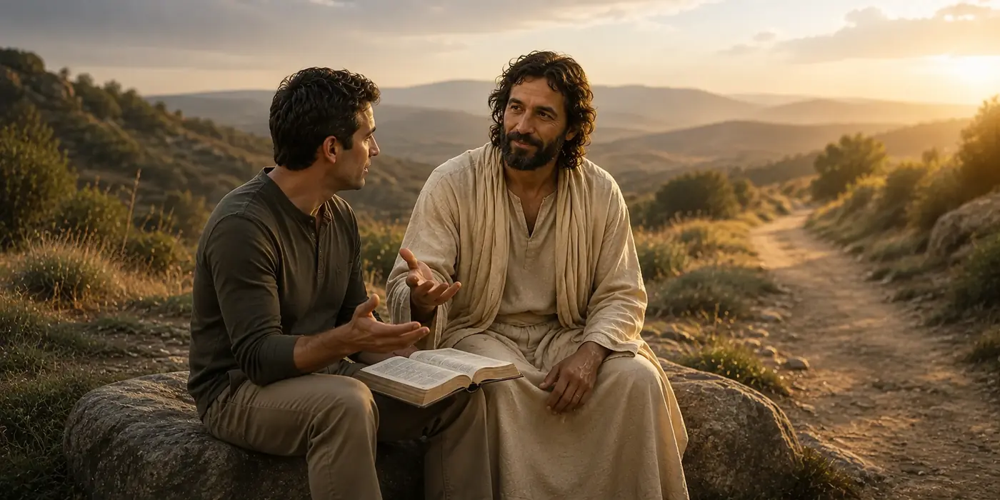

<!DOCTYPE html>
<html lang="en">
<head>
    <meta charset="UTF-8">
    <meta name="viewport" content="width=device-width, initial-scale=1.0">
    <title>Ask About Jesus Christ &amp; Latter-day Saint Beliefs | focusChrist</title>
    <!-- focusChrist SEO START -->
    <meta name="description" content="Ask sincere questions about Jesus Christ, scripture, and the beliefs of The Church of Jesus Christ of Latter-day Saints, with Christ-centered answers and sources.">
    <meta name="robots" content="index, follow, max-image-preview:large">
    <link rel="canonical" href="https://focuschrist.com/ask.html">
    <meta property="og:type" content="website">
    <meta property="og:site_name" content="focusChrist">
    <meta property="og:title" content="Ask About Jesus Christ &amp; Latter-day Saint Beliefs | focusChrist">
    <meta property="og:description" content="Ask sincere questions about Jesus Christ, scripture, and the beliefs of The Church of Jesus Christ of Latter-day Saints, with Christ-centered answers and sources.">
    <meta property="og:url" content="https://focuschrist.com/ask.html">
    <meta property="og:image" content="https://focuschrist.com/assets/heroes/ask.webp">
    <meta name="twitter:card" content="summary_large_image">
    <meta name="twitter:title" content="Ask About Jesus Christ &amp; Latter-day Saint Beliefs | focusChrist">
    <meta name="twitter:description" content="Ask sincere questions about Jesus Christ, scripture, and the beliefs of The Church of Jesus Christ of Latter-day Saints, with Christ-centered answers and sources.">
    <meta name="twitter:image" content="https://focuschrist.com/assets/heroes/ask.webp">
    <!-- focusChrist SEO END -->
    <style>
        * { margin: 0; padding: 0; box-sizing: border-box; }
        body { font-family: 'Segoe UI', Tahoma, sans-serif; background: #0a0a0a; color: #fff; }
        .banner { position: relative; width: 100%; height: 280px; overflow: hidden; }
        .banner-bg { position: absolute; top: 0; left: 0; width: 100%; height: 100%; background: url('assets/heroes/home.webp'); background-size: cover; background-position: center 35%; }
        .banner-overlay { position: absolute; top: 0; left: 0; width: 100%; height: 100%; background: linear-gradient(180deg, rgba(26,21,16,0.3) 0%, rgba(26,21,16,0.1) 40%, rgba(0,0,0,0.6) 100%); }
        .banner-link { position: absolute; top: 0; left: 0; width: 100%; height: 100%; z-index: 10; cursor: pointer; }
        .banner-content { position: absolute; bottom: 25px; left: 50%; transform: translateX(-50%); text-align: center; width: 100%; }
        .banner-title { color: #c9a961; font-size: 1.8em; letter-spacing: 5px; font-family: 'Times New Roman', serif; text-transform: uppercase; margin: 0; text-shadow: 2px 2px 4px rgba(0,0,0,0.8); }
        .nav {
            position: fixed;
            top: 0;
            width: 100%;
            padding: 25px 40px;
            display: flex;
            justify-content: space-between;
            align-items: center;
            z-index: 100;
            background: linear-gradient(180deg, rgba(0,0,0,0.8) 0%, transparent 100%);
        }
        .nav-logo {
            font-size: 1.5em;
            letter-spacing: 5px;
            color: #c9a961;
            text-decoration: none;
            font-family: 'Times New Roman', serif;
        }
        .nav-links { display: flex; gap: 40px; }
        .nav-links a { color: #f5e6d3; text-decoration: none; font-size: 0.9em; letter-spacing: 2px; transition: color 0.3s; }
        .nav-links a:hover, .nav-links a.active { color: #c9a961; }
        .hamburger-wrap { position: relative; }
        .hamburger { cursor: pointer; font-size: 1.5em; color: #c9a961; line-height: 1; }
        .hamburger::before {
            content: "";
            display: block;
            width: 20px;
            height: 2px;
            background: #c9a961;
            margin: 5px 0;
            box-shadow: 0 -6px 0 #c9a961, 0 6px 0 #c9a961;
        }
        .hamburger-menu { display: none; position: absolute; top: 100%; right: 0; background: rgba(0,0,0,0.95); padding: 15px; border-radius: 8px; z-index: 1000; min-width: 180px; margin-top: 10px; }
        .hamburger-menu.show { display: block; }
        .hamburger-menu a { display: block; color: #c9a961; padding: 4px 15px; text-decoration: none; border-bottom: 1px solid rgba(201,169,97,0.2); }
        .hamburger-menu a:hover { background: rgba(201,169,97,0.1); }
        .hamburger-wrap { position: relative; }
        .qa-section { background: #0a0a0a; padding: 50px 20px; }
        .qa-container { max-width: 900px; margin: 0 auto; }
        .scripture-categories { margin-bottom: 30px; }
        .category-row { display: flex; flex-wrap: wrap; justify-content: center; gap: 15px; margin-bottom: 20px; }
        .category-title { width: 100%; text-align: center; color: #888; font-size: 0.8em; letter-spacing: 3px; margin: 15px 0 10px; text-transform: uppercase; }
        .category-btn { padding: 12px 25px; border: 1px solid #c9a961; border-radius: 8px; background: rgba(201,169,97,0.1); color: #c9a961; cursor: pointer; font-size: 0.9em; letter-spacing: 1px; transition: all 0.3s; text-decoration: none; display: inline-block; }
        .category-btn:hover { background: #c9a961; color: #0a0a0a; transform: translateY(-2px); }
        .chat-box { background: rgba(255,255,255,0.03); border-radius: 15px; padding: 25px; min-height: 280px; max-height: 400px; overflow-y: auto; border: 1px solid rgba(201,169,97,0.3); margin-bottom: 20px; }
        .message { margin: 15px 0; padding: 18px; border-radius: 12px; }
        .user-message { background: rgba(201,169,97,0.15); margin-left: 20px; border: 1px solid rgba(201,169,97,0.4); }
        .bot-message { background: rgba(255,255,255,0.05); margin-right: 20px; }
        .bot-message p { line-height: 1.7; color: #ddd; margin-bottom: 12px; }
        .sources { margin-top: 12px; padding-top: 12px; border-top: 1px solid rgba(201,169,97,0.3); }
        .sources-title { color: #c9a961; margin-bottom: 8px; font-size: 0.85em; font-weight: bold; }
        .source-link { display: inline-block; colm«ëŒ+Š×�®º+º$zzb¥æ÷#¢3ƒƒƒ²FW‡BÖFV6÷&F–öã¢æöæS²FF–æs¢W‚'ƒ²Ö&v–ã¢7ƒ²föçB×6—¦S¢ã†VÓ²&÷&FW#¢‚6öÆ–B3CCC²&÷&FW"×&F—W3¢Gƒ²Ğ¢ç6÷W&6RÖƖ泦†÷fW"²6öÆ÷#¢63–“c²&÷&FW"Ö6öÆ÷#¢63–“c²Ğ¢æ–çWBÖ&V²F—7Æ“¢fÆWƒ²v¢Wƒ²Ğ¢–çWE·G—SÒ'FW‡B%Ò²fÆWƒ¢²FF–æs¢W‚#ƒ²&÷&FW#¢‚6öÆ–B63–“c²&÷&FW"×&F—W3¢3ƒ²&6¶w&÷VæC¢&v&ƒ#SRÃ#SRÃ#SRÃãR“²6öÆ÷#¢6ffc²föçB×6—¦S¢VÓ²ö–çFW"ÖWfVçG3¢WFó²Ğ¢–çWE·G—SÒ'FW‡B%Ó£§Æ6V†öÆFW"²6öÆ÷#¢3ccc²Ğ¢–çWE·G—SÒ'FW‡B%Ó¦fö7W2²÷WFÆ–æS¢æöæS²&÷&FW"Ö6öÆ÷#¢6S3s²&6¶w&÷VæC¢&v&ƒ#SRÃ#SRÃ#SRÃ㓲Т'WGFöâ²FF–æs¢W‚3ƒ²&÷&FW#¢æöæS²&÷&FW"×&F—W3¢3ƒ²&6¶w&÷VæC¢63–“c²6öÆ÷#¢3²föçB×vV–v‡C¢&öÆC²7W'6÷#¢ö–çFW#²Ğ¢'WGFö㦆÷fW"²&6¶w&÷VæC¢6#ƒ““S²Ğ¢çvVÆ6öÖR²FW‡BÖÆ–vã¢6VçFW#²FF–æs¢#ƒ²Ğ¢çvVÆ6öÖRƒ2²6öÆ÷#¢63–“c²Ö&v–âÖ&÷GFöÓ¢ƒ²föçB×6—¦S¢ãVVӲТçvVÆ6öÖR²6öÆ÷#¢6²föçB×6—¦S¢ã“VVӲƖæRÖ†V–v‡C¢ãc²Ğ¢çvVÆ6öÖR×7V"²6öÆ÷#¢3ccc²föçB×6—¦S¢ãƒVVÓ²Ö&v–â×F÷¢Wƒ²Ğ¢ò¢fö7W46‡&—7B’G&ç7&Væ7’¢ğ¢æ’Öæ÷F–6R°¢Ö‚×v–GFƒ¢ƒ#ƒ°¢Ö&v–ã¢G‚WFò#gƒ°¢6öÆ÷#¢3“““°¢föçB×6—¦S¢ãƒ&VÓ°¢Æ–æRÖ†V–v‡C¢ãSS°¢FW‡BÖÆ–vã¢6VçFW#°¢Ğ¢fö÷FW"²FF–æs¢C‚#ƒ²FW‡BÖÆ–vã¢6VçFW#²6öÆ÷#¢3SSS²föçB×6—¦S¢ãƒVVÓ²&6¶w&÷VæC¢3SSS²Ğ¢ÖVF–†Ö‚×v–GFƒ¢sc‡‚’°¢æ&ææW"²†V–v‡C¢#ƒ²Ğ¢æ&ææW"×F—FÆR²föçB×6—¦S¢ãFVÓ²ÆWGFW"×76–æs¢Gƒ²Ğ¢æ†W&òÖ6—&6ÆR²v–GFƒ¢#Sƒ²†V–v‡C¢#Sƒ²Ğ¢æ†W&òÖ6—&6ÆR×FW‡B²föçB×6—¦S¢ã&VӲТææb²FF–æs¢W‚#ƒ²§W7F–g’Ö6öçFVçC¢76RÖ&WGvVVã²÷6—F–öã¢&VÆF—fS²Ğ¢ææbÖÆ–æ·2²F—7Æ“¢æöæS²Ğ¢æ†Ö'W&vW"×w&²F—7Æ“¢&Æö6³²÷6—F–öã¢&VÆF—fS²¢Ö–æFWƒ¢#²Ğ¢æ†Ö'W&vW"²F—7Æ“¢&Æö6³²7W'6÷#¢ö–çFW#²föçB×6—¦S¢ãVVÓ²6öÆ÷#¢63–“c²¢Ö–æFWƒ¢#²÷6—F–öã¢&VÆF—fS²Ğ¢æ†Ö'W&vW"ÖÖVçR°¢F—7Æ“¢æöæS°¢÷6—F–öã¢'6öÇWFS°¢F÷¢Cƒ°¢&–v‡C¢°¢v–GFƒ¢#ƒ°¢&6¶w&÷VæC¢&v&ƒÃÃÃã“‚“°¢fÆW‚ÖF—&V7F–öã¢6öÇVÖã°¢FF–æs¢ƒ°¢v¢‡ƒ°¢¢Ö–æFWƒ¢°¢Ğ¢æ†Ö'W&vW"ÖÖVçRç6†÷r²F—7Æ“¢fÆWƒ²Ğ¢æ†Ö'W&vW"ÖÖVçR²föçB×6—¦S¢ã–VÓ²FF–æs¢g‚Wƒ²6öÆ÷#¢63–“c²&÷&FW"Ö&÷GFöÓ¢‚6öÆ–B&v&ƒ#Ãc’ÓrÃã"“²Ğ¢æ–çWBÖ&V²fÆW‚ÖF—&V7F–öã¢6öÇVÖã²Ğ¢'WGFöâ²v–GFƒ¢S²Ğ¢æ6FVv÷'’Ö'Fâ²FF–æs¢G‚Wƒ²föçB×6—¦S¢ã†VӲТТÖVF–†Ö–â×v–GFƒ¢sc—‚’°¢æ†Ö'W&vW"²F—7Æ“¢&Æö6³²Ğ¢æ†Ö'W&vW"ÖÖVçR²¢F—7Æ“¢æöæS²¢÷6—F–öã¢'6öÇWFS°¢F÷¢Sƒ°¢&–v‡C¢#ƒ°¢&6¶w&÷VæC¢&v&ƒÃÃÃã“R“°¢FF–æs¢Wƒ°¢&÷&FW"×&F—W3¢‡ƒ°¢¢Ö–æFWƒ¢°¢Ğ¢æ†Ö'W&vW"ÖÖVçRç6†÷r²F—7Æ“¢fÆWƒ²fÆW‚ÖF—&V7F–öã¢6öÇVÖã²v¢ƒ²Ğ¢æ†Ö'W&vW"ÖÖVçR²6öÆ÷#¢63–“c²föçB×6—¦S¢ã–VӲТТÂ÷7G–ÆSà¢Ç67&—B7&3Ò'6—FRÖ6öÖÖöâæ§3÷cÓ##c“"Ó""FVfW#ãÂ÷67&—Cà¢Ç67&—B7&3Ò'&Wf–WvVBÖ6²Ö¶æ÷vÆVFvRæ§3÷cÓ##c“ÓR"FVfW#ãÂ÷67&—Cà¢Ç67&—B7&3Ò&6²ÖW‡W&–Væ6Ræ§3÷cÓ##c“2Ó""FVfW#ãÂ÷67&—Cà¢ÆÆ–æ²&VÃÒ'7G–ÆW6†VWB"‡&VcÒ'6—FRÖ†VFW"æ772#à¢ÆÆ–æ²&VÃÒ'7G–ÆW6†VWB"‡&VcÒ&6²ÖW‡W&–Væ6Ræ772#à¢ÆÆ–æ²&VÃÒ'7G–ÆW6†VWB"‡&VcÒ'6—FR×7—7FVÒæ772#à¢ÆÆ–æ²&VÃÒ'7G–ÆW6†VWB"‡&VcÒ&6²Ö†W&òæ773÷cÓ##cƒ3ÓB#à£Âö†VCà£Æ&öG’6Æ73Ò&f2×6—FR#à¢Ææb6Æ73Ò&æb"FFÖfö7W66‡&—7BÖ†VFW#Ò'7FæF&B"&–ÖÆ&VÃÒ%&–Ö'’æf–vF–öâ#à¢Æ‡&VcÒ&–æFW‚æ‡FÖÂ"6Æ73Ò&æbÖÆövò#æfö7W46‡&—7CÂöà¢ÆF—b6Æ73Ò&æbÖÆ–æ·2#à¢Æ‡&VcÒ&–æFW‚æ‡FÖÂ#ä„ôÔSÂöà¢Æ‡&VcÒ&6²æ‡FÖÂ"6Æ73Ò&7F—fR"&–Ö7W'&VçCÒ'vR#ä4³Âöà¢Æ‡&VcÒ&ç7vW'2æ‡FÖÂ#äå5tU%3Âöà¢Æ‡&VcÒ&'Bæ‡FÖÂ#ä%CÂöà¢Æ‡&VcÒ'–öæVW'2æ‡FÖÂ#å”ôäTU%3Âöà¢Æ‡&VcÒ&&÷WBæ‡FÖÂ#ä$õUCÂöà¢ÂöF—cà¢ÆF—b6Æ73Ò&†Ö'W&vW"×w&#à¢Ç7â6Æ73Ò&†Ö'W&vW""öæ6Æ–6³Ò'FövvÆTÖVçR‚’"&öÆSÒ&'WGFöâ"F&–æFWƒÒ#"&–ÖÆ&VÃÒ%FövvÆRæf–vF–öâÖVçR"&–ÖW‡æFVCÒ&fÇ6R"&–Ö6öçG&öÇ3Ò&†Ö'W&vW$ÖVçR#ãÂ÷7ãà¢ÆF—b6Æ73Ò&†Ö'W&vW"ÖÖVçR"–CÒ&†Ö'W&vW$ÖVçR#à¢Æ‡&VcÒ&–æFW‚æ‡FÖÂ#ä„ôÔSÂöà¢Æ‡&VcÒ&6²æ‡FÖÂ"6Æ73Ò&7F—fR"&–Ö7W'&VçCÒ'vR#ä4³Âöà¢Æ‡&VcÒ&ç7vW'2æ‡FÖÂ#äå5tU%3Âöà¢Æ‡&VcÒ&'Bæ‡FÖÂ#ä%CÂöà¢Æ‡&VcÒ'–öæVW'2æ‡FÖÂ#å”ôäTU%3Âöà¢Æ‡&VcÒ&&÷WBæ‡FÖÂ#ä$õUCÂöà¢Ƈ#à¢Æ‡&VcÒ&‡GG3¢ò÷wwræ6‡W&6†öf¦W7W66‡&—7Bæ÷&róöÆæsÖVær"F&vWCÒ%ö&Ææ²"&VÃÒ&æö÷VæW"æ÷&VfW'&W"#ä6‡W&6‚vV'6—FSÂöà¢Æ‡&VcÒ&‡GG3¢ò÷wwræ6‡W&6†öf¦W7W66‡&—7Bæ÷&r÷7GVG“öÆæsÖVærgÆFf÷&Ó×vV""F&vWCÒ%ö&Ææ²"&VÃÒ&æö÷VæW"æ÷&VfW'&W"#äv÷7VÂÆ–'&'“Âöà¢Æ‡&VcÒ&‡GG3¢ò÷wwræ6‡W&6†öf¦W7W66‡&—7Bæ÷&röÆV&âö6öÖRÖföÆÆ÷rÖÖSöÆæsÖVær"F&vWCÒ%ö&Ææ²"&VÃÒ&æö÷VæW"æ÷&VfW'&W"#ä6öÖRföÆÆ÷rÖSÂöà¢Æ‡&VcÒ&‡GG3¢ò÷wwræ6‡W&6†öf¦W7W66‡&—7Bæ÷&r÷FV×ÆW3öÆæsÖVær"F&vWCÒ%ö&Ææ²"&VÃÒ&æö÷VæW"æ÷&VfW'&W"#åFV×ÆW3Âöà¢Æ‡&VcÒ&‡GG3¢ò÷wwræ6‡W&6†öf¦W7W66‡&—7Bæ÷&r÷vVÆ6öÖRö÷W"Ö†—7F÷'“öÆæsÖVær"F&vWCÒ%ö&Ææ²"&VÃÒ&æö÷VæW"æ÷&VfW'&W"#ä6‡W&6‚†—7F÷'“Âöà¢Æ‡&VcÒ&‡GG3¢ò÷67&—GW&W2æ'—RæVGRò"F&vWCÒ%ö&Ææ²"&VÃÒ&æö÷VæW"æ÷&VfW'&W"#ä6—FF–öâ–æFWƒÂöà¢Æ‡&VcÒ&‡GG3¢ò÷wwræ6‡W&6†öf¦W7W66‡&—7Bæ÷&r÷FööÇ3öÆæsÖVærf7F—fUF#ÖÆÂ"F&vWCÒ%ö&Ææ²"&VÃÒ&æö÷VæW"æ÷&VfW'&W"#äÆÂ&W6÷W&6W3Âöà¢Ƈ#à¢ÆF—b6Æ73Ò&ÖVçRÖÆ&VÂ#å–÷UGV&SÂöF—cà¢Æ‡&VcÒ&‡GG3¢ò÷wwrç–÷WGV&Ræ6öÒôF†U&—6Vãc3b"F&vWCÒ%ö&Ææ²"&VÃÒ&æö÷VæW"æ÷&VfW'&W"#äF†U&—6Vãc3cÂöà¢ÂöF—cà¢ÂöF—cà¢Âöæcà¢ÆF—b6Æ73Ò&f2×f—7VÂÖ†W&òf2×f—7VÂÖ†W&òÒÖ6‡&—7Bf2×f—7VÂÖ†W&òÒÖ6²"FFÖfö7W66‡&—7BÖ6²ÖW‡W&–Væ6SÒ'G'VR"&–ÖÆ&VÃÒ$¦W7W26‡&—7BFV6†–æræB–çf—F–ær6–æ6W&RVW7F–öç2#ãÂöF—cà¢Ç6V7F–öâ6Æ73Ò&f2×vRÖ–çG&ò"&–ÖÆ&VÆÆVF'“Ò&6²×vR×F—FÆR#à¢ÆF—b6Æ73Ò&f2Ö6öçF–æW"Ò×7FæF&B#à¢Ç6Æ73Ò&f2ÖW–V'&÷r#äÆ6RFò6VV²æB7GVG“Â÷à¢ƃ6Æ73Ò&f2ÖF—7Æ’"–CÒ&6²×vR×F—FÆR#ä6²â6VV²â7GVG’ãÂöƒà¢Ç6Æ73Ò&f2×vRÖ–çG&òÖ6÷’#ä'&–ær6–æ6W&RVW7F–öâ&÷WB¦W7W26‡&—7BÂ67&—GW&RÂ÷"ÆGFW"ÖF’6–çB&VÆ–VbâW‡Æ÷&Râç7vW"ÂföÆÆ÷rF†R6÷W&6W2ÂæB6öçF–çVR7GVG––ærãÂ÷à¢Ç7â6Æ73Ò&f2×vRÖ–çG&ò×67&—GW&R#î(	Ä6²ÂæB—B6†ÆÂ&Rv—fVâ–÷S²6VV²ÂæB–R6†ÆÂf–æBî(	Ò(	BÖGF†Wrs£sÂ÷7ãà¢ÂöF—cà¢Â÷6V7F–öãà ¢ÆÖ–â6Æ73Ò&6²ÖÖ–â#à¢Ç6V7F–öâ6Æ73Ò&6²×7GVG’Ö6&B"&–ÖÆ&VÆÆVF'“Ò&6²×7GVG’Ö†VF–ær#à¢ƃ"6Æ73Ò&6²×7GVG’Ö†VF–ær"–CÒ&6²×7GVG’Ö†VF–ær#åv†Bv÷VÆB–÷RÆ–¶RFòVæFW'7FæCóÂöƒ#à¢Ç6Æ73Ò&6²×7GVG’Ö–çG&ò#ä6²–â–÷W"÷vâv÷&G2âç7vW'2G&rg&öÒ67&—GW&RÂW7F&Æ—6†VBfö7W46‡&—7B7GVG’ÖFW&–ÂÂæB’Ö76—7FVB&W6V&6‚v†W&RæVVFVBãÂ÷à ¢ÆF—b6Æ73Ò&6²Ö–çWBÖ&V#à¢Æ–çWBG—SÒ'FW‡B"–CÒ'W6W$–çWB"Æ6V†öÆFW#Ò$6²6–æ6W&RVW7F–öââââ"öæ¶W—&W73Ò&†æFÆT¶W•&W72†WfVçB’#à¢Æ'WGFöâ6Æ73Ò&6²Ö7F–öâ"öæ6Æ–6³Ò'6VæDÖW76vR‚’"–CÒ'6VæD'Fâ#ä6³Âö'WGFöãà¢Æ'WGFöâ6Æ73Ò&6²Ö7F–öâ6V6öæF'’"öæ6Æ–6³Ò&6ÆV$6†B‚’"–CÒ&6ÆV$'Fâ"F—FÆSÒ$&Vv–âæWrVW7F–öâ#äæWrVW7F–öãÂö'WGFöãà¢ÂöF—cà ¢ÆF—b6Æ73Ò&6²Ö’Öæ÷F–6R"FFÖfö7W66‡&—7BÖ’Öæ÷F–6SÒ'G'VR#࢒Ö76—7FVBç7vW'2&R7GVG’–G2æBÖ’6öçF–âW'&÷'2âf÷"WF†÷&—FF—fR6‡W&6‚FV6†–ærÂfW&–g’–æf÷&ÖF–öâF‡&÷Vv‚Æ–æ¶VBöff–6–Â6‡W&6‚6÷W&6W2âÆV6RFòæ÷B7V&Ö—B6Vç6—F—fRW'6öæ–æf÷&ÖF–öâà¢ÂöF—cà ¢ÆF—b6Æ73Ò&6²×7F'FW'2"FFÖfö7W66‡&—7B×7F'FW"×VW7F–öç3Ò'G'VR#à¢ÆF—b6Æ73Ò&6²×6V7F–öâÖÆ&VÂ#å7F'Bv—F‚VW7F–öãÂöF—cà¢ÆF—b6Æ73Ò&6²×7F'FW"Öw&–B#à¢Æ'WGFöâG—SÒ&'WGFöâ"6Æ73Ò&6²×7F'FW""FFÖ6²×7F'FW"FF×VW7F–öãÒ%v†ò—2¦W7W26‡&—7BÂæBv‡’—2†R6VçG&ÂFòÆGFW"ÖF’6–çB&VÆ–Vcò#åv†ò—2¦W7W26‡&—7CóÂö'WGFöãà¢Æ'WGFöâG—SÒ&'WGFöâ"6Æ73Ò&6²×7F'FW""FFÖ6²×7F'FW"FF×VW7F–öãÒ$†÷r6â’&V6övæ—¦Rç7vW'2Fò&–W"æBW'6öæÂ&WfVÆF–öãò#ä†÷r6â’&V6övæ—¦Rç7vW'2Fò&–W#óÂö'WGFöãà¢Æ'WGFöâG—SÒ&'WGFöâ"6Æ73Ò&6²×7F'FW""FFÖ6²×7F'FW"FF×VW7F–öãÒ%v‡’FòÆGFW"ÖF’6–çG2'V–ÆBFV×ÆW3ò#åv‡’FòÆGFW"ÖF’6–çG2'V–ÆBFV×ÆW3óÂö'WGFöãà¢Æ'WGFöâG—SÒ&'WGFöâ"6Æ73Ò&6²×7F'FW""FFÖ6²×7F'FW"FF×VW7F–öãÒ%v†BFòÆGFW"ÖF’6–çG2&VÆ–WfR†Vç2gFW"FVFƒò#åv†FÚ±î¸Â¸­yê뢰k¢G§¦*^ happens after death?</button>
                    <button type="button" class="ask-starter" data-ask-starter data-question="How do the Bible and the Book of Mormon work together?">How do the Bible and Book of Mormon work together?</button>
                    <button type="button" class="ask-starter" data-ask-starter data-question="How can faith in Jesus Christ help during difficult times?">How can faith help during difficult times?</button>
                </div>
            </div>
        </section>

        <section class="ask-conversation-section" aria-labelledby="conversation-heading">
            <div class="ask-conversation-feature">
                <figure class="fc-content-artwork ask-supporting-art ask-conversation-art">
                    
                </figure>
                <div class="ask-conversation-copy">
                    <h2 class="ask-section-heading" id="conversation-heading">Your Study Conversation</h2>
                    <p class="ask-section-copy">Follow the scripture and source links beneath an answer when they are available. Related permanent study pages may also appear after an answer.</p>
                    <div class="ask-conversation-actions">
                        <button type="button" class="ask-clear-conversation" id="conversationClearBtn">Clear Conversation</button>
                    </div>
                </div>
            </div>
            <div class="chat-box ask-chat-box" id="chatBox" aria-live="polite">
                <div class="welcome ask-welcome">
                    <h3>Begin with a sincere question.</h3>
                    <p>You can type your own question above or choose one of the suggested questions. The purpose is to help you study more deeply and keep Jesus Christ at the center.</p>
                    <p class="welcome-sub">Scripture and official Church resources are linked whenever available.</p>
                </div>
            </div>
        </section>

        <section class="ask-topic-section" aria-labelledby="topic-heading" data-focuschrist-topic-explorer="true">
            <h2 class="ask-section-heading" id="topic-heading">Explore by Topic</h2>
            <p class="ask-section-copy">Open a study area to choose a more specific subject. These topics preserve the breadth of the original Ask page while making it easier to navigate.</p>
            <div class="ask-topic-grid">
                <article class="ask-topic-card">
                    <button type="button" class="asm«ëŒ+Š×�®º+º$zzb¥æ²×F÷–2×FövvÆR"&–ÖW‡æFVCÒ&fÇ6R#å67&—GW&SÂö'WGFöãà¢ÆF—b6Æ73Ò&6²×F÷–2Ö÷F–öç2#à¢Æ'WGFöâ6Æ73Ò&6²×F÷–2Ö÷F–öâ"FFÖ6²×F÷–3Ò$öÆBFW7FÖVçB#äöÆBFW7FÖVçCÂö'WGFöããÆ'WGFöâ6Æ73Ò&6²×F÷–2Ö÷F–öâ"FFÖ6²×F÷–3Ò$vVæW6—2#ävVæW6—3Âö'WGFöããÆ'WGFöâ6Æ73Ò&6²×F÷–2Ö÷F–öâ"FFÖ6²×F÷–3Ò$W†öGW2#äW†öGW3Âö'WGFöããÆ'WGFöâ6Æ73Ò&6²×F÷–2Ö÷F–öâ"FFÖ6²×F÷–3Ò%6Æ×2#å6Æ×3Âö'WGFöããÆ'WGFöâ6Æ73Ò&6²×F÷–2Ö÷F–öâ"FFÖ6²×F÷–3Ò%&÷fW&'2#å&÷fW&'3Âö'WGFöããÆ'WGFöâ6Æ73Ò&6²×F÷–2Ö÷F–öâ"FFÖ6²×F÷–3Ò$—6–‚#ä—6–ƒÂö'WGFöããÆ'WGFöâ6Æ73Ò&6²×F÷–2Ö÷F–öâ"FFÖ6²×F÷–3Ò$æWrFW7FÖVçB#äæWrFW7FÖVçCÂö'WGFöããÆ'WGFöâ6Æ73Ò&6²×F÷–2Ö÷F–öâ"FFÖ6²×F÷–3Ò$ÖGF†Wr#äÖGF†WsÂö'WGFöããÆ'WGFöâ6Æ73Ò&6²×F÷–2Ö÷F–öâ"FFÖ6²×F÷–3Ò$Ö&²#äÖ&³Âö'WGFöããÆ'WGFöâ6Æ73Ò&6²×F÷–2Ö÷F–öâ"FFÖ6²×F÷–3Ò$ÇV¶R#äÇV¶SÂö'WGFöããÆ'WGFöâ6Æ73Ò&6²×F÷–2Ö÷F–öâ"FFÖ6²×F÷–3Ò$¦ö†â#ä¦ö†ãÂö'WGFöããÆ'WGFöâ6Æ73Ò&6²×F÷–2Ö÷F–öâ"FFÖ6²×F÷–3Ò%&öÖç2#å&öÖç3Âö'WGFöããÆ'WGFöâ6Æ73Ò&6²×F÷–2Ö÷F–öâ"FFÖ6²×F÷–3Ò$&öö²öbÖ÷&Ööâ#ä&öö²öbÖ÷&ÖöãÂö'WGFöããÆ'WGFöâ6Æ73Ò&6²×F÷–2Ö÷F–öâ"FFÖ6²×F÷–3Ò#æW†’#ãæW†“Âö'WGFöããÆ'WGFöâ6Æ73Ò&6²×F÷–2Ö÷F–öâ"FFÖ6²×F÷–3Ò#"æW†’#ã"æW†“Âö'WGFöããÆ'WGFöâ6Æ73Ò&6²×F÷–2Ö÷F–öâ"FFÖ6²×F÷–3Ò$ÆÖ#äÆÖÂö'WGFöããÆ'WGFöâ6Æ73Ò&6²×F÷–2Ö÷F–öâ"FFÖ6²×F÷–3Ò$†VÆÖâ#ä†VÆÖãÂö'WGFöããÆ'WGFöâ6Æ73Ò&6²×F÷–2Ö÷F–öâ"FFÖ6²×F÷–3Ò$Ö÷&öæ’#äÖ÷&öæ“Âö'WGFöããÆ'WGFöâ6Æ73Ò&6²×F÷–2Ö÷F–öâ"FFÖ6²×F÷–3Ò$Fö7G&–æRæB6÷fVæçG2#äFö7G&–æRfײ6÷fVæçG3Âö'WGFöããÆ'WGFöâ6Æ73Ò&6²×F÷–2Ö÷F–öâ"FFÖ6²×F÷–3Ò%V&Âöbw&VB&–6R#åV&Âöbw&VB&–6SÂö'WGFöããÆ'WGFöâ6Æ73Ò&6²×F÷–2Ö÷F–öâ"FFÖ6²×F÷–3Ò$&–&ÆR&÷†V7’#ä&–&ÆR&÷†V7“Âö'WGFöãà¢ÂöF—cà¢Âö'F–6ÆSà¢Æ'F–6ÆR6Æ73Ò&6²×F÷–2Ö6&B#à¢Æ'WGFöâG—SÒ&'WGFöâ"6Æ73Ò&6²×F÷–2×FövvÆR"&–ÖW‡æFVCÒ&fÇ6R#ä¦W7W26‡&—7Bfײ†—2v÷7VÃÂö'WGFöãà¢ÆF—b6Æ73Ò&6²×F÷–2Ö÷F–öç2#à¢Æ'WGFöâ6Æ73Ò&6²×F÷–2Ö÷F–öâ"FFÖ6²×F÷–3Ò$¦W7W26‡&—7B#ä¦W7W26‡&—7CÂö'WGFöããÆ'WGFöâ6Æ73Ò&6²×F÷–2Ö÷F–öâ"FFÖ6²×F÷–3Ò$FöæVÖVçB#äFöæVÖVçCÂö'WGFöããÆ'WGFöâ6Æ73Ò&6²×F÷–2Ö÷F–öâ"FFÖ6²×F÷–3Ò$&F—6Ò#ä&F—6ÓÂö'WGFöããÆ'WGFöâ6Æ73Ò&6²×F÷–2Ö÷F–öâ"FFÖ6²×F÷–3Ò$†öÇ’v†÷7B#ä†öÇ’v†÷7CÂö'WGFöããÆ'WGFöâ6Æ73Ò&6²×F÷–2Ö÷F–öâ"FFÖ6²×F÷–3Ò%&W7W'&V7F–öâ#å&W7W'&V7F–öãÂö'WGFöããÆ'WGFöâ6Æ73Ò&6²×F÷–2Ö÷F–öâ"FFÖ6²×F÷–3Ò$Æ–v‡Böb6‡&—7B#äÆ–v‡Böb6‡&—7CÂö'WGFöããÆ'WGFöâ6Æ73Ò&6²×F÷–2Ö÷F–öâ"FFÖ6²×F÷–3Ò%6öâöbÖâ#å6öâöbÖãÂö'WGFöããÆ'WGFöâ6Æ73Ò&6²×F÷–2Ö÷F–öâ"FFÖ6²×F÷–3Ò$ævVÇ2#äævVÇ3Âö'WGFöããÆ'WGFöâ6Æ73Ò&6²×F÷–2Ö÷F–öâ"FFÖ6²×F÷–3Ò%7—&—GVÂv–gG2#å7—&—GVÂv–gG3Âö'WGFöããÆ'WGFöâ6Æ73Ò&6²×F÷–2Ö÷F–öâ"FFÖ6²×F÷–3Ò$F—f–æRæGW&R#äF—f–æRæGW&SÂö'WGFöãà¢ÂöF—cà¢Âö'F–6ÆSà¢Æ'F–6ÆR6Æ73Ò&6²×F÷–2Ö6&B#à¢Æ'WGFöâG—SÒ&'WGFöâ"6Æ73Ò&6²×F÷–2×FövvÆR"&–ÖW‡æFVCÒ&fÇ6R#å&–W"fײ&WfVÆF–öãÂö'WGFöãà¢ÆF—b6Æ73Ò&6²×F÷–2Ö÷F–öç2#à¢Æ'WGFöâ6Æ73Ò&6²×F÷–2Ö÷F–öâ"FFÖ6²×F÷–3Ò%&–W"#å&–W#Âö'WGFöããÆ'WGFöâ6Æ73Ò&6²×F÷–2Ö÷F–öâ"FFÖ6²×F÷–3Ò'W'6öæÂ&WfVÆF–öâg26V6öæF†æBFW7F–Ööç’#åW'6öæÂ&WfVÆF–öãÂö'WGFöããÆ'WGFöâ6Æ73Ò&6²×F÷–2Ö÷F–öâ"FFÖ6²×F÷–3Ò'&V6övæ—¦–ær7—&—G2v†—7W&–æw2#å&V6övæ—¦–ærF†R7—&—CÂö'WGFöããÆ'WGFöâ6Æ73Ò&6²×F÷–2Ö÷F–öâ"FFÖ6²×F÷–3Ò&ö&VF–Væ6RVæÆö6·2&WfVÆF–öâ#äö&VF–Væ6Rfײ&WfVÆF–öãÂö'WGFöããÆ'WGFöâ6Æ73Ò&6²×F÷–2Ö÷F–öâ"FFÖ6²×F÷–3Ò%&÷†WF–2&WfVÆF–öâ#å&÷†WF–2&WfVÆF–öãÂö'WGFöããÆ'WGFöâ6Æ73Ò&6²×F÷–2Ö÷F–öâ"FFÖ6²×F÷–3Ò%&÷†WG2#å&÷†WG3Âö'WGFöããÆ'WGFöâ6Æ73Ò&6²×F÷–2Ö÷F–öâ"FFÖ6²×F÷–3Ò&†öÇ’v†÷7Bv–gBF†B7F—2#äv–gBöbF†R†öÇ’v†÷7CÂö'WGFöããÆ'WGFöâ6Æ73Ò&6²×F÷–2Ö÷F–öâ"FFÖ6²×F÷–3Ò&†öÇ’v†÷7BwV–FRFòG'WF‚#äwV–FRFòG'WFƒÂö'WGFöããÆ'WGFöâ6Æ73Ò&6²×F÷–2Ö÷F–öâ"FFÖ6²×F÷–3Ò$ÆWB–÷W"Æ–v‡B6†–æR#äÆWB–÷W"Æ–v‡B6†–æSÂö'WGFöãà¢ÂöF—cà¢Âö'F–6ÆSà¢Æ'F–6ÆR6Æ73Ò&6²×F÷–2Ö6&B#à¢Æ'WGFöâG—SÒ&'WGFöâ"6Æ73Ò&6²×F÷–2×FövvÆR"&–ÖW‡æFVCÒ&fÇ6R#åFV×ÆW2fײ6÷fVæçG3Âö'WGFöãà¢ÆF—b6Æ73Ò&6²×F÷–2Ö÷F–öç2#à¢Æ'WGFöâ6Æ73Ò&6²×F÷–2Ö÷F–öâ"FFÖ6²×F÷–3Ò%FV×ÆW2#åFV×ÆW3Âö'WGFöããÆ'WGFöâ6Æ73Ò&6²×F÷–2Ö÷F–öâ"FFÖ6²×F÷–3Ò%FV×ÆR÷&F–ææ6W2#åFV×ÆR÷&F–ææ6W3Âö'WGFöããÆ'WGFöâ6Æ73Ò&6²×F÷–2Ö÷F–öâ"FFÖ6²×F÷–3Ò%&–W7F†ööB#å&–W7F†ööCÂö'WGFöããÆ'WGFöâ6Æ73Ò&6²×F÷–2Ö÷F–öâ"FFÖ6²×F÷–3Ò%&–W7F†ööBWF†÷&—G’#å&–W7F†ööBWF†÷&—G“Âö'WGFöããÆ'WGFöâ6Æ73Ò&6²×F÷–2Ö÷F–öâ"FFÖ6²×F÷–3Ò$Æröb6†7F—G’#äÆröb6†7F—G“Âö'WGFöããÆ'WGFöâ6Æ73Ò&6²×F÷–2Ö÷F–öâ"FFÖ6²×F÷–3Ò%7—&—BöbVÆ–¦‚#å7—&—BöbVÆ–¦ƒÂö'WGFöãà¢ÂöF—cà¢Âö'F–6ÆSà¢Æ'F–6ÆR6Æ73Ò&6²×F÷–2Ö6&B#à¢Æ'WGFöâG—SÒ&'WGFöâ"6Æ73Ò&6²×F÷–2×FövvÆR"&–ÖW‡æFVCÒ&fÇ6R#äfÖ–Ç’fײWFW&æÂÆ–fSÂö'WGFöãà¢ÆF—b6Æ73Ò&6²×F÷–2Ö÷F–öç2#à¢Æ'WGFöâ6Æ73Ò&6²×F÷–2Ö÷F–öâ"FFÖ6²×F÷–3Ò%Æâöb6ÇfF–öâ#åÆâöb6ÇfF–öãÂö'WGFöããÆ'WGFöâ6Æ73Ò&6²×F÷–2Ö÷F–öâ"FFÖ6²×F÷–3Ò$WFW&æÂfÖ–Ç’#äWFW&æÂfÖ–Ç“Âö'WGFöããÆ'WGFöâ6Æ73Ò&6²×F÷–2Ö÷F–öâ"FFÖ6²×F÷–3Ò%&W7W'&V7F–öâ#å&W7W'&V7F–öãÂö'WGFöããÆ'WGFöâ6Æ73Ò&6²×F÷–2Ö÷F–öâ"FFÖ6²×F÷–3Ò%G&ç6ÆF–öâ#åG&ç6ÆF–öãÂö'WGFöããÆ'WGFöâ6Æ73Ò&6²×F÷–2Ö÷F–öâ"FFÖ6²×F÷–3Ò$F—f–æRæGW&R#äF—f–æRæGW&SÂö'WGFöãà¢ÂöF—cà¢Âö'F–6ÆSà¢Æ'F–6ÆR6Æ73Ò&6²×F÷–2Ö6&B#à¢Æ'WGFöâG—SÒ&'WGFöâ"6Æ73Ò&6²×F÷–2×FövvÆR"&–ÖW‡æFVCÒ&fÇ6R#ä6‡W&6‚†—7F÷'’fײ&W7F÷&F–öãÂö'WGFöãà¢ÆF—b6Æ73Ò&6²×F÷–2Ö÷F–öç2#à¢Æ'WGFöâ6Æ73Ò&6²×F÷–2Ö÷F–öâ"FFÖ6²×F÷–3Ò%&W7F÷&F–öâ#å&W7F÷&F–öãÂö'WGFöããÆ'WGFöâ6Æ73Ò&6²×F÷–2Ö÷F–öâ"FFÖ6²×F÷–3Ò$¦÷6W‚6Ö—F‚#ä¦÷6W‚6Ö—FƒÂö'WGFöããÆ'WGFöâ6Æ73Ò&6²×F÷–2Ö÷F–öâ"FFÖ6²×F÷–3Ò$f—'7Bf—6–öâ#äf—'7Bf—6–öãÂö'WGFöããÆ'WGFöâ6Æ73Ò&6²×F÷–2Ö÷F–öâ"FFÖ6²×F÷–3Ò%&÷†WG2#å&÷†WG3Âö'WGFöããÆ'WGFöâ6Æ73Ò&6²×F÷–2Ö÷F–öâ"FFÖ6²×F÷–3Ò%&–W7F†ööBWF†÷&—G’#å&–W7F†ööBWF†÷&—G“Âö'WGFöãà¢ÂöF—cà¢Âö'F–6ÆSà¢ÂöF—cà¢Â÷6V7F–öãà ¢Ç6V7F–öâ6Æ73Ò&6²Ö6öçF–çVR×6V7F–öâ"&–ÖÆ&VÆÆVF'“Ò&6öçF–çVRÖ†VF–ær"FFÖfö7W66‡&—7BÖ6öçF–çVR×7GVG“Ò'G'VR#à¢ƃ"6Æ73Ò&6²×6V7F–öâÖ†VF–ær"–CÒ&6öçF–çVRÖ†VF–ær#ä6öçF–çVR–÷W"7GVG“Âöƒ#à¢Ç6Æ73Ò&6²×6V7F–öâÖ6÷’#äVW7F–öâ6â&RF†R&Vv–ææ–æröbÆöævW"7GVG’F‚ãÂ÷à¢ÆF—b6Æ73Ò&6²Ö6öçF–çVRÖÆ–÷WB#à¢ÆF—b6Æ73Ò&6²Ö6öçF–çVRÖw&–B#à¢Æ6Æ73Ò&6²Ö6öçF–çVRÖ6&B"‡&VcÒ&ç7vW'2æ‡FÖÂ#ãÇ7G&öæsäç7vW"Æ–'&'“Â÷7G&öæsãÇ7ãåW&ÖæVçBÂ6÷W&6RÖw&÷VæFVBW‡ÆæF–öç2öb6öÖÖöâVW7F–öç2ãÂ÷7ããÂöà¢Æ6Æ73Ò&6²Ö6öçF–çVRÖ6&B"‡&VcÒ&'Bæ‡FÖÂ#ãÇ7G&öæsä–ç7—&F–öæÂ'CÂ÷7G&öæsãÇ7ãäW‡Æ÷&R6‡&—7BÖ6VçFW&VB'Gv÷&²æB6VÆV7FVB7GVG’F‡2ãÂ÷7ããÂöà¢Æ6Æ73Ò&6²Ö6öçF–çVRÖ6&B"‡&VcÒ'vF6‚æ‡FÖÂ#ãÇ7G&öæsåvF6‚fײ7GVG“Â÷7G&öæsãÇ7ãä6öçF–çVRg&öÒf–FVòF†VÖW2–çFòFVWW"fö7W46‡&—7B&W6÷W&6W2ãÂ÷7ããÂöà¢Æ6Æ73Ò&6²Ö6öçF–çVRÖ6&B"‡&VcÒ'–öæVW'2æ‡FÖÂ#ãÇ7G&öæså–öæVW'3Â÷7G&öæsãÇ7ãäW‡Æ÷&Rf—F‚Â67&–f–6RÂæBÆGFW"ÖF’6–çB†—7F÷'’ãÂ÷7ããÂöà¢Æ6Æ73Ò&6²Ö6öçF–çVRÖ6&B"‡&VcÒ&‡GG3¢ò÷wwræ6‡W&6†öf¦W7W66‡&—7Bæ÷&r÷7GVG“öÆæsÖVær"F&vWCÒ%ö&Ææ²"&VÃÒ&æö÷VæW"æ÷&VfW'&W"#ãÇ7G&öæsäöff–6–Â6‡W&6‚7GVG“Â÷7G&öæsãÇ7ãä6öçF–çVR–âv÷7VÂÆ–'&'’æBöff–6–Â6‡W&6‚&W6÷W&6W2ãÂ÷7ããÂöà¢ÂöF—cà¢Æf–wW&R6Æ73Ò&f2Ö6öçFVçBÖ'Gv÷&²6²×7W÷'F–ærÖ'B6²Ö6öçF–çVRÖ'B#à¢Æ–Ör7&3Ò&76WG2÷vRÖ'Bö6²Öæ–6öFV×W2Ó#"çvV'"7&76WCÒ&76WG2÷vRÖ'Bö6²Öæ–6öFV×W2ÓcCçvV'cCrÂ76WG2÷vRÖ'Bö6²Öæ–6öFV×W2Ó#"çvV'#'r"6—¦W3Ò"†Ö‚×v–GFƒ¢S‚’⃓֖grÂSc‚’Â3“‚"ÇCÒ$¦W7W26‡&—7B7V¶–ærv—F‚æ–6öFV×W2–âV–WB&VFvâ6WGF–ær"v–GFƒÒ##""†V–v‡CÒ#C""ÆöF–æsÒ&Ƨ’"FV6öF–æsÒ&7–æ2#à¢Âöf–wW&Sà¢ÂöF—cà¢Â÷6V7F–öãà¢ÂöÖ–ãà £Æfö÷FW"6Æ73Ò&f2Öfö÷FW""FFÖfö7W66‡&—7BÖfö÷FW#Ò'7FæF&B#ãÇì*’##bfö7W46‡&—7BÒÆÂ&RvVÆ6öÖR†W&RãÂ÷âÇFFÖfö7W66‡&—7BÖ–æFWVæFVæ6SÒ&fö÷FW""7G–ÆSÒ&Ö‚×v–GFƒ¢“ƒ²Ö&v–ã¢G‚WFò²Æ–æRÖ†V–v‡C¢ãc²föçB×6—¦S¢ã“&VÓ²#æfö7W46‡&—7B—2â–æFWVæFVçBf—F‚Ö&6VBvV'6—FRæB—2æ÷Bâöff–6–ÂvV'6—FRöbÂ7öç6÷&VB'’Â÷"VæF÷'6VB'’F†R6‡W&6‚öb¦W7W26‡&—7BöbÆGFW"ÖF’6–çG2âf÷"öff–6–Â6‡W&6‚–æf÷&ÖF–öâÂf—6—BƇ&VcÒ&‡GG3¢ò÷wwræ6‡W&6†öf¦W7W66‡&—7Bæ÷&rò"F&vWCÒ%ö&Ææ²"&VÃÒ&æö÷VæW"æ÷&VfW'&W""7G–ÆSÒ&6öÆ÷#¢63–“c²#ä6‡W&6†öd¦W7W46‡&—7Bæ÷&sÂöâãÂ÷à¢Âöfö÷FW#à¢Ç67&—Cà¢gVæ7F–öâFövvÆTÖVçR‚’°¢f"ÖVçRÒFö7VÖVçBævWDVÆVÖVçD'”–B‚v†Ö'W&vW$ÖVçRr“°¢ÖVçRæ6Æ74Æ—7BçFövvÆR‚w6†÷rr“°¢Ğ¢Fö7VÖVçBæFDWfVçDÆ—7FVæW"‚v6Æ–6²rÂgVæ7F–öâ†R’°¢f"ÖVçRÒFö7VÖVçBævWDVÆVÖVçD'”–B‚v†Ö'W&vW$ÖVçRr“°¢f"†Ö'W&vW"ÒFö7VÖVçBçVW'•6VÆV7F÷"‚ræ†Ö'W&vW"r“°¢–b‚ÖVçRæ6öçF–ç2†RçF&vWB’bb†Ö'W&vW"æ6öçF–ç2†RçF&vWB’’°¢ÖVçRæ6Æ74Æ—7Bç&VÖ÷fR‚w6†÷rr“°¢Ğ¢Ò“°¢òò6Æ÷6RÖVçRv†Vâ6Æ–6¶–ærç’Æ–æ²–ç6–FR†Ö'W&vW"ÖÖVçP¢Fö7VÖVçBçVW'•6VÆV7F÷$Æ‚ræ†Ö'W&vW"ÖÖVçRr’æf÷$V6‚†gVæ7F–öâ†Æ–æ²’°¢Æ–æ²æFDWfVçDÆ—7FVæW"‚v6Æ–6²rÂgVæ7F–öâ‚’°¢Fö7VÖVçBævWDVÆVÖVçD'”–B‚v†Ö'W&vW$ÖVçRr’æ6Æ74Æ—7Bç&VÖ÷fR‚w6†÷rr“°¢Ò“°¢Ò“°¢¢6öç7BFF&6RÒ°¢v6öÆ÷"W6VB–â67&—GW&Rs¢²fW&–f–VC¢G'VRÂç7vW#¢%67&—GW&RW6W26öÆ÷"2–ÖvW'’Â'WB—BFöW2æ÷Bv—fRöæRVæ—fW'6Â6öFR–âv†–6‚WfW'’6öÆ÷"Çv—2†2F†R6ÖRÖVæ–ærâF†R–ÖÖVF–FR76vR×W7B6öçG&öÂF†R–çFW'&WFF–öâåÆåÆî(
"—6–‚£‚6öçG&7G26–ç2FW67&–&VB266&ÆWBæB&VBÆ–¶R7&–×6öâv—F‚&V6öÖ–ærv†—FR26æ÷r÷"vööÂâ–âF†B76vRÂF†R6öçG&7BFV6†W26ÆVç6–ærg&öÒ6–âåÆåÆî(
"2æW†’“£#RFW67&–&W2¦W7W2w26÷VçFVææ6RæBv&ÖVçG2ÂæBF†RF—66—ÆW2†R&ÆW76VBÂ27W'76–ævÇ’v†—FRv†–ÆRF†RÆ–v‡Böb†—26÷VçFVææ6R6†öæRWöâF†VÒâF†W&Rv†—FVæW7266ö×æ–W2F—f–æRvÆ÷'’æBG&ç6f÷&ÖF–öâåÆåÆî(
"&WfVÆF–öâc£BFW67&–&W2&VB†÷'6Rv†÷6R&–FW"F¶W2V6Rg&öÒF†RV'F‚â–âF†Bf—6–öâÂ&VB—26öææV7FVBv—F‚&ÆööG6†VBæB6öæfÆ–7BåÆåÆî(
"Fö7G&–æRæB6÷fVæçG233£CbÂC‚ÂæBSFW67&–&W2F†R&WGW&æ–ærÆ÷&B–â&VB&VÂæBW‡Æ–ç2F†R&ÆööB–ÖvW'’–âF†B76vRåÆåÆäFö7G&–æRæB6÷fVæçG2ƒ£R—2&÷WBF†R¦÷’öb'&–æv–ær6÷VÂFò6‡&—7BâFö7G&–æRæB6÷fVæçG2sc£3(	33B6öæ6W&ç2F†R6öç2öbW&F—F–öââæV—F†W"76vRFV6†W2&VBÂv†—FRÂæB&Æ6²FVw&VW2öbvÆ÷'’÷"&VBæB&Æ6²Æ–v‡G2âF†÷6R6Æ–×2&R–æ6÷'&V7Bâ6öÆ÷"7–Ö&öÆ—6Ò6†÷VÆB&RW‡Æ–æVB76vR'’76vRg&öÒF†R7GVÂFW‡BÂæ÷B76–væVBg&öÒf—†VB6†'Bâ"Â6÷W&6W3¢··FW‡C¢	ù9—6–‚£‚rÇW&âv‡GG3¢ò÷wwræ6‡W&6†öf¦W7W66‡&—7Bæ÷&r÷7GVG’÷67&—GW&W2ö÷Bö—6óãƒöÆæsÖVærwÒÇ·FW‡C¢	ù9Â2æW†’“£#RrÇW&âv‡GG3¢ò÷wwræ6‡W&6†öf¦W7W66‡&—7Bæ÷&r÷7GVG’÷67&—GW&W2ö&öfÒó2ÖæRó’ã#SöÆæsÖVærwÒÇ·FW‡C¢	ù9Â&WfVÆF–öâc£BrÇW&âv‡GG3¢ò÷wwræ6‡W&6†öf¦W7W66‡&—7Bæ÷&r÷7GVG’÷67&—GW&W2öçB÷&WbóbãCöÆæsÖVærwÒÇ·FW‡C¢	ù9ÂFö7G&–æRæB6÷fVæçG233£Cn(	3SrÇW&âv‡GG3¢ò÷wwræ6‡W&6†öf¦W7W66‡&—7Bæ÷&r÷7GVG’÷67&—GW&W2öF2×FW7FÖVçBöF2ó32ãCbÓSöÆæsÖVærwÕÒÒÀ¢v6öÆ÷"–â67&—GW&Rs¢²fW&–f–VC¢G'VRÂç7vW#¢%67&—GW&RW6W26öÆ÷"2–ÖvW'’Â'WB—BFöW2æ÷Bv—fRöæRVæ—fW'6Â6öFR–âv†–6‚WfW'’6öÆ÷"Çv—2†2F†R6ÖRÖVæ–ærâF†R–ÖÖVF–FR76vR×W7B6öçG&öÂF†R–çFW'&WFF–öâåÆåÆî(
"—6–‚£‚6öçG&7G26–ç2FW67&–&VB266&ÆWBæB&VBÆ–¶R7&–×6öâv—F‚&V6öÖ–ærv†—FR26æ÷r÷"vööÂâ–âF†B76vRÂF†R6öçG&7BFV6†W26ÆVç6–ærg&öÒ6–âåÆåÆî(
"2æW†’“£#RFW67&–&W2¦W7W2w26÷VçFVææ6RæBv&ÖVçG2ÂæBF†RF—66—ÆW2†R&ÆW76VBÂ27W'76–ævÇ’v†—FRv†–ÆRF†RÆ–v‡Böb†—26÷VçFVææ6R6†öæRWöâF†VÒâF†W&Rv†—FVæW7266ö×æ–W2F—f–æRvÆ÷'’æBG&ç6f÷&ÖF–öâåÆåÆî(
"&WfVÆF–öâc£BFW67&–&W2&VB†÷'6Rv†÷6R&–FW"F¶W2V6Rg&öÒF†RV'F‚â–âF†Bf—6–öâÂ&VB—26öææV7FVBv—F‚&ÆööG6†VBæB6öæfÆ–7BåÆåÆî(
"Fö7G&–æRæB6÷fVæçG233£CbÂC‚ÂæBSFW67&–&W2F†R&WGW&æ–ærÆ÷&B–â&VB&VÂæBW‡Æ–ç2F†R&ÆööB–ÖvW'’–âF†B76vRåÆåÆäFö7G&–æRæB6÷fVæçG2ƒ£R—2&÷WBF†R¦÷’öb'&–æv–ær6÷VÂFò6‡&—7BâFö7G&–æRæB6÷fVæçG2sc£3(	33B6öæ6W&ç2F†R6öç2öbW&F—F–öââæV—F†W"76vRFV6†W2&VBÂv†—FRÂæB&Æ6²FVw&VW2öbvÆ÷'’÷"&VBæB&Æ6²Æ–v‡G2âF†÷6R6Æ–×2&R–æ6÷'&V7Bâ6öÆ÷"7–Ö&öÆ—6Ò6†÷VÆB&RW‡Æ–æVB76vR'’76vRg&öÒF†R7GVÂFW‡BÂæ÷B76–væVBg&öÒf—†VB6†'Bâ"Â6÷W&6W3¢··FW‡C¢	ù9—6–‚£‚rÇW&âv‡GG3¢ò÷wwræ6‡W&6†öf¦W7W66‡&—7Bæ÷&r÷7GVG’÷67&—GW&W2ö÷Bö—6óãƒöÆæsÖVærwÒÇ·FW‡C¢	ù9Â2æW†’“£#RrÇW&âv‡GG3¢ò÷wwræ6‡W&6†öf¦W7W66‡&—7Bæ÷&r÷7GVG’÷67&—GW&W2ö&öfÒó2ÖæRó’ã#SöÆæsÖVærwÒÇ·FW‡C¢	ù9Â&WfVÆF–öâc£BrÇW&âv‡GG3¢ò÷wwræ6‡W&6†öf¦W7W66‡&—7Bæ÷&r÷7GVG’÷67&—GW&W2öçB÷&WbóbãCöÆæsÖVærwÒÇ·FW‡C¢	ù9ÂFö7G&–æRæB6÷fVæçG233£Cn(	3SrÇW&âv‡GG3¢ò÷wwræ6‡W&6†öf¦W7W66‡&—7Bæ÷&r÷7GVG’÷67&—GW&W2öF2×FW7FÖVçBöF2ó32ãCbÓSöÆæsÖVærwÕÒÒÀ¢v¦÷6W‚6Ö—F‚FVF‚s¢²fW&–f–VC¢G'VRÂç7vW#¢$77VÖ–ær–÷RÖVâ¦÷6W‚6Ö—Fƒ¢†RæB†—2'&÷F†W"‡—'VÒvW&R¶–ÆÆVB'’Öö"B6'F†vR¦––â–ÆÆ–æö—2öâ§VæR#rƒCBâ6òF†R–V"v2ƒCBâ"Â6÷W&6W3¢··FW‡C¢	ù9ÂFVF‡2öb¦÷6W‚æB‡—'VÒ6Ö—F‚rÇW&âv‡GG3¢ò÷wwræ6‡W&6†öf¦W7W66‡&—7Bæ÷&r÷7GVG’ö†—7F÷'’÷F÷–72öFVF‡2ÖöbÖ¦÷6W‚ÖæBÖ‡—'VÒ×6Ö—FƒöÆæsÖVærwÒÇ·FW‡C¢	ù9ÂF†RÖ'G—&FöÒöb¦÷6W‚æB‡—'VÒ6Ö—F‚rÇW&âv‡GG3¢ò÷wwræ6‡W&6†öf¦W7W66‡&—7Bæ÷&r÷7GVG’öÖçVÂöÆGFW"ÖF’×6–çBÖ†—7F÷'’ÓƒRÓƒCb×FV6†W"ÖÖFW&–ÂöÆW76öâÓ#cöÆæsÖVærwÕÒÒÀ¢vf—F‚æBG&–Ç2s¢²ç7vW#¢"¢¤†÷rFöW2¦ÖW2w2FV6†–ærF†Bvf—F‚v—F†÷WBv÷&·2—2FVBr„¦ÖW2#£r’†VÇW2VæFW'7FæBÆÖw2v÷&G2&÷WBf—F‚&V–ærvÆ–¶RVçFòw&–âöb×W7F&B6VVBr„ÆÖ3#£#“ò¢¢ÆåÆåF†W6RGvò76vW2v÷&²FövWF†W"&VWF–gVÆÇ“¢¦ÖW2FV6†W2F†Bd•D‚&WV—&W27F–öâ(	BG'VR&VÆ–Vb&öGV6W2v÷&·2âÆÖFV6†W2F†Bf—F‚7F'G24ÔÄÂ'WBw&÷w2$”râF†R6öææV7F–öãò¢¥6ÖÆÂf—F‚²7F–öâÒw&÷v–ærf—F‚⢢ÆåÆ⢤¦ÖW2#£r¢¢(	Btf—F‚v—F†÷WBv÷&·2—2FVBârF†—2—6âwBf—F‚F†BFöW6âwB&öGV6Rv÷&·2—6âwBf—F‚BÆÂâ&VÂf—F‚6†ævW2†÷r–÷RÆ—fRâÆåÆ⢤ÆÖ3#£#¢¢(	Btf—F‚—2æ÷B¶æ÷vÆVFvRÂ'WBF†R¶æ÷vÆVFvRöbÆÂF†–æw2—2æ÷Bv—fVâVçFòÖVâârf—F‚—2Æ–¶R6VVB(	B–÷RÆçB—B†6†ö÷6RFò&VÆ–WfR’ÂF†Vâ–÷RvFW"—B‡7GVG’Â&’Âö&W’’ÂæB—Bw&÷w2âÆåÆ⢥F†RGFW&㢢¢7F'Bv—F‚WfVâF–ç’&VÆ–Vb(i"7Böâ—B(i"&V6V—fR6öæf—&ÖF–öâ(i"f—F‚w&÷w2â¦ÖW2£"ÓBFV6†W3¢t6÷VçB—BƦ÷’v†Vâ–RfÆ–çFòFV×FF–öç2r(	B&V6W6RFW7F–ær&öGV6W2F–Væ6RâÆåÆ⢤&÷GFöÒÆ–æS¢¢¢FöâwBv—Bf÷"W&fV7Bf—F‚â7F'Bv—F‚w&–ââF†Vâ7BâvF6‚—Bw&÷râ"Â6÷W&6W3¢··FW‡C¢	ù9¦ÖW2#£rrÇW&âv‡GG3¢ò÷wwræ6‡W&6†öf¦W7W66‡&—7Bæ÷&r÷7GVG’÷67&—GW&W2öçBö¦ÖW2ó"æÚ±î¸Â¸­yê뢰k¢G§¦*^17'},{text:'📜 Alma 32:21',url:'https://www.churchofjesuschrist.org/study/scriptures/bofm/alma/32.21'},{text:'📜 James 1:2-4',url:'https://www.churchofjesuschrist.org/study/scriptures/nt/james/1.2'},{text:'📜 Matthew 17:20',url:'https://www.churchofjesuschrist.org/study/scriptures/nt/matt/17.20'}] },
        'tower of babel bible mormon': { answer: "**How do the brass plates recordings (including the Tower of Babel) connect to Moses's account in Genesis?** \n\n**1 Nephi 5:11** — 'My father is a descendant of Manasseh... [who] was carried away with his father into the land of promise... according to the will of God.' The brass plates contained 'the books of Lehi's family' including 'a record of the Jews from the beginning... even down to the commencement of the reign of Zedekiah.'\n\n**Genesis 11:1-9** — The Tower of Babel account: 'The whole earth was of one language... And the Lord said, Behold, the people is one... let us go down, and there confound their language.'\n\n**The connection:** The brass plates preserved the Genesis account before the Book of Mormon was compiled. When Lehi's family left Jerusalem (c. 600 BC), they brought these plates containing the writings of the prophets — including the Tower of Babel story from Genesis 11.\n\n**Why it matters:** The Book of Mormon doesn't recount the full Tower of Babel story — it simply references that the brass plates contained these records (1 Nephi 5:14). This shows the Book of Mormon and Bible share the same ancient origin for this event. The Brass Plates were a physical connection between the Old World (Jerusalem) and the New World (the Americas, via Lehi's family).", sources: [{text:'📜 1 Nephi 5:11',url:'https://www.churchofjesuschrist.org/study/scriptures/bofm/1-ne/5.11'},{text:'📜 1 Nephi 5:14',url:'https://www.churchofjesuschrist.org/study/scriptures/bofm/1-ne/5.14'},{text:'📜 Genesis 11:1-9',url:'https://www.churchofjesuschrist.org/study/scriptures/ot/gen/11.1'}] },
        'moses brass plates': { answer: "**How do the brass plates recordings (including the Tower of Babel) connect to Moses's account in Genesis?** \n\n**1 Nephi 5:11** — 'My father is a descendant of Manasseh... [who] was carried away with his father into the land of promise... according to the will of God.' The brass plates contained 'the books of Lehi's family' including 'a record of the Jews from the beginning... even down to the commencement of the reign of Zedekiah.'\n\n**Genesis 11:1-9** — The Tower of Babel account: 'The whole earth was of one language... And the Lord said, Behold, the people is one... let us go down, and there confound their language.'\n\n**The connection:** The brass plates preserved the Genesis account before the Book of Mormon was compiled. When Lehi's family left Jerusalem (c. 600 BC), they brought these plates containing the m«ëŒ+Š×�®º+º$zzb¥çw&—F–æw2öbF†R&÷†WG2(	B–æ6ÇVF–ærF†RF÷vW"öb&&VÂ7F÷'’g&öÒvVæW6—2åÆåÆ⢥v‡’—BÖGFW'3¢¢¢F†R&öö²öbÖ÷&ÖöâFöW6âwB&V6÷VçBF†RgVÆÂF÷vW"öb&&VÂ7F÷'’(	B—B6–×Ç’&VfW&Væ6W2F†BF†R'&72ÆFW26öçF–æVBF†W6R&V6÷&G2ƒæW†’S£B’âF†—26†÷w2F†R&öö²öbÖ÷&ÖöâæB&–&ÆR6†&RF†R6ÖRæ6–VçB÷&–v–âf÷"F†—2WfVçBâF†R'&72ÆFW2vW&R‡—6–6Â6öææV7F–öâ&WGvVVâF†RöÆBv÷&ÆB„¦W'W6ÆVÒ’æBF†RæWrv÷&ÆB‡f–ÆV†–’w2fÖ–Ç’’â"Â6÷W&6W3¢··FW‡C¢	ù9ÂæW†’S£rÇW&âv‡GG3¢ò÷wwræ6‡W&6†öf¦W7W66‡&—7Bæ÷&r÷7GVG’÷67&—GW&W2ö&öfÒóÖæRóRãwÒÇ·FW‡C¢	ù9ÂæW†’S£BrÇW&âv‡GG3¢ò÷wwræ6‡W&6†öf¦W7W66‡&—7Bæ÷&r÷7GVG’÷67&—GW&W2ö&öfÒóÖæRóRãBwÒÇ·FW‡C¢	ù9ÂvVæW6—2£Ó’rÇW&âv‡GG3¢ò÷wwræ6‡W&6†öf¦W7W66‡&—7Bæ÷&r÷7GVG’÷67&—GW&W2ö÷BövVâóãwÕÒÒÀ¢v'&72ÆFW2vVæW6—2s¢²ç7vW#¢"¢¤†÷rFòF†R'&72ÆFW2&V6÷&F–æw2†–æ6ÇVF–ærF†RF÷vW"öb&&VÂ’6öææV7BFòÖ÷6W2w266÷VçB–âvVæW6—3ò¢¢ÆåÆ⢣æW†’S£¢¢(	Bt×’fF†W"—2FW66VæFçBöbÖæ76V‚âââ·v†õÒv26'&–VBv’v—F‚†—2fF†W"–çFòF†RÆæBöb&öÖ—6Râââ66÷&F–ærFòF†Rv–ÆÂöbvöBârF†R'&72ÆFW26öçF–æVBwF†R&öö·2öbÆV†’w2fÖ–Ç’r–æ6ÇVF–ærv&V6÷&BöbF†R¦Ww2g&öÒF†R&Vv–ææ–ærâââWfVâF÷vâFòF†R6öÖÖVæ6VÖVçBöbF†R&V–vâöb¦VFV¶–‚âuÆåÆ⢤vVæW6—2£Ó’¢¢(	BF†RF÷vW"öb&&VÂ66÷VçC¢uF†Rv†öÆRV'F‚v2öböæRÆæwVvRâââæBF†RÆ÷&B6–BÂ&V†öÆBÂF†RV÷ÆR—2öæRâââÆWBW2vòF÷vâÂæBF†W&R6öæf÷VæBF†V—"ÆæwVvRâuÆåÆ⢥F†R6öææV7F–ö㢢¢F†R'&72ÆFW2&W6W'fVBF†RvVæW6—266÷VçB&Vf÷&RF†R&öö²öbÖ÷&Ööâv26ö×–ÆVBâv†VâÆV†’w2fÖ–Ç’ÆVgB¦W'W6ÆVÒ†2âc$2’ÂF†W’'&÷Vv‡BF†W6RÆFW26öçF–æ–ærF†Rw&—F–æw2öbF†R&÷†WG2(	B–æ6ÇVF–ærF†RF÷vW"öb&&VÂ7F÷'’g&öÒvVæW6—2åÆåÆ⢥v‡’—BÖGFW'3¢¢¢F†R&öö²öbÖ÷&ÖöâFöW6âwB&V6÷VçBF†RgVÆÂF÷vW"öb&&VÂ7F÷'’(	B—B6–×Ç’&VfW&Væ6W2F†BF†R'&72ÆFW26öçF–æVBF†W6R&V6÷&G2ƒæW†’S£B’âF†—26†÷w2F†R&öö²öbÖ÷&ÖöâæB&–&ÆR6†&RF†R6ÖRæ6–VçB÷&–v–âf÷"F†—2WfVçBâF†R'&72ÆFW2vW&R‡—6–6Â6öææV7F–öâ&WGvVVâF†RöÆBv÷&ÆBæBF†RæWrv÷&ÆBF‡&÷Vv‚ÆV†–’w2fÖ–Ç’â"Â6÷W&6W3¢··FW‡C¢	ù9ÂæW†’S£rÇW&âv‡GG3¢ò÷wwræ6‡W&6†öf¦W7W66‡&—7Bæ÷&r÷7GVG’÷67&—GW&W2ö&öfÒóÖæRóRãwÒÇ·FW‡C¢	ù9ÂæW†’S£BrÇW&âv‡GG3¢ò÷wwræ6‡W&6†öf¦W7W66‡&—7Bæ÷&r÷7GVG’÷67&—GW&W2ö&öfÒóÖæRóRãBwÒÇ·FW‡C¢	ù9ÂvVæW6—2£Ó’rÇW&âv‡GG3¢ò÷wwræ6‡W&6†öf¦W7W66‡&—7Bæ÷&r÷7GVG’÷67&—GW&W2ö÷BövVâóãwÕÒÒÀ¢vvVæW6—2F÷vW"&&VÂs¢²ç7vW#¢"¢¤†÷rFòF†R'&72ÆFW2&V6÷&F–æw2†–æ6ÇVF–ærF†RF÷vW"öb&&VÂ’6öææV7BFòÖ÷6W2w266÷VçB–âvVæW6—3ò¢¢ÆåÆ⢣æW†’S£¢¢(	Bt×’fF†W"—2FW66VæFçBöbÖæ76V‚âââ·v†õÒv26'&–VBv’v—F‚†—2fF†W"–çFòF†RÆæBöb&öÖ—6Râââ66÷&F–ærFòF†Rv–ÆÂöbvöBârF†R'&72ÆFW26öçF–æVBwF†R&öö·2öbÆV†–’w2fÖ–Ç’r–æ6ÇVF–ærv&V6÷&BöbF†R¦Ww2g&öÒF†R&Vv–ææ–ærâââWfVâF÷vâFòF†R6öÖÖVæ6VÖVçBöbF†R&V–vâöb¦VFV¶–‚âuÆåÆ⢤vVæW6—2£Ó’¢¢(	BF†RF÷vW"öb&&VÂ66÷VçC¢uF†Rv†öÆRV'F‚v2öböæRÆæwVvRâââæBF†RÆ÷&B6–BÂ&V†öÆBÂF†RV÷ÆR—2öæRâââÆWBW2vòF÷vâÂæBF†W&R6öæf÷VæBF†V—"ÆæwVvRâuÆåÆ⢥F†R6öææV7F–ö㢢¢F†R'&72ÆFW2&W6W'fVBF†RvVæW6—266÷VçB&Vf÷&RF†R&öö²öbÖ÷&Ööâv26ö×–ÆVBâv†VâÆV†–’w2fÖ–Ç’ÆVgB¦W'W6ÆVÒ†2âc$2’ÂF†W’'&÷Vv‡BF†W6RÆFW26öçF–æ–ærF†Rw&—F–æw2öbF†R&÷†WG2(	B–æ6ÇVF–ærF†RF÷vW"öb&&VÂ7F÷'’g&öÒvVæW6—2åÆåÆ⢥v‡’—BÖGFW'3¢¢¢F†R&öö²öbÖ÷&ÖöâFöW6âwB&V6÷VçBF†RgVÆÂF÷vW"öb&&VÂ7F÷'’(	B—B6–×Ç’&VfW&Væ6W2F†BF†R'&72ÆFW26öçF–æVBF†W6R&V6÷&G2ƒæW†’S£B’âF†—26†÷w2F†R&öö²öbÖ÷&ÖöâæB&–&ÆR6†&RF†R6ÖRæ6–VçB÷&–v–âf÷"F†—2WfVçBâF†R'&72ÆFW2vW&R‡—6–6Â6öææV7F–öâ&WGvVVâF†RöÆBv÷&ÆBæBF†RæWrv÷&ÆBF‡&÷Vv‚ÆV†–’w2fÖ–Ç’â"Â6÷W&6W3¢··FW‡C¢	ù9ÂæW†’S£rÇW&âv‡GG3¢ò÷wwræ6‡W&6†öf¦W7W66‡&—7Bæ÷&r÷7GVG’÷67&—GW&W2ö&öfÒóÖæRóRãwÒÇ·FW‡C¢	ù9ÂæW†’S£BrÇW&âv‡GG3¢ò÷wwræ6‡W&6†öf¦W7W66‡&—7Bæ÷&r÷7GVG’÷67&—GW&W2ö&öfÒóÖæRóRãBwÒÇ·FW‡C¢	ù9ÂvVæW6—2£Ó’rÇW&âv‡GG3¢ò÷wwræ6‡W&6†öf¦W7W66‡&—7Bæ÷&r÷7GVG’÷67&—GW&W2ö÷BövVâóãwÕÒÒÀ ¢vÆ–v‡BæBÆ–fRöbF†Rv÷&ÆBs¢²ç7vW#¢"¢¤†÷rFöW26‡&—7Bw2FV6Æ&F–öâ–â2æW†’“£R„’ÒF†RÆ–v‡BæBF†RÆ–fRöbF†Rv÷&ÆB’6ö×&Rv—F‚¦ö†âw2v÷7VÂFV6†–æsò¢¢ÆåÆ⢣2æW†’“£R¢¢(	B6‡&—7B7V·2FòF†RæW†—FW2–âF†RÖW&–62âÆåÆ⢤¦ö†â£B¢¢(	Bt–↖Òv2Æ–fS²æBF†RÆ–fRv2F†RÆ–v‡BöbÖVâârÆåÆ⢤¦ö†âƒ£"¢¢(	Bt’ÒF†RÆ–v‡BöbF†Rv÷&ÆC¢†RF†BföÆÆ÷vWF‚ÖR6†ÆÂæ÷BvƲ–âF&¶æW72ârÆåÆ⢥F†R6öææV7F–ö㢢¢&÷F‚FV6‚6‡&—7B—2F†R4õU$4Röb7—&—GVÂÆ–v‡BæBÆ–fR(	Bæ÷B§W7BFV6†W"Â'WBF†R7GVÂ4õU$4Râv—F†÷WB†–ÒÂF†W&R—2æò7—&—GVÂÆ–fRâ†RFöW6çB§W7B6†÷rW2F†Rv’(	B†R•2F†Rv’ÂF†RG'WF‚ÂæBF†RÆ–fR„¦ö†âC£b’âv†WF†W"–â¦W'W6ÆVÒ÷"F†RÖW&–62ÂF†RG'WF‚—2F†R6ÖS¢6‡&—7B—2WfW'—F†–ærâ"Â6÷W&6W3¢··FW‡C¢	ù9Â2æW†’“£RrÇW&âv‡GG3¢ò÷wwræ6‡W&6†öf¦W7W66‡&—7Bæ÷&r÷7GVG’÷67&—GW&W2ö&öfÒó2ÖæRó’ãRwÒÇ·FW‡C¢	ù9¦ö†â£BrÇW&âv‡GG3¢ò÷wwræ6‡W&6†öf¦W7W66‡&—7Bæ÷&r÷7GVG’÷67&—GW&W2öçBö¦ö†âóãBwÒÇ·FW‡C¢	ù9¦ö†âƒ£"rÇW&âv‡GG3¢ò÷wwræ6‡W&6†öf¦W7W66‡&—7Bæ÷&r÷7GVG’÷67&—GW&W2öçBö¦ö†âó‚ã"wÕÒÒÀ¢vÖVâ&RF†BF†W’Ö–v‡B†fR¦÷’s¢²ç7vW#¢"¢¤†÷rFöW2ÆV„—2FV6†–ær&÷WBÖVâ&RÂF†BF†W’Ö–v‡B†fR¦÷’ƒ"æW†’#£#R’&VÆFRFòVÇ2FV6†–ærF†BÆÂF†–æw2v÷&²FövWF†W"f÷"vööBFòF†VÒF†BÆ÷fRvöB…&öÖç2ƒ£#‚“ò¢¢ÆåÆ⢣"æW†’#£#R¢¢(	BtFÒfVÆÂF†BÖVâÖ–v‡B&S²æBÖVâ&RÂF†BF†W’Ö–v‡B†fR¦÷’ârF†—2—2öæRöbF†RÖ÷7B&öf÷VæB7FFVÖVçG2–â67&—GW&R(	BFVF‚æB6÷'&÷rW†—7B6ò¦÷’6âW†—7BâÆåÆ⢥&öÖç2ƒ£#‚¢¢(	BtÆÂF†–æw2v÷&²FövWF†W"f÷"vööBFòF†VÒF†BÆ÷fRvöBârWfVâ7VffW&–ær6W'fW2÷W"¦÷’âÆåÆ⢥F†R6öææV7F–ö㢢¢&÷F‚FV6‚F†BvöG2VçF—&RÆâ(	B–æ6ÇVF–ærF–ff–7VÇG’(	B—2FW6–væVBf÷"÷W"¦÷’âÆV†’W‡Æ–ç2t…’vR†fR÷÷6—FW2âVÂW‡Æ–ç2D„BWfVâ†&BF†–æw26W'fRvööBâÆåÆ⢥v†B—BÖVç3¢¢¢–÷W"G&–Ç2&VâwB&æFöÒ(	BF†W’w&R'BöbF†R¦÷’WVF–öââF†RFöæVÖVçBVç7W&W2ÆÂF†–æw2&V6öÖR'Böb–÷W"¦÷’7F÷'’â"Â6÷W&6W3¢··FW‡C¢	ù9Â"æW†’#£#RrÇW&âv‡GG3¢ò÷wwræ6‡W&6†öf¦W7W66‡&—7Bæ÷&r÷7GVG’÷67&—GW&W2ö&öfÒó"ÖæRó"ã#RwÒÇ·FW‡C¢	ù9Â&öÖç2ƒ£#‚rÇW&âv‡GG3¢ò÷wwræ6‡W&6†öf¦W7W66‡&—7Bæ÷&r÷7GVG’÷67&—GW&W2öçB÷&öÒó‚ã#‚wÕÒÒÀ¢wv÷&BöbvöB26VVBs¢²ç7vW#¢"¢¤†÷rFöW2æW„—26ö×&—6öâöbF†Rv÷&BöbvöBFò6VVBƒæW†’ƒ£’&ÆÆV¦W7W72&&ÆW2&÷WB6VVG3ò¢¢ÆåÆ⢣æW†’ƒ£¢¢(	BÆV†’6VW2G&VRv†÷6Rg'V—Bv2FW6—&&ÆRFòÖ¶RöæR†’âF†—2&W&W6VçG2F†Rv÷&BöbvöBâÆåÆ⢤ÖGF†Wr3£2Ó’¢¢(	B¦W7W2&&ÆRöbF†R6÷vW#¢6VVG2fÆÂöâF–ffW&VçBw&÷VæB(	B6öÖRF–RÂ6öÖRw&÷rÂ6öÖR&öGV6Rg'V—BâÆåÆ⢤&÷F‚W6Rw&–7VÇGW&–ÖvW'“¢¢¢F†Rv÷&BöbvöB—26VVBâv†Vâ—BÆæG2–âvööB6ö–Â(	B†V'BF†G2‡VÖ&ÆRÂv–ÆÆ–ærÂæBö&VF–VçB(	B—Bw&÷w2âÆåÆ⢥F†R¶W“¢¢¢æW†’‚6†÷w2F†R—&öâ&öB(	BF†Rv÷&BöbvöB(	BF†BÆVG2FòF†RG&VRâÖGF†Wr2W‡Æ–ç2vööB6ö–Â&öGV6W26öÖRF†—'G–föÆBÂ6öÖR6—‡G’Â6öÖRâ‡VæG&VBâÆåÆ⢤&÷GFöÒÆ–æS¢¢¢&–&ÆRæB&öö²öbÖ÷&ÖöâFV6‚F†R6ÖR&–æ6—ÆRâÆçB—BâvFW"—Bâw&÷râ"Â6÷W&6W3¢··FW‡C¢	ù9ÂæW†’ƒ£rÇW&âv‡GG3¢ò÷wwræ6‡W&6†öf¦W7W66‡&—7Bæ÷&r÷7GVG’÷67&—GW&W2ö&öfÒóÖæRó‚ãwÒÇ·FW‡C¢	ù9ÂÖGF†Wr3£2Ó’rÇW&âv‡GG3¢ò÷wwræ6‡W&6†öf¦W7W66‡&—7Bæ÷&r÷7GVG’÷67&—GW&W2öçBöÖGBó2ã2wÕÒÒÀ¢w&–W"ÆÖ¦W7W2s¢²ç7vW#¢"¢¥v†B6–Ö–Æ&—F–W2W†—7B&WGvVVâÆÖ2FV6†–æröâ&––ær–âf—F‚æB¦W7W72–ç7G'V7F–öâ–âF†R6W&ÖöâöâF†RÖ÷VçCò¢¢ÆåÆ⢤ÆÖ3C£rÓ#‚¢¢(	BÆÖFV6†W3¢÷W"÷WBF‡’6÷VÂVçFòvöBâââ‡VÖ&ÆRF‡—6VÆbâââ6²âââfV"æ÷BâÆåÆ⢤ÖGF†Wrc£RÓR¢¢(	B¦W7W2FV6†W2&–W"v—F‚7V6–f–73¢tgFW"F†—2ÖææW"F†W&Vf÷&R&’–RârÆåÆ⢥F†R6öææV7F–öç3¢¢¢ÆåÆã⢥6–æ6W&RÂæ÷B6†÷w’¢¢(	B&÷F‚v&âv–ç7Bf–â&WWF—F–öç2âÆåÆã"⢥7V6–f–2&WVW7G2¢¢(	B¦W7W2vfRF†RÆ÷&G2&–W"2ÔôDTÂâÆÖvfR7V6–f–2F†–æw2Fò6²f÷"âÆåÆã2⢤‡VÖ&ÆR†V'B¢¢(	B&÷F‚V׆6—¦R‡VÖ–Æ—G’âÆåÆãB⢥W'6—7FVæ6R¢¢(	B6²ÂæB—B6†ÆÂ&Rv—fVââ÷W"÷WBF‡’6÷VÂâÆåÆ⢥F†R6W&ÖöâFòF†RæW†—FW2ƒ2æW†’2’¢¢&WVG2F†W6R6ÖR&–æ6—ÆW2(	BöæR6‡&—7BÂöæRÖW76vR7&÷72&÷F‚67&—GW&W2â"Â6÷W&6W3¢··FW‡C¢	ù9ÂÆÖ3C£rÓ#‚rÇW&âv‡GG3¢ò÷wwræ6‡W&6†öf¦W7W66‡&—7Bæ÷&r÷7GVG’÷67&—GW&W2ö&öfÒöÆÖó3BãrwÒÇ·FW‡C¢	ù9ÂÖGF†Wrc£RÓRrÇW&âv‡GG3¢ò÷wwræ6‡W&6†öf¦W7W66‡&—7Bæ÷&r÷7GVG’÷67&—GW&W2öçBöÖGBóbãRwÒÇ·FW‡C¢	ù9Â2æW†’2rÇW&âv‡GG3¢ò÷wwræ6‡W&6†öf¦W7W66‡&—7Bæ÷&r÷7GVG’÷67&—GW&W2ö&öfÒó2ÖæRó2wÕÒÒÀ¢vÆ—f–ærvFW"WFW&æÂÆ–fRs¢²ç7vW#¢"¢¤†÷rFöW2F†R6f–÷"w2&öÖ—6RöbvÆ—f–ærvFW"rFòF†R6Ö&—FâvöÖâBF†RvVÆ„¦ö†âC£’&VÆFRFò¦Væ÷2w2ÆÆVv÷'’öbF†RöÆ—fRG&VR&÷WBvFW&–ærF†R6÷VÃò¢¢ÆåÆ⢤¦ö†âC£¢¢(	B¦W7W2FVÆÇ2F†R6Ö&—FâvöÖã¢tv—fRÖRG&–æ²âââv†÷6öWfW"G&–æ¶WF‚öbF†RvFW"F†B’6†ÆÂv—fR†–Ò6†ÆÂæWfW"F†—'7Bâr†RöffW'2Æ—f–ærvFW"(	B7—&—GVÂæ÷W&—6†ÖVçBF†B6F—6f–W26ö×ÆWFVÇ’âÆåÆ⢤¦6ö"S£RÓ#R¢¢(	B¦Væ÷2w2ÆÆVv÷'’FW67&–&W2F†RÆ÷&BFVæF–ærâöÆ—fRG&VRÂvFW&–ær–Ú±î¸Â¸­yê뢰k¢G§¦*^t, pruning it, and grafting wild branches in. The fruit is 'most precious' and 'most desired.' This is the watering of the soul — spiritual nourishment through Christ and His servants. \n\n**The connection:** Both teach that spiritual nourishment comes through Christ. The Samaritan woman sought physical water; Jesus offered spiritual water that satisfies forever. In the allegory, the Lord carefully waters and tends the tree — meaning He carefully tends to US, His spiritual children. \n\n**The application:** Are you drinking from the right source? The world's water leaves you thirsting again. The living water of Christ satisfies permanently. This is part of why He taught at wells — He knows we come seeking, and He offers what truly satisfies.", sources: [{text:'📜 John 4:10',url:'https://www.churchofjesuschrist.org/study/scriptures/nt/john/4.10'},{text:'📜 Jacob 5:15-25',url:'https://www.churchofjesuschrist.org/study/scriptures/bofm/jacob/5.15'},{text:'📜 John 7:37-39',url:'https://www.churchofjesuschrist.org/study/scriptures/nt/john/7.37'},{text:'📜 Isaiah 58:11',url:'https://www.churchofjesuschrist.org/study/scriptures/ot/isa/58.11'}] },
        'is it true': { answer: "That's a great question — one that many people ask. The answer comes through personal prayer and feeling the Holy Ghost. Moroni 10:4-5 invites you to ask God with sincere intent if this is true. Look for evidence in the Restoration, the Book of Mormon, and the teachings that resonate with your heart.", sources: [{text:'📜 Moroni 10:4-5',url:'https://www.churchofjesuschrist.org/study/scriptures/bofm/morm/10.4'},{text:'� How do I know its true?',url:'https://www.churchofjesuschrist.org/study/topics/knowing-the-church-is-true'}] },
        'old testament': { answer: "The Old Testament is the first division of the Christian Bible, containing books written before the birth of Jesus Christ. It includes the Torah (Genesis-Deuteronomy), historical books, poetry, wisdom literature, and major and minor prophets. Latter-day Saints believe the Old Testament contains God's word and testifies of Jesus Christ.", sources: [{text:'📜 Old Testament',url:'https://www.churchofjesuschrist.org/study/scriptures/ot'}] },
        'genesis': { answer: "Genesis is the first book of the Old Testament, written by Moses. It describes the Creation, the Fall of Man, the Flood, and the lives of the patriarchs Abraham, Isaac, Jacob, and Joseph. It establishes the plan of salvation and God's covenant with His children.", sources: [{text:'📜 Genesis',url:'https://www.churchofjesuschrist.org/study/scriptures/ot/gen'}] },
        'exodus': { answer: "Exodus tells the story of Israel's deliverance from Egyptian bondage, the giving of the Law at Mount Sinai, and the building of the Tabernacle. Moses led the people out of Egypt and received the Ten Commandments.", sources: [{text:'📜 Exodus',url:'https://www.churchofjesuschrist.org/study/scriptures/ot/ex'}] },
        'leviticus': { answer: "Leviticus contains instructions for priests and the people of Israel about sacrifices, cleanliness, and holy days. It explains the law of Moses and the sacred ordinances that pointed forward to the Atonement of Jesus Christ.", sources: [{text:'📜 Leviticus',url:'https://www.churchofjesuschrist.org/study/scriptures/ot/lev'}] },
        'numbers': { answer: "Numbers records the journey of Israel from Sinai to the Promised Land. It includes the census of the tribes, the wilderness wanderings, and the laws given to guide the people toward Canaan.", sources: [{text:'📜 Numbers',url:'https://www.churchofjesuschrist.org/study/scriptures/ot/num'}] },
        'deuteronomy': { answer: "Deuteronomy contains Moses' farewell addresses to Israel. He reminds them of their journey, repeats the law, and urges obedience. Moses blesses the tribes and predicts the scattering and eventual restoration of Israel.", sources: [{text:'📜 Deuteronomy',url:'https://www.churchofjesuschrist.org/study/scriptures/ot/deut'}] },
        'joshua': { answer: "Joshua records the conquest of Canaan under Joshua's leadership. The Israelites cross the Jordan River, capm«ëŒ+Š×�®º+º$zzb¥çGW&R¦W&–6†òÂæBF—f–FRF†RÆæBÖöærF†RGvVÇfRG&–&W2â—BFVÖöç7G&FW2vöBw2f—F†gVÆæW72–âgVÆf–ÆÆ–ær†—2&öÖ—6W2â"Â6÷W&6W3¢··FW‡C¢	ù9¦÷6‡VrÇW&âv‡GG3¢ò÷wwræ6‡W&6†öf¦W7W66‡&—7Bæ÷&r÷7GVG’÷67&—GW&W2ö÷Bö¦÷6‚wÕÒÒÀ¢v§VFvW2s¢²ç7vW#¢$§VFvW2FW67&–&W2F†R7–6ÆRöb6–âÂ÷&W76–öâÂ&WVçFæ6RÂæBFVÆ—fW&æ6R–âæ6–VçB—7&VÂâFV&÷&‚Âv–FVöâÂ6×6öâÂæB÷F†W"§VFvW2ÆVBvöBw2V÷ÆRâ—B6†÷w2F†R6öç6WVVæ6W2öbGW&æ–ærv’g&öÒF†RÆ÷&Bâ"Â6÷W&6W3¢··FW‡C¢	ù9§VFvW2rÇW&âv‡GG3¢ò÷wwræ6‡W&6†öf¦W7W66‡&—7Bæ÷&r÷7GVG’÷67&—GW&W2ö÷Bö§VFrwÕÒÒÀ¢w'WF‚s¢²ç7vW#¢%'WF‚—27F÷'’öbÆ÷–ÇG’æB&VFV×F–öââÖö&—FRvöÖâÖ'&–W2â—7&VÆ—FRÂÆ÷6W2†W"‡W6&æBÂ'WB&VÖ–ç2f—F†gVÂFò†W"Ö÷F†W"Ö–âÖÆrâ6†R&V6öÖW2âæ6W7F÷"öb¶–ærFf–BæBVÇF–ÖFVÇ’öb¦W7W26‡&—7Bâ"Â6÷W&6W3¢··FW‡C¢	ù9Â'WF‚rÇW&âv‡GG3¢ò÷wwræ6‡W&6†öf¦W7W66‡&—7Bæ÷&r÷7GVG’÷67&—GW&W2ö÷B÷'WF‚wÕÒÒÀ¢s6×VVÂs¢²ç7vW#¢#6×VVÂ6÷fW'2F†RG&ç6—F–öâg&öÒ§VFvW2FòÖöæ&6‡’â6×VVÂæö–çG26VÂæBF†VâFf–B2¶–æw2â—B–æ6ÇVFW2F†R7F÷&–W2öb†ææ‚w2&–W"ÂFf–Bw2f–7F÷'’÷fW"vöÆ–F‚ÂæBF†RFV6Æ–æ–ær&V–vâöb6VÂâ"Â6÷W&6W3¢··FW‡C¢	ù9Â6×VVÂrÇW&âv‡GG3¢ò÷wwræ6‡W&6†öf¦W7W66‡&—7Bæ÷&r÷7GVG’÷67&—GW&W2ö÷Bó×6ÒwÕÒÒÀ¢s"6×VVÂs¢²ç7vW#¢#"6×VVÂ&V6÷&G2Ff–Bw2&V–vâ2¶–æröb—7&VÂâ—B–æ6ÇVFW2†—2f–7F÷&–W2†—26–âv—F‚&F‡6†V&ÂF†R&V&VÆÆ–öâöb'6ÆöÒÂæBvöBw26÷fVæçBv—F‚Ff–BF†B†—2F‡&öæRv÷VÆBVæGW&Rf÷&WfW"â"Â6÷W&6W3¢··FW‡C¢	ù9Â"6×VVÂrÇW&âv‡GG3¢ò÷wwræ6‡W&6†öf¦W7W66‡&—7Bæ÷&r÷7GVG’÷67&—GW&W2ö÷Bó"×6ÒwÕÒÒÀ¢s¶–æw2s¢²ç7vW#¢#¶–æw2&V6÷&G26öÆöÖöâw2&V–vâÂF†RF—f—6–öâöbF†R¶–ævFöÒÂæBF†R&÷†WG2VÆ–¦‚æBVÆ—6†â—B6†÷w2F†RFV6Æ–æRöb—7&VÂæBF†R÷vW"öb&–W"æBf—F‚–âF–ÖW2öb÷7F7’â"Â6÷W&6W3¢··FW‡C¢	ù9¶–æw2rÇW&âv‡GG3¢ò÷wwræ6‡W&6†öf¦W7W66‡&—7Bæ÷&r÷7GVG’÷67&—GW&W2ö÷BóÖ¶w2wÕÒÒÀ¢s"¶–æw2s¢²ç7vW#¢#"¶–æw26öçF–çVW2F†R†—7F÷'’öb—7&VÂæB§VF‚ÂF†RÖ–æ—7G&–W2öbVÆ—6†ÂæBF†RWfVçGVÂfÆÂöb&÷F‚¶–ævFö×2Fò77—&–æB&'–Æöââ—B6†÷w2F†R6öç6WVVæ6W2öb&V¦V7F–ærvöBw2&÷†WG2â"Â6÷W&6W3¢··FW‡C¢	ù9Â"¶–æw2rÇW&âv‡GG3¢ò÷wwræ6‡W&6†öf¦W7W66‡&—7Bæ÷&r÷7GVG’÷67&—GW&W2ö÷Bó"Ö¶w2wÕÒÒÀ¢s6‡&öæ–6ÆW2s¢²ç7vW#¢#6‡&öæ–6ÆW2G&6W2F†RvVæVÆöv–W2g&öÒFÒFò—7&VÂæB&V6÷&G2Ff–Bw2&V–vââ—BV׆6—¦W2v÷'6†—ÂF†RFV×ÆRÂæBF†R67&VB&W7öç6–&–Æ—F–W2öbF†RÆWf—FW2â"Â6÷W&6W3¢··FW‡C¢	ù9Â6‡&öæ–6ÆW2rÇW&âv‡GG3¢ò÷wwræ6‡W&6†öf¦W7W66‡&—7Bæ÷&r÷7GVG’÷67&—GW&W2ö÷BóÖ6‚wÕÒÒÀ¢s"6‡&öæ–6ÆW2s¢²ç7vW#¢#"6‡&öæ–6ÆW26÷fW'26öÆöÖöâw2&V–vâÂF†RF—f–FVB¶–ævFöÒÂæBF†R&W7F÷&F–öâVæFW"†W¦V¶–‚æB¦÷6–‚â—B6öæ6ÇVFW2v—F‚F†R&'–Æöæ–âW†–ÆRÂV׆6—¦–ærF†R–×÷'Fæ6Röbf—F†gVÂv÷'6†—â"Â6÷W&6W3¢··FW‡C¢	ù9Â"6‡&öæ–6ÆW2rÇW&âv‡GG3¢ò÷wwræ6‡W&6†öf¦W7W66‡&—7Bæ÷&r÷7GVG’÷67&—GW&W2ö÷Bó"Ö6‚wÕÒÒÀ¢vW§&s¢²ç7vW#¢$W§&FVÆÇ2öbF†R&WGW&âöbF†R¦Ww2g&öÒ&'–Æöæ–â6F—f—G’æBF†R&V'V–ÆF–æröbF†RFV×ÆR–â¦W'W6ÆVÒâW§&Ç6òÆVG27—&—GVÂ&Wf—fÂÂFV6†–ærF†RV÷ÆRF†RÆröbÖ÷6W2â"Â6÷W&6W3¢··FW‡C¢	ù9ÂW§&rÇW&âv‡GG3¢ò÷wwræ6‡W&6†öf¦W7W66‡&—7Bæ÷&r÷7GVG’÷67&—GW&W2ö÷BöW§&wÕÒÒÀ¢væV†VÖ–‚s¢²ç7vW#¢$æV†VÖ–‚FW67&–&W2F†R&V'V–ÆF–æröb¦W'W6ÆVÒw2vÆÇ2æBF†R7—&—GVÂ&Vf÷&×2F†BföÆÆ÷vVBâ†RFG&W76W2F†RV÷ÆRw26öÖÖ—FÖVçG2FòvöBæBF†R6VÆV'&F–öâöbF†RÆrâ"Â6÷W&6W3¢··FW‡C¢	ù9ÂæV†VÖ–‚rÇW&âv‡GG3¢ò÷wwræ6‡W&6†öf¦W7W66‡&—7Bæ÷&r÷7GVG’÷67&—GW&W2ö÷BöæV‚wÕÒÒÀ¢vW7F†W"s¢²ç7vW#¢$W7F†W"—2F†R7F÷'’öb¦Wv—6‚VVVâv†ò6fW2†W"V÷ÆRg&öÒFW7G'V7F–öâ–âW'6–â—BFVÖöç7G&FW26÷W&vRæBf—F‚Â6†÷v–ær†÷röæRW'6öâ6âÖ¶RF–ffW&Væ6Rf÷"âVçF—&RæF–öââ"Â6÷W&6W3¢··FW‡C¢	ù9ÂW7F†W"rÇW&âv‡GG3¢ò÷wwræ6‡W&6†öf¦W7W66‡&—7Bæ÷&r÷7GVG’÷67&—GW&W2ö÷BöW7BwÕÒÒÀ¢v¦ö"s¢²ç7vW#¢$¦ö"—2öWF–2F–ÆöwVR&÷WB7VffW&–æræB&–v‡FV÷W6æW72â¦ö"Æ÷6W2WfW'—F†–ær'WBÖ–çF–ç2†—2f—F‚âF†RÆ÷&Bç7vW'2g&öÒF†Rv†—&Çv–æBÂ&WfVÆ–ær†—2÷vW"æBW'÷6W2&W–öæB‡VÖâVæFW'7FæF–ærâ"Â6÷W&6W3¢··FW‡C¢	ù9¦ö"rÇW&âv‡GG3¢ò÷wwræ6‡W&6†öf¦W7W66‡&—7Bæ÷&r÷7GVG’÷67&—GW&W2ö÷Bö¦ö"wÕÒÒÀ¢w6Æ×2s¢²ç7vW#¢%6Æ×2—26öÆÆV7F–öâöb67&VBöV×2æB‡–Öç2Â&–Ö&–Ç’w&—GFVâ'’¶–ærFf–Bâ—B6öçF–ç2&–W'2Â&—6W2ÂæB&÷†V6–W2W6VB–âÆGFW"ÖF’6–çBv÷'6†—â—B6÷fW'2F†RgVÆÂ&ævRöb‡VÖâVÖ÷F–öââ"Â6÷W&6W3¢··FW‡C¢	ù9Â6Æ×2rÇW&âv‡GG3¢ò÷wwræ6‡W&6†öf¦W7W66‡&—7Bæ÷&r÷7GVG’÷67&—GW&W2ö÷B÷2wÕÒÒÀ¢w&÷fW&"s¢²ç7vW#¢%&÷fW&'2—2&öö²öbv—6FöÒæB–ç7G'V7F–öâÂ&–Ö&–Ç’w&—GFVâ'’6öÆöÖöââ—BFV6†W2&÷WBv—6FöÒ§W7F–6RÂÖW&7’ÂæBF†RfV"öbF†RÆ÷&BâuF†RfV"öbF†RÆ÷&B—2F†R&Vv–ææ–æröb¶æ÷vÆVFvRâr"Â6÷W&6W3¢··FW‡C¢	ù9Â&÷fW&'2rÇW&âv‡GG3¢ò÷wwræ6‡W&6†öf¦W7W66‡&—7Bæ÷&r÷7GVG’÷67&—GW&W2ö÷B÷&÷bwÕÒÒÀ¢w&÷fW&'2s¢²ç7vW#¢%&÷fW&'2—2&öö²öbv—6FöÒæB–ç7G'V7F–öâÂ&–Ö&–Ç’w&—GFVâ'’6öÆöÖöââ—BFV6†W2&÷WBv—6FöÒ§W7F–6RÂÖW&7’ÂæBF†RfV"öbF†RÆ÷&BâuF†RfV"öbF†RÆ÷&B—2F†R&Vv–ææ–æröb¶æ÷vÆVFvRâr"Â6÷W&6W3¢··FW‡C¢	ù9Â&÷fW&'2rÇW&âv‡GG3¢ò÷wwræ6‡W&6†öf¦W7W66‡&—7Bæ÷&r÷7GVG’÷67&—GW&W2ö÷B÷&÷bwÕÒÒÀ¢v—6–‚s¢²ç7vW#¢$—6–‚—2Ö¦÷"&÷†WBv†÷6Rw&—F–æw26öçF–â÷vW&gVÂFW7F–Ööæ–W2öbF†RÖW76–‚â†R&÷†W6–VBöb6‡&—7Bw26öÖ–æræBF†R&W7F÷&F–öâ↗2w&—F–æw2&Rg&WVVçFÇ’V÷FVB–âF†R&öö²öbÖ÷&Ööââ"Â6÷W&6W3¢··FW‡C¢	ù9—6–‚rÇW&âv‡GG3¢ò÷wwræ6‡W&6†öf¦W7W66‡&—7Bæ÷&r÷7GVG’÷67&—GW&W2ö÷Bö—6wÒÇ·FW‡C¢	ù9Â"æW†’"Ó#BrÇW&âv‡GG3¢ò÷wwræ6‡W&6†öf¦W7W66‡&—7Bæ÷&r÷7GVG’÷67&—GW&W2ö&öfÒó"ÖæRó"wÕÒÒÀ¢v¦W&VÖ–‚s¢²ç7vW#¢$¦W&VÖ–‚v2&÷†WBFò§VF‚&Vf÷&RF†R&'–Æöæ–âW†–ÆRâ†Rv&æVBöbFW7G'V7F–öâÂ6ÆÆVBf÷"&WVçFæ6RÂæB&÷†W6–VBöbæWr6÷fVæçB↗2&öö²6öçF–ç2ÆÖVçG2÷fW"¦W'W6ÆVÒæB&VF–7F–öç2öb&W7F÷&F–öââ"Â6÷W&6W3¢··FW‡C¢	ù9¦W&VÖ–‚rÇW&âv‡GG3¢ò÷wwræ6‡W&6†öf¦W7W66‡&—7Bæ÷&r÷7GVG’÷67&—GW&W2ö÷Bö¦W"wÕÒÒÀ¢vÆÖVçFF–öç2s¢²ç7vW#¢$ÆÖVçFF–öç2—26öÆÆV7F–öâöböV×2Ö÷W&æ–ærF†RFW7G'V7F–öâöb¦W'W6ÆVÒâ¦W&VÖ–‚vVW2÷fW"F†R6—G’w2fÆÂ'WBW‡&W76W2†÷R–âvöBw2ÖW&7’æBWfVçGVÂ&W7F÷&F–öââ"Â6÷W&6W3¢··FW‡C¢	ù9ÂÆÖVçFF–öç2rÇW&âv‡GG3¢ò÷wwræ6‡W&6†öf¦W7W66‡&—7Bæ÷&r÷7GVG’÷67&—GW&W2ö÷BöÆÒwÕÒÒÀ¢vW¦V¶–VÂs¢²ç7vW#¢$W¦V¶–VÂv2&÷†WBGW&–ærF†R&'–Æöæ–âW†–ÆRâ†R6rf—6–öç2öbvöBw2vÆ÷'’Â&÷†W6–VBv–ç7B¦W'W6ÆVÒÂæBFW67&–&VBF†RgWGW&RFV×ÆRæB&W7F÷&F–öâöb—7&VÂâ"Â6÷W&6W3¢··FW‡C¢	ù9ÂW¦V¶–VÂrÇW&âv‡GG3¢ò÷wwræ6‡W&6†öf¦W7W66‡&—7Bæ÷&r÷7GVG’÷67&—GW&W2ö÷BöW¦V²wÕÒÒÀ¢vFæ–VÂs¢²ç7vW#¢$Fæ–VÂv2&÷†WB–â&'–Æöæ–â6F—f—G’â†R–çFW'&WFVBG&V×2Â7W'f—fVBF†RÆ–öç2rFVâÂæB&V6V—fVBf—6–öç2öbgWGW&R¶–ævFö×2↗2f—F‚–âvöB&VÖ–æVB7FVFf7BFW7—FRW'6V7WF–öââ"Â6÷W&6W3¢··FW‡C¢	ù9ÂFæ–VÂrÇW&âv‡GG3¢ò÷wwræ6‡W&6†öf¦W7W66‡&—7Bæ÷&r÷7GVG’÷67&—GW&W2ö÷BöFâwÕÒÒÀ¢v†÷6Vs¢²ç7vW#¢$†÷6V&÷†W6–VBFò—7&VÂW6–ær†—2÷vâÖ'&–vR27–Ö&öÂâ†R&W&W6VçG2vöBw2f—F†gVÂÆ÷fRf÷"†—2v—v&BV÷ÆRÂ6ÆÆ–ærF†VÒFò&WVçFæ6RæB&öÖ—6–ær&W7F÷&F–öââ"Â6÷W&6W3¢··FW‡C¢	ù9†÷6VrÇW&âv‡GG3¢ò÷wwræ6‡W&6†öf¦W7W66‡&—7Bæ÷&r÷7GVG’÷67&—GW&W2ö÷Bö†÷6VwÕÒÒÀ¢v¦öVÂs¢²ç7vW#¢$¦öVÂ&÷†W6–VBöbF’öbF†RÆ÷&BÂFW67&–&–ærÆö7W7G22F—f–æR§VFvÖVçBâ†R6ÆÇ2f÷"&WVçFæ6RæB&öÖ—6W2F†R÷WG÷W&–æröbF†R†öÇ’7—&—BÂ&÷†V7’gVÆf–ÆÆVBöâF†RF’öbVçFV6÷7Bâ"Â6÷W&6W3¢··FW‡C¢	ù9¦öVÂrÇW&âv‡GG3¢ò÷wwræ6‡W&6†öf¦W7W66‡&—7Bæ÷&r÷7GVG’÷67&—GW&W2ö÷Bö¦öVÂwÕÒÒÀ¢vÖ÷2s¢²ç7vW#¢$Ö÷2v26†W†W&Bg&öÒ§VF‚v†ò&÷†W6–VBFò—7&VÂâ†R6öæFVÖæVBF†RvVÇF‡’f÷"÷&W76–ærF†Rö÷"Â&VF–7FVB§VFvÖVçBÂæBö–çFVBFòF†R†÷Röb&W7F÷&F–öââ"Â6÷W&6W3¢··FW‡C¢	ù9ÂÖ÷2rÇW&âv‡GG3¢ò÷wwræ6‡W&6†öf¦W7W66‡&—7Bæ÷&r÷7GVG’÷67&—GW&W2ö÷BöÖ÷2wÕÒÒÀ¢vö&F–‚s¢²ç7vW#¢$ö&F–‚&÷†W6–VBv–ç7BVFöÒf÷"&WG&––ær§VF‚â†R&VF–7FVBVFöÒw2FW7G'V7F–öâæBF†R&W7F÷&F–öâöb—7&VÂÂ6†÷v–ærvöBw2§W7F–6Rv–ç7BF†÷6Rv†ò†&Ò†—2V÷ÆRâ"Â6÷W&6W3¢··FW‡C¢	ù9Âö&F–‚rÇW&âv‡GG3¢ò÷wwræ6‡W&6†öf¦W7W66‡&—7Bæ÷&r÷7GVG’÷67&—GW&W2ö÷Böö&BwÕÒÒÀ¢v¦öæ‚s¢²ç7vW#¢$¦öæ‚FVÆÇ2öb&÷†WBv†òfÆVBg&öÒvöBw26ÆÂæBv27vÆÆ÷vVB'’w&VBf—6‚â†RWfVçGVÆÇ’&V6†VBFòæ–æWfV‚ÂFVÖöç7G&F–ærvöBw2ÖW&7’W‡FVæG2WfVâFò—7&VÂw2VæVÖ–W2â"Â6÷W&6W3¢··FW‡C¢	ù9¦öæ‚rÇW&âv‡GG3¢ò÷wwræ6‡W&6†öf¦W7W66‡&—7Bæ÷&r÷7GVG’÷67&—GW&W2ö÷Bö¦öæ‚wÕÒÒÀ¢vÖ–6‚s¢²ç7vW#¢$Ö–6‚&÷†W6–VBGW&–ærF–ÖRöb6÷''WF–öâ–â§VF‚â†R6öæFVÖæVB–æ§W7F–6RÂ&öÖ—6VBF†RÖW76–‚w2&—'F‚–â&WF†ÆV†VÒÂæBFVv‡BF†Bv†BF†RÆ÷&B&WV—&W2—2FòFò§W7F–6RÂÆ÷fRÖW&7’ÂæBvƲ‡VÖ&Ç’â"Â6÷W&6W3¢··FW‡C¢	ù9ÂÖ–6‚rÇW&âv‡GG3¢ò÷wwræ6‡W&6†öf¦W7W66‡&—7Bæ÷&r÷7GVG’÷67&—GW&W2ö÷BöÖ–6‚wÕÒÒÀ¢væ‡VÒs¢²ç7vW#¢$æ‡VÒ&÷†W6–VBv–ç7Bæ–æWfV‚Â&VF–7F–ær—G2FW7G'V7F–öâf÷"—G27'VVÇG’æB–FöÆG'’â†RFW67&–&W2F†RÆ÷&B26Æ÷rFòævW"æBw&VB–â÷vW"âF†R&÷†V7’FVÖöç7G&FW2vöBw2§W7F–6Rv–ç7BF†Rv–6¶VBâ"Â6÷W&6W3¢··FW‡C¢	ù9Âæ‡VÒrÇW&âv‡GG3¢ò÷wwræ6‡W&6†öf¦W7W66‡&—7Bæ÷&r÷7GVG’÷67&—GW&W2ö÷Böæ‡VÒwÕÒÒÀ¢v†&¶·V²s¢²ç7vW#¢$†&¶·V²w&W7FÆVBv—F‚VW7F–öç2&÷WBvöBw2§W7F–6Râ†RVW7F–öæVBv‡’F†Rv–6¶VBvòVçVæ—6†VBæB&V6V—fVB77W&æ6RF†BF†R&–v‡FV÷W2v–ÆÂÆ—fR'’f—F‚â†R&V¦ö–6VB–âvöBw26ÇfF–öââ"Â6÷W&6W3¢··FW‡C¢	ù9†&¶·V²rÇW&âv‡GG3¢ò÷wwræ6‡W&6†öf¦W7W66‡&—7Bæ÷&r÷7GVG’÷67&—GW&W2ö÷Bö†"wÕÒÒÀ¢w¦W†æ–‚s¢²ç7vW#¢%¦W†æ–‚&÷†W6–VBöbF†RF’öbF†RÆ÷&N(	FF’öb§VFvÖVçB'WBÇ6òöbW&–f–6F–öââ†R&öÖ—6VBf—F†gVÂ&VÖæçBv†òv÷VÆBv÷'6†—–â&W7F÷&VB—7&VÂâ"Â6÷W&6W3¢··FW‡C¢	ù9¦W†æ–‚rÇW&âv‡GG3¢ò÷wwræ6‡W&6†öf¦W7W66‡&—7Bæ÷&r÷7GVG’÷67&—GW&W2ö÷B÷¦W‚wÕÒÒÀ¢v†vv’s¢²ç7vW#¢$†vv’W&vVBF†R¦Ww2Fò&V'V–ÆBF†RFV×ÆRgFW"F†RW†–ÆRâ†R6†ÆÆVævVBF†VÒFò&–÷&—F—¦R7—&—GVÂF†–æw2æB&öÖ—6VBF†BF†RÆ÷&Bv÷VÆBf–ÆÂF†RFV×ÆRv—F‚vÆ÷'’â"Â6÷W&6W3¢··FW‡C¢	ù9†vv’rÇW&âv‡GG3¢ò÷wwræ6‡W&6†öf¦W7W66‡&—7Bæ÷&r÷7GVG’÷67&—GW&W2ö÷Bö†rwÕÒÒÀ¢w¦V6†&–‚s¢²ç7vW#¢%¦V6†&–‚Væ6÷W&vVBF†R¦Ww2Fò&V'V–ÆBF†RFV×ÆRæB&÷†W6–VBöbF†RÖW76–‚â†R&V6V—fVBf—6–öç2öbgWGW&R&W7F÷&F–öâæBF†R6öÖ–æröb6‡&—7B2¶–æræB6†W†W&Bâ"Â6÷W&6W3¢··FW‡C¢	ù9¦V6†&–‚rÇW&âv‡GG3¢ò÷wwræ6‡W&6†öf¦W7W66‡&—7Bæ÷&r÷7GVG’÷67&—GW&W2ö÷B÷¦V6‚wÕÒÒÀ¢vÖÆ6†’s¢²ç7vW#¢$ÖÆ6†’v2F†RÆ7B&÷†WBöbF†RöÆBFW7FÖVçBâ†R&V'V¶VBF†RV÷ÆRf÷"F†V—"ÇV¶Wv&Òv÷'6†—Â&öÖ—6VBVÆ–¦‚w2&WGW&âÂæBö–çFVBf÷'v&BFòF†R6öÖ–æröbF†RÆ÷&Bâ"Â6÷W&6W3¢··FW‡C¢	ù9ÂÖÆ6†’rÇW&âv‡GG3¢ò÷wwræ6‡W&6†öf¦W7W66‡&—7Bæ÷&r÷7GVG’÷67&—GW&W2ö÷BöÖÂwÕÒÒÀ¢v7G2s¢²ç7vW#¢$7G2&V6÷&G2F†RV&Ç’6‡W&6‚gFW"6‡&—7Bw2&W7W'&V7F–öââF†R†öÇ’v†÷7BFW66VæG2BVçFV6÷7BÂæBF†R÷7FÆW27&VBF†Rv÷7VÂâV¦÷W&æW—2F‡&÷Vv†÷WBF†R&öÖâV×—&RW7F&Æ—6†–ær6‡W&6†W2â"Â6÷W&6W3¢··FW‡C¢	ù9Â7G2rÇW&âv‡GG3¢ò÷wwræ6‡W&6†öf¦W7W66‡&—7Bæ÷&r÷7GVG’÷67&—GW&W2öçBö7G2wÕÒÒÀ¢s6÷&–çF†–ç2s¢²ç7vW#¢#6÷&–çF†–ç2FG&W76W2F—f—6–öç2–âF†R6‡W&6‚B6÷&–çF‚âVÂFV6†W2&÷WBÆ÷fRÂ7—&—GVÂv–gG2ÂF†R&W7W'&V7F–öâÂæBF†R&÷W"÷&FW"öbv÷'6†—â†RV׆6—¦W2F†BÆ÷fR—2F†Rw&VFW7Bv–gBâ"Â6÷W&6W3¢··FW‡C¢	ù9Â6÷&–çF†–ç2rÇW&âv‡GG3¢ò÷wwræ6‡W&6†öf¦W7W66‡&—7Bæ÷&r÷7GVG’÷67&—GW&W2öçBóÖ6÷"wÕÒÒÀ¢s"6÷&–çF†–ç2s¢²ç7vW#¢#"6÷&–çF†–ç2—2VÂw276–öæFRFVfVç6Röb†—2÷7FÆW6†—â†Rw&—FW2&÷WBF†R6öÖf÷'BöbvöB–âG&–Ç2ÂF†R7W'76–ærvÆ÷'’öbF†RæWr6÷fVæçBÂæBF†RvVæW&÷6—G’öbF†R6÷&–çF†–â6–çG2â"Â6÷W&6W3¢··FW‡C¢	ù9Â"6÷&–çF†–ç2rÇW&âv‡GG3¢ò÷wwræ6‡W&6†öf¦W7W66‡&—7Bæ÷&r÷7GVG’÷67&—GW&W2öçBó"Ö6÷"wÕÒÒÀ¢vvÆF–ç2s¢²ç7vW#¢$vÆF–ç2FG&W76W2F†RFævW"öbFF–ærv÷&·2FòF†Rv÷7VÂâVÂFV6†W2F†BvR&R6fVB'’w&6RF‡&÷Vv‚f—F‚Âæ÷B'’F†RÆröbÖ÷6W2â†RW‡Æ–ç2F†R&VÆF–öç6†—&WGvVVâÆræBw&6Râ"Â6÷W&6W3¢··FW‡C¢	ù9ÂvÆF–ç2rÇW&âv‡GG3¢ò÷wwræ6‡W&6†öf¦W7W66‡&—7Bæ÷&r÷7GVG’÷67&—GW&W2öçBövÂwÕÒÒÀ¢vW†W6–ç2s¢²ç7vW#¢$W†W6–ç2FV6†W2&÷WBF†R6‡W&6‚2F†R&öG’öb6‡&—7BâVÂW‡Æ–ç2÷W"&VÆF–öç6†—FòvöBF‡&÷Vv‚6‡&—7BÂF†RVæ—G’öb¦WræBvVçF–ÆRÂæBF†R&Ö÷"öbvöBf÷"7—&—GVÂv&f&Râ"Â6÷W&6W3¢··FW‡C¢	ù9ÂW†W6–ç2rÇW&âv‡GG3¢ò÷wwræ6‡W&6†öf¦W7W66‡&—7Bæ÷&r÷7GVG’÷67&—GW&W2öçBöW‚wÕÒÒÀ¢w†–Æ—–ç2s¢²ç7vW#¢%†–Æ—–ç2—2ÆWGFW"öb¦÷’æBVæ6÷W&vVÖVçBâVÂw&—FW2g&öÒ&—6öâÂW&v–ærF†R6–çG2Fò&V¦ö–6R–âÆÂ6—&7V×7Fæ6W2æBFòV×VÆFRF†R‡VÖ–Æ—G’öb6‡&—7Bâ"Â6÷W&6W3¢··FW‡C¢	ù9†–Æ—–ç2rÇW&âv‡GG3¢ò÷wwræ6‡W&6†öf¦W7W66‡&—7Bæ÷&r÷7GVG’÷67&—GW&W2öçB÷†–ÂwÕÒÒÀ¢v6öÆ÷76–ç2s¢²ç7vW#¢$6öÆ÷76–ç2v&ç2v–ç7BfÇ6RFV6†–æw2æBff—&×26‡&—7Bw27W&VÖ7’âVÂFV6†W2F†B&VÆ–WfW'2&R6ö×ÆWFR–â6‡&—7BæB6†÷VÆBfö7W2öâ†VfVæÇ’&F†W"F†âV'F†Ç’F†–æw2â"Â6÷W&6W3¢··FW‡C¢	ù9Â6öÆ÷76–ç2rÇW&âv‡GG3¢ò÷wwræ6‡W&6†öf¦W7W66‡&—7Bæ÷&r÷7GVG’÷67&—GW&W2öçBö6öÂwÕÒÒÀ¢sF†W76Æöæ–ç2s¢²ç7vW#¢#F†W76Æöæ–âw2Væ6÷W&vW2æWr6öçfW'G2–âF†V—"f—F‚âVÂw&—FW2&÷WBF†R6V6öæB6öÖ–ærÂ6‡&—7F–âÆ—f–ærÂæBF†R†÷Röb&W7W'&V7F–öââ†R&VÖ–æG2F†VÒFòv÷&²†&BæBÆ÷fRöæRæ÷F†W"â"Â6÷W&6W3¢··FW‡C¢	ù9ÂF†W76Æöæ–ç2rÇW&âv‡GG3¢ò÷wwræ6‡W&6†öf¦W7W66‡&—7Bæ÷&r÷7GVG’÷67&—GW&W2öçBó×F†W2wÕÒÒÀ¢s"F†W76Æöæ–ç2s¢²ç7vW#¢#"F†W76Æöæ–âw2FG&W76W2VW7F–öç2&÷WBF†R6V6öæB6öÖ–ærâVÂFV6†W2&÷WBF†RÖâöb6–âæBVæ6÷W&vW2W'6WfW&æ6Rv†–ÆRv—F–ærf÷"F†RÆ÷&Bw2&WGW&ââ"Â6÷W&6W3¢··FW‡C¢	ù9Â"F†W76Æöæ–ç2rÇW&âv‡GG3¢ò÷wwræ6‡W&6†öf¦W7W66‡&—7Bæ÷&r÷7GVG’÷67&—GW&W2öçBó"×F†W2wÕÒÒÀ¢sF–Ö÷F‡’s¢²ç7vW#¢#F–Ö÷F‡’v—fW2–ç7G'V7F–öç2f÷"6‡W&6‚÷&væ—¦F–öâæBÆVFW'6†—âVÂGf—6W2F–Ö÷F‡’öâVÆ–f–6F–öç2f÷"&—6†÷2æBFV6öç2Â&÷W"Fö7G&–æRÂæBv&æ–æw2v–ç7BfÇ6RFV6†W'2â"Â6÷W&6W3¢··FW‡C¢	ù9ÂF–Ö÷F‡’rÇW&âv‡GG3¢ò÷wwræ6‡W&6†öf¦W7W66‡&—7Bæ÷&r÷7GVG’÷67&—GW&W2öçBó×F–ÒwÕÒÒÀ¢s"F–Ö÷F‡’s¢²ç7vW#¢#"F–Ö÷F‡’—2VÂw2f–æÂÆWGFW"Âw&—GFVâ&Vf÷&R†—2FVF‚â†RVæ6÷W&vW2F–Ö÷F‡’Fò&Rf—F†gVÂÂFò&V6‚F†Rv÷&BÂæBFòVæGW&R†&G6†—â†RFW7F–f–W2öbF†R÷vW"öb67&—GW&Râ"Â6÷W&6W3¢··FW‡C¢	ù9Â"F–Ö÷F‡’rÇW&âv‡GG3¢ò÷wwræ6‡W&6†öf¦W7W66‡&—7Bæ÷&r÷7GVG’÷67&—GW&W2öçBó"×F–ÒwÕÒÒÀ¢wF—GW2s¢²ç7vW#¢%F—GW2wV–FW26‡W&6‚ÆVFW'6†—–â7&WFRâV–ç7G'V7G2F—GW2Fòö–çBVÆ–f–VBÆVFW'2ÂFòFV6‚6÷VæBFö7G&–æRÂæBFòVæ6÷W&vRvööBv÷&·2ÖöærF†R6–çG2â"Â6÷W&6W3¢··FW‡C¢	ù9ÂF—GW2rÇW&âv‡GG3¢ò÷wwræ6‡W&6†öf¦W7W66‡&—7Bæ÷&r÷7GVG’÷67&—GW&W2öçB÷F—GW2wÕÒÒÀ¢w†–ÆVÖöâs¢²ç7vW#¢%†–ÆVÖöâ—2W'6öæÂÆWGFW"g&öÒVÂ&Vv&F–æröæW6–×W2Â'Væv’6ÆfRâVÂ6·2†–ÆVÖöâFò&V6V—fR†–Ò2'&÷F†W"ÂFVÖöç7G&F–ærF†R6‡&—7F–â&–æ6—ÆRöb&V6öæ6–Æ–F–öââ"Â6÷W&6W3¢··FW‡C¢	ù9†–ÆVÖöârÇW&âv‡GG3¢ò÷wwræ6‡W&6†öf¦W7W66‡&—7Bæ÷&r÷7GVG’÷67&—GW&W2öçB÷†–ÆRwÕÒÒÀ¢v†V'&Ww2s¢²ç7vW#¢$†V'&Ww2W‡Æ–ç2†÷r6‡&—7BgVÆf–ÆÇ2F†RöÆBFW7FÖVçBÆræB&–W7F†ööBâ—BFV6†W2F†B¦W7W2—2F†RW&fV7B†–v‚&–W7Bv†òöffW&VBF†RW&fV7B67&–f–6Râ—BVæ6÷W&vW2VæGW&æ6R–âf—F‚â"Â6÷W&6W3¢··FW‡C¦Ú±î¸Â¸­yê뢰k¢G§¦*^'📜 Hebrews',url:'https://www.churchofjesuschrist.org/study/scriptures/nt/heb'}] },
        'james': { answer: "James teaches that faith without works is dead. He addresses trials, temptations, favoritism, and the power of the tongue. He emphasizes that pure religion is to care for widows and orphans.", sources: [{text:'📜 James',url:'https://www.churchofjesuschrist.org/study/scriptures/nt/james'}] },
        '1 peter': { answer: "1 Peter encourages Saints suffering for their faith. He teaches about Christ's suffering, the importance of holiness, and the hope of eternal inheritance through the resurrection.", sources: [{text:'📜 1 Peter',url:'https://www.churchofjesuschrist.org/study/scriptures/nt/1-pet'}] },
        '2 peter': { answer: "2 Peter warns against false teachers and encourages growth in knowledge. Peter testifies of his eyewitness experience of Christ's transfiguration and promises a new heaven and earth.", sources: [{text:'📜 2 Peter',url:'https://www.churchofjesuschrist.org/study/scriptures/nt/2-pet'}] },
        '1 john': { answer: "1 John emphasizes love and fellowship with God. He teaches that God is light and love, that we must keep His commandments, and that we can know we have eternal life through the Spirit.", sources: [{text:'📜 1 John',url:'https://www.churchofjesuschrist.org/study/scriptures/nt/1-jn'}] },
        '2 john': { answer: "2 John warns against deceivers and encourages love in truth. It emphasizes the importance of abiding in the doctrine of Christ and not supporting those who deny the Incarnation.", sources: [{text:'📜 2 John',url:'https://www.churchofjesuschrist.org/study/scriptures/nt/2-jn'}] },
        '3 john': { answer: "3 John praises Gaius for his hospitality to traveling teachers. It contrasts with Diotrephes, who refused to welcome the Saints. It teaches the importance of supporting those who preach the truth.", sources: [{text:'📜 3 John',url:'https://www.churchofjesuschrist.org/study/scriptures/nt/3-jn'}] },
        'jude': { answer: "Jude warns against false teachers and describes the characteristics of ungodly men. He encourages the Saints to contend for the faith and to keep themselves in the love of God.", sources: [{text:'📜 Jude',url:'https://www.churchofjesuschrist.org/study/scriptures/nt/ Jude'}] },
        'revelation': { answer: "Revelation is a prophetic book given to John on the island of Patmos. It contains visions of the end times, the seven churches, the tribulation, and the ultimate victory of Christ. It ends with the promise of a new heaven and earth.", sources: [{text:'📜 Revelation',url:'https://www.churchofjesuschrist.org/study/scriptures/nt/rev'}] },
        'gospel': { answer: "The Gospels are the first four books of the New Testament—Matthew, Mark, Luke, and John—that tell the story of Jesus Christ's mortal life, teachings, Atonement, death, and resurrection. Each gospel presents Jesus from a different perspective.", sources: [{text:'📜 Gospel',url:'https://www.churchofjesuschrist.org/study/topics/gospels'},{text:'📜 Matthew',url:'https://www.churchofjesuschrist.org/study/scriptures/nt/matt'},{text:'📜 Mark',url:'https://www.churchofjesuschrist.org/study/scriptures/nt/mark'},{text:'📜 Luke',url:'https://www.churchofjesuschrist.org/study/scriptures/nt/luke'},{text:'📜 John',url:'https://www.churchofjesuschrist.org/study/scriptures/nt/john'}] },
        'epistle': { answer: "Epistles are letters written to early Christian congregations or individuals. New Testament epistles (Romans through Jude) teach doctrine, address problems, and encourage faithfulness. They provide guidance for Church organization and Christian living.", sources: [{text:'📜 New Testament Epistles',url:'https://www.churchofjesuschrist.org/study/topics/paul-epistles'},{text:'📜 Romans',url:'https://www.churchofjesuschrist.org/study/scriptures/nt/rom'},{text:'📜 Hebrews',url:'https://www.churchofjesuschrist.org/study/scriptures/nt/heb'}] },
        'matthew': { answer: "The Gospel of Matthew was written to show Jesus as the promised Messiah. It includes the Sermon on the Mount, parables, and the Great Commission.", sources: [{text:'📜 Matthew',url:'https://www.churchofjesuschrist.org/study/scriptures/nt/matt'}] },
        'mark': { answer: "Mark's Gospel emphasizes Jesus as the Servant, focusing on His actions rather than teachings. It is the shortest gospel.", sources: [{text:'📜 Mark',url:'https://www.churchofjesuschrist.org/study/scriptures/nt/mark'}] },
        'luke': { answer: "Luke, a physician, wrote the longest gospel with detailed accounts of Jesus' birth and ministry. He also wrote Acts.", sources: [{text:'📜 Luke',url:'https://www.churchofjesuschrist.org/study/scriptures/nt/luke'}] },
        'john': { answer: "John's Gospel testifies that Jesus is the Christ, the Son of God. It includes the Bread of Life discourse and emphasizes Christ's divine nature.", sources: [{text:'📜 John',url:'https://www.churchofjesuschrist.org/study/scriptures/nt/john'}] },
        'romans': { answer: "Romans is Paul's greatest theological epistle, explaining justification by faith and the plan of salvation.", sources: [{text:'📜 Romans',url:'https://www.churchofjesuschrist.org/study/scriptures/nt/rom'}] },
        'book of mormon': { answer: "The Book of Mormon is another testament of Jesus Christ. It was written by ancient prophets in the Americas and translated by Joseph Smith. It contains the fullness of the gospel.", sources: [{text:'📜 Book of Mormon',url:'https://www.churchofjesuschrist.org/study/scriptures/bofm'},{text:'📜 Moroni 10:4-5',url:'https://www.churchofjesuschrist.org/study/scriptures/bofm/morm/10.4'}] },
        '1 nephi': { answer: "1 Nephi begins the Book of Mormon. Lehi's family leaves Jerusalem and travels to the promised land. It includes Lehi's vision and Nephi's teachings.", sources: [{text:'📜 1 Nephi',url:'https://www.churchofjesuschrist.org/study/scriptures/bofm/1-ne'}] },
        '2 nephi': { answer: "2 Nephi contains Jacob's teachings, the poetry of Isaiah, and the doctrine of Christ. It teaches about the Atonement, agency, and the Messiah.", sources: [{text:'📜 2 Nephi',url:'https://www.churchofjesuschrist.org/study/scriptures/bofm/2-ne'}] },
        'alma': { answer: "Alma the Younger's teachings are among the most doctrinal in the Book of Mormon. It includes the allegory of the olive tree and the Atonement.", sources: [{text:'📜 Alma',url:'https://www.churchofjesuschrist.org/study/scriptures/bofm/alma'}] },
        'helaman': { answer: "Helaman records the period of inequality, secret combinations, and Samuel the Lamanite. It testifies of Christ.", sources: [{text:'📜 Helaman',url:'https://www.churchofjesuschrist.org/study/scriptures/bofm/hel'}] },
        'moroni': { answer: "Moroni was the final prophet in the Book of Mormon. He wrote the testimonies and the promise to ask God with sincere intent.", sources: [{text:'📜 Moroni',url:'https://www.churchofjesuschrist.org/study/scriptures/bofm/morm'}] },
        'doctrine and covenants': { answer: "The Doctrine and Covenants is a collection of revelations given through Joseph Smith and modern prophets. It contains sections on church organization, temple work, and latter-day revelation.", sources: [{text:'📜 D&C',url:'https://www.churchofjesuschrist.org/study/scriptures/dc-testament'}] },
        'pearl of great price': { answer: "The Pearl of Great Price contains the Book of Moses, Abraham, Joseph Smith-Matthew, and Joseph Smith-History. It clarifies Genesis and explains the premortal life.", sources: [{text:'📜 Pearl of Great Price',url:'https://www.churchofjesuschrist.org/study/scriptures/pgp'}] },
        'joseph smith': { answer: "Joseph Smith (1805-1844) was the Prophet who restored the Church of Jesus Christ in 1830. He received the First Vision in 1820 and translated the Book of Mormon.", sources: [{text:'📜 JS-History',url:'https://www.churchofjesuschrist.org/study/scriptures/pgp/js-h/1'},{text:'� Joseph Smith',url:'https://www.churchofjesuschrist.org/study/topics/joseph-smith'}] },
        'first vision': { answer: "In spring 1820, Joseph Smith prayed in a grove of trees and God the Father and Jesus Christ appeared to him. This is the foundational event of the Restoration.", sources: [{text:'📜 JS-History 1:15-17',url:'https://www.churchofjesuschrist.org/study/scriptures/pgp/js-h/1.15'}] },
        'restoration': { answer: "The Restoration began when God the Father and Jesus Christ appeared to Joseph Smith in 1820. Through him, the priesthood was restored and the Church was organized in 1830.", sources: [{text:'📜 D&C 1:30',url:'https://www.churchofjesuschrist.org/study/scriptures/dc-testament/dc/1.30'}] },
        'prophet': { answer: "We believe in continuing revelation through living prophets. The President of our Church is a prophet, seer, and revelator. We also have the Quorum of the Twelve Apostles.", sources: [{text:'📜 Amos 3:7',urlm«ëŒ+Š×�®º+º$zzb¥ã¢v‡GG3¢ò÷wwræ6‡W&6†öf¦W7W66‡&—7Bæ÷&r÷7GVG’÷67&—GW&W2ö÷BöÖ÷2ó2ãrwÕÒÒÀ¢w&÷†WG2s¢²ç7vW#¢%vR&VÆ–WfR–â6öçF–çV–ær&WfVÆF–öâF‡&÷Vv‚Æ—f–ær&÷†WG2âF†R&W6–FVçBöb÷W"6‡W&6‚—2&÷†WBÂ6VW"ÂæB&WfVÆF÷"âvRÇ6ò†fRF†RV÷'VÒöbF†RGvVÇfR÷7FÆW2â"Â6÷W&6W3¢··FW‡C¢	ù9ÂÖ÷23£rrÇW&âv‡GG3¢ò÷wwræ6‡W&6†öf¦W7W66‡&—7Bæ÷&r÷7GVG’÷67&—GW&W2ö÷BöÖ÷2ó2ãrwÕÒÒÀ¢w&–W7F†ööBs¢²ç7vW#¢%F†R&–W7F†ööB—2F†R÷vW"æBWF†÷&—G’öbvöBâ—B†2&VVâ&W7F÷&VBF‡&÷Vv‚¦÷6W‚6Ö—F‚â†öÆFW'2†fRF†RWF†÷&—G’Fò7B–âvöBw2æÖRâ"Â6÷W&6W3¢··FW‡C¢	ù9ÂBd2ƒBrÇW&âv‡GG3¢ò÷wwræ6‡W&6†öf¦W7W66‡&—7Bæ÷&r÷7GVG’÷67&—GW&W2öF2×FW7FÖVçBöF2óƒBwÕÒÒÀ¢wFV×ÆRs¢²ç7vW#¢%FV×ÆW2&R†÷W6W2öbF†RÆ÷&Bv†W&RvRW&f÷&Ò†öÇ’÷&F–ææ6W2f÷"÷W'6VÇfW2æB÷W"æ6W7F÷'2âfÖ–Æ–W26â&R6VÆVBFövWF†W"f÷"WFW&æ—G’â"Â6÷W&6W3¢··FW‡C¢	ù9ÂBd2“£2ÓRrÇW&âv‡GG3¢ò÷wwræ6‡W&6†öf¦W7W66‡&—7Bæ÷&r÷7GVG’÷67&—GW&W2öF2×FW7FÖVçBöF2ó’ã2wÕÒÒÀ¢wFV×ÆW2s¢²ç7vW#¢%FV×ÆW2&R†÷W6W2öbF†RÆ÷&Bv†W&RvRW&f÷&Ò†öÇ’÷&F–ææ6W2f÷"÷W'6VÇfW2æB÷W"æ6W7F÷'2âfÖ–Æ–W26â&R6VÆVBFövWF†W"f÷"WFW&æ—G’â"Â6÷W&6W3¢··FW‡C¢	ù9ÂBd2“£2ÓRrÇW&âv‡GG3¢ò÷wwræ6‡W&6†öf¦W7W66‡&—7Bæ÷&r÷7GVG’÷67&—GW&W2öF2×FW7FÖVçBöF2ó’ã2wÕÒÒÀ¢w&–W"s¢²ç7vW#¢%&–W"—26öÖ×Væ–6F–öâv—F‚vöBâvR6â&’ç—F–ÖRÂç—v†W&Râ†VfVæÇ’fF†W"†V'2÷W"&–W'2æBç7vW'2F†VÒ66÷&F–ærFò†—2v–ÆÂâ"Â6÷W&6W3¢··FW‡C¢	ù9ÂÖGF†Wrc£’Ó2rÇW&âv‡GG3¢ò÷wwræ6‡W&6†öf¦W7W66‡&—7Bæ÷&r÷7GVG’÷67&—GW&W2öçBöÖGBóbã’wÕÒÒÀ¢v&F—6Òs¢²ç7vW#¢$&F—6Ò—2F†Rf—'7B÷&F–ææ6Röb6ÇfF–öââ—B×W7B&RFöæR'’–ÖÖW'6–öâ'’6öÖVöæR†öÆF–ær&÷W"WF†÷&—G’â—B7–Ö&öÆ—¦W26ÆVç6–ærg&öÒ6–ââ"Â6÷W&6W3¢··FW‡C¢	ù9Â2æW†’rÇW&âv‡GG3¢ò÷wwræ6‡W&6†öf¦W7W66‡&—7Bæ÷&r÷7GVG’÷67&—GW&W2ö&öfÒó2ÖæRówÕÒÒÀ¢v†öÇ’v†÷7Bs¢²ç7vW#¢%F†R†öÇ’v†÷7B—2F†RF†—&BÖVÖ&W"öbF†RvöF†VBâ†RFW7F–f–W2öbG'WF‚ÂFV6†W2ÆÂF†–æw2ÂæB6â&R6öç7FçB6ö×æ–öâFòF†÷6Rv†ò&Rv÷'F‡’â"Â6÷W&6W3¢··FW‡C¢	ù9ÂBd2#rÇW&âv‡GG3¢ò÷wwræ6‡W&6†öf¦W7W66‡&—7Bæ÷&r÷7GVG’÷67&—GW&W2öF2×FW7FÖVçBöF2ó#wÕÒÒÀ¢v†öÇ’v†÷7BÖ÷&öæ’£Rs¢²ç7vW#¢$Ö÷&öæ’£RÓr6öçF–ç2öæRöbF†RÖ÷7B&VWF–gVÂ&öÖ—6W2–â67&—GW&R&÷WB&V6V—f–ærF†R†öÇ’v†÷7C¢t'’F†R÷vW"öbF†R†öÇ’v†÷7B–RÖ’¶æ÷rF†RG'WF‚öbÆÂF†–æw2ârF†—2—2F†R&öÖ—6RöbF†R&öö²öbÖ÷&Ööâ(	BF†BF‡&÷Vv‚F†R7—&—B–÷R6â&V6V—fRW'6öæÂ&WfVÆF–öâ&÷WB—G2G'WF‚âF†R¶W’—2Fò6²v—F‚6–æ6W&R–çFVçBÂv—F‚&VÂFW6—&RFò¶æ÷râF†R†öÇ’v†÷7Bv–ÆÂ&V"v—FæW72öbÆÂG'WF‚â"Â6÷W&6W3¢··FW‡C¢	ù9ÂÖ÷&öæ’£RÓrrÇW&âv‡GG3¢ò÷wwræ6‡W&6†öf¦W7W66‡&—7Bæ÷&r÷7GVG’÷67&—GW&W2ö&öfÒöÖ÷&òóãRwÕÒÒÀ¢v†öÇ’v†÷7B6öç7FçB6ö×æ–öâs¢²ç7vW#¢$Bd2#£Cb6öçF–ç2Övæ–f–6VçB&öÖ—6S¢uF†R†öÇ’v†÷7B6†ÆÂ&RF‡’6öç7FçB6ö×¢v‡GG3¢ò÷wwræ6‡W&6†öf¦W7W66‡&—7Bæ÷&r÷7GVG’÷67&—GW&W2ö÷BöÖ÷2ó2ãrwÕÒÒÀ¢w&÷†WG2s¢²ç7vW#¢%vR&VÆ–WfR–â6öçF–çV–ær&WfVÆF–öâF‡&÷Vv‚Æ—f–ær&÷†WG2âF†R&W6–FVçBöb÷W"6‡W&6‚—2&÷†WBÂ6VW"ÂæB&WfVÆF÷"âvRÇ6ò†fRF†RV÷'VÒöbF†RGvVÇfR÷7FÆW2â"Â6÷W&6W3¢··FW‡C¢	ù9ÂÖ÷23£rrÇW&âv‡GG3¢ò÷wwræ6‡W&6†öf¦W7W66‡&—7Bæ÷&r÷7GVG’÷67&—GW&W2ö÷BöÖ÷2ó2ãrwÕÒÒÀ¢w&–W7F†ööBs¢²ç7vW#¢%F†R&–W7F†ööB—2F†R÷vW"æBWF†÷&—G’öbvöBâ—B†2&VVâ&W7F÷&VBF‡&÷Vv‚¦÷6W‚6Ö—F‚â†öÆFW'2†fRF†RWF†÷&—G’Fò7B–âvöBw2æÖRâ"Â6÷W&6W3¢··FW‡C¢	ù9ÂBd2ƒBrÇW&âv‡GG3¢ò÷wwræ6‡W&6†öf¦W7W66‡&—7Bæ÷&r÷7GVG’÷67&—GW&W2öF2×FW7FÖVçBöF2óƒBwÕÒÒÀ¢wFV×ÆRs¢²ç7vW#¢%FV×ÆW2&R†÷W6W2öbF†RÆ÷&Bv†W&RvRW&f÷&Ò†öÇ’÷&F–ææ6W2f÷"÷W'6VÇfW2æB÷W"æ6W7F÷'2âfÖ–Æ–W26â&R6VÆVBFövWF†W"f÷"WFW&æ—G’â"Â6÷W&6W3¢··FW‡C¢	ù9ÂBd2“£2ÓRrÇW&âv‡GG3¢ò÷wwræ6‡W&6†öf¦W7W66‡&—7Bæ÷&r÷7GVG’÷67&—GW&W2öF2×FW7FÖVçBöF2ó’ã2wÕÒÒÀ¢wFV×ÆW2s¢²ç7vW#¢%FV×ÆW2&R†÷W6W2öbF†RÆ÷&Bv†W&RvRW&f÷&Ò†öÇ’÷&F–ææ6W2f÷"÷W'6VÇfW2æB÷W"æ6W7F÷'2âfÖ–Æ–W26â&R6VÆVBFövWF†W"f÷"WFW&æ—G’â"Â6÷W&6W3¢··FW‡C¢	ù9ÂBd2“£2ÓRrÇW&âv‡GG3¢ò÷wwræ6‡W&6†öf¦W7W66‡&—7Bæ÷&r÷7GVG’÷67&—GW&W2öF2×FW7FÖVçBöF2ó’ã2wÕÒÒÀ¢w&–W"s¢²ç7vW#¢%&–W"—26öÖ×Væ–6F–öâv—F‚vöBâvR6â&’ç—F–ÖRÂç—v†W&Râ†VfVæÇ’fF†W"†V'2÷W"&–W'2æBç7vW'2F†VÒ66÷&F–ærFò†—2v–ÆÂâ"Â6÷W&6W3¢··FW‡C¢	ù9ÂÖGF†Wrc£’Ó2rÇW&âv‡GG3¢ò÷wwræ6‡W&6†öf¦W7W66‡&—7Bæ÷&r÷7GVG’÷67&—GW&W2öçBöÖGBóbã’wÕÒÒÀ¢v&F—6Òs¢²ç7vW#¢$&F—6Ò—2F†Rf—'7B÷&F–ææ6Röb6ÇfF–öââ—B×W7B&RFöæR'’–ÖÖW'6–öâ'’6öÖVöæR†öÆF–ær&÷W"WF†÷&—G’â—B7–Ö&öÆ—¦W26ÆVç6–ærg&öÒ6–ââ"Â6÷W&6W3¢··FW‡C¢	ù9Â2æW†’rÇW&âv‡GG3¢ò÷wwræ6‡W&6†öf¦W7W66‡&—7Bæ÷&r÷7GVG’÷67&—GW&W2ö&öfÒó2ÖæRówÕÒÒÀ¢v†öÇ’v†÷7Bs¢²ç7vW#¢%F†R†öÇ’v†÷7B—2F†RF†—&BÖVÖ&W"öbF†RvöF†VBâ†RFW7F–f–W2öbG'WF‚ÂFV6†W2ÆÂF†–æw2ÂæB6â&R6öç7FçB6ö×æ–öâFòF†÷6Rv†ò&Rv÷'F‡’â"Â6÷W&6W3¢··FW‡C¢	ù9ÂBd2#rÇW&âv‡GG3¢ò÷wwræ6‡W&6†öf¦W7W66‡&—7Bæ÷&r÷7GVG’÷67&—GW&W2öF2×FW7FÖVçBöF2ó#wÕÒÒÀ¢v†öÇ’v†÷7BÖ÷&öæ’£Rs¢²ç7vW#¢$Ö÷&öæ’£RÓr6öçF–ç2öæRöbF†RÖ÷7B&VWF–gVÂ&öÖ—6W2–â67&—GW&R&÷WB&V6V—f–ærF†R†öÇ’v†÷7C¢t'’F†R÷vW"öbF†R†öÇ’v†÷7B–RÖ’¶æ÷rF†RG'WF‚öbÆÂF†–æw2ârF†—2—2F†R&öÖ—6RöbF†R&öö²öbÖ÷&Ööâ(	BF†BF‡&÷Vv‚F†R7—&—B–÷R6â&V6V—fRW'6öæÂ&WfVÆF–öâ&÷WB—G2G'WF‚âF†R¶W’—2Fò6²v—F‚6–æ6W&R–çFVçBÂv—F‚&VÂFW6—&RFò¶æ÷râF†R†öÇ’v†÷7Bv–ÆÂ&V"v—FæW72öbÆÂG'WF‚â"Â6÷W&6W3¢··FW‡C¢	ù9ÂÖ÷&öæ’£RÓrrÇW&âv‡GG3¢ò÷wwræ6‡W&6†öf¦W7W66‡&—7Bæ÷&r÷7GVG’÷67&—GW&W2ö&öfÒöÖ÷&òóãRwÕÒÒÀ¢v†öÇ’v†÷7B6öç7FçB6ö×æ–öâs¢²ç7vW#¢$Bd2#£Cb6öçF–ç2Övæ–f–6VçB&öÖ—6S¢uF†R†öÇ’v†÷7B6†ÆÂ&RF‡’6öç7FçB6ö×æ–öâârF†—2—2f–Æ&ÆRFòÆÂv†ò&Rf—F†gVÂâF†R†öÇ’v†÷7B—2æ÷B§W7Bf÷"7V6–Âö666–öç2(	B†R6â&R÷W"WfW"×&W6VçBwV–FRÂFV6†–ærW2Âv&æ–ærW2ÂæBFW7F–g––æröb6‡&—7BâF†—2&öÖ—6R6öÖW2F‡&÷Vv‚wF†R÷vW"öbF†R†öÇ’v†÷7Brv†–6‚fÆ÷w2FòF†÷6Rv†ò†öæ÷"F†V—"6÷fVæçG2æB¶VWF†R6öÖÖæFÖVçG2â"Â6÷W&6W3¢··FW‡C¢	ù9ÂBd2#£CbrÇW&âv‡GG3¢ò÷wwræ6‡W&6†öf¦W7W66‡&—7Bæ÷&r÷7GVG’÷67&—GW&W2öF2×FW7FÖVçBöF2ó#ãCbwÒÇ·FW‡C¢	ù9ÂBd2#£CRÓCbrÇW&âv‡GG3¢ò÷wwræ6‡W&6†öf¦W7W66‡&—7Bæ÷&r÷7GVG’÷67&—GW&W2öF2×FW7FÖVçBöF2ó#ãCRwÕÒÒÀ¢v†öÇ’v†÷7Bv—fW2Æ–v‡Bs¢²ç7vW#¢$Bd2ƒƒ£FW67&–&W2F†R†öÇ’v†÷7B2öæRv†òvv—fWF‚Æ–v‡BFòF†RVæFW'7FæF–ærârF†R7—&—B–ÆÇVÖ–æFW2÷W"Ö–æG2(	Bæ÷BÖ¶–ærF†–æw26ö×Æ–6FVBÂ'WB6–×Æ–g––ærG'WF‚âv†Vâ–÷R7GVG’67&—GW&RæB&V6V—fR&WfVÆF–öâÂF†R†öÇ’v†÷7BÆ–v‡G2WF†RÖVæ–ærâ†R†VÇ2–÷RVæFW'7FæBv†Bv÷VÆB÷F†W'v—6R&R6öægW6–ærâF†—2—2'Böb†—2&öÆR2F†R6öÖf÷'FW"(	B†RÖ¶W2Æ–âF†RF‚†VBâ"Â6÷W&6W3¢··FW‡C¢	ù9ÂBd2ƒƒ£rÇW&âv‡GG3¢ò÷wwræ6‡W&6†öf¦W7W66‡&—7Bæ÷&r÷7GVG’÷67&—GW&W2öF2×FW7FÖVçBöF2óƒ‚ãwÕÒÒÀ¢v†öÇ’v†÷7B2wV–FRs¢²ç7vW#¢#"æW†’3#£‚Ó’FV6†W2F†BF†R†öÇ’v†÷7B—2÷W"wV–FS¢uF†R†öÇ’v†÷7Bâââ6¶WF‚ÂæB†R6†ÆÂv—fRÂ&V6W6R–R6²æ÷BârF†—27VvvW7G2F†R7—&—B7F—fVÇ’v÷&·2FòwV–FRW2Â'WBvR×W7B6²âF†R†öÇ’v†÷7BFöW6âwBf÷&6R(	B†R–çf—FW2â†Rw2Æ–¶RvVçFÆR6ö×72ö–çF–ærF†Rv’Â'WBvR×W7B&Rv–ÆÆ–ærFòföÆÆ÷râv†VâvR6²f÷"wV–Fæ6R†Rv—fW2—BâF†R&öÖ—6R—2F†B–bvR6²ÂvRv–ÆÂ&V6V—fRâ"Â6÷W&6W3¢··FW‡C¢	ù9Â"æW†’3#£‚Ó’rÇW&âv‡GG3¢ò÷wwræ6‡W&6†öf¦W7W66‡&—7Bæ÷&r÷7GVG’÷67&—GW&W2ö&öfÒó"ÖæRó3"ã‚wÕÒÒÀ¢v†öÇ’v†÷7B2wV–FRs¢²ç7vW#¢#"æW†’3#£‚Ó’FV6†W2F†BF†R†öÇ’v†÷7B—2÷W"wV–FS¢uF†R†öÇ’v†÷7Bâââ6¶WF‚ÂæB†R6†ÆÂv—fRÂ&V6W6R–R6²æ÷BârF†—27VvvW7G2F†R7—&—B7F—fVÇ’v÷&·2FòwV–FRW2Â'WBvR×W7B6²âF†R†öÇ’v†÷7BFöW6âwBf÷&6R(	B†R–çf—FW2â†Rw2Æ–¶RvVçFÆR6ö×72ö–çF–ærF†Rv’Â'WBvR×W7B&Rv–ÆÆ–ærFòföÆÆ÷râv†VâvR6²f÷"wV–Fæ6R†Rv—fW2—BâF†R&öÖ—6R—2F†B–bvR6²Â–÷Rv–ÆÂ&V6V—fRâ"Â6÷W&6W3¢··FW‡C¢	ù9Â"æW†’3#£‚Ó’rÇW&âv‡GG3¢ò÷wwræ6‡W&6†öf¦W7W66‡&—7Bæ÷&r÷7GVG’÷67&—GW&W2ö&öfÒó"ÖæRó3"ã‚wÕÒÒÀ ¢wW'6öæÂ&WfVÆF–öâg26V6öæF†æBFW7F–Ööç’s¢²ç7vW#¢%F†W&Rw2F–ffW&Væ6R&WGvVVâ¶æ÷v–ærv†B÷F†W'2FW7F–g’‡6V6öæF†æB’æB¶æ÷v–ærf÷"–÷W'6VÆbF‡&÷Vv‚&WfVÆF–öâ†f—'7F†æB’âF†RGfW'6'’—26öçFVçBv†VâvR&VÇ’öâ÷F†W'2rFW7F–Ööæ–W2âG'VR6öçfW'6–öâ6öÖW2v†VâvR&V6V—fR÷W"÷vâv—FæW72g&öÒF†R†öÇ’v†÷7B„Ö÷&öæ’£R’⢥6V6öæF†æB(i"f—'7F†æC¢¢¢t’¶æ÷rF†R&öö²öbÖ÷&Ööâ—2G'VR&V6W6R×’&—6†÷÷&VçB6–B6òr(i"t’´äõr—B—2G'VR&V6W6RF†R†öÇ’v†÷7BFöÆBÖRârF†RGFW&â–â67&—GW&S¢æW†’ƒæW†’#£’(	Bt’6rF†RF†–æw2×’fF†W"6rr(	BF†Vâ&V6V—fVB†—2÷vâf—6–öâƒæW†’’â¦÷6W‚6Ö—F‚(	B&VB¦ÖW2(i"6¶VBvöB(i"&V6V—fVBW'6öæÂv—FæW72âBd2ƒ£"Ó2(	Bu–÷R6†Æ†fRfö–6Rââæ'’F†R†öÇ’v†÷7Bââçv†–6‚6†ÆÂ&R–âF‡’†V'BârF†—2—2U%4ôäÂâ"Â6÷W&6W3¢··FW‡C¢	ù9ÂÖ÷&öæ’£RrÇW&âv‡GG3¢ò÷wwræ6‡W&6†öf¦W7W66‡&—7Bæ÷&r÷7GVG’÷67&—GW&W2ö&öfÒöÖ÷&òóãRwÒÇ·FW‡C¢	ù9ÂBd2ƒ£"Ó2rÇW&âv‡GG3¢ò÷wwræ6‡W&6†öf¦W7W66‡&—7Bæ÷&r÷7GVG’÷67&—GW&W2öF2×FW7FÖVçBöF2ó‚ã"wÒÇ·FW‡C¢	ù9ÂÚ±î¸Â¸­yê뢰k¢G§¦*^Nephi 2:1',url:'https://www.churchofjesuschrist.org/study/scriptures/bofm/1-ne/2.1'},{text:'📜 1 Nephi 11',url:'https://www.churchofjesuschrist.org/study/scriptures/bofm/1-ne/11'}] },

        'recognizing spirits whisperings': { answer: "We live in a world of constant noise — notifications, demands, distractions. The Spirit's voice is often a 'still small whisper' (1 Kings 19:12) that requires intention to hear. The key? **Stillness.** We can't hear the whisper when we're shouting. Daily prayer, scripture study, and quiet moments create the space where the Spirit can speak plainly (D&C 8:2). **The Spirit often speaks through:** Peace — A calm assurance despite confusion. Promptings — 'Do this' or 'Don't go there.' Impressions — Thoughts that feel different from your own. Confirmations — 'That's right' or 'That's not from Me.' Book of Mormon witnesses: Nephi — 'I was led by the Spirit' (1 Nephi 2:16; 4:6). Lehi — Dream of the tree of life. Abish — The Spirit compelled her to witness (Alma 19:16). D&C 88:11 — 'Light cleaves unto light' — The more we seek, the more we're given.", sources: [{text:'📜 1 Kings 19:11-13',url:'https://www.churchofjesuschrist.org/study/scriptures/ot/1-kgs/19.11'},{text:'📜 D&C 8:2-3',url:'https://www.churchofjesuschrist.org/study/scriptures/dc-testament/dc/8.2'},{text:'📜 John 10:27',url:'https://www.churchofjesuschrist.org/study/scriptures/nt/john/10.27'},{text:'📜 1 Nephi 2:16',url:'https://www.churchofjesuschrist.org/study/scriptures/bofm/1-ne/2.16'},{text:'📜 D&C 88:11',url:'https://www.churchofjesuschrist.org/study/scriptures/dc-testament/dc/88.11'}] },

        'obedience unlocks revelation': { answer: "There's a pattern in scripture: God doesn't force revelation on the unwilling. He waits to be asked. D&C 58:26 tells us the Lord doesn't give commandments 'unless I command... for unto him that is ready and obedient belongs the kingdom.' Obedience isn't just about avoiding sin — it's about qualifying for greater light. **The danger of pushing ahead without asking:** D&C 3:6 - Joseph Smith Sr. warned to not run faster than he had strength. Moses learned this in Exodus 32 - the people acted without asking, made a golden calf. **The reward of asking first:** Nephi asked about the things his father saw (1 Nephi 2:16) - received his own vision. Enos prayed all day and night (Enos 1:1-4) - received a personal remission of sins. Joseph Smith asked God (James 1:5) - received the First Vision. **Obedience creates the capacity to receive:** D&C 88:67-68 - 'Draw near unto me and I will draw near unto you.' Alma 32:27-28 - Exercise faith even a particle, and the word will enlarge your soul. Obedience PURIFIES the vessel so the light can enter (D&C 50:24).", sources: [{text:'📜 D&C 58:26-28',url:'https://www.churchofjesuschrist.org/study/scriptures/dc-Nephi 2:1',url:'https://www.churchofjesuschrist.org/study/scriptures/bofm/1-ne/2.1'},{text:'📜 1 Nephi 11',url:'https://www.churchofjesuschrist.org/study/scriptures/bofm/1-ne/11'}] },

        'recognizing spirits whisperings': { answer: "We live in a world of constant noise — notifications, demands, distractions. The Spirit's voice is often a 'still small whisper' (1 Kings 19:12) that requires intention to hear. The key? **Stillness.** We can't hear the whisper when we're shouting. Daily prayer, scripture study, and quiet moments create the space where the Spirit can speak plainly (D&C 8:2). **The Spirit often speaks through:** Peace — A calm assurance despite confusion. Promptings — 'Do this' or 'Don't go there.' Impressions — Thoughts that feel different from your own. Confirmations — 'That's right' or 'That's not from Me.' Book of Mormon witnesses: Nephi — 'I was led by the Spirit' (1 Nephi 2:16; 4:6). Lehi — Dream of the tree of life. Abish — The Spirit compelled her to witness (Alma 19:16). D&C 88:11 — 'Light cleaves unto light' — The more we seek, the more we're given.", sources: [{text:'📜 1 Kings 19:11-13',url:'https://www.churchofjesuschrist.org/study/scriptures/ot/1-kgs/19.11'},{text:'📜 D&C 8:2-3',url:'https://www.churchofjesuschrist.org/study/scriptures/dc-testament/dc/8.2'},{text:'📜 John 10:27',url:'https://www.churchofjesuschrist.org/study/scriptures/nt/john/10.27'},{text:'📜 1 Nephi 2:16',url:'https://www.churchofjesuschrist.org/study/scriptures/bofm/1-ne/2.16'},{text:'📜 D&C 88:11',url:'https://www.churchofjesuschrist.org/study/scriptures/dc-testament/dc/88.11'}] },

        'obedience unlocks revelation': { answer: "There's a pattern in scripture: God doesn't force revelation on the unwilling. He waits to be asked. D&C 58:26 tells us the Lord doesn't give commandments 'unless I command... for unto him that is ready and obedient belongs the kingdom.' Obedience isn't just about avoiding sin — it's about qualifying for greater light. **The danger of pushing ahead without asking:** D&C 3:6 - Joseph Smith Sr. warned to not run faster than he had strength. Moses learned this in Exodus 32 - the people acted without asking, made a golden calf. **The reward of asking first:** Nephi asked about the things his father saw (1 Nephi 2:16) - received his own vision. Enos prayed all day and night (Enos 1:1-4) - received a personal remission of sins. Joseph Smith asked God (James 1:5) - received the First Vision. **Obedience creates the capacity to receive:** D&C 88:67-68 - 'Draw near unto me and I will draw near unto you.' Alma 32:27-28 - Exercise faith even a particle, and the word will enlarge your soul. Obedience PURIFIES the vessel so the light can enter (D&C 50:24).", sources: [{text:'📜 D&C 58:26-28',url:'https://www.churchofjesuschrist.org/study/scriptures/dc-testament/dc/58.26'},{text:'📜 D&C 8:2-3',url:'https://www.churchofjesuschrist.org/study/scriptures/dc-testament/dc/8.2'},{text:'📜 D&C 9:7-9',url:'https://www.churchofjesuschrist.org/study/scriptures/dc-testament/dc/9.7'},{text:'📜 Alma 37:37',url:'https://www.churchofjesuschrist.org/study/scriptures/bofm/alma/37.37'},{text:'📜 James 1:5-6',url:'https://www.churchofjesuschrist.org/study/scriptures/nt/james/1.5'},{text:'📜 1 Nephi 2:16',url:'https://www.churchofjesuschrist.org/study/scriptures/bofm/1-ne/2.16'},{text:'📜 Enos 1:1-4',url:'https://www.churchofjesuschrist.org/study/scriptures/bofm/enos/1.1'}] },

        'spirit upon the face of the earth': { answer: "1 Nephi 10:17 records a beautiful truth: 'I beheld the Spirit of the Lord, that it was upon the face of the face of the earth.' This suggests the Spirit of the Lord is everywhere — present, aware, watching over His children. It wasn't just on specific people or places — the Lord's Spirit attends to the whole earth. This gives perspective: wherever we are, we are not alone. The Spirit of the Lord surrounds us.", sources: [{text:'📜 1 Nephi 10:17',url:'https://www.churchofjesuschrist.org/study/scriptures/bofm/1-ne/10.17'}] },
        'plan of salvation': { answer: "The Plan of Salvation explains why we are here. We lived with God before this life, this life is a test, and after death we can return to God through Christ's Atonement.", sources: [{text:'📜 Alma 42',url:'https://www.churchofjesuschrist.org/study/scriptures/bofm/alma/42'}] },
        'family': { answer: "We believe the family is eternal. Marriage between a man and a woman can last forever through temple sealing. Families can be together forever.", sources: [{text:'� Family Proclamation',url:'https://www.churchofjesuschrist.org/study/manual/the-family-a-proclamation-to-the-world'}] },
        'resurrection': { answer: "**Easter — He is Risen! 🕊ï¸�**\n\nThe Resurrection is the cornerstone of Christian hope. Because of Jesus Christ's Atonement, everyone will be resurrected — our bodies will be reunited with our spirits and become perfect. This is not optional or uncertain; it is guaranteed.\n\n**Why It's the Foundation of Faith:**\n\n• **1 Corinthians 15:55-57** — 'O death, where is thy sting? O grave, where is thy victory?' Death's sting is gone, and we have victory through Christ.\n\n• **Ether 15:26** — 'Death is swallowed up in victory.' What seemed like the end is transformed into eternal life.\n\n• **D&C 138:13-16** — 'The Lamb slain from the foundation of the world' was also 'the firstfruits of the resurrection.' The Resurrection was planned from the very beginning.\n\n• **2 Nephi 2:8** — 'Christ bringeth to pass the resurrection.' He is the author of this gift.\n\n**The Hope It Brings:**\n\n• **2 Nephi 9:6-7** — 'Wherefore, it is appointed unto men that they must die... but the grave hath no victory.' Death is conquered; the grave has no power over us.\n\n• **Alma 11:42-44** — The resurrection brings our bodies back, immortal and incorruptible. We will never die again.\n\n• **Helaman 14:15-17** — Through the resurrection, the redemption of the soul becomes possible. The soul is saved from death.\n\nThis is why Easter is the most important day in Chm«ëŒ+Š×�®º+º$zzb¥ç&—7F–æ—G’â†RF–VBf÷"W2Â'WBÖ÷&R–×÷'FçFÇ’(	B†R&÷6Rf÷"W2âFVF‚—2æ÷BF†RVæC²—B—2F†R&Vv–ææ–æröbWFW&æÂÆ–fRv—F‚vöBâ"Â6÷W&6W3¢··FW‡C¢	ù9Â6÷&–çF†–ç2S£SRÓSrrÇW&âv‡GG3¢ò÷wwræ6‡W&6†öf¦W7W66‡&—7Bæ÷&r÷7GVG’÷67&—GW&W2öçBóÖ6÷"óRãSRwÒÇ·FW‡C¢	ù9ÂWF†W"S£#brÇW&âv‡GG3¢ò÷wwræ6‡W&6†öf¦W7W66‡&—7Bæ÷&r÷7GVG’÷67&—GW&W2ö&öfÒöWF†W"óRã#bwÒÇ·FW‡C¢	ù9ÂBd23ƒ£2ÓbrÇW&âv‡GG3¢ò÷wwræ6‡W&6†öf¦W7W66‡&—7Bæ÷&r÷7GVG’÷67&—GW&W2öF2×FW7FÖVçBöF2ó3‚ã2wÒÇ·FW‡C¢	ù9Â"æW†’#£‚rÇW&âv‡GG3¢ò÷wwræ6‡W&6†öf¦W7W66‡&—7Bæ÷&r÷7GVG’÷67&—GW&W2ö&öfÒó"ÖæRó"ã‚wÒÇ·FW‡C¢	ù9Â"æW†’“£bÓrrÇW&âv‡GG3¢ò÷wwræ6‡W&6†öf¦W7W66‡&—7Bæ÷&r÷7GVG’÷67&—GW&W2ö&öfÒó"ÖæRó’ãbwÒÇ·FW‡C¢	ù9ÂÆÖ£C"ÓCBrÇW&âv‡GG3¢ò÷wwræ6‡W&6†öf¦W7W66‡&—7Bæ÷&r÷7GVG’÷67&—GW&W2ö&öfÒöÆÖóãC"wÒÇ·FW‡C¢	ù9†VÆÖâC£RÓrrÇW&âv‡GG3¢ò÷wwræ6‡W&6†öf¦W7W66‡&—7Bæ÷&r÷7GVG’÷67&—GW&W2ö&öfÒö†VÂóBãRwÒÇ·FW‡C¢	ù9ÂÆÖCrÇW&âv‡GG3¢ò÷wwræ6‡W&6†öf¦W7W66‡&—7Bæ÷&r÷7GVG’÷67&—GW&W2ö&öfÒöÆÖóCwÕÒÒÀ¢v¦W7W26‡&—7Bs¢²ç7vW#¢%vR&VÆ–WfRF†B¦W7W26‡&—7B—2F†R6öâöbvöBÂ÷W"6f–÷"æB&VFVVÖW"âF‡&÷Vv‚†—2FöæVÖVçBÂvR6â&WGW&âFòÆ—fRv—F‚vöBv–ââ†RFVv‡BÆ÷fRÂ6W'f–6RÂæBf÷&v—fVæW72â"Â6÷W&6W3¢··FW‡C¢	ù9¦ö†â3£brÇW&âv‡GG3¢ò÷wwræ6‡W&6†öf¦W7W66‡&—7Bæ÷&r÷7GVG’÷67&—GW&W2öçBö¦ö†âó2ãbwÕÒÒÀ¢vFöæVÖVçBs¢²ç7vW#¢%F†RFöæVÖVçBöb¦W7W26‡&—7B—2F†RÖ÷7B–×÷'FçBWfVçB–↗7F÷'’âF‡&÷Vv‚†—27VffW&–ær–âvWF‡6VÖæRæB†—2FVF‚öâF†R7&÷72†R–Bf÷"÷W"6–ç2â&V6W6RöbF†RFöæVÖVçBÂvR6â&Rf÷&v—fVââ"Â6÷W&6W3¢··FW‡C¢	ù9ÂÆÖs£Ó2rÇW&âv‡GG3¢ò÷wwræ6‡W&6†öf¦W7W66‡&—7Bæ÷&r÷7GVG’÷67&—GW&W2ö&öfÒöÆÖórãwÕÒÒÀ¢vFöæVÖVçBÆröbÖ÷6W2s¢²ç7vW#¢%F†RÆröbÖ÷6W2ö–çFVBf÷'v&BFòW&fV7B67&–f–6R(	B—B6÷VÆBæWfW"F¶Rv’6–âÂöæÇ’6÷fW"—BFV×÷&&–Ç’âF†RFöæVÖVçBgVÆf–ÆÇ2WfW'’G—RæB6†F÷r–âF†RÆrÂÖ¶–ær67&–f–6Röbæ–ÖÇ2æòÆöævW"æV6W76'’â—6–‚S3£BÓr&÷†W6–VC¢t†R†F‚&÷&æR÷W"w&–Vg2æB6'&–VB÷W"6÷'&÷w2âââ6Ö—GFVâöbvöBæBffÆ–7FVBâr†VÆÖâC£2FV6Æ&W2F†RÖW76–‚6†ÆÂ&RÆ–gFVBWWöâF†R7&÷72âÆÖ3C£BFV6†W3¢uF†RÆr—2gVÆf–ÆÆVBâââ'’F†R6öÖ–æröbF†R6‡&—7BârF†RÆrö–çFVBFò†–Ó²æ÷r†R†26öÖRÂæBF†RöÆB7—7FVÒ—26ö×ÆWFRâ"Â6÷W&6W3¢··FW‡C¢	ù9—6–‚S3£BÓrrÇW&âv‡GG3¢ò÷wwræ6‡W&6†öf¦W7W66‡&—7Bæ÷&r÷7GVG’÷67&—GW&W2ö÷Bö—6óS2ãBwÒÇ·FW‡C¢	ù9†VÆÖâC£2rÇW&âv‡GG3¢ò÷wwræ6‡W&6†öf¦W7W66‡&—7Bæ÷&r÷7GVG’÷67&—GW&W2ö&öfÒö†VÂóBã2wÒÇ·FW‡C¢	ù9ÂÆÖ3C£BrÇW&âv‡GG3¢ò÷wwræ6‡W&6†öf¦W7W66‡&—7Bæ÷&r÷7GVG’÷67&—GW&W2ö&öfÒöÆÖó3BãBwÕÒÒÀ¢vFöæVÖVçBf—F‚s¢²ç7vW#¢$f—F‚—2F†R6FÇ—7BF†B7F—fFW2F†RFöæVÖVçB–â÷W"Æ—fW2(	B—B÷Vç2F†RFö÷"FòÖW&7’æBw&6Râ&öÖç23£#‚FV6†W3¢tÖâ—2§W7F–f–VB'’f—F‚'Bg&öÒF†RÆrârÆÖ3C£rÓ‚W‡Æ–ç2F†Bf—F‚VçFò&WVçFæ6R—2ww&÷Vv‡BWöâ'’F†RöÚ±î¸Â¸­yê뢰k¢G§¦*^not I, but Christ liveth in me.' D&C 88:63 invites: 'Draw near unto me and I will draw near unto you.' Mosiah 4:6 teaches: 'It is not requisite that a man should... prepare himself... it is required of him to obey.' We died to sin, alive to Christ. Every day is an opportunity to live His love through us — not by our strength, but by His grace working in us.", sources: [{text:'📜 2 Corinthians 5:17',url:'https://www.churchofjesuschrist.org/study/scriptures/nt/2-cor/5.17'},{text:'📜 Galatians 2:20',url:'https://www.churchofjesuschrist.org/study/scriptures/nt/gal/2.20'},{text:'📜 D&C 88:63',url:'https://www.churchofjesuschrist.org/study/scriptures/dc-testament/dc/88.63'},{text:'📜 Mosiah 4:6',url:'https://www.churchofjesuschrist.org/study/scriptures/bofm/mosiah/4.6'}] },
        'atonement become like savior': { answer: "The Atonement is the power that transforms us into who we were meant to become. 2 Nephi 2:26 teaches: 'Counsel with the Lord in all things' — as we submit to His will, He shapes us. 2 Nephi 9:21 promises: 'He became as a child, submit' — Christ, though divine, submitted to the Father, and through His Atonement, we can become as little children, submissive and humble. This is the process of sanctification: daily drawing closer to Him, learning to love as He loves, serve as He serves, and forgive as He forgives. The Atonement doesn't just forgive our sins — it develops Christlike attributes in us over time.", sources: [{text:'📜 2 Nephi 2:26',url:'https://www.churchofjesuschrist.org/study/scriptures/bofm/2-ne/2.26'},{text:'📜 2 Nephi 9:21',url:'https://www.churchofjesuschrist.org/study/scriptures/bofm/2-ne/9.21'}] },
        'atonement comfort': { answer: "When we suffer, we can feel the Savior's presence because He already walked through suffering for us. Isaiah 53:4 promises: 'He hath borne our griefs and carried our sorrows.' Alma 7:11-13 teaches: 'He will take upon him the pains and the sicknesses of his people... that his bowels may be filled with mercy.' Ether 12:4 describes: 'The Lord softening the hearts of them which are hardness hardest to feel.' D&C 122:7-8 asks: 'Art thou greater than he? The Son of Man hath descended below them all.' He understands our pain personally. As we turn to Him, He carries our burdens. Our trials become His, and His strength becomes ours.", sources: [{text:'📜 Isaiah 53:4',url:'https://www.churchofjesuschrist.org/study/scriptures/ot/isa/53.4'},{text:'📜 Alma 7:11-13',url:'https://www.churchofjesuschrist.org/study/scriptures/bofm/alma/7.11'},{text:'📜 Ether 12:4',url:'https://www.churchofjesuschrist.org/study/scriptures/bofm/ether/12.4'},{text:'📜 D&C 122:7-8',url:'https://www.churchofjesuschrist.org/study/scriptures/dc-testament/dc/122.7'}] },
        'atonement justice mercy': { answer: "The Atonement is the perfect bridge — Christ pays what justice requires so mercy can be extended to us. Alma 42:24-25 teaches: 'Mercy doth service and justice demand. Hath paid the debt... the debt is paid.' D&C 20:17 explains: 'The Father... gave his only begotten Son... to satisfy the justice of his own law.' Romans 3:25-26 declares: 'God set forth to be a propitiation... to declare his righteousness... that he might be just, and the justifier.' Ether 3:12 describes: 'The Lord... suffereth the pain of all men... that they might be redeemed.' Neither attribute is compromised. God's law is honored AND His love is fulfilled. Justice and mercy embrace at the cross.", sources: [{text:'📜 Alma 42:24-25',url:'https://www.churchofjesuschrist.org/study/scriptures/bofm/alma/42.24'},{text:'📜 D&C 20:17',url:'https://www.churchofjesuschrist.org/study/scriptures/dc-testament/dc/20.17'},{text:'📜 Romans 3:25-26',url:'https://www.churchofjesuschrist.org/study/scriptures/nt/rom/3.25'},{text:'📜 Ether 3:12',url:'https://www.churchofjesuschrist.org/study/scriptures/bofm/ether/3.12'}] },
        'atonement forgive others': { answer: "When we understand how much we've been forgiven, our hearts soften toward others. Matthew 6:14-15 warns: 'If ye forgive men their trespasses, your heavenly Father will also forgive you.' Alma 24:10 shows: 'We have no malice against our brethren... we remember how the Lord hath protected us.' D&C 64:9-10 commands: 'I, the Lord, will forgive whom I will forgive, but of you it is required to forgive all men.' Colossians 3:13 teaches: 'Forbearing one another, and forgiving one another, if any man have a quarrel.' The Atonement doesn't just free us from sin — it empowers us to release resentment and offer the same grace we received. Forgiveness is its own gift.", sources: [{text:'📜 Matthew 6:14-15',url:'https://www.churchofjesuschrist.org/study/scriptures/nt/matt/6.14'},{text:'📜 Alma 24:10',url:'https://www.churchofjesuschrist.org/study/scriptures/bofm/alma/24.10'},{text:'📜 D&C 64:9-10',url:'https://www.churchofjesuschrist.org/study/scriptures/dc-testament/dc/64.9'},{text:'📜 Colossians 3:13',url:'https://www.churchofjesuschrist.org/study/scriptures/nt/col/3.13'}] },
        'atonement hope': { answer: "Hope isn't blind optimism — it's a confident expectation rooted in Christ's resurrection. The Atonement guarantees that death is not the end, that families can be sealed eternally, and that we can return to God's presence. Romans 15:13 declares: 'Now the God of hope fill you with all joy and peace in believing, that ye may abound in hope.' Titus 1:2 speaks of 'hope of eternal life, which God, that cannot lie, promised before the world began.' 1 Peter 1:3-5 teaches we are 'born again to a lively hope by the resurrection of Jesus Christ... kept by the power of God.' Alma 41:10 promises: 'Do not suppose that this is any other than a restoration to God... to eternal life.' Ether 12:4 describes how 'The Lord... gave hope unto his people.' D&C 138:14-16 speaks of the Son of God going forth 'to bring back his treasure to him.' This hope anchors our souls through every trial and gives us purpose beyond this mortal life.", sources: [{text:'📜 Romans 15:13',url:'https://www.churchofjesuschrist.org/study/scriptures/nt/rom/15.13'},{text:'📜 Titus 1:2',url:'https://www.churchofjesuschrist.org/study/scriptures/nt/titus/1.2'},{text:'📜 1 Peter 1:3-5',url:'https://www.churchofjesuschrist.org/study/scriptures/nt/1-pet/1.3'},{text:'📜 Alma 41:10',url:'https://www.churchofjesuschrist.org/study/scriptures/bofm/alma/41.10'},{text:'📜 Ether 12:4',url:'https://www.churchofjesuschrist.org/study/scriptures/bofm/ether/12.4'},{text:'📜 D&C 138:14-16',url:'https://www.churchofjesuschrist.org/study/scriptures/dc-testament/dc/138.14'}] },
        'atonement forgive': { answer: "When we understand how much we've been forgiven, our hearts soften toward others. Matthew 6:14-15 warns: 'If ye forgive men their trespasses, your heavenly Father will also forgive you.' Alma 24:10 shows: 'We have no malice against our brethren... we remember how the Lord hath protected us.' D&C 64:9-10 commands: 'I, the Lord, will forgive whom I will forgive, but of you it is required to forgive all men.' Colossians 3:13 teaches: 'Forbearing one another, and forgiving one another, if any man have a quarrel.' The Atonement doesn't just free us from sin — it empowers us to release resentment and offer the same grace we received. Forgiveness is its own gift.", sources: [{text:'📜 Matthew 6:14-15',url:'https://www.churchofjesuschrist.org/study/scriptures/nt/matt/6.14'},{text:'📜 Alma 24:10',url:'https://www.churchofjesuschrist.org/study/scriptures/bofm/alma/24.10'},{text:'📜 D&C 64:9-10',url:'https://www.churchofjesuschrist.org/study/scriptures/dc-testament/dc/64.9'},{text:'📜 Colossians 3:13',url:'https://www.churchofjesuschrist.org/study/scriptures/nt/col/3.13'}] },
        'atonement isaiah': { answer: "Isaiah 53:4-5 contains one of the most powerful Old Testament prophecies about the Savior's suffering: 'Surely he hath borne our griefs, and carried our sorrows... he was wounded for our transgressions, he was bruised for our iniquities: the chastisement of our peace was upon him; and with his stripes we are healed.' This prophecy describes the Atonement as substitutionary—Christ taking upon Himself the punishment that we deserve. He bore our griefs, carried our sorrows, and was wounded for our transgressions. The phrase 'with his stripes we are healed' points to the physical suffering He endured. This is why Alma 7:11-13 teaches that He 'take upon him the pains and the sicknesses of his people'—He knows our suffering because He has already experienced it.", sources: [{text:'📜 Isaiah 53:4-5',url:'https://www.churchofjesuschrist.org/study/scriptures/ot/isa/53.4'},{text:'📜 Alma 7:11-13',url:'https://www.churchofjesuschrist.org/study/scriptures/bofm/alma/7.11'}] },
        'atonement isaiah': { answer: "Isaiah 53:4-5 contains one of the most powerful Old Testament prophecies about the Savior's suffering: 'Surely he hath borne our griefs, and carried our sorrows... he was wounded for our transgressions, he was bruised for our iniquities: the chastisement of our peace was upon him; and with his stripes we are healed.' This prophecy describes the Atonement as substitutionary—Christ taking upon Himself the punishment that we deserve. He bore our griefs, carried our sorrows, and was wounded for our transgressions. The phrase 'with his stripes we are healed' points to the physical suffering He endured. This is why Alma 7:11-13 teaches that He 'take upon him the pains and the sicknesses of his people'—He knows our suffering because He has already experienced it.", sources: [{text:'📜 Isaiah 53:4-5',url:'https://www.churchofjesuschrist.org/study/scriptures/ot/isa/53.4'},{text:'📜 Alma 7:11-13',url:'https://www.churchofjesuschrist.org/study/scriptures/bofm/alma/7.11'}] },
        'atonement mosiah': { answer: "Mosiah 14:5-6 expands on the Atonement with vivid imagery: 'He is trodden down, and forsaken... he was wounded, and he was afflicted... yet he doth not afflict.' This Book of Mormon passage reveals that the Savior's suffering was not only physical but also emotional—He was despised, rejected, and forsaken by those He came to save. Yet despite all His suffering, He does not inflict pain in return. This teaches the infinite naturm«ëŒ+Š×�®º+º$zzb¥æRöb†—2Æ÷fRæBÖW&7’âF†R‡&6Rv†RF÷F‚æ÷BffÆ–7Br6†÷w2F†B†—2FöæVÖVçB—2v—fVâg&VVÇ’Âæ÷B2Væ—6†ÖVçB'WB2v–gBâF‡&÷Vv‚†—2v–ÆÆ–ævæW72Fò&Rv÷VæFVBæBffÆ–7FVB†R6âöffW"W2†VÆ–æræBf÷&v—fVæW72â"Â6÷W&6W3¢··FW‡C¢	ù9ÂÖ÷6–‚C£RÓbrÇW&âv‡GG3¢ò÷wwræ6‡W&6†öf¦W7W66‡&—7Bæ÷&r÷7GVG’÷67&—GW&W2ö&öfÒöÖ÷6–‚óBãRwÒÇ·FW‡C¢	ù9ÂÆÖs£Ó2rÇW&âv‡GG3¢ò÷wwræ6‡W&6†öf¦W7W66‡&—7Bæ÷&r÷7GVG’÷67&—GW&W2ö&öfÒöÆÖórãwÕÒÒÀ¢vFöæVÖVçBWF†W"s¢²ç7vW#¢$WF†W"#£#r6öçF–ç2öæRöbF†RÖ÷7BVæ6÷W&v–ær&öÖ—6W2–â67&—GW&R&÷WBvV¶æW72æBF†RFöæVÖVçC¢t–bÖVâ6öÖRVçFòÖR’v–ÆÂ6†÷rVçFòF†VÒF†V—"vV¶æW72â’v—fRVçFòÖVâvV¶æW72F†BF†W’Ö’&R‡VÖ&ÆS²æB×’w&6R—27Vff–6–VçBf÷"ÆÂÖVâF†B‡VÖ&ÆRF†V×6VÇfW2&Vf÷&RÖRârF†—2&WfVÇ2&VWF–gVÂ&–æ6—Æ^(	GF†RÆ÷&BFöW6âwB§W7B÷fW&Æöö²÷W"vV¶æW76W2†RW6W2F†VÒ2'Böb†—2Æâf÷"÷W"w&÷wF‚↗2w&6R—27Vff–6–VçN(	Fæ÷Bf÷"F†÷6Rv†òF†–æ²F†W’FöâwBæVVB†VÇÂ'WBf÷"ÆÂÖVâF†B‡VÖ&ÆRF†V×6VÇfW2&Vf÷&R†–Òâv†VâvR6öÖRVçFò6‡&—7Bv—F‚÷W"vV¶æW76W2†RG&ç6f÷&×2F†VÒ–çFò7G&VæwF‡2âF†RFöæVÖVçBFöW6âwB§W7BW&6R÷W"6–ç>(	F—BV×÷vW'2W2Fò&V6öÖRÖ÷&RF†âvR6÷VÆBWfW"&Röâ÷W"÷vââ"Â6÷W&6W3¢··FW‡C¢	ù9ÂWF†W"#£#rrÇW&âv‡GG3¢ò÷wwræ6‡W&6†öf¦W7W66‡&—7Bæ÷&r÷7GVG’÷67&—GW&W2ö&öfÒöWF†W"ó"ã#rwÒÇ·FW‡C¢	ù9ÂÆÖs£Ó2rÇW&âv‡GG3¢ò÷wwræ6‡W&6†öf¦W7W66‡&—7Bæ÷&r÷7GVG’÷67&—GW&W2ö&öfÒöÆÖórãwÕÒÒÀ¢vFöæVÖVçBF2s¢²ç7vW#¢$Fö7G&–æRæB6÷fVæçG2“£RÓ’v—fW2÷vW&gVÂvÆ–×6R–çFòF†R6f–÷"w27VffW&–ær–âvWF‡6VÖæS¢t’7VffW&VBF†W6RF†–æw2f÷"ÆÂÂF†BF†W’Ö–v‡Bæ÷B7VffW"âââ’†fRF¶VâWöâÖRF†R–ç2æBF†R6–6¶æW76W2öb×’V÷ÆRârF†—2&WfVÇ2F†R–æ7&VF–&ÆRvV–v‡BöbF†RFöæVÖVçN(	D6‡&—7BF–FâwB§W7B7VffW"öâF†R7&÷72†R7VffW&VB–âF†Rv&FVâöbvWF‡6VÖæRFòF†Rö–çBöb7vVF–ærw&VBG&÷2öb&ÆööB↗27VffW&–ærv26ò–çFVç6RF†B†R6¶VB–b—Bv2÷76–&ÆRf÷"F†R7WFò72g&öÒ†–Òâ–WB†R6†÷6RFòG&–æ²—N(	Fæ÷Bf÷"†–×6VÆbÂ'WBf÷"W2â†R7VffW&VB6òF†BvRÖ–v‡Bæ÷B†fRFò7VffW"F†RgVÆÂ6öç6WVVæ6W2öb÷W"6–ç2âF†—2—2F†RVÇF–ÖFRW‡&W76–öâöbÆ÷fS¢†RFöö²Wö↖×6VÆbv†BvRFW6W'fR6òvR6â&V6V—fRv†B†RFW6W'fW2â"Â6÷W&6W3¢··FW‡C¢	ù9ÂBd2“£RÓ’rÇW&âv‡GG3¢ò÷wwræ6‡W&6†öf¦W7W66‡&—7Bæ÷&r÷7GVG’÷67&—GW&W2öF2×FW7FÖVçBöF2ó’ãRwÒÇ·FW‡C¢	ù9ÂÆÖs£Ó2rÇW&âv‡GG3¢ò÷wwræ6‡W&6†öf¦W7W66‡&—7Bæ÷&r÷7GVG’÷67&—GW&W2ö&öfÒöÆÖórãwÕÒÒÀ¢vFöæVÖVçB&öÖç2s¢²ç7vW#¢%&öÖç2ƒ£rFV6†W2&öf÷VæBG'WF‚&÷WBv†BvR–æ†W&—BF‡&÷Vv‚6‡&—7Bw27VffW&–æs¢t¦ö–çBÖ†V—'2v—F‚6‡&—7C²–b6ò&RF†BvR7VffW"v—F‚†–ÒÂF†BvRÖ’&RÇ6òvÆ÷&–f–VBFövWF†W"ârF†—2ÖVç2F†B–bvR&Rv–ÆÆ–ærFò7VffW"v—F‚6‡&—7N(	FÖVæ–ærvR66WBG&–Ç2ÂVæGW&RW'6V7WF–öâÂæBföÆÆ÷r†–ÒWfVâv†Vâ—Bw2†&N(	GvRv–ÆÂ6†&R–↗2vÆ÷'’âF†Rv÷'&–æ²—N(	Fæ÷Bf÷"†–×6VÆbÂ'WBf÷"W2â†R7VffW&VB6òF†BvRÖ–v‡Bæ÷B†fRFò7VffW"F†RgVÆÂ6öç6WVVæ6W2öb÷W"6–ç2âF†—2—2F†RVÇF–ÖFRW‡&W76–öâöbÆ÷fS¢†RFöö²Wö↖×6VÆbv†BvRFW6W'fR6òvR6â&V6V—fRv†B†RFW6W'fW2â"Â6÷W&6W3¢··FW‡C¢	ù9ÂBd2“£RÓ’rÇW&âv‡GG3¢ò÷wwræ6‡W&6†öf¦W7W66‡&—7Bæ÷&r÷7GVG’÷67&—GW&W2öF2×FW7FÖVçBöF2ó’ãRwÒÇ·FW‡C¢	ù9ÂÆÖs£Ó2rÇW&âv‡GG3¢ò÷wwræ6‡W&6†öf¦W7W66‡&—7Bæ÷&r÷7GVG’÷67&—GW&W2ö&öfÒöÆÖórãwÕÒÒÀ¢vFöæVÖVçB&öÖç2s¢²ç7vW#¢%&öÖç2ƒ£rFV6†W2&öf÷VæBG'WF‚&÷WBv†BvR–æ†W&—BF‡&÷Vv‚6‡&—7Bw27VffW&–æs¢t¦ö–çBÖ†V—'2v—F‚6‡&—7C²–b6ò&RF†BvR7VffW"v—F‚†–ÒÂF†BvRÖ’&RÇ6òvÆ÷&–f–VBFövWF†W"ârF†—2ÖVç2F†B–bvR&Rv–ÆÆ–ærFò7VffW"v—F‚6‡&—7N(	FÖVæ–ærvR66WBG&–Ç2ÂVæGW&RW'6V7WF–öâÂæBföÆÆ÷r†–ÒWfVâv†Vâ—Bw2†&N(	GvRv–ÆÂ6†&R–↗2vÆ÷'’âF†Rv÷&Bv¦ö–çBÖ†V—'2r—2W‡G&÷&F–æ'“¢vR&V6öÖR†V—'2öbÆÂF†B6‡&—7B–æ†W&—G2'WBF†W&Rw26öæF—F–öã¢vR×W7B7VffW"v—F‚†–ÒâF†—2FöW6âwBÖVâ7VffW&–ærf÷"7VffW&–ærw26¶RÂ'WB&F†W"&V–ærv–ÆÆ–ærFòVæGW&RF†R6†ÆÆVævW2F†B6öÖRg&öÒföÆÆ÷v–ær6‡&—7BâF‡&÷Vv‚F†RFöæVÖVçBÂ÷W"7VffW&–ær&V6öÖW2ÖVæ–ævgVÂÂW'÷6VgVÂÂæBVÇF–ÖFVÇ’vÆ÷&–÷W2â"Â6÷W&6W3¢··FW‡C¢	ù9Â&öÖç2ƒ£rrÇW&âv‡GG3¢ò÷wwræ6‡W&6†öf¦W7W66‡&—7Bæ÷&r÷7GVG’÷67&—GW&W2öçB÷&öÒó‚ãrwÒÇ·FW‡C¢	ù9ÂÆÖs£Ó2rÇW&âv‡GG3¢ò÷wwræ6‡W&6†öf¦W7W66‡&—7Bæ÷&r÷7GVG’÷67&—GW&W2ö&öfÒöÆÖórãwÕÒÒÀ¢væWföòs¢²ç7vW#¢$æWföò–ÆÆ–æö—2v2F†R†VGV'FW'2öbF†R6‡W&6‚g&öÒƒ3’ÓƒCbâF†RæWföòFV×ÆRv2'V–ÇBF†W&Râ¦÷6W‚6Ö—F‚v2Ö'G—&VB–â6'F†vR¦––âƒCBâ"Â6÷W&6W3¢··FW‡C¢	ùXÒæWföòrÇW&âv‡GG3¢ò÷wwræ6‡W&6†öf¦W7W66‡&—7Bæ÷&r÷7GVG’÷F÷–72öæWföòÖ–ÆÆ–æö—2wÕÒÒÀ¢w–öæVW"s¢²ç7vW#¢$Ö÷&Ööâ–öæVW'2Ö–w&FVBFòWF‚7F'F–ær–âƒCrâF†W’7&÷76VBF†RÆ–ç2–âvvöç2æB†æF6'G2âÖç’ÖFRw&VB67&–f–6W2â"Â6÷W&6W3¢··FW‡C¢	ùXÒ–öæVW"†—7F÷'’rÇW&âv‡GG3¢ò÷wwræ6‡W&6†öf¦W7W66‡&—7Bæ÷&r÷7GVG’÷F÷–72öÖ÷&Ööâ×–öæVW'2wÕÒÒÀ¢v†öÇ’v†÷7BwV–FRFòG'WF‚s¢²ç7vW#¢%F†R†öÇ’v†÷7B—2÷W"W'6öæÂ&WfVÆF÷.(	FwV–F–ærW2–çFòÄÂG'WF‚â¦ö†âc£2&öÖ—6W3¢t†Rv–ÆÂwV–FR–÷R–çFòÆÂG'WF‚ârF†—2—6âwB§W7B¶æ÷v–ærf7G>(	F—Bw2W'6öæÆ—¦VBF—f–æRwV–Fæ6Rf÷"”õU"¦÷W&æW’â"æW†’3#£‚Ó’FV6†W3¢uF†R7—&—Bâââ6†ÆÂ6†÷rVçFò–÷Râââv†B–R6†÷VÆBFòârF†R†öÇ’v†÷7BFöW6âwB§W7B–æf÷&Ó²†RF—&V7G2â†Rv&ç2öbFævW"ÂFW7F–f–W2öb6‡&—7BÂæB&WfVÇ2F†–æw2wv†–6‚&RFò6öÖRr„¦ö†âc£2’â–âv÷&ÆBöb6ö×WF–ærfö–6W>(	G6ö6–ÂÖVF–ÂVW"&W77W&RÂfÇ6RFV6†–æw>(	GF†R†öÇ’v†÷7B—2–÷W"&VÆ–&ÆR6ö×72âBd2ƒƒ£s‚Ós’&öÖ—6W3¢uF†R†öÇ’v†÷7B6†ÆÂ&R–÷W"6öç7FçB6ö×æ–öârf÷"F†÷6Rv†ò¶VWF†R6öÖÖæFÖVçG2âF†—2—2F†Rv–gBF†B7F—>(	GVæÆ–¶RFV×÷&Â&ÆW76–æw2F†BfFRÂF†R7—&—B&VÖ–ç2FòwV–FR–÷RF‡&÷Vv‚WfW'’FV6—6–öâÂG&–ÂÂæB÷÷'GVæ—G’â6²v—F‚&V–çFVçB„Ö÷&öæ’£R’ÂæB–÷Rt”Ķæ÷rG'WF‚'’F†R÷vW"öbF†R†öÇ’v†÷7Bâ"Â6÷W&6W3¢··FW‡C¢	ù9¦ö†âc£2rÇW&âv‡GG3¢ò÷wwræ6‡W&6†öf¦W7W66‡&—7Bæ÷&r÷7GVG’÷67&—GW&W2öçBö¦ö†âóbã2wÒÇ·FW‡C¢	ù9Â"æW†’3#£‚Ó’rÇW&âv‡GG3¢ò÷wwræ6‡W&6†öf¦W7W66‡&—7Bæ÷&r÷7GVG’÷67&—GW&W2ö&öfÒó"ÖæRó3"ã‚wÒÇ·FW‡C¢	ù9ÂBd2ƒƒ£s‚Ós’rÇW&âv‡GG3¢ò÷wwræ6‡W&6†öf¦W7W66‡&—7Bæ÷&r÷7GVG’÷67&—GW&W2öF2×FW7FÖVçBöF2óƒ‚ãs‚wÒÇ·FW‡C¢	ù9ÂÖ÷&öæ’£RrÇW&âv‡GG3¢ò÷wwræ6‡W&6†öf¦W7W66‡&—7Bæ÷&r÷7GVG’÷67&—GW&W2ö&öfÒöÖ÷&òóãRwÒÇ·FW‡C¢	ù9¦ö†âC£#brÇW&âv‡GG3¢ò÷wwræ6‡W&6†öf¦W7W66‡&—7Bæ÷&r÷7GVG’÷67&—GW&W2öçBö¦ö†âóBã#bwÕÒÒÀ¢vçF—G—Rs¢²ç7vW#¢%F†RÆröbÖ÷6W2v26†F÷~(	D6‡&—7B—2F†R7V'7Fæ6RâWfW'’67&–f–6Rö–çFVBFò†–ÒâF†RG—RöçF—G—R&–æ6—ÆR6†÷w2†÷röÆBFW7FÖVçB7–Ö&öÇ2f–æBF†V—"gVÆf–ÆÆÖVçB–â6‡&—7C¢¢¥76÷fW"ÆÖ"„W†öGW2"’¢¢(i"¢¤ÆÖ"öbvöB„¦ö†â£#’’¢¢(	BF†R&ÆööBöâFö÷'÷7G27&VB—7&VÆ—FRf—'7F&÷&ã²6‡&—7Bw2&ÆööB7&W2W2g&öÒ7—&—GVÂFVF‚⢤Öææ„W†öGW2b’¢¢(i"¢¤'&VBöbÆ–fR„¦ö†âc£3R’¢¢(	BvöBfVB—7&V–âv–ÆFW&æW73²6‡&—7BfVVG2÷W"6÷VÇ2WFW&æÆǒ⢤'&öç¦R6W'VçB„çVÖ&W'2#’¢¢(i"¢¤Æ–gFVBWÆ–¶RÖ÷6W2„¦ö†â3£B’¢¢(	BÆöö¶–ærBF†R6W'VçB'&÷Vv‡B‡—6–6†VÆ–æs²Æöö¶–ærFò6‡&—7B'&–æw27—&—GV†VÆ–ær⢤FÚ±î¸Â¸­yê뢰k¢G§¦*^ → **Lamb of God (John 1:29)** — The blood on doorposts spared Israelite firstborn; Christ's blood spares us from spiritual death. **Manna (Exodus 16)** → **Bread of Life (John 6:35)** — God fed Israel in wilderness; Christ feeds our souls eternally. **Bronze Serpent (Numbers 21)** → **Lifted up like Moses (John 3:14)** — Looking at the serpent brought physical healing; looking to Christ brings spiritual healing. **Day of Atonement (Leviticus 16)** → **Atonement made once ( Hebrews 9-10)** — The high priest entered the holy of holies once yearly; Christ entered once for all. **Promised Land** → **Exaltation/Celestial Kingdom** — Israel entered Canaan as God's people; we enter eternal life through Christ. Book of Mormon witnesses confirm this: Mosiah 14:6-12 describes the suffering servant; Alma 34:8-10 teaches the Great Mediator satisfies justice. Christ is the antitype of EVERY type—complete redemption found in Him alone.", sources: [{text:'📜 John 1:29',url:'https://www.churchofjesuschrist.org/study/scriptures/nt/john/1.29'},{text:'📜 Exodus 12:21-27',url:'https://www.churchofjesuschrist.org/study/scriptures/ot/ex/12.21'},{text:'📜 Leviticus 16:15-22',url:'https://www.churchofjesuschrist.org/study/scriptures/ot/lev/16.15'},{text:'📜 Mosiah 14:6-12',url:'https://www.churchofjesuschrist.org/study/scriptures/bofm/mosiah/14.6'},{text:'📜 Alma 34:8-10',url:'https://www.churchofjesuschrist.org/study/scriptures/bofm/alma/34.8'},{text:'📜 John 6:35',url:'https://www.churchofjesuschrist.org/study/scriptures/nt/john/6.35'},{text:'📜 John 3:14',url:'https://www.churchofjesuschrist.org/study/scriptures/nt/john/3.14'}] },
        'let your light shine': { answer: "**'Let your light shine before others' (Matthew 5:14-16)** — Your light isn't meant to be hidden. It's a witness—a testimony that draws others toward Christ. In a world desperately needing hope, your example shows what following Him looks like in daily life. Not perfect—but purposeful. **Three ways your light operates:** (1) **Example** — Your actions speak louder than words (Matthew 5:16). When you live with integrity, patience, and love, people notice. (2) **Influence** — Others watch how you handle trials. Do you complain or trust? (3) **Witness** — Your joy despite difficulties testifies (D&C 50:24). **Book of Mormon witnesses:** Nephi said 'I will go and do' despite being burdened (1 Nephi 3:7, 4:1). Abish converted an entire city through pure testimony (Alma 19:16-17). Helaman's sons went forth preaching, trusting the Lord (Helaman 5:18). 3 Nephi 12:14-16 parallels the Sermon on the Mount—'salt of the earth.' D&C 103:9 calls us 'lightBearer.' Isaiah 60:1-3: 'Arise, shine; the Lord is my light.' Your light is needed. Don't hide it.", sources: [{text:'📜 Matthew 5:14-16',url:'https://www.churchofjesuschrist.org/study/scriptures/nt/matt/5.14'},{text:'📜 3 Nephi 12:14-16',url:'https://www.churchofjesuschrist.org/study/scriptures/bofm/3-ne/12.14'},{text:'📜 D&C 103:9',url:'https://www.churchofjesuschrist.org/study/scriptures/dc-testament/dc/103.9'},{text:'📜 Isaiah 60:1-3',url:'https://www.churchofjesuschrist.org/study/scriptures/ot/isa/60.1'},{text:'📜 John 8:12',url:'https://www.churchofjesuschrist.org/study/scriptures/nt/john/8.12'},{text:'📜 D&C 50:24',url:'https://www.churchofjesuschrist.org/study/scriptures/dc-testament/dc/50.24'},{text:'📜 1 Nephi 3:7',url:'https://www.churchofjesuschrist.org/study/scriptures/bofm/1-ne/3.7'},{text:'📜 Alma 19:16-17',url:'https://www.churchofjesuschrist.org/study/scriptures/bofm/alma/19.16'}] },
        'become like savior': { answer: "**'Become more like the Savior'** — The Atonement isn't just forgiveness; it's transformation. 2 Nephi 2:26 teaches: 'Counsel with the Lord in all things'—as we submit to His will, He shapes us. 2 Nephi 9:21 promises: 'He became as a child, submit'—Christ, though divine, submitted to the Father, and through His Atonement, we can become submissive and humble. **The process of sanctification:** Daily drawing closer to Him, learning to love as He loves, serve as He serves, and forgive as He forgives. 3 Nephi 12:48 commands: 'Be perfect, even as I... am.' This doesn't mean sinless—it means complete, whole, fulfilled. **Key scriptures:** Mosiah 3:19 — 'The natural man is an enemy to God' but can become 'a saint through the atonement.' Alma 12:24 — 'Pressing forward to the crown.' 3 Nephi 27:27 — 'What manner of men ought ye to be?' The Atonement doesn't just forgive our sins—it develops Christlike attributes over time. Ether 12:27: 'My grace is sufficient for thee.' Daily we become more like Him.", sources: [{text:'📜 2 Nephi 2:26',url:'https://www.churchofjesuschrist.org/study/scriptures/bofm/2-ne/2.26'},{text:'📜 2 Nephi 9:21',url:'https://www.churchofjesuschrist.org/study/scriptures/bofm/2-ne/9.21'},{text:'📜 Mosiah 3:19',url:'https://www.churchofjesuschrist.org/study/scriptures/bofm/mosiah/3.19'},{text:'📜 Alma 12:24',url:'https://www.churchofjesuschrist.org/study/scriptures/bofm/alma/12.24'},{text:'📜 3 Nephi 27:27',url:'https://www.churchofjesuschrist.org/study/scriptures/bofm/3-ne/27.27'},{text:'📜 Ether 12:27',url:'https://www.churchofjesuschrist.org/study/scriptures/bofm/ether/12.27'},{text:'📜 3 Nephi 12:48',url:'https://www.churchofjesuschrist.org/study/scriptures/bofm/3-ne/12.48'}] },
        'light of christ': { answer: "The Light of Christ is the divine influence that proceeds from God. It illuminates every person's mind and heart, enabling them to distinguish good from evil. D&C 88:11 describes the Holy Ghost as one who 'giveth light to the understanding.' This is different from the Holy Ghost as a personage—the Light of Christ is available to ALL people, everywhere, helping them recognize truth before they even join the Church.", sources: [{text:'📜 D&C 88',url:'https://www.churchofjesuschrist.org/study/scriptures/dc-testament/dc/88'},{text:'📜 D&C 88:11',url:'https://www.churchofjesuschrist.org/study/scriptures/dc-testament/dc/88.11'}] },

        'light of christ': { answer: "**The Light of Chrim«ëŒ+Š×�®º+º$zzb¥ç7B¢¢—2F†RF—f–æR–æfÇVVæ6RF†B&ö6VVG2g&öÒvöB–ÆÇVÖ–æF–ærWfW'’W'6öâw2Ö–æBæB†V'BFòF—7F–æwV—6‚vööBg&öÒWf–ÂâBd2ƒƒ£FW67&–&W2—B2F†Bv†–6‚vv—fWF‚Æ–v‡BFòF†RVæFW'7FæF–ærârF†—2Æ–v‡B—2f–Æ&ÆRFòÄÂV÷Æ^(	F—Bw2v†B&ö×G2æöâÖÖVÖ&W'2F÷v&BG'WF‚æB&–v‡FV÷W6æW72âF†RÆ–v‡Böb6‡&—7B—2äõBF†R6ÖR2F†R†öÇ’v†÷7B‡v†ò—2W'6öævR’â—Bw2F†RVæ—fW'6ÂF—f–æR–æfÇVVæ6R&W6VçBWfW'—v†W&Râ¦ö†âƒ£"FV6Æ&W3¢t’ÒF†RÆ–v‡BöbF†Rv÷&ÆB~(	D6‡&—7B—2F†R4õU$4RöbÆÂÆ–v‡BâBd2S£#BFV6†W3¢tÆ–v‡B&V6V—fWF‚–æ7&VÖVçB~(	GvRw&÷r–âÆ–v‡B2vRföÆÆ÷r†–ÒâF†—2—2†÷rWfW'–öæR6â&V6V—fR6öÖRÖV7W&RöbG'WF‚&Vf÷&Rf÷&ÖÂ6öçfW'6–öââ"Â6÷W&6W3¢··FW‡C¢	ù9ÂBd2ƒƒ£rÇW&âv‡GG3¢ò÷wwræ6‡W&6†öf¦W7W66‡&—7Bæ÷&r÷7GVG’÷67&—GW&W2öF2×FW7FÖVçBöF2óƒ‚ãwÒÇ·FW‡C¢	ù9¦ö†âƒ£"rÇW&âv‡GG3¢ò÷wwræ6‡W&6†öf¦W7W66‡&—7Bæ÷&r÷7GVG’÷67&—GW&W2öçBö¦ö†âó‚ã"wÒÇ·FW‡C¢	ù9ÂBd2S£#BrÇW&âv‡GG3¢ò÷wwræ6‡W&6†öf¦W7W66‡&—7Bæ÷&r÷7GVG’÷67&—GW&W2öF2×FW7FÖVçBöF2óSã#BwÒÇ·FW‡C¢	ù9ÂBd2ƒ‚rÇW&âv‡GG3¢ò÷wwræ6‡W&6†öf¦W7W66‡&—7Bæ÷&r÷7GVG’÷67&—GW&W2öF2×FW7FÖVçBöF2óƒ‚wÕÒÒÀ¢w&WfVÆF–öâs¢²ç7vW#¢%&WfVÆF–öâ—26öÖ×Væ–6F–öâg&öÒvöBFò†—26†–ÆG&VââF‡&÷Vv‚F†R†öÇ’v†÷7BÂvR6â&V6V—fRW'6öæÂ&WfVÆF–öâf÷"÷W"Æ—fW2â"Â6÷W&6W3¢··FW‡C¢	ù9ÂBd2#rÇW&âv‡GG3¢ò÷wwræ6‡W&6†öf¦W7W66‡&—7Bæ÷&r÷7GVG’÷67&—GW&W2öF2×FW7FÖVçBöF2ó#wÕÒÒÀ¢vw&6Rs¢²ç7vW#¢$w&6R—2F†RVæ&Æ–ær÷vW"öb¦W7W26‡&—7BâF‡&÷Vv‚†—2FöæVÖVçBÂvR6â&R6fVBg&öÒ6–âæBFVF‚âvR&R6fVB'’w&6RF‡&÷Vv‚f—F‚â"Â6÷W&6W3¢··FW‡C¢	ù9ÂWF†W""rÇW&âv‡GG3¢ò÷wwræ6‡W&6†öf¦W7W66‡&—7Bæ÷&r÷7GVG’÷67&—GW&W2ö&öfÒöWF†W"ó"wÕÒÒÀ¢vV7FW"s¢²ç7vW#¢$V7FW"6VÆV'&FW2F†R&W7W'&V7F–öâöb¦W7W26‡&—7BÒF†RÖ÷7B–×÷'FçBWfVçB–â6‡&—7F–æ—G’âF‡&÷Vv‚†—2FöæVÖVçBæB&—6–æröâF†RF†—&BF’†R÷fW&6ÖRFVF‚ÂÖ¶–ær&W7W'&V7F–öâ÷76–&ÆRf÷"ÆÂâV7FW"—2F–ÖRFò&VÖVÖ&W"†—2–æf–æ—FRÆ÷fRæBF†R†÷RöbWFW&æÂÆ–fRâ"Â6÷W&6W3¢··FW‡C¢	ù9ÂÖGF†Wr#‚rÇW&âv‡GG3¢ò÷wwræ6‡W&6†öf¦W7W66‡&—7Bæ÷&r÷7GVG’÷67&—GW&W2öçBöÖGBó#‚wÒÇ·FW‡C¢	ù9ÂÆÖCrÇW&âv‡GG3¢ò÷wwræ6‡W&6†öf¦W7W66‡&—7Bæ÷&r÷7GVG’÷67&—GW&W2ö&öfÒöÆÖóCwÕÒÒÀ¢v6‡&—7FÖ2s¢²ç7vW#¢$6‡&—7FÖ26VÆV'&FW2F†R&—'F‚öb¦W7W26‡&—7BÂF†R6öâöbvöBâF†R&–&ÆRFVÆÇ2W2†Rv2&÷&â–â&WF†ÆV†VÒFòF†Rf—&v–âÖ'’âF†R&—'F‚öb6‡&—7BgVÆf–ÆÆVBæ6–VçB&÷†V6–W2æBÖ&¶VBF†R&Vv–ææ–æröb†—2Ö÷'FÂÖ–æ—7G'’FòFV6‚†VÂÂæBFöæRf÷"ÆÂÖ涖æBâ"Â6÷W&6W3¢··FW‡C¢	ù9ÂÇV¶R"rÇW&âv‡GG3¢ò÷wwræ6‡W&6†öf¦W7W66‡&—7Bæ÷&r÷7GVG’÷67&—GW&W2öçBöÇV¶Ró"wÒÇ·FW‡C¢	ù9—6–‚’rÇW&âv‡GG3¢ò÷wwræ6‡W&6†öf¦W7W66‡&—7Bæ÷&r÷7GVG’÷67&—GW&W2ö÷Bö—6ó’wÕÒÒÀ¢wG&–æ—G’s¢²ç7vW#¢%vR&VÆ–WfR–âF†RvöF†VBÒF‡&VRF—7F–æ7B&V–æw3¢vöBF†RfF†W"†—26öâ¦W7W26‡&—7BÂæBF†R†öÇ’v†÷7BâF†W’&RöæR–âW'÷6R'WB6W&FR–æ2F†R7—&—BvfRWGFW&æ6R„7G2#£Ó’â—BÇ6ò–æ6ÇVFW2–çFW'&WFF–öâöbFöæwVW2f÷"F†R&VæVf—BöbF†R6‡W&6‚â"Â6÷W&6W3¢··FW‡C¢	ù9Â7G2#£ÓrÇW&âv‡GG3¢ò÷wwræ6‡W&6†öf¦W7W66‡&—7Bæ÷&r÷7GVG’÷67&—GW&W2öçBö7G2ó"ãwÒÇ·FW‡C¢	ù9Â6÷&–çF†–ç2BrÇW&âv‡GG3¢ò÷wwræ6‡W&6†öf¦W7W66‡&—7Bæ÷&r÷7GVG’÷67&—GW&W2öçBóÖ6÷"óBwÕÒÒÀ¢vg'V—G2öbF†R7—&—Bs¢²ç7vW#¢%F†Rg'V—BöbF†R7—&—B—2F†RWf–FVæ6RöbF†R†öÇ’v†÷7Bw2&W6Væ6R–â÷W"Æ—fW2âvÂâS£#"Ó#2Æ—7G3¢Æ÷fR¦÷’ÂV6RÂÆöæw7VffW&–ærÂvVçFÆVæW72ÂvööFæW72Âf—F‚ÂÖVV¶æW72ÂæBFV×W&æ6RâVæÆ–¶Rv–gG2‡v†–6‚f'’ÖöærÖVÖ&W'2’ÂF†W6Rg'V—G26†÷VÆBFWfVÆ÷–âWfW'’föÆÆ÷vW"öb6‡&—7Bâ"Â6÷W&6W3¢··FW‡C¢	ù9ÂvÂâS£#"Ó#2rÇW&âv‡GG3¢ò÷wwræ6‡W&6†öf¦W7W66‡&—7Bæ÷&r÷7GVG’÷67&—GW&W2öçBövÂóRã#"wÒÇ·FW‡C¢	ù9Â2æW†’#s£#rrÇW&âv‡GG3¢ò÷wwræ6‡W&6†öf¦W7W66‡&—7Bæ÷&r÷7GVG’÷67&—GW&W2ö&öfÒó2ÖæRó#rã#rwÕÒÒÀ¢w¦–öâs¢²ç7vW#¢%¦–öâÖVç2wW&R–â†V'BrÒ&÷F‚Æ6RæBV÷ÆRâF†R6—G’öb¦–öâ—2F†RæWr¦W'W6ÆVÒÂFò&R'V–ÇB–â¦6·6öâ6÷VçG’ÂÖ—76÷W&’„Bd2ƒC£"ÓB’⦖öâÇ6òFW67&–&W27FFRöbVæ—G’æBW&—G’ÖöærF†R&–v‡FV÷W2âuF†RÆ÷&B6ÆÆVB†—2V÷ÆR¤”ôâr„Ö÷6W2s£c’’â"Â6÷W&6W3¢··FW‡C¢	ù9ÂBd2ƒC£"ÓBrÇW&âv‡GG3¢ò÷wwræ6‡W&6†öf¦W7W66‡&—7Bæ÷&r÷7GVG’÷67&—GW&W2öF2×FW7FÖVçBöF2óƒBã"wÒÇ·FW‡C¢	ù9ÂÖ÷6W2s£c’rÇW&âv‡GG3¢ò÷wwræ6‡W&6†öf¦W7W66‡&—7Bæ÷&r÷7GVG’÷67&—GW&W2÷wöÖ÷6W2órãc’wÕÒÒÀ¢vÆröb6öç6V7&F–öâs¢²ç7vW#¢%F†RÆröb6öç6V7&F–öâ—2F†R&–æ6—ÆRöbFVF–6F–ærÆÂ7W'ÇW2&÷W'G’FòF†RÆ÷&Bf÷"F†R&VæVf—BöbF†Rö÷"â—Bv2&7F–6VB–âF†RV&Ç’6‡W&6‚„7G2#£CBÓCRÂBæW†’£"Ó2’â–âÖöFW&âF–ÖW2ÂF—F†–ær—2F†R&–Ö'’v’ÖVÖ&W'26öç6V7&FRâ—BFW7F–f–W2F†BvÆÂF†–æw2&RF†V—'2v†WF†W"'’Æ–fR÷"FVF‚r„Bd2ƒC£3‚’â"Â6÷W&6W3¢··FW‡C¢	ù9Â7G2#£CBÓCRrÇW&âv‡GG3¢ò÷wwræ6‡W&6†öf¦W7W66‡&—7Bæ÷&r÷7GVG’÷67&—GW&W2öçBö7G2ó"ãCBwÒÇ·FW‡C¢	ù9ÂBd2C#£3ÓC"rÇW&âv‡GG3¢ò÷wwræ6‡W&6†öf¦W7W66‡&—7Bæ÷&r÷7GVG’÷67&—GW&W2öF2×FW7FÖVçBöF2óC"ã3wÕÒÒÀ¢vWFW&æÂÖ'&–vRs¢²ç7vW#¢$WFW&æÂÖ'&–vR—2FV×ÆR÷&F–ææ6RF†B6VÇ2‡W6&æBæBv–fRFövWF†W"f÷"F–ÖRæBÆÂWFW&æ—G’â—B—2F†R†–v†W7B÷&F–ææ6R–âÄE2FV×ÆW2âF‡&÷Vv‚F†—26VÆ–ærÂfÖ–Æ–W26â&RFövWF†W"f÷&WfW"âF†RÆ÷&B&öÖ—6VC¢uF†W’6†ÆÂ72'’F†RævVÇ2âââFò–æ†W&—BF‡&öæW2¶–ævFö×2Â&–æ6—Æ—F–W2âââWFW&æ–æ7&V6Rr„Bd23#£’Ó#’â"Â6÷W&6W3¢··FW‡C¢	ù9ÂBd23#£’Ó#rÇW&âv‡GG3¢ò÷wwræ6‡W&6†öf¦W7W66‡&—7Bæ÷&r÷7GVG’÷67&—GW&W2öF2×FW7FÖVçBöF2ó3"ã’wÒÇ·FW‡C¢	ù9ÂBd23rÇW&âv‡GG3¢ò÷wwræ6‡W&6†öf¦W7W66‡&—7Bæ÷&r÷7GVG’÷67&—GW&W2öF2×FW7FÖVçBöF2ó3wÕÒÒÀ¢w6VÆ–ær÷vW"s¢²ç7vW#¢%F†R6VÆ–ær÷vW"—2F†RWF†÷&—G’Fò&–æBfÖ–Æ–W2FövWF†W"f÷"WFW&æ—G’â—Bv2&W7F÷&VB'’VÆ–¦‚„Bd2£Ób’âF†—2÷vW"ÆÆ÷w26†–ÆG&VâFò&R6VÆVBFò&VçG2ÂæB‡W6&æG2æBv—fW2Fò&RÖ'&–VBæ÷B§W7BwF–ÂFVF‚FòW2'Br'WBf÷"ÆÂWFW&æ—G’â—B—2W76VçF–Âf÷"WFW&æÂ&öw&W76–öââ"Â6÷W&6W3¢··FW‡C¢	ù9ÂBd2£ÓbrÇW&âv‡GG3¢ò÷wwræ6‡W&6†öf¦W7W66‡&—7Bæ÷&r÷7GVG’÷67&—GW&W2öF2×FW7FÖVçBöF2óãwÒÇ·FW‡C¢	ù9ÂÖÆ6†’C£RÓbrÇW&âv‡GG3¢ò÷wwræ6‡W&6†öf¦W7W66‡&—7Bæ÷&r÷7GVG’÷67&—GW&W2ö÷BöÖÂóBãRwÕÒÒÀ¢w7—&—Bv÷&ÆBs¢²ç7vW#¢%F†R7—&—Bv÷&ÆB—2v†W&R7—&—G2vògFW"FVF‚âF†÷6Rv†ò66WFVBF†Rv÷7VÂv—B&W7W'&V7F–öã²F†÷6Rv†ò&V¦V7FVB—Bv—BF†V—"f–æ§VFvÖVçBâ6‡&—7B&V6†VBFòF†R7—&—G2–â&—6öâ&WGvVV↗2FVF‚æB&W7W'&V7F–öâƒWFW"3£‚Ó#ÂBd23‚’âÖ—76–öæ'’v÷&²6öçF–çVW2F†W&Rf÷"F†÷6Rv†òF–FâwB&V6V—fRF†Rv÷7V–âÖ÷'FÆ—G’â"Â6÷W&6W3¢··FW‡C¢	ù9ÂWFW"3£‚Ó#rÇW&âv‡GG3¢ò÷wwræ6‡W&6†öf¦W7W66‡&—7Bæ÷&r÷7GVG’÷67&—GW&W2öçBó×WBó2ã‚wÒÇ·FW‡C¢	ù9ÂBd23‚rÇW&âv‡GG3¢ò÷wwræ6‡W&6†öf¦W7W66‡&—7Bæ÷&r÷7GVG’÷67&—GW&W2öF2×FW7FÖVçBöF2ó3‚wÕÒÒÀ¢v6†–ÆG&Vâv†òF–Rs¢²ç7vW#¢$6†–ÆG&Vâv†òF–R&Vf÷&RvR‚&R6fVBF‡&÷Vv‚F†RFöæVÖVçBæBv–ÆÂ&R6fVB–âF†R6VÆW7F–¶–ævFöÒ„Bd23s£’âF†W’æVVBæò&F—6ÒâtÆ—GFÆR6†–ÆG&Vâ6ææ÷B6öÖÖ—B6–âr„Ö÷&öæ’ƒ£‚Ó"’âfÖ–Æ–W26âW&f÷&ÒFV×ÆRv÷&²f÷"F†VÒâF†—2—2Væ—VRÄE2FV6†–ær&6VBöâF†R&öö²öbÖ÷&Ööââ"Â6÷W&6W3¢··FW‡C¢	ù9ÂBd23s£rÇW&âv‡GG3¢ò÷wwræ6‡W&6†öf¦W7W66‡&—7Bæ÷&r÷7GVG’÷67&—GW&W2öF2×FW7FÖVçBöF2ó3rãwÒÇ·FW‡C¢	ù9ÂÖ÷&öæ’ƒ£‚Ó"rÇW&âv‡GG3¢ò÷wwræ6‡W&6†öf¦W7W66‡&—7Bæ÷&r÷7GVG’÷67&—GW&W2ö&öfÒöÖ÷&òó‚ã‚wÕÒÒÀ¢w7F–6²öb¦÷6W‚s¢²ç7vW#¢%F†Rw7F–6²öb¦÷6W‚r&VfW'2FòF†R&öö²öbÖ÷&ÖöâÂv†–6‚—2F†R&V6÷&BöbF†RG&–&Röb¦÷6W‚ôW‡&–Òv†ò6ÖRFòÖW&–6âW¦V¶–VÂ3s£RÓ’&÷†W6–VB&÷WBF†R7F–6²öb§VF‚‡F†R&–&ÆR’æB7F–6²öb¦÷6W‚‡F†R&öö²öbÖ÷&Ööâ’&V–ær¦ö–æVBFövWF†W"âBd2#s£R6öÖÖ—G2F†R¶W—2öbF†R&öö²öbÖ÷&ÖöâFò¦÷6W‚6Ö—F‚â"Â6÷W&6W3¢··FW‡C¢	ù9ÂW¦V¶–VÂ3s£RÓ’rÇW&âv‡GG3¢ò÷wwræ6‡W&6†öf¦W7W66‡&—7Bæ÷&r÷7GVG’÷67&—GW&W2ö÷BöW¦V²ó3rãRwÒÇ·FW‡C¢	ù9ÂBd2#s£RrÇW&âv‡GG3¢ò÷wwræ6‡W&6†öf¦W7W66‡&—7Bæ÷&r÷7GVG’÷67&—GW&W2öF2×FW7FÖVçBöF2ó#rãRwÕÒÒÀ¢w6VÆVB&öö²s¢²ç7vW#¢%F†Rw6VÆVB&öö²r&÷†V7’–â—6–‚#’FW67&–&W2&öö²F†Bv÷VÆB6öÖRf÷'F‚–âF†RÆGFW"F—2â"æW†’#rW‡æG2F†—2&÷†V7’ÂW‡Æ–æ–ær—B&VfW'2FòF†R&öö²öbÖ÷&Ööã¢uF†Rv÷&G2öbF†R&öö²âââ6†ÆÂ&RFVÆ—fW&VBVçFòÖâr„¦÷6W‚6Ö—F‚’Âv†òv÷VÆB6’t’6ææ÷B&VB—BrÒ'WBF†RÆ÷&Bv÷VÆBFòvÖ'fVÆ÷W2v÷&²æBvöæFW"âr"Â6÷W&6W3¢··FW‡C¢	ù9—6–‚#“£Ó"rÇW&âv‡GG3¢ò÷wwræ6‡W&6†öf¦W7W66‡&—7Bæ÷&r÷7GVG’÷67&—GW&W2ö÷Bö—6ó#’ãwÒÇ·FW‡C¢	ù9Â"æW†’#s£’ÓBrÇW&âv‡GG3¢ò÷wwræ6‡W&6†öf¦W7W66‡&—7Bæ÷&r÷7GVG’÷67&—GW&W2ö&öfÒó"ÖæRó#rã’wÕÒÒÀ¢w&W7F÷&F–öâöbÆÂF†–æw2s¢²ç7vW#¢%F†R&W7F÷&F–öâÖVç2F†R6ö×ÆWFR&W7F÷&F–öâöbF†Rv÷7VÂÂ&–W7F†ööBÂæB6‡W&6‚öb¦W7W26‡&—7Bâ—B&Vvâv—F‚F†Rf—'7Bf—6–öâ–âƒ#æB6öçF–çVW2FöF’âvöBFV6Æ&VC¢uF†R&W7F÷&F–öâöbF†RgVÆæW72öbF†Rv÷7VÂöb¦W7W26‡&—7Bâââ6†ÆÂ6öÖRf÷'F‚FòÆÂæF–öç2r„&–6VçFVææ–Â&ö6ÆÖF–öâÂ##’âÆÂF†–æw2Æ÷7Bv–ÆÂ&R&W7F÷&VBâ"Â6÷W&6W3¢··FW‡C¢	ù9Â&–6VçFVææ–Â&ö6ÆÖF–öârÇW&âv‡GG3¢ò÷wwræ6‡W&6†öf¦W7W66‡&—7Bæ÷&r÷7GVG’övVæW&ÂÖ6öæfW&Væ6Ró##óBö†V"Ö†–ÒwÒÇ·FW‡C¢	ù9ÂBd2£3rÇW&âv‡GG3¢ò÷wwræ6‡W&6†öf¦W7W66‡&—7Bæ÷&r÷7GVG’÷67&—GW&W2öF2×FW7FÖVçBöF2óã3wÕÒÒÀ¢v¶W—2öbF†R&Ú±î¸Â¸­yê뢰k¢G§¦*^iesthood': { answer: "Priesthood keys are the authority to direct Church operations and perform sacred ordinances. The 'keys of the kingdom' were given to Peter (Matt. 16:18-19). They were restored in our day through Peter, James, and John. Different keys are held by different officers - the President holds all keys.", sources: [{text:'📜 Matthew 16:18-19',url:'https://www.churchofjesuschrist.org/study/scriptures/nt/matt/16.18'},{text:'📜 D&C 27',url:'https://www.churchofjesuschrist.org/study/scriptures/dc-testament/dc/27'}] },
        'authority of priesthood': { answer: "Priesthood is the power and authority of God given to man to act in His name. It was restored through Joseph Smith. Without proper authority, ordinances are not valid. The LDS Church teaches that its priesthood authority comes directly from the restoration through heavenly messengers.", sources: [{text:'📜 D&C 84',url:'https://www.churchofjesuschrist.org/study/scriptures/dc-testament/dc/84'},{text:'📜 D&C 13',url:'https://www.churchofjesuschrist.org/study/scriptures/dc-testament/dc/13'}] },
        'gathering of israel': { answer: "The gathering of Israel has multiple meanings: (1) Physical return of Jews to the promised land (fulfilled), (2) Spiritual gathering through conversion (ongoing), (3) Latter-day restoration of all Israel, and (4) Family sealing through temple work. The Book of Mormon plays a crucial role in this prophecy.", sources: [{text:'📜 Ezekiel 37:21-28',url:'https://www.churchofjesuschrist.org/study/scriptures/ot/ezek/37.21'},{text:'📜 3 Nephi 20-21',url:'https://www.churchofjesuschrist.org/study/scriptures/bofm/3-ne/20'}] },
        'lamanites': { answer: "The Lamanites are descendants of Lehi's sons Laman and Lemuel, who became the ancestors of the Native Americans. They are part of the house of Israel and will receive blessings in the latter days. The Book of Mormon is their spiritual inheritance. 'The seed of thy brethren shall be convinced' (D&C 10:51).", sources: [{text:'📜 D&C 10:47-51',url:'https://www.churchofjesuschrist.org/study/scriptures/dc-testament/dc/10.47'},{text:'📜 Book of Mormon Title Page',url:'https://www.churchofjesuschrist.org/study/scriptures/bofm/introduction'}] },
        'three nephites': { answer: "Three disciples were promised they would not taste of death but would remain until Christ's Second Coming (3 Nephi 28:1-10). They were translated - changed in the twinkling of an eye - and continue their ministry. D&C 7 tells of John the Revelator receiving a similar promise.", sources: [{text:'📜 3 Nephi 28:1-10',url:'https://www.churchofjesuschrist.org/study/scriptures/bofm/3-ne/28.1'},{text:'📜 D&C 7',url:'https://www.churchofjesuschrist.org/study/scriptures/dc-testament/dc/7'}] },
        'word of god': { answer: "'The word of God' has multiple meanings in scripture: (1) m«ëŒ+Š×�®º+º$zzb¥å67&—GW&R—G6VÆbƒ"F–Òâ3£b’ƒ"’¦W7W26‡&—7B„¦ö†â£’ÂæBƒ2’F†R—&öâ&öB–âÆV†’w2G&VÒÒF†Rv÷&Böb6‡&—7BF†BwV–FW2W2F‡&÷Vv‚F–ff–7VÇG’ƒæW†’S£#2Ó#B’âF†Rv÷&B—26ö×&VBFò6VVBF†Bw&÷w2–âF†R†V'B„ÆÖ3"’â"Â6÷W&6W3¢··FW‡C¢	ù9Â"F–Ö÷F‡’3£brÇW&âv‡GG3¢ò÷wwræ6‡W&6†öf¦W7W66‡&—7Bæ÷&r÷7GVG’÷67&—GW&W2öçBó"×F–Òó2ãbwÒÇ·FW‡C¢	ù9ÂæW†’S£#2Ó#BrÇW&âv‡GG3¢ò÷wwræ6‡W&6†öf¦W7W66‡&—7Bæ÷&r÷7GVG’÷67&—GW&W2ö&öfÒóÖæRóRã#2wÕÒÒÀ¢vw&VB76–÷W2'V–ÆF–ærs¢²ç7vW#¢%F†Rw&VBæB76–÷W2'V–ÆF–ær–âÆV†’w2G&VÒƒæW†’ƒ£#bÓ32’&W&W6VçG2v÷&ÆFÇ’&–FRæBfæ—G’âV÷ÆR–âF†R'V–ÆF–ærö–çBf–ævW'2æBÖö6²F†÷6RöâF†Ræ'&÷rF‚â—BFV6†W2F†BF†Rv÷&ÆBv–ÆÂ66÷&âF†R&–v‡FV÷W2ÂæB÷VÆ"÷–æ–öâ—2æ÷BG'WF‚â"Â6÷W&6W3¢··FW‡C¢	ù9ÂæW†’ƒ£#bÓ32rÇW&âv‡GG3¢ò÷wwræ6‡W&6†öf¦W7W66‡&—7Bæ÷&r÷7GVG’÷67&—GW&W2ö&öfÒóÖæRó‚ã#bwÒÇ·FW‡C¢	ù9ÂæW†’#£rÓ‚rÇW&âv‡GG3¢ò÷wwræ6‡W&6†öf¦W7W66‡&—7Bæ÷&r÷7GVG’÷67&—GW&W2ö&öfÒóÖæRó"ãrwÕÒÒÀ¢v†VfVâs¢²ç7vW#¢$–âÄE2&VÆ–VbÂF†W&R&RF‡&VRFVw&VW2öbvÆ÷'’–â†VfVâ‡FVÆW7F–ÂÂFW'&W7G&–ÂÂæB6VÆW7F–Â’âF†R†–v†W7BFVw&VRÂF†R6VÆW7F–¶–ævFöÒ—2v†W&RF†÷6Rv†ò&R6VÆVB–âF†RFV×ÆR6âÆ—fRv—F‚vöBF†RfF†W"æB¦W7W26‡&—7Bf÷&WfW"âWfW'–öæRv–ÆÂ&V6V—fRFVw&VRöbvÆ÷'’66÷&F–ærFòF†V—"6†ö–6W2â"Â6÷W&6W3¢··FW‡C¢	ù9ÂBd2sbrÇW&âv‡GG3¢ò÷wwræ6‡W&6†öf¦W7W66‡&—7Bæ÷&r÷7GVG’÷67&—GW&W2öF2×FW7FÖVçBöF2ósbwÒÇ·FW‡C¢	ù9Â6÷&–çF†–ç2S£CÓC"rÇW&âv‡GG3¢ò÷wwræ6‡W&6†öf¦W7W66‡&—7Bæ÷&r÷7GVG’÷67&—GW&W2öçBóÖ6÷"óRãCwÕÒÒÀ¢v†÷r6â’¶æ÷rF†R†öÇ’v†÷7B—27V¶–ærFòÖRs¢²ç7vW#¢$VÆFW"Ff–Bâ&VFæ"vfR7GVææ–ærç7vW"FòF†—2VW7F–öã¢Â%V—Bv÷''––ær&÷WB—BÂ"F†R&V—77VR†RFVv‡B—2F†BvR&Ç—¦R÷W'6VÇfW2v—F–ærFò´äõrvR&R&V–ærwV–FVB&Vf÷&RvR7Bâ'WBF†R÷fW'v†VÆÖ–ærÖ¦÷&—G’öb&WfVÆF–öâ6öÖW2eDU"vRÖ÷fR(	Bæ÷B&Vf÷&Râ†W&R—2F†RGFW&ã¢&RvööB&÷’÷"v—&Ââ†öæ÷"–÷W"6÷fVæçG2â¶VW–÷W"6öÖÖæFÖVçG2âFò–÷W"fW'’&W7Bâ&W72f÷'v&Bv—F‚f—F‚–â6‡&—7BâæBF†Vâ(	BvöBv–ÆÂF¶R–÷Rv†W&R–÷RæVVBFò&RæBW6R–÷R–âv—2–÷RæWfW"W‡V7FVBâ&VFæ"6†&VB†—2÷vâW‡W&–Væ6R2#×–V"ÖöÆBÖ—76–öæ'’–âvW&Öç“¢†RvfRVÆFW"&÷–B²â6¶W"#Ö&·2f÷"v†B6VVÖVBÆ–¶R6–×ÆR&V6öâ(	B&V6W6R†RF†÷Vv‡BF†W’Ö–v‡B&R‡Væw'’öâF†RG&–ââGvVçG’–V'2ÆFW"†RÆV&æVBF†R&VÂ&V6öã¢VÆFW"6¶W"æVVFVBF†BW†7BÖöæW’BâV7BvW&Öâ&÷&FW"7&÷76–ærÂv†W&RwV&G2vW&R&÷WBFòF¶R†—2v–fRöfbF†RG&–âf÷"77÷'B—77VRâF†R#Ö&·26fVBF†VÒâBF†RF–ÖR–÷VærVÆFW"&VFæ"†B'6öÇWFVÇ’æò–FVv‡’†Rv2Fö–ær—B(	B†Rv2§W7BG'––ærFò&RvööBÖ—76–öæ'’âF†B—2†÷r&WfVÆF–öâW7VÆÇ’v÷&·3¢–÷Rv–ÆÂ&&VÇ’¶æ÷r–âF†RÖöÖVçBâ–÷R§W7B¶VW&V–ærvööBÂæBvöBW6W2–÷Râ–÷R&Râ–ç7G'VÖVçB–↗2†æG2â"Â6÷W&6W3¢··FW‡C¢	ù9ÂVÆFW"&VFæ"ÒV—Bv÷''––ær&÷WB—B—2—BF†R†öÇ’v†÷7B÷"ÖSòrÇW&âv‡GG3¢ò÷wwræ'—V’æVGR÷7VV6†W2öFWf÷F–öæÇ2öFf–BÖÖ&VFæ"÷&V6V—f–ær×&V6övæ—¦–ærÖæB×&W7öæF–ær×Fò×F†R×&ö×F–æw2Ööb×F†RÖ†öÇ’Öv†÷7BÖVwW7BÓ““’wÒÇ·FW‡C¢	ù9ÂBd2ƒ£"Ó2rÇW&âv‡GG3¢ò÷wwræ6‡W&6†öf¦W7W66‡&—7Bæ÷&r÷7GVG’÷67&—GW&W2öF2×FW7FÖVçBöF2ó‚ã"wÕÒÒÀ¢w&V6V—f–ær&V6övæ—¦–ær&W7öæF–ær†öÇ’v†÷7Bs¢²ç7vW#¢$VÆFW"Ff–Bâ&VFæ"FVv‡BF†BF†R†öÇ’v†÷7B6öÖ×Væ–6FW2–âfW'’7V6–f–2v’ÒF‡&÷Vv‚F†÷Vv‡G2Fò–÷W"Ö–æBæBfVVÆ–æw2Fò–÷W"†V'B„Bd2ƒ£"’âF†RÆ÷&BFW67&–&VBF†—22Â&7F–ÆÂ6ÖÆÂfö–6UÂ"ƒ2æW†’£2’æBÂ&fö–6RöbW&fV7BÖ–ÆFæW75Â"„†VÆÖâS£3’âF†R7—&—Bv†—7W'2Ò—B—2vVçFÆRÂFVæFW"ÂæBFVÆ–6FRâF‡&VR&–æ6—ÆW2&VFæ"FVv‡C¢ƒ’vR×W7BDU4•$RF†R6ö×æ–öç6†—öbF†R†öÇ’v†÷7Bâƒ"’vR×W7B”åd•DRF†R†öÇ’v†÷7BF‡&÷Vv‚&–W"æB¶VW–ær6÷fVæçG2âƒ2’vR×W7B$T4ôt䕤RæB$U5ôäBFòF†÷6R&ö×F–æw2v†VâF†W’6öÖRâ"Â6÷W&6W3¢··FW‡C¢	ù9ÂVÆFW"&VFæ"Ò&V6V—f–ærÂ&V6övæ—¦–ærÂ&W7öæF–ærrÇW&âv‡GG3¢ò÷wwræ'—V’æVGR÷7VV6†W2öFWf÷F–öæÇ2öFf–BÖÖ&VFæ"÷&V6V—f–ær×&V6övæ—¦–ærÖæB×&W7öæF–ær×Fò×F†R×&ö×F–æw2Ööb×F†RÖ†öÇ’Öv†÷7BÖVwW7BÓ““’wÒÇ·FW‡C¢	ù9ÂBd2ƒ£"Ó2rÇW&âv‡GG3¢ò÷wwræ6‡W&6†öf¦W7W66‡&—7Bæ÷&r÷7GVG’÷67&—GW&W2öF2×FW7FÖVçBöF2ó‚ã"wÕÒÒÀ¢vF—66W&æ–ær7—&—G2s¢²ç7vW#¢$VÆFW"Ff–Bâ&VFæ"v&æVBF†BF†W&R&RÖç’FV6WF—fRfö–6W2–Ö—FF–ærF†R†öÇ’v†÷7BâvR6âÖ—7F¶RW'6öæÂ6VçF–ÖVçB÷"VÖ÷F–öæÂfVVÆ–æw2f÷"vVçV–æR&WfVÆF–öââF†R&÷†WB¦÷6W‚6Ö—F‚FVv‡C¢Â$f÷"æ÷F†–ær—2w&VFW"–æ§W'’FòF†R6†–ÆG&VâöbÖVâF†âFò&RVæFW"F†R–æfÇVVæ6RöbfÇ6R7—&—Bv†VâF†W’F†–æ²F†W’†fRF†R7—&—BöbvöBåÂ"&W6–FVçB¦÷6W‚bâ6Ö—F‚v&æVBF†BF†÷6Rv†òäTTBG&ÖF–27—&—GVÂÖæ–fW7FF–öç2Fò7F’7FVFf7B&RögFVâöâVç7F&ÆRw&÷VæBâG'VR7—&—GVÂW‡W&–Væ6W2&RwV&FVB6&VgVÆÇ’æB6†&VBöæÇ’v†VâF†R7—&—B&ö×G2–÷Râ–÷W"&÷FV7F–öã¢6–æ6W&R†V'BÂ&V–çFVçBÂæBf—F†gVÂö&VF–Væ6Râ"Â6÷W&6W3¢··FW‡C¢	ù9ÂFV6†–æw2öbF†R&÷†WB¦÷6W‚6Ö—F‚rÇW&âv‡GG3¢ò÷wwræ6‡W&6†öf¦W7W66‡&—7Bæ÷&r÷7GVG’öÖçVÂ÷FV6†–æw2Ööb×F†R×&÷†WBÖ¦÷6W‚×6Ö—F‚wÕÒÒÀ¢v†öÇ’v†÷7B—2W'6öâs¢²ç7vW#¢%F†R&öö²öbÖ÷&ÖöâæBFö7G&–æRb6÷fVæçG26Æ&–g’G'WF‚Öç’6‡&—7F–â6‡W&6†W2Ö—73¢F†R†öÇ’v†÷7B—2æ÷B§W7Bâ–æfÇVVæ6RÒ†R—2U%4ôätRôb5•$•BâBd23£#"FV6†W3¢Â%F†RfF†W"†2&öG’öbfÆW6‚æB&öæW22Fæv–&ÆR2Öâw3²F†R6öâÇ6ó²'WBF†R†öÇ’v†÷7B†2æ÷B&öG’öbfÆW6‚æB&öæW2Â'WB—2W'6öævRöb7—&—BåÂ"&V6W6R†R—2W'6öævR†R6âGvVÆ–âW22÷W"6ö×æ–öââ†R&V'2v—FæW72FòG'WF‚ÂFV6†W2ÆÂF†–æw2Â&WfVÇ2F†RfF†W"æBF†R6öâÂæB6â&R÷W"6öç7FçB6ö×æ–öââ"Â6÷W&6W3¢··FW‡C¢	ù9ÂBd23£#"rÇW&âv‡GG3¢ò÷wwræ6‡W&6†öf¦W7W66‡&—7Bæ÷&r÷7GVG’÷67&—GW&W2öF2×FW7FÖVçBöF2ó3ã#"wÕÒÒÀ¢v†öÇ’v†÷7Bv–gBF†B7F—2s¢²ç7vW#¢%vRÆ—fR–âv÷&ÆBöb6ö×WF–ærfö–6W2(	B'WBF†R†öÇ’v†÷7B—2F–ffW&VçBg&öÒ÷F†W"v–gG2âvVÇF‚6âfFRâ†VÇF‚6âf–Ââ7V66W726âfæ—6‚â'WBF†R6öÖf÷'FW"—2WFW&æÂ(	Bv—fVâFòF†÷6Rv†ò¶VWF†R6öÖÖæFÖVçG2âBd2ƒƒ£s‚Ós’&öÖ—6W3¢uF†R†öÇ’v†÷7B6†ÆÂ&RF‡’6öç7FçB6ö×æ–öâârF†—2—2æ÷Bf÷"7V6–Âö666–öç2öæÇ’(	B†R6â&R–÷W"WfW"×&W6VçBwV–FRÂFV6†–ær–÷RÆÂF†–æw2æB'&–æv–ærÆÂF†–æw2Fò–÷W"&VÖVÖ'&æ6R„¦ö†âC£#b’âF†R†öÇ’v†÷7BFW7F–f–W2öb6‡&—7B„¦ö†âS£#b’Âv&ç2öbFævW"„7G2#£#2’ÂæBÆVG2–çFòÆÂG'WF‚„¦ö†âc£2’âF†—2—2F†Rv–gBF†BG'VÇ’7F—2(	BF†RöæÇ’v–gBF†B6ææ÷B&RF¶Vâv’F‡&÷Vv‚FVF‚&V6W6R—B&W&W2–÷Rf÷"WFW&æÂÆ–fRâ2Ö÷&öæ’£R–çf—FW3¢t6²v—F‚&V–çFVçBÂæB'’F†R†öÇ’v†÷7B–RÖ’¶æ÷rF†RG'WF‚öbÆÂF†–æw2ârF†—2—2F†Rv–gBv÷'F‚6VV¶–ær&÷fRÆÂ÷F†W'2â"Â6÷W&6W3¢··FW‡C¢	ù9ÂBd2ƒƒ£s‚Ós’rÇW&âv‡GG3¢ò÷wwræ6‡W&6†öf¦W7W66‡&—7Bæ÷&r÷7GVG’÷67&—GW&W2öF2×FW7FÖVçBöF2óƒ‚ãs‚wÒÇ·FW‡C¢	ù9¦ö†âC£#brÇW&âv‡GG3¢ò÷wwræ6‡W&6†öf¦W7W66‡&—7Bæ÷&r÷7GVG’÷67&—GW&W2öçBö¦ö†âóBã#bwÒÇ·FW‡C¢	ù9¦ö†âc£2rÇW&âv‡GG3¢ò÷wwræ6‡W&6†öf¦W7W66‡&—7Bæ÷&r÷7GVG’÷67&—GW&W2öçBö¦ö†âóbã2wÒÇ·FW‡C¢	ù9ÂÖ÷&öæ’£RrÇW&âv‡GG3¢ò÷wwræ6‡W&6†öf¦W7W66‡&—7Bæ÷&r÷7GVG’÷67&—GW&W2ö&öfÒöÖ÷&òóãRwÕÒÒÀ¢v†öÇ’v†÷7BwV–FRFòG'WF‚s¢²ç7vW#¢$¦ö†âc£2FV6Æ&W3¢uv†Vâ†RÂF†R7—&—BöbG'WF‚—26öÖR†Rv–ÆÂwV–FR–÷R–çFòÆÂG'WF‚ârF†R†öÇ’v†÷7BFöW6âwB§W7B–æf÷&Ò(	B†RÆVG2â†Rw2æ÷B§W7BFV6†W"(	B†Rw2wV–FRâF†—2ÖVç2F†R7—&—B7F—fVÇ’v÷&·2FòF—&V7B–÷W"F‚Âæ÷B§W7Bç7vW"VW7F–öç2â†RwV–FW2–çFòvÆÂG'WF‚r(	Bæ÷B'F–ÂG'WF‚Âæ÷B6öægW6–ærG'WF‚Â'WB6ö×ÆWFRG'WF‚â"æW†’3#£RW††÷'G3¢u&W72f÷'v&BÂ6öçF–çV–ær–âÖVÖ÷&&ÆRâââ·&VÖVÖ&W&–æuÒF†Rv÷&Böb6‡&—7BârF†R7—&—BF¶W2F†Rv÷&G2öb6‡&—7BæBÆ–W2F†VÒW'6öæÆÇ’Fò–÷W"6—GVF–öââBd2CS£SbÓSr&V6÷&G2F†R6f–÷"w2&–W"f÷"†—2F—66—ÆW3¢t’†fR&–VBf÷"F†VRF†BF‡’f—F‚f–Âæ÷BârF†—2—2F†R&öÖ—6R(	BF†R†öÇ’v†÷7BwV–FW2Â'WB–÷R×W7B&W72f÷'v&BâF†Rv–gBöbF†R7—&—B—2æ÷B76—fS²—B&WV—&W27F–öââ6²ÂæB–÷R6†ÆÂ&V6V—fRâ6VV²ÂæB–÷R6†ÆÂf–æBâ¶æö6²ÂæB—B6†ÆÂ&R÷VæVBVçFò–÷R„ÖGF†Wrs£r’âF†R†öÇ’v†÷7BwV–FW2F†÷6Rv†ò&R7F—fVÇ’6VV¶–ærG'WF‚â"Â6÷W&6W3¢··FW‡C¢	ù9¦ö†âc£2rÇW&âv‡GG3¢ò÷wwræ6‡W&6†öf¦W7W66‡&—7Bæ÷&r÷7GVG’÷67&—GW&W2öçBö¦ö†âóbã2wÒÇ·FW‡C¢	ù9Â"æW†’3#£RrÇW&âv‡GG3¢ò÷wwræ6‡W&6†öf¦W7W66‡&—7Bæ÷&r÷7GVG’÷67&—GW&W2ö&öfÒó"ÖæRó3"ãRwÒÇ·FW‡C¢	ù9ÂBd2CS£SbÓSrrÇW&âv‡GG3¢ò÷wwræ6‡W&6†öf¦W7W66‡&—7Bæ÷&r÷7GVG’÷67&—GW&W2öF2×FW7FÖVçBöF2óCRãSbwÒÇ·FW‡C¢	ù9ÂBd2ƒƒ£s‚Ós’rÇW&âv‡GG3¢ò÷wwræ6‡W&6†öf¦W7W66‡&—7Bæ÷&r÷7GVG’÷67&—GW&W2öF2×FW7FÖVçBöF2óƒ‚ãs‚wÕÒÒÀ¢wF‡&VR'2öb6†ö–6Rs¢²ç7vW#¢%&W6–FVçBF†öÖ22âÖöç6öâFVv‡BF†BWfW'’6†ö–6R6'&–W2öæRöbF‡&VRF–ÖVç6–öç3¢D„R$”t…Bôb4„ô”4RÒvVæ7’—2vöBw2w&VFW7Bv–gBæW‡BFòÆ–fR—G6VÆb…&W6–FVçBFf–BòâÖ4¶’’âD„R$U5ôå4”$”Ä•E’ôb4„ô”4RÒ–÷R6ææ÷B&RæWWG&òF†W&R—2æòÖ–FFÆRw&÷VæBâD„R$U5TÅE2ôb4„ô”4RÒWfW'’FV6—6–öâ†26öç6WVVæ6W2Â6öÖRWFW&æÂâÖöç6öâFVv‡C¢Â$FV6—6–öç2&R6öç7FçFÇ’&Vf÷&RW2âFòÖ¶RF†VÒv—6VÇ’Â6÷W&vR—2æVVFVBÒF†R6÷W&vRFò6’æòÂF†R6÷W&vRFò6’–W2âFV6Ú±î¸Â¸­yê뢰k¢G§¦*^ough prayer and keeping covenants. (3) We must RECOGNIZE and RESPOND to those promptings when they come.", sources: [{text:'📜 Elder Bednar - Receiving, Recognizing, Responding',url:'https://www.byui.edu/speeches/devotionals/david-a-bednar/receiving-recognizing-and-responding-to-the-promptings-of-the-holy-ghost-august-1999'},{text:'📜 D&C 8:2-3',url:'https://www.churchofjesuschrist.org/study/scriptures/dc-testament/dc/8.2'}] },
        'discerning spirits': { answer: "Elder David A. Bednar warned that there are many deceptive voices imitating the Holy Ghost. We can mistake personal sentiment or emotional feelings for genuine revelation. The Prophet Joseph Smith taught: \"For nothing is a greater injury to the children of men than to be under the influence of a false spirit when they think they have the Spirit of God.\" President Joseph F. Smith warned that those who NEED dramatic spiritual manifestations to stay steadfast are often on unstable ground. True spiritual experiences are guarded carefully and shared only when the Spirit prompts you. Your protection: a sincere heart, real intent, and faithful obedience.", sources: [{text:'📜 Teachings of the Prophet Joseph Smith',url:'https://www.churchofjesuschrist.org/study/manual/teachings-of-the-prophet-joseph-smith'}] },
        'holy ghost is a person': { answer: "The Book of Mormon and Doctrine & Covenants clarify a truth many Christian churches miss: the Holy Ghost is not just an influence - He is a PERSONAGE OF SPIRIT. D&C 130:22 teaches: \"The Father has a body of flesh and bones as tangible as man's; the Son also; but the Holy Ghost has not a body of flesh and bones, but is a personage of Spirit.\" Because He is a personage, He can dwell in us as our companion. He bears witness to truth, teaches all things, reveals the Father and the Son, and can be our constant companion.", sources: [{text:'📜 D&C 130:22',url:'https://www.churchofjesuschrist.org/study/scriptures/dc-testament/dc/130.22'}] },
        'holy ghost gift that stays': { answer: "We live in a world of competing voices — but the Holy Ghost is different from other gifts. Wealth can fade. Health can fail. Success can vanish. But the Comforter is eternal — given to those who keep the commandments. D&C 88:78-79 promises: 'The Holy Ghost shall be thy constant companion.' This is not for special occasions only — He can be your ever-present guide, teaching you all things and bringing all things to your remembrance (John 14:26). The Holy Ghost testifies of Christ (John 15:26), warns of danger (Acts 20:23), and leads into all truth (John 16:13). This is the gift that truly stays — the only gift that cannot be taken away through death because it prepares you for eternal life. As Moroni 10:5 invites: 'Ask with real intent, and by the Holy Ghost ye may know the truth of all things.' This is the gift worth seeking above all others.", sources: [{text:'📜 D&C 88:78-79',url:'https://www.churchofjesuschrist.org/study/scriptures/dc-testament/dc/88.78'},{text:'📜 John 14:26',url:'https://www.churchofjesuschrist.org/study/scriptures/nt/john/14.26'},{text:'📜 John 16:13',url:'https://www.churchofjesuschrist.org/study/scriptures/nt/john/16.13'},{text:'📜 Moroni 10:5',url:'https://www.churchofjesuschrist.org/study/scriptures/bofm/moro/10.5'}] },
        'holy ghost guide to truth': { answer: "John 16:13 declares: 'When he, the Spirit of truth, is come, he will guide you into all truth.' The Holy Ghost doesn't just inform — He leads. He's not just a teacher — He's a guide. This means the Spirit actively works to direct your path, not just answer questions. He guides into 'all truth' — not partial truth, not confusing truth, but complete truth. 2 Nephi 32:5 exhorts: 'Press forward, continuing in memorable... [remembering] the word of Christ.' The Spirit takes the words of Christ and applies them personally to your situation. D&C 45:56-57 records the Savior's prayer for His disciples: 'I have prayed for thee that thy faith fail not.' This is the promise — the Holy Ghost guides, but you must press forward. The gift of the Spirit is not passive; it requires action. Ask, and you shall receive. Seek, and you shall find. Knock, and it shall be opened unto you (Matthew 7:7). The Holy Ghost guides those who are actively seeking truth.", sources: [{text:'📜 John 16:13',url:'https://www.churchofjesuschrist.org/study/scriptures/nt/john/16.13'},{text:'📜 2 Nephi 32:5',url:'https://www.churchofjesuschrist.org/study/scriptures/bofm/2-ne/32.5'},{text:'📜 D&C 45:56-57',url:'https://www.churchofjesuschrist.org/study/scriptures/dc-testament/dc/45.56'},{text:'📜 D&C 88:78-79',url:'https://www.churchofjesuschrist.org/study/scriptures/dc-testament/dc/88.78'}] },
        'three rs of choice': { answer: "President Thomas S. Monson taught that every choice carries one of three dimensions: THE RIGHT OF CHOICE - agency is God's greatest gift next to life itself (President David O. McKay). THE RESPONSIBILITY OF CHOICE - you cannot be neutral; there is no middle ground. THE RESULTS OF CHOICE - every decision has consequences, some eternal. Monson taught: \"Decisions are constantly before us. To make them wisely, courage is needed - the courage to say no, the courage to say yes. Decisions do determine destiny.\"", sources: [{text:'📜 President Monson - The Three Rs of Choice, October 2010',url:'https://www.churchofjesuschrist.org/study/general-conference/2010/10/the-three-rs-of-choice'}] },
        'keep the commandments 100 percent': { answer: "President Thomas S. Monson shared the story of Clayton Christensen, a Harvard professor who at age 16 decided not to play sports on Sunday. Years later, playing center at Oxford, the championship game was scheduled on Sunday. He knelt and asked if it was okay just this once. He received a clear answer: \"You know the answer.\" He did not play. He later said: \"It is easier to keep the commandments 100 percent of the time than it is 98 percent of the time.\" Why? Because once you cross the line, the next extenuating circumstance makes it so much easier to cross again. Your life becomes a stream of \"just this once\" - and eventually you have drifted far from the path.", sources: [{text:'📜 President Monson - The Three Rs of Choice',url:'https://www.churchofjesuschrist.org/study/general-conference/2010/10/the-three-rs-of-choice'}] },
        'lucifer': { answer: "President Thomas S. Monson warned of Lucifer's three-stage attack (from 2 Nephi 28): (1) He \"pacifieth\" us into \"carnal security\" - lulling us to sleep spiritually. (2) He \"flattereth away\" and tells us \"there is no hell.\" (3) Once deceived, he \"grasps them with his awful chains.\" Lucifer is a \"clever pied piper\" attracting the unsuspecting. King David fell. Cain fell. Judas fell. \"Brethren, whether we are 12-year-old deacons or mature high priests, we are susceptible.\" No temptation can overcome us unless we ALLOW it.", sources: [{text:'📜 2 Nephi 28:20-22',url:'https://www.churchofjesuschrist.org/study/scriptures/bofm/2-ne/28.20'},{text:'📜 President Monson - The Three Rs of Choice',url:'https://www.churchofjesuschrist.org/study/general-conference/2010/10/the-three-rs-of-choice'}] },
        'repentance': { answer: "President Thomas S. Monson taught that when we make wrong choices - and we all do - there is a way back. It is called repentance. The ancient promise: \"Though your sins be as scarlet, they shall be as white as snow\" (Isaiah 1:18). The Lord added: \"I, the Lord, remember them no more\" (Jeremiah 31:34). Paul assured us: \"God is faithful, who will not suffer you to be tempted above that ye are able; but will with the temptation also make a way to escape\" (1 Corinthians 10:13). Monson's counsel: \"If you have a sin problem - correct it. If you have a bad habit - break it. The sooner you begin to make your way back, the sooner you will find the sweet peace and joy that come with the miracle of forgiveness.\"", sources: [{text:'📜 President Monson - The Three Rs of Choice',url:'https://www.churchofjesuschrist.org/study/general-conference/2010/10/the-three-rs-of-choice'},{text:'📜 Isaiah 1:18',url:'https://www.churchofjesuschrist.org/study/scriptures/ot/isa/1.18'}] },
        'ask seek knock': { answer: "President Russell M. Nelson taught that one of the most marvelous gifts God has offered mortals is the ability to access heaven directly - no hardware, software, or monthly fees. The Lord invites: \"Ask, and it shall be given you; seek, and ye shall find; knock, and it shall be opened unto you.\" To receive revelation: (1) HAVE FAITH - ask with a sincere heart, real intent, with faith in Christ. (2) STUDY IT OUT IN YOUR MIND - then ask God if it be right; if it is, your bosom will burn within you (D&C 9:7-9). (3) BE OBEDIENT - revelation never contradicts God's doctrine. (4) HAVE PATIENCE - revelation may come \"line upon line, precept upon precept.\" Nelson concluded: \"Every Latter-day Saint m«ëŒ+Š×�®º+º$zzb¥ârÇW&âv‡GG3¢ò÷wwræ6‡W&6†öf¦W7W66‡&—7Bæ÷&r÷7GVG’övVæW&ÂÖ6öæfW&Væ6Ró#’óö6²×6VV²Ö¶æö6²wÕÒÒÀ¢vf—'7Bf—6–öâÖVæ–ærs¢²ç7vW#¢%FB"â6ÆÆ—7FW"FVv‡BF†Bg&öÒF†Rf—'7Bf—6–öâ¦÷6W‚6Ö—F‚ÆV&æVBf÷W"G'WF‡2Væ¶æ÷vâFòÖ÷7Böb6‡&—7FVæFöÓ¢ƒ’vöBF†RfF†W"æB†—26öâ¦W7W26‡&—7B&REtò4U$DRÂD•5D”ä5B$T”äu2Òæ÷BF†R6ÖR&V–ærâƒ"’F†RfF†W"æB6öâ†fRtÄõ$”d”TB$ôD”U2ôbdÄU4‚äB$ôäU2Ò&W7W'&V7FVBæBæWfW"Fò&V6öÖR7—&—Bv–ââƒ2’tôB5D”ÄÂ5Tµ2DòÔâDôD’ÒF†R†VfVç2&Ræ÷B6Æ÷6VBâ6³¢FöW2vöBÆ÷fRW22×V6‚2æ6–VçFÇ“òFöW2†R†fRF†R6ÖR÷vW#òFòvRæVVB†–Ò2×V6ƒò–b–W2ÂF†VâvöB7V·2FöF’âƒB’F†ReTÄÂäB4ôÕÄUDR4…U$4‚ôb¤U5U24…$•5Bv2æ÷BöâF†RV'F‚âF†R&W7F÷&F–öâ&VvâÒÂ&Æ–æRWöâÆ–æRÂ&V6WBWöâ&V6WBåÂ""Â6÷W&6W3¢··FW‡C¢	ù9ÂFB"â6ÆÆ—7FW"Ò¦÷6W‚6Ö—Fƒ¢&÷†WBöbF†R&W7F÷&F–öârÇW&âv‡GG3¢ò÷wwræ6‡W&6†öf¦W7W66‡&—7Bæ÷&r÷7GVG’övVæW&ÂÖ6öæfW&Væ6Ró#’óö¦÷6W‚×6Ö—F‚×&÷†WBÖöb×F†R×&W7F÷&F–öâwÒÇ·FW‡C¢	ù9Â¥2Ô†—7F÷'’£RÓrrÇW&âv‡GG3¢ò÷wwræ6‡W&6†öf¦W7W66‡&—7Bæ÷&r÷7GVG’÷67&—GW&W2÷wö§2Ö‚óãRwÕÒÒÀ¢vFöW2vöB7V²FöF’s¢²ç7vW#¢$öæRöbF†RÖ÷7B÷vW&gVÂG'WF‡2¦÷6W‚6Ö—F‚&W7F÷&VB—2F†BvöB†2äõB6Æ÷6VBF†R†VfVç2â&W6–FVçB‡Vv‚"â'&÷vâ6¶VBF‡&VRVW7F–öç3¢FöW2vöBÆ÷fRW22×V6‚FöF’2æ6–VçFÇ“òFöW2†R†fRF†R6ÖR÷vW#òFòvRæVVB†–Ò2×V6ƒò–b–W2ÒæBvöB—2F†R6ÖR–W7FW&F’ÂFöF’ÂæBf÷&WfW"ÒF†VâvöB7V·2Fò†—26†–ÆG&VâFöF’ÂW†7FÇ’2¦÷6W‚FW7F–f–VBâ¦÷6W‚6Ö—F‚FVv‡C¢Â$–bÖVâFòæ÷B6ö×&V†VæBF†RæGW&RöbvöBÂF†W’Fòæ÷B6ö×&V†VæBF†V×6VÇfW2åÂ"VæFW'7FæF–ærvöB2fF†W"v—F‚vÆ÷&–f–VB&öG’v†ò¶æ÷w2W2W'6öæÆÇ’æBÆ÷fW2W2W&fV7FÇ’ÒF†B—2F†Rf÷VæFF–öâöb&V6V—f–ær&WfVÆF–öâ÷W'6VÇfW2â"Â6÷W&6W3¢··FW‡C¢	ù9‡Vv‚"â'&÷vâÒF†R&öf–ÆRöb&÷†WBrÇW&âv‡GG3¢ò÷wwræ6‡W&6†öf¦W7W66‡&—7Bæ÷&r÷7GVG’öÖçVÂ÷F†RÖÆ–†öæÖæBÖVç6–vâwÒÇ·FW‡C¢	ù9ÂFV6†–æw2öbF†R&÷†WB¦÷6W‚6Ö—F‚rÇW&âv‡GG3¢ò÷wwræ6‡W&6†öf¦W7W66‡&—7Bæ÷&r÷7GVG’öÖçVÂ÷FV6†–æw2Ööb×F†R×&÷†WBÖ¦÷6W‚×6Ö—F‚wÕÒÒÀ¢wF‡&VRFVw&VW2öbvÆ÷'’s¢²ç7vW#¢%F‡&÷Vv‚¦÷6W‚6Ö—F‚ÂF†RÆ÷&B&WfVÆVBF†BF†W&R&RD…$TR„TdTå2Òæ÷B§W7BöæRâVÂ7ö¶Röb&V–ærÂ&6Vv‡BW–çFòF†RF†—&B†VfVåÂ"ƒ"6÷&–çF†–ç2#£"’Ò6÷VÆBF†W&R&RF†—&B–bF†W&Rv2æòf—'7B÷"6V6öæCòBd2sbFW67&–&W2ÆÂF‡&VS¢F†R4TÄU5D”´”ätDôÒÒ†–v†W7BÂf÷"F†÷6R6VÆVB–âF†RFV×ÆRæBf—F†gVÂâF†RDU%$U5E$”´”ätDôÒÒf÷"F†R†öæ÷&&ÆR'WBæ÷BgVÆÇ’ö&VF–VçBâF†RDTÄU5D”´”ätDôÒÒÆ÷vW7BÂf÷"F†÷6Rv†ò&V¦V7FVBF†Rv÷7VÂ'WBæ÷BF†R†öÇ’v†÷7BâæB&W–öæBF†W6RF‡&VRÒU„ÅDD”ôâÒf÷"F†÷6R6VÆVB–âF†RFV×ÆRv†òVæGW&Rf—F†gVÆÇ’â¦÷6W‚6rF†W6R–âf—6–öâ6òvRv÷VÆB¶æ÷rW†7FÇ’v†BvR&Rv÷&¶–ærF÷v&Bâ"Â6÷W&6W3¢··FW‡C¢	ù9ÂBd2sbrÇW&âv‡GG3¢ò÷wwræ6‡W&6†öf¦W7W66‡&—7Bæ÷&r÷7GVG’÷67&—GW&W2öF2×FW7FÖVçBöF2ósbwÒÇ·FW‡C¢	ù9Â6÷&–çF†–ç2#£"rÇW&âv‡GG3¢ò÷wwræ6‡W&6†öf¦W7W66‡&—7Bæ÷&r÷7GVG’÷67&—GW&W2öçBóÖ6÷"ó"ã"wÕÒÒÀ¢v&F—6Òf÷"F†RFVBs¢²ç7vW#¢%F‡&÷Vv‚¦÷6W‚6Ö—F‚ÂF†RÆ÷&B&W7F÷&VBF†Ræ6–VçB&–&ÆRFV6†–æröb&F—6Òf÷"F†RFVBâWFW"w&÷FS¢Â$f÷"F†—26W6Rv2F†Rv÷7VÂ&V6†VBÇ6òFòF†VÒF†B&RFVBÂF†BF†W’Ö–v‡B&R§VFvVB66÷&F–ærFòÖVâ–âF†RfÆW6‚Â'WBÆ—fR66÷&F–ærFòvöB–âF†R7—&—EÂ"ƒWFW"C£b’â–âFV×ÆR÷&F–ææ6W2ÂÆ—f–ærÖVÖ&W'2&R&F—¦VBæB6öæf—&ÖVBöâ&V†ÆböbF†RFVBâ&W6–FVçBæVÇ6öâ†2FVv‡BF†BöæRöbF†Rw&VBÖ÷F—fF–öç2f÷"FV×ÆRv÷&²—2&÷f–F–ær6ÇfF–öâf÷"÷W"æ6W7F÷'2v†òæWfW"†BF†R÷÷'GVæ—G’Fò†V"F†Rv÷7V–âÆ–fRâ¦÷6W‚6Ö—F‚FVv‡BF†BF†Rv÷7V—2Æ–¶RÃ×–V6RW§¦ÆRÒF‡&÷Vv‚†–ÒÂF†R–V6W2vW&R&W7F÷&VB6òvR6âf–æÆÇ’VæFW'7FæBv†W&RvR6ÖRg&öÒÂv‡’vR&R†W&RÂæBv†W&RvR&Rvö–ærâ"Â6÷W&6W3¢··FW‡C¢	ù9ÂWFW"C£brÇW&âv‡GG3¢ò÷wwræ6‡W&6†öf¦W7W66‡&—7Bæ÷&r÷7GVG’÷67&—GW&W2öçBó×WBóBãbwÒÇ·FW‡C¢	ù9ÂBd2#‚rÇW&âv‡GG3¢ò÷wwræ6‡W&6†öf¦W7W66‡&—7Bæ÷&r÷7GVG’÷67&—GW&W2öF2×FW7FÖVçBöF2ó#‚wÕÒÒÀ¢vöæÇ’G'VR6‡W&6‚s¢²ç7vW#¢$¦÷6W‚6Ö—F‚FVv‡BF†BF‡&÷Vv‚†–ÒvW&R&W7F÷&VBÂ&ÆÂF†R÷vW'2¶W—2ÂFV6†–æw2ÂæB÷&F–ææ6W2æV6W76'’f÷"6ÇfF–öâæBW†ÇFF–öâåÂ"F†RÆ÷&BFV6Æ&VBF†—2Fò&RÂ'F†RöæÇ’G'VRæBÆ—f–ær6‡W&6‚WöâF†Rf6RöbF†Rv†öÆRV'F…Â"„Bd2£3’âF†—2FöW2æ÷BÖVâ÷F†W"6‡W&6†W2†fRæòG'WF‚ÒF†R6‡W&6‚6¶æ÷vÆVFvW2F†B÷F†W'26öçF–â×V6‚vööBâ'WBF†R&W7F÷&F–öâ'&÷Vv‡BF†R4ôÕÄUDR6‡W&6‚öb¦W7W26‡&—7BÂv—F‚—G2÷vW"ÂWF†÷&—G’ÂæBÆ—G2Fö7G&–æW2âVÆFW"¦Vfg&W’"â†öÆÆæBFW7F–f–VC¢Â$’vçB—B'6öÇWFVÇ’6ÆV"v†Vâ’7FæB&Vf÷&RF†R§VFvÖVçB&"öbvöBF†B’FV6Æ&VBFòF†Rv÷&ÆBF†BF†R&öö²öbÖ÷&Ööâ—2G'VRåÂ"v†W&RVÇ6R–âF†Rv÷&ÆB6â–÷Rf–æBF†R6VÆ–ær÷vW"F†B&–æG2fÖ–Æ–W2f÷&WfW#òæ÷v†W&RVÇ6Râ"Â6÷W&6W3¢··FW‡C¢	ù9ÂBd2£3rÇW&âv‡GG3¢ò÷wwræ6‡W&6†öf¦W7W66‡&—7Bæ÷&r÷7GVG’÷67&—GW&W2öF2×FW7FÖVçBöF2óã3wÒÇ·FW‡C¢	ù9¦Vfg&W’"â†öÆÆæBÒ6fWG’f÷"F†R6÷VÂrÇW&âv‡GG3¢ò÷wwræ6‡W&6†öf¦W7W66‡&—7Bæ÷&r÷7GVG’övVæW&ÂÖ6öæfW&Væ6Ró#’ó÷6fWG’Öf÷"×F†R×6÷VÂwÕÒÒÀ¢w7F–ÆÂ6ÖÆÂfö–6Rs¢²ç7vW#¢$&÷F‚VÆFW"&VFæ"æB&W6–FVçBæVÇ6öâFVv‡B&÷WBF†RÂ'7F–ÆÂ6ÖÆÂfö–6UÂ"'’v†–6‚vöB7V·2âF†RÆ÷&BFW67&–&VBF†R†öÇ’v†÷7B2Â&7F–ÆÂ6ÖÆÂfö–6UÂ"ƒ2æW†’£2’æBÂ&fö–6RöbW&fV7BÖ–ÆFæW75Â"„†VÆÖâS£3’â&W6–FVçB&÷–B²â6¶W"FVv‡B†æB&VFæ"V÷FVB“¢Â%F†R7—&—BFöW2æ÷BvWB÷W"GFVçF–öâ'’6†÷WF–ær÷"6†¶–ærW2v—F‚†Vg’†æBâ&F†W"—Bv†—7W'2â—B6&W76W26òvVçFÇ’F†B–bvR&R&Vö67W–VBvRÖ’æ÷BfVV—BBÆÂåÂ"VÆFW"&VFæ"W6VBF†RGVæ–ærf÷&²æÆöw“¢Æ–¶RGVæ–ærf÷&²v—fW26öç7FçBÂ7FVG’—F6‚ÂF†R†öÇ’v†÷7B—26öç7FçBÂ7FVG’ÂæB7W&RâF†Rv÷&ÆB6†÷WG2æB7&VFW2æö—6RâF†R†öÇ’v†÷7Bv†—7W'2â7VÇF—fFR–÷W"&–Æ—G’Fò†V"F†Bv†—7W"ÒF‡&÷Vv‚&–W"Âö&VF–Væ6RÂæBFV×ÆRv÷'6†—â"Â6÷W&6W3¢··FW‡C¢	ù9Â2æW†’£2rÇW&âv‡GG3¢ò÷wwræ6‡W&6†öf¦W7W66‡&—7Bæ÷&r÷7GVG’÷67&—GW&W2ö&öfÒó2ÖæRóã2wÒÇ·FW‡C¢	ù9Â&÷–B²â6¶W"ÒF†R6æFÆRöbF†RÆ÷&BrÇW&âv‡GG3¢ò÷wwræ6‡W&6†öf¦W7W66‡&—7Bæ÷&r÷7GVG’övVæW&ÂÖ6öæfW&Væ6Ró#2ó÷F†RÖ6æFÆRÖöb×F†RÖÆ÷&BwÕÒÒÀ¢vvVæ7’s¢²ç7vW#¢$ÆÂf÷W"öb–÷W"7—&—GVÂÖVçF÷'2FV6‚&÷WBF†R7W&VÖRfÇVRöbvVæ7’â&W6–FVçBÖöç6öâFVv‡BF†BvVæ7’—2Â$vöBw2w&VFW7Bv–gBFòÖâæW‡BFòF†R&W7F÷vÂöbÆ–fR—G6VÆeÂ"…&W6–FVçBFf–BòâÖ4¶’’â¦÷6W‚6Ö—F‚FVv‡BF†BvR†B÷W"vVæ7’&Vf÷&RF†—2v÷&ÆBv2ÒÇV6–fW"G&–VBFòF¶R—Bv’Â'WBvR¶WB—BâÆV†’FVv‡C¢Â$ÖVâ&Rg&VRFò6†ö÷6RÆ–&W'G’æBWFW&æÂÆ–fRâââ÷"Fò6†ö÷6R6F—f—G’æBFVF…Â"ƒ"æW†’#£#r’âVÆFW"&VFæ"FVv‡BF†BvVæ7’—2æ÷B§W7BF†R&–v‡BFò6†ö÷6RÒ—B—2F†R$U5ôå4”$”Ä•E’Fò6†ö÷6Râ&W6–FVçBæVÇ6öâFVv‡BF†BWfW'’6†ö–6RV—F†W"÷Vç2÷"6Æ÷6W2F†RFö÷"FògW'F†W"&WfVÆF–öââvVæ7’—2F†Rf÷VæFF–öâöbvöBw2ÆâÒv—F†÷WB—BÂF†W&R6÷VÆB&Ræòw&÷wF‚Âæò&öw&W76–öâÂæòWFW&æ¦÷’âWfW'’FV6—6–öâ—26VVBÒÆçBv—6VÇ’â"Â6÷W&6W3¢··FW‡C¢	ù9Â"æW†’#£#rrÇW&âv‡GG3¢ò÷wwræ6‡W&6†öf¦W7W66‡&—7Bæ÷&r÷7GVG’÷67&—GW&W2ö&öfÒó"ÖæRó"ã#rwÒÇ·FW‡C¢	ù9ÂBd2£s‚rÇW&âv‡GG3¢ò÷wwræ6‡W&6†öf¦W7W66‡&—7Bæ÷&r÷7GVG’÷67&—GW&W2öF2×FW7FÖVçBöF2óãs‚wÕÒÒÀ¢v†÷rFò†fRÖ÷&Rf—F‚s¢²ç7vW#¢$VÆFW"Ff–Bâ&VFæ"FVv‡BF†Bf—F‚—2æ÷B76—fR(	B—B—2&–æ6—ÆRöb÷vW"æB7F–öââ†RFVv‡BF†B–æ7&V6–ærf—F‚&WV—&W2F‡&VRFVÆ–&W&FR7FW2âf—'7B–÷R×W7BDU4•$RFò†fRÖ÷&Rf—F‚(	B–÷R×W7BvVçV–æVÇ’vçB—BæB–çf—FR—B–çFò–÷W"Æ–fRF‡&÷Vv‚&–W"â6V6öæB–÷R×W7B5B–â66÷&Fæ6Rv—F‚F†BFW6—&R(	Bf—F‚v—F†÷WBv÷&·2—2FVB„¦ÖW2#£r’â–÷R¶VW–÷W"6÷fVæçG2Â’–÷W"F—F†–ærÂ6W'fR÷F†W'2ÂæB7GVG’F†R67&—GW&W2âF†—&B–÷R×W7B&RD”TåB2F†RÆ÷&B&WfVÇ2G'WF‚Fò–÷RÆ–æRWöâÆ–æRÂ&V6WBWöâ&V6WBâ&VFæ"V׆6—¦VC¢Â%vR6ææ÷B&V6V—fR&WfVÆF–öâöâFVÖæBÂÆ–¶R÷&FW&–ærg&öÒ6FÆöråÂ"F†RÆ÷&B&WfVÇ2†–×6VÆbFòW266÷&F–ærFò÷W"f—F‚Â÷W"ö&VF–Væ6RÂæB†—2F–ÖWF&ÆR(	Bæ÷B÷W'2â&W6–FVçB'&–v†Ò–÷VærFVv‡BF†B–bvRFòæ÷B6ö×&V†VæBFö7G&–æRÂvR6†÷VÆBÆ—fR—B'’f—F‚VçF–ÂvRVæFW'7FæB—Bâf—F‚—2æ÷BF†R'6Væ6RöbF÷V'B(	B—B—2F†R6†ö–6RFò7B&–v‡FV÷W6Ç’WfVâv†Vâ–÷RFòæ÷B†fRÆÂF†Rç7vW'2–WBâ"Â6÷W&6W3¢··FW‡C¢	ù9ÂVÆFW"&VFæ"(	BF†R7—&—Böb&WfVÆF–öârÇW&âv‡GG3¢ò÷wwræ6‡W&6†öf¦W7W66‡&—7Bæ÷&r÷7GVG’övVæW&ÂÖ6öæfW&Væ6Ró#óB÷F†R×7—&—BÖöb×&WfVÆF–öâwÒÇ·FW‡C¢	ù9¦ÖW2#£rrÇW&âv‡GG3¢ò÷wwræ6‡W&6†öf¦W7W66‡&—7Bæ÷&r÷7GVG’÷67&—GW&W2öçBö¦ÖW2ó"ãrwÒÇ·FW‡C¢	ù9ÂBd2“ƒ£"rÇW&âv‡GG3¢ò÷wwræ6‡W&6†öf¦W7W66‡&—7Bæ÷&r÷7GVG’÷67&—GW&W2öF2×FW7FÖVçBöF2ó“‚ã"wÕÒÒÀ¢w7—&—GVÂ6÷VçFW&fV—F–ærs¢²ç7vW#¢$VÆFW"Ff–Bâ&VFæ"v&æVB÷vW&gVÆÇ’&÷WB7—&—GVÂ6÷VçFW&fV—F–ær(	BF†RFævW"öb&V–ær–æfÇVVæ6VB'’fÇ6R7—&—Bv†–ÆR&VÆ–Wf–ær–÷R&R&V–ærwV–FVB'’F†R†öÇ’v†÷7BâF†R&÷†WB¦÷6W‚6Ö—F‚FV6Æ&VC¢Â$æ÷F†–ær—2w&VFW"–æ§W'’FòF†R6†–ÆG&VâöbÖVâF†âFò&RVæFW"F†R–æfÇVVæ6RöbfÇ6R7—&—Bv†VâF†W’F†–æ²F†W’†fRF†R7—&—BöbvöBåÂ"&VW'7FæBv†W&RvR6ÖRg&öÒÂv‡’vR&R†W&RÂæBv†W&RvR&Rvö–ærâ"Â6÷W&6W3¢··FW‡C¢	ù9ÂWFW"C£brÇW&âv‡GG3¢ò÷wwræ6‡W&6†öf¦W7W66‡&—7Bæ÷&r÷7GVG’÷67&—GW&W2öçBó×WBóBãbwÒÇ·FW‡C¢	ù9ÂBd2#‚rÇW&âv‡GG3¢ò÷wwræ6‡W&6†öf¦W7W66‡&—7Bæ÷&r÷7GVG’÷67&—GW&W2öF2×FW7FÖVçBöF2ó#‚wÕÒÒÀ¢vöæÇ’G'VR6‡W&6‚s¢²ç7vW#¢$¦÷6W‚6Ö—F‚FVv‡BF†BF‡&÷Vv‚†–ÒvW&R&W7F÷&VBÂ&ÆÂF†R÷vW'2¶W—2ÂFV6†–æw2ÂæB÷&F–ææ6W2æV6W76'’f÷"6ÇfF–öâæBW†ÇFF–öâåÂ"F†RÆ÷&BFV6Æ&VBF†—2Fò&RÂ'F†RöæÇ’G'VRæBÆ—f–ær6‡W&6‚WöâF†Rf6RöbF†Rv†öÆRV'F…Â"„Bd2£3’âF†—2FöW2æ÷BÖVâ÷F†W"6‡W&6†W2†fRæòG'WF‚ÒF†R6‡W&6‚6¶æ÷vÆVFvW2F†B÷F†W'26öçF–â×V6‚vööBâ'WBF†R&W7F÷&F–öâ'&÷Vv‡BF†R4ôÕÄUDR6‡W&6‚öb¦W7W26‡&—7BÂv—F‚—G2÷vW"ÂWF†÷&—G’ÂæBÆ—G2Fö7G&–æW2âVÆFW"¦Vfg&W’"â†öÆÆæBFW7F–f–VC¢Â$’vçB—B'6öÇWFVÇ’6ÆV"v†Vâ’7FæB&Vf÷&RF†R§VFvÖVçB&"öbvöBF†B’FV6Æ&VBFòF†Rv÷&ÆBF†BF†R&öö²öbÖ÷&Ööâ—2G'VRåÂ"v†W&RVÇ6R–âF†Rv÷&ÆB6â–÷Rf–æBF†R6VÆ–ær÷vW"F†B&–æG2fÖ–Æ–W2f÷&WfW#òæ÷v†W&RVÇ6Râ"Â6÷W&6W3¢··FW‡C¢	ù9ÂBd2£3rÇW&âv‡GG3¢ò÷wwræ6‡W&6†öf¦W7W66‡&—7Bæ÷&r÷7GVG’÷67&—GW&W2öF2×FW7FÖVçBöF2óã3wÒÇ·FW‡C¢	ù9¦Vfg&W’"â†öÆÆæBÒ6fWG’f÷"F†R6÷VÂrÇW&âv‡GG3¢ò÷wwræ6‡W&6†öf¦W7W66‡&—7Bæ÷&r÷7GVG’övVæW&ÂÖ6öæfW&Væ6Ró#’ó÷6fWG’Öf÷"×F†R×6÷VÂwÕÒÒÀ¢w7F–ÆÂ6ÖÆÂfö–6Rs¢²ç7vW#¢$&÷F‚VÆFW"&VFæ"æB&W6–FVçBæVÇ6öâFVv‡B&÷WBF†RÂ'7F–ÆÂ6ÖÆÂfö–6UÂ"'’v†–6‚vöB7V·2âF†RÆ÷&BFW67&–&VBF†R†öÇ’v†÷7B2Â&7F–ÆÂ6ÖÆÂfö–6UÂ"ƒ2æW†’£2’æBÂ&fö–6RöbW&fV7BÖ–ÆFæW75Â"„†VÆÖâS£3’â&W6–FVçB&÷–B²â6¶W"FVv‡B†æB&VFæ"V÷FVB“¢Â%F†R7—&—BFöW2æ÷BvWB÷W"GFVçF–öâ'’6†÷WF–ær÷"6†¶–ærW2v—F‚†Vg’†æBâ&F†W"—Bv†—7W'2â—B6&W76W26òvVçFÇ’F†B–bvR&R&Vö67W–VBvRÖ’æ÷BfVV—BBÆÂåÂ"VÆFW"&VFæ"W6VBF†RGVæ–ærf÷&²æÆöw“¢Æ–¶RGVæ–ærf÷&²v—fW26öç7FçBÂ7FVG’—F6‚ÂF†R†öÇ’v†÷7B—26öç7FçBÂ7FVG’ÂæB7W&RâF†Rv÷&ÆB6†÷WG2æB7&VFW2æö—6RâF†R†öÇ’v†÷7Bv†—7W'2â7VÇF—fFR–÷W"&–Æ—G’Fò†V"F†Bv†—7W"ÒF‡&÷Vv‚&–W"Âö&VF–Væ6RÂæBFV×ÆRv÷'6†—â"Â6÷W&6W3¢··FW‡C¢	ù9Â2æW†’£2rÇW&âv‡GG3¢ò÷wwræ6‡W&6†öf¦W7W66‡&—7Bæ÷&r÷7GVG’÷67&—GW&W2ö&öfÒó2ÖæRóã2wÒÇ·FW‡C¢	ù9Â&÷–B²â6¶W"ÒF†R6æFÆRöbF†RÆ÷&BrÇW&âv‡GG3¢ò÷wwræ6‡W&6†öf¦W7W66‡&—7Bæ÷&r÷7GVG’övVæW&ÂÖ6öæfW&Væ6Ró#2ó÷F†RÖ6æFÆRÖöb×F†RÖÆ÷&BwÕÒÒÀ¢vvVæ7’s¢²ç7vW#¢$ÆÂf÷W"öb–÷W"7—&—GVÂÖVçF÷'2FV6‚&÷WBF†R7W&VÖRfÇVRöbvVæ7’â&W6–FVçBÖöç6öâFVv‡BF†BvVæ7’—2Â$vöBw2w&VFW7Bv–gBFòÖâæW‡BFòF†R&W7F÷vÂöbÆ–fR—G6VÆeÂ"…&W6–FVçBFf–BòâÖ4¶’’â¦÷6W‚6Ö—F‚FVv‡BF†BvR†B÷W"vVæ7’&Vf÷&RF†—2v÷&ÆBv2ÒÇV6–fW"G&–VBFòF¶R—Bv’Â'WBvR¶WB—BâÆV†’FVv‡C¢Â$ÖVâ&Rg&VRFò6†ö÷6RÆ–&W'G’æBWFW&æÂÆ–fRâââ÷"Fò6†ö÷6R6F—f—G’æBFVF…Â"ƒ"æW†’#£#r’âVÆFW"&VFæ"FVv‡BF†BvVæ7’—2æ÷B§W7BF†R&–v‡BFò6†ö÷6RÒ—B—2F†R$U5ôå4”$”Ä•E’Fò6†ö÷6Râ&W6–FVçBæVÇ6öâFVv‡BF†BWfW'’6†ö–6RV—F†W"÷Vç2÷"6Æ÷6W2F†RFö÷"FògW'F†W"&WfVÆF–öââvVæ7’—2F†Rf÷VæFF–öâöbvöBw2ÆâÒv—F†÷WB—BÂF†W&R6÷VÆB&Ræòw&÷wF‚Âæò&öw&W76–öâÂæòWFW&æ¦÷’âWfW'’FV6—6–öâ—26VVBÒÆçBv—6VÇ’â"Â6÷W&6W3¢··FW‡C¢	ù9Â"æW†’#£#rrÇW&âv‡GG3¢ò÷wwræ6‡W&6†öf¦W7W66‡&—7Bæ÷&r÷7GVG’÷67&—GW&W2ö&öfÒó"ÖæRó"ã#rwÒÇ·FW‡C¢	ù9ÂBd2£s‚rÇW&âv‡GG3¢ò÷wwræ6‡W&6†öf¦W7W66‡&—7Bæ÷&r÷7GVG’÷67&—GW&W2öF2×FW7FÖVçBöF2óãs‚wÕÒÒÀ¢v†÷rFò†fRÖ÷&Rf—F‚s¢²ç7vW#¢$VÆFW"Ff–Bâ&VFæ"FVv‡BF†Bf—F‚—2æ÷B76—fR(	B—B—2&–æ6—ÆRöb÷vW"æB7F–öââ†RFVv‡BF†B–æ7&V6–ærf—F‚&WV—&W2F‡&VRFVÆ–&W&FR7FW2âf—'7B–÷R×W7BDU4•$RFò†fRÖ÷&Rf—F‚(	B–÷R×W7BvVçV–æVÇ’vçB—BæB–çf—FR—B–çFò–÷W"Æ–fRF‡&÷Vv‚&–W"â6V6öæB–÷R×W7B5B–â66÷&Fæ6Rv—F‚F†BFW6—&R(	Bf—F‚v—F†÷WBv÷&·2—2FVB„¦ÖW2#£r’â–÷R¶VW–÷W"6÷fVæçG2Â’–÷W"F—F†–ærÂ6W'fR÷F†W'2ÂæB7GVG’F†R67&—GW&W2âF†—&B–÷R×W7B&RD”TåB2F†RÆ÷&B&WfVÇ2G'WF‚Fò–÷RÆ–æRWöâÆ–æRÂ&V6WBWöâ&V6WBâ&VFæ"V׆6—¦VC¢Â%vR6ææ÷B&V6V—fR&WfVÆF–öâöâFVÖæBÂÆ–¶R÷&FW&–ærg&öÒ6FÆöråÂ"F†RÆ÷&B&WfVÇ2†–×6VÆbFòW266÷&F–ærFò÷W"f—F‚Â÷W"ö&VF–Væ6RÂæB†—2F–ÖWF&ÆR(	Bæ÷B÷W'2â&W6–FVçB'&–v†Ò–÷VærFVv‡BF†B–bvRFòæ÷B6ö×&V†VæBFö7G&–æRÂvR6†÷VÆBÆ—fR—B'’f—F‚VçF–ÂvRVæFW'7FæB—Bâf—F‚—2æ÷BF†R'6Væ6RöbF÷V'B(	B—B—2F†R6†ö–6RFò7B&–v‡FV÷W6Ç’WfVâv†Vâ–÷RFòæ÷B†fRÆÂF†Rç7vW'2–WBâ"Â6÷W&6W3¢··FW‡C¢	ù9ÂVÆFW"&VFæ"(	BF†R7—&—Böb&WfVÆF–öârÇW&âv‡GG3¢ò÷wwræ6‡W&6†öf¦W7W66‡&—7Bæ÷&r÷7GVG’övVæW&ÂÖ6öæfW&Væ6Ró#óB÷F†R×7—&—BÖöb×&WfVÆF–öâwÒÇ·FW‡C¢	ù9¦ÖW2#£rrÇW&âv‡GG3¢ò÷wwræ6‡W&6†öf¦W7W66‡&—7Bæ÷&r÷7GVG’÷67&—GW&W2öçBö¦ÖW2ó"ãrwÒÇ·FW‡C¢	ù9ÂBd2“ƒ£"rÇW&âv‡GG3¢ò÷wwræ6‡W&6†öf¦W7W66‡&—7Bæ÷&r÷7GVG’÷67&—GW&W2öF2×FW7FÖVçBöF2ó“‚ã"wÕÒÒÀ¢w7—&—GVÂ6÷VçFW&fV—F–ærs¢²ç7vW#¢$VÆFW"Ff–Bâ&VFæ"v&æVB÷vW&gVÆÇ’&÷WB7—&—GVÂ6÷VçFW&fV—F–ær(	BF†RFævW"öb&V–ær–æfÇVVæ6VB'’fÇ6R7—&—Bv†–ÆR&VÆ–Wf–ær–÷R&R&V–ærwV–FVB'’F†R†öÇ’v†÷7BâF†R&÷†WB¦÷6W‚6Ö—F‚FV6Æ&VC¢Â$æ÷F†–ær—2w&VFW"–æ§W'’FòF†R6†–ÆG&VâöbÖVâF†âFò&RVæFW"F†R–æfÇVVæ6RöbfÇ6R7—&—Bv†VâF†W’F†–æ²F†W’†fRF†R7—&—BöbvöBåÂ"&VFæ"FVv‡BF†B6÷VçFW&fV—B7—&—G2&RWfW'—v†W&R(	BF†W’–Ö—FFRF†RvVçV–æRÂF†W’Ö–Ö–2F†R&VÂÂæBF†W’&RFævW&÷W6Ç’6öçf–æ6–ærâ†÷rFò–÷R&÷FV7B–÷W'6VÆcò'’VæFW'7FæF–ærF†RæGW&RöbG'VR&WfVÆF–öã¢F†R†öÇ’v†÷7B7V·2v—F‚W&fV7BÔ”ÄDäU52Âæ÷Bv—F‚fæf&R÷"G&ÖF–2VÖ÷F–öââ†Rv†—7W'2†R6&W76W2†RvVçFÇ’–ç7G'V7G2âfÇ6R7—&—G2FVæBF÷v&B6Vç6F–öæÆ—6ÒÂG&ÖF–2Öæ–fW7FF–öç2ÂæBVÖ÷F–öæÂÖæ—VÆF–öââ&VFæ"w26÷Vç6Vâ–b&ö×F–ærFVÆÇ2–÷RFòf–öÆFRF†R&–æ6—ÆW2öbF†Rv÷7V–b—B6öçG&F–7G2W7F&Æ—6†VB67&—GW&R–b—BÆVG2–÷Rv’g&öÒF†R6÷fVæçG2–÷R†fRÖFR(	B—B—2æ÷BöbvöBâ7F’–âF†R6÷fVæçBF‚¶VWF†R6öÖÖæFÖVçG2ÂæB–÷Rv–ÆÂæWfW"&RÆVB7G&’â"Â6÷W&6W3¢··FW‡C¢	ù9ÂVÆFW"&VFæ"(	BF†R7—&—Böb&WfVÆF–öârÇW&âv‡GG3¢ò÷wwræ6‡W&6†öf¦W7W66‡&—7Bæ÷&r÷7GVG’övVæW&ÂÖ6öæfW&Væ6Ró#Ú±î¸Â¸­yê뢰k¢G§¦*^/04/the-spirit-of-revelation'},{text:'📜 D&C 50:1-4',url:'https://www.churchofjesuschrist.org/study/scriptures/dc-testament/dc/50.1'},{text:'📜 Teachings of the Prophet Joseph Smith',url:'https://www.churchofjesuschrist.org/study/manual/teachings-of-the-prophet-joseph-smith'}] },
        'waiting on the Lord': { answer: "Elder David A. Bednar taught that one of the greatest tests of faith is learning to WAIT upon the Lord — not demanding answers on your timetable, but trusting His perfect timing. Revelation is not a vending machine. You cannot insert your request and immediately receive your answer. The Lord operates in His own way and in His own time, which is always better than yours. The Book of Mormon teaches this repeatedly — from Lehi waiting for the Liahona, to Alma waiting for the words of Samuel the Lamanite to be fulfilled, to the Savior Himself waiting until the precise moment to begin His ministry. Bednar taught that waiting is NOT passive — it is active faith. You continue to pray, you continue to study, you continue to serve, you continue to keep His commandments. And in the midst of that faithful waiting, the Lord reveals what you need, when you need it. The Spirit speaks best to those who are quietly, consistently, patiently living the gospel — not to those who are anxiously pacing.", sources: [{text:'📜 Elder Bednar — The Spirit of Revelation',url:'https://www.churchofjesuschrist.org/study/general-conference/2011/04/the-spirit-of-revelation'},{text:'📜 Isaiah 40:31',url:'https://www.churchofjesuschrist.org/study/scriptures/ot/isa/40.31'},{text:'📜 D&C 101:35-36',url:'https://www.churchofjesuschrist.org/study/scriptures/dc-testament/dc/101.35'}] },
        'how to make a hard decision': { answer: "President Thomas S. Monson taught that when facing a difficult decision, the most important thing to remember is: DECISIONS DETERMINE DESTINY. He counseled: \"You cannot be neutral — there is no middle ground.\" When confronted with a tough choice, apply the Three Rs: First, recognize the RIGHT — is this choice aligned with God's commandments and the teachings of His prophets? If it violates conscience, if it leads you from the path, it is wrong. Second, accept the RESPONSIBILITY — you alone must decide. You cannot delegate your agency to others or wait for someone else to make the choice for you. Third, remember the RESULTS — every decision has consequences, and some decisions close eternal doors forever. President Monson also taught: \"It is easier to keep the commandments 100 percent of the time than it is 98 percent of the time.\" When in doubt, choose the path of greater obedience. Ask yourself: what would the Savior do? Then do that.", sources: [{text:'📜 President Monson — The Three Rs of Choice',url:'https://www.churchofjesuschrist.org/study/general-conferednar taught that counterfeit spirits are everywhere — they imitate the genuine, they mimic the real, and they are dangerously convincing. How do you protect yourself? By understanding the nature of true revelation: the Holy Ghost speaks with perfect MILDNESS, not with fanfare or dramatic emotion. He whispers, He caresses, He gently instructs. False spirits tend toward sensationalism, dramatic manifestations, and emotional manipulation. Bednar's counsel: if a prompting tells you to violate the principles of the gospel, if it contradicts established scripture, if it leads you away from the covenants you have made — it is not of God. Stay in the covenant path, keep the commandments, and you will never be led astray.", sources: [{text:'📜 Elder Bednar — The Spirit of Revelation',url:'https://www.churchofjesuschrist.org/study/general-conference/2011/04/the-spirit-of-revelation'},{text:'📜 D&C 50:1-4',url:'https://www.churchofjesuschrist.org/study/scriptures/dc-testament/dc/50.1'},{text:'📜 Teachings of the Prophet Joseph Smith',url:'https://www.churchofjesuschrist.org/study/manual/teachings-of-the-prophet-joseph-smith'}] },
        'waiting on the Lord': { answer: "Elder David A. Bednar taught that one of the greatest tests of faith is learning to WAIT upon the Lord — not demanding answers on your timetable, but trusting His perfect timing. Revelation is not a vending machine. You cannot insert your request and immediately receive your answer. The Lord operates in His own way and in His own time, which is always better than yours. The Book of Mormon teaches this repeatedly — from Lehi waiting for the Liahona, to Alma waiting for the words of Samuel the Lamanite to be fulfilled, to the Savior Himself waiting until the precise moment to begin His ministry. Bednar taught that waiting is NOT passive — it is active faith. You continue to pray, you continue to study, you continue to serve, you continue to keep His commandments. And in the midst of that faithful waiting, the Lord reveals what you need, when you need it. The Spirit speaks best to those who are quietly, consistently, patiently living the gospel — not to those who are anxiously pacing.", sources: [{text:'📜 Elder Bednar — The Spirit of Revelation',url:'https://www.churchofjesuschrist.org/study/general-conference/2011/04/the-spirit-of-revelation'},{text:'📜 Isaiah 40:31',url:'https://www.churchofjesuschrist.org/study/scriptures/ot/isa/40.31'},{text:'📜 D&C 101:35-36',url:'https://www.churchofjesuschrist.org/study/scriptures/dc-testament/dc/101.35'}] },
        'how to make a hard decision': { answer: "President Thomas S. Monson taught that when facing a difficult decision, the most important thing to remember is: DECISIONS DETERMINE DESTINY. He counseled: \"You cannot be neutral — there is no middle ground.\" When confronted with a tough choice, apply the Three Rs: First, recognize the RIGHT — is this choice aligned with God's commandments and the teachings of His prophets? If it violates conscience, if it leads you from the path, it is wrong. Second, accept the RESPONSIBILITY — you alone must decide. You cannot delegate your agency to others or wait for someone else to make the choice for you. Third, remember the RESULTS — every decision has consequences, and some decisions close eternal doors forever. President Monson also taught: \"It is easier to keep the commandments 100 percent of the time than it is 98 percent of the time.\" When in doubt, choose the path of greater obedience. Ask yourself: what would the Savior do? Then do that.", sources: [{text:'📜 President Monson — The Three Rs of Choice',url:'https://www.churchofjesuschrist.org/study/general-conference/2010/10/the-three-rs-of-choice'},{text:'📜 Joshua 24:15',url:'https://www.churchofjesuschrist.org/study/scriptures/ot/josh/24.15'}] },
        'what does it mean to be brave': { answer: "President Thomas S. Monson taught that bravery is not the absence of fear — it is the courage to act RIGHTEOUSLY in spite of fear. He said: \"Decisions are constantly before us. To make them wisely, courage is needed — the courage to say NO, the courage to say YES.\" Being brave does not mean being reckless or confident — it means being determined to do what is right regardless of the cost. The Clayton Christensen story illustrates this perfectly: a 16-year-old boy who chose not to play championship basketball on Sunday, even when it meant sacrificing his athletic dreams. He was mocked. He stood alone. He was brave. President Monson reminded us: you cannot be neutral. Every day you are either moving closer to God or further away. Neutrality is a slow drift toward the world. Courage means standing firm when everyone around you is drifting, saying yes to the things of God and no to the things of men.", sources: [{text:'📜 President Monson — The Three Rs of Choice',url:'https://www.churchofjesuschrist.org/study/general-conference/2010/10/the-three-rs-of-choice'},{text:'📜 Joshua 1:9',url:'https://www.churchofjesuschrist.org/study/scriptures/ot/josh/1.9'},{text:'📜 1 Corinthians 16:13',url:'https://www.churchofjesuschrist.org/study/scriptures/nt/1-cor/16.13'}] },
        'grief and loss': { answer: "President Thomas S. Monson knew grief personally. He lost his father at a young age, and throughout his life he faced profound sorrows. Yet he taught that even in our deepest grief, there is hope — because of the Atonement of Jesus Christ. He quoted the ancient promise: \"Though your sins be as scarlet, they shall be as white as snow\" (Isaiah 1:18). And he added: the Lord not only forgives sin, He heals grief. He carries our sorrows. He is \"a very present help in trouble\" (Psalm 46:1). President Monson's counsel during times of loss: (1) Do not try to rush the grieving process — it takes time, and that is okay. (2) Turn to the Lord in prayer — He is the Prince of Peace. (3) Keep moving forward with determination — \"Eternal life is not achieved in one glorious attempt but is the result of a lifetime of righteousness.\" (4) Serve others — in serving, we find healing. The griem«ëŒ+Š×�®º+º$zzb¥æbFöW2æ÷BF—6V"Â'WBF‡&÷Vv‚F†Rw&6RöbF†R6f–÷"—B6â&RG&ç6f÷&ÖVB–çFòV6Râ"Â6÷W&6W3¢··FW‡C¢	ù9Â&W6–FVçBÖöç6öâ(	BFWFW&Ö–æVBFòFòv†B’6†÷VÆBrÇW&âv‡GG3¢ò÷wwræ6‡W&6†öf¦W7W66‡&—7Bæ÷&r÷7GVG’övVæW&ÂÖ6öæfW&Væ6Ró#bóöFWFW&Ö–æVB×FòÖFò×v†BÖ’×6†÷VÆBwÒÇ·FW‡C¢	ù9—6–‚£‚rÇW&âv‡GG3¢ò÷wwræ6‡W&6†öf¦W7W66‡&—7Bæ÷&r÷7GVG’÷67&—GW&W2ö÷Bö—6óã‚wÒÇ·FW‡C¢	ù9ÂÖ÷6–‚#C£BÓRrÇW&âv‡GG3¢ò÷wwræ6‡W&6†öf¦W7W66‡&—7Bæ÷&r÷7GVG’÷67&—GW&W2ö&öfÒöÖ÷6–‚ó#BãBwÕÒÒÀ¢v†÷rFò†V"&WfVÆF–öâs¢²ç7vW#¢%&W6–FVçB'W76VÆÂÒâæVÇ6öâvfR†—2Ö÷7B÷vW&gVÂFG&W72–â&–Â##Â6–×Ç’F—FÆVBÂ$†V"†–ÒåÂ"†—2ÖW76vR7WBFòF†R†V'BöbvVæW&F–öã¢vR7VæB6ò×V6‚F–ÖR†V&–ær$õUB6‡&—7BF†BvRf÷&vWBFò7GVÆÇ’„T"†–ÒâFò†V"†–ÒW'6öæÆÇ’ÂæVÇ6öâFVv‡B–÷R×W7BFòf÷W"F†–æw2âf—'7BÂ$UTåBD”Å’(	BGW&âv’g&öÒç—F†–ærF†B&Æö6·2&WfVÆF–öâ–æ6ÇVF–ær&–FRÂV涖æFæW72Â÷"Væ6öæfW76VB6–ââ6V6öæBÂ5TÅD•dDRU%4ôäÂ$TÄD”ôå4„•t•D‚D„R4d”õ"(	Bæ÷B§W7BG&ç67F–öâÂ'WBg&–VæG6†—âF†—&BÂtòDòD„RDTÕÄR(	BF†RFV×ÆR—2F†R†÷W6RöbF†RÆ÷&BÂæB—B—2v†W&R&WfVÆF–öâfÆ÷w2Ö÷7Bg&VVÇ’âf÷W'F‚ÂÄ•5DTâdõ"D„R5D”ÄÂ4ÔÄÂdô”4R(	BæBF†Vâô$U’v†B–÷R†V"âæVÇ6öâFV6Æ&VC¢Â%F†R–çf—FF–öâFò†V"†–Ò—2W‡FVæFVBFòWfW'’6÷VÂöâV'F‚âvöBÆ—fW2â¦W7W2—2F†R6‡&—7BâF†R6‡W&6‚—2G'VRâæB&WfVÆF–öâ6öçF–çVW2FöF’åÂ"F†RÆ÷&B—2æ÷BF—7FçB(	B†R—2v—F–ærÂ7V¶–ærÂæBvçF–ærFòwV–FR–÷RW'6öæÆÇ’â"Â6÷W&6W3¢··FW‡C¢	ù9Â&W6–FVçBæVÇ6öâ(	B†V"†–ÒÂ&–Â##rÇW&âv‡GG3¢ò÷wwræ6‡W&6†öf¦W7W66‡&—7Bæ÷&r÷7GVG’övVæW&ÂÖ6öæfW&Væ6Ró##óBö†V"Ö†–ÒwÒÇ·FW‡C¢	ù9ÂBd2ƒ£"Ó2rÇW&âv‡GG3¢ò÷wwræ6‡W&6†öf¦W7W66‡&—7Bæ÷&r÷7GVG’÷67&—GW&W2öF2×FW7FÖVçBöF2ó‚ã"wÒÇ·FW‡C¢	ù9¶–æw2“£"rÇW&âv‡GG3¢ò÷wwræ6‡W&6†öf¦W7W66‡&—7Bæ÷&r÷7GVG’÷67&—GW&W2ö÷BóÖ¶w2ó’ã"wÕÒÒÀ¢wv†B—2F†R&öö²öbÖ÷&Ööâ&÷WBs¢²ç7vW#¢%&W6–FVçB'W76VÆÂÒâæVÇ6öâFV6Æ&VC¢Â%F†R&öö²öbÖ÷&Ööâ—2F†R¶W—7FöæRöb÷W"&VÆ–v–öâåÂ"'WBv†B—2—B7GVÆÇ’&÷WCò—B—2&V6÷&Böbæ6–VçB&÷†WG2v†òÆ—fVBöâF†RÖW&–6â6öçF–æVçB(	Bg&öÒ&÷WBc$2FòCBâ—B'&–æw2F†R&VFW"Fò¦W7W26‡&—7BÖ÷&RF—&V7FÇ’F†âW&†2ç’÷F†W"&öö²â—B—2Â2—G27V'F—FÆR7FFW2ÂÂ$æ÷F†W"FW7FÖVçBöb¦W7W26‡&—7BåÂ"æVÇ6öâFVv‡BF†BF†R&öö²öbÖ÷&Ööâ66ö×Æ—6†W2F‡&VRF†–æw3¢ƒ’—BDU5D”d”U2öbF†RÆ—f–ær6‡&—7B(	B&÷f–ærF†B†R—2Æ—FW&ÆÇ’F†R6öâöbvöBÂF†B†Rf—6—FVBF†RÖW&–62ÂæBF†B†RÖ–æ—7FW'2FòƆ—26†–ÆG&Vââƒ"’—B4ôåd”ä4U2öbG'WF‚(	B&÷F‚¦Ww2æBvVçF–ÆW26öÖRFò¶æ÷r†–ÒæB†—2Fö7G&–æRâƒ2’—B$õd”DU2F†RgVÆÆæW72öbF†Rv÷7VÂ(	BÆÂF†R&–æ6—ÆW2Â÷&F–ææ6W2ÂæBFV6†–æw2æV6W76'’f÷"6ÇfF–öâæBW†ÇFF–öââÖ÷7B–×÷'FçFÇ’ÂæVÇ6öâFW7F–f–VC¢Â$æòöæR6âG'WF†gVÆÇ’FVç’F†BF†R&öö²öbÖ÷&Ööâ†2G&vâÖ–ÆÆ–öç2FòF†R6f–÷"æFÚ±î¸Â¸­yê뢰k¢G§¦*^ly from sin, but from weakness, from weariness, from the accumulation of daily failures that weigh us down. Christofferson taught that the principle of \"daily bread\" applies to the Atonement as much as it does to sustenance: come to the Lord EVERY DAY. Not just when you have major problems. Not just when you have fallen. But daily — in prayer, in scripture study, in small acts of service, in the quiet moments of the day — receive the grace of the Savior that strengthens you for that particular day. As you seek and receive divine bread daily, your faith and trust in God and His Son grow — and you become a saint.", sources: [{text:'📜 Elder Christofferson — Give Us This Day Our Daily Bread',url:'https://speeches.byu.edu/talks/d-todd-christofferson/give-us-this-day-our-daily-bread/'},{text:'📜 Ephesians 4:13',url:'https://www.churchofjesuschrist.org/study/scriptures/nt/eph/4.13'},{text:'📜 Alma 7:11-13',url:'https://www.churchofjesuschrist.org/study/scriptures/bofm/alma/7.11'}] },
        'what is the first vision': { answer: "In the spring of 1820, a 14-year-old boy named Joseph Smith went into a grove of trees near his home in upstate New York and prayed. He was confused by the religious contention among the churches of his day, and he sought divine guidance. What happened next is known as the First Vision — the founding event of the Restored Church of Jesus Christ. Joseph wrote: \"I saw a pillar of light exactly over my head, above the brightness of the sun, which descended gradually until it fell upon me.\" He saw God the Father and Jesus Christ the Son, standing before him. Christ told him that none of the churches were true. Through this vision, the truth about the Godhead was restored — that the Father and Son are two separate, glorified beings, and the Holy Ghost is a personage of Spirit. Joseph Smith emerged from that grove as the prophet of the Restoration — the beginning of God speaking to man again after nearly 2,000 years of silence. Every prophet since has testified of the truth and power of that singular, sacred event.", sources: [{text:'📜 JS-History 1:1-20',url:'https://www.churchofjesuschrist.org/study/scriptures/pgp/js-h/1.1'},{text:'📜 Joseph Smith — The First Vision',url:'https://www.churchofjesuschrist.org/study/manual/the-first-vision'},{text:'📜 D&C 130:22',url:'https://www.churchofjesuschrist.org/study/scriptures/dc-testament/dc/130.22'}] },
        'martin handcart company': { answer: "The Martin Handcart Company was one of the most tragic events in Latter-day Saint pioneer history. In 1856, about 576 members of the Martin Company left Iowa in late July, later than planned. They faced severe winter storms in Wyoming and became trapped near the Sweetwater River. Over 210 people died from exposure and starvation before rescue parties from Salt Lake City arrived. The survivors reached Salt Lake Valley on November 30, 1856. This tragedy has become a symbol of faith and sacrifice, with members walking through deep snow while pushing their handcarts. The story continues to teach about perseverance and the price of gathering to Zion.", sources: [{text:'📜 Church History — Handcart Companies',url:'https://www.churchofjesuschrist.org/study/history/topics/handcart-companies'},{text:'📜 Willie and Martin Handcart Companies',url:'https://en.wikipedia.org/wiki/Willie_and_Martin_handcart_companies'},{text:'📜 WyoHistory — Journey to Martin\'s Cove',url:'https://www.wyohistory.org/encyclopedia/journey-martins-cove-mormon-handcart-tragedy-1856'}] },
        'willie handcart company': { answer: "The Willie Handcart Company left Florence, Nebraska in July 1856 with about 404 pioneers. They faced early snowstorms in Wyoming and were stranded near the Sweetwater River. Despite rescue efforts, about 68 members died. The survivors arrived in Salt Lake City on November 9, 1856. Brigham Young had called for rescue parties when he learned of their plight, demonstrating the Church's commitment to rescue those in need. The Willie Company is remembered alongside the Martin Company for their faith in continuing westward despite extreme hardships.", sources: [{text:'📜 Church History — Handcart Companies',url:'https://www.churchofjesuschrist.org/study/history/topics/handcart-companies'},{text:'📜 Willie and Martin Handcart Companies',url:'https://en.wikipedia.org/wiki/Willie_and_Martin_handcart_companies'}] },
        'mormon handcart companies': { answer: "The Mormon handcart companies were a method of westward migration used by Latter-day Saints from 1856 to 1860. Led by Brigham Young, the Church introduced handcarts to reduce costs and speed up the journey to Utah. Over 3,000 pioneers used handcarts during this period. The system was discontinued after the tragedies of 1856 when the Willie and Martin companies were stranded in winter storms, resulting in over 210 deaths. The handcart pioneers are remembered for their faith and sacrifice in gathering to Zion.", sources: [{text:'📜 Church History — Handcart Companies',url:'https://www.churchofjesuschrist.org/study/history/topics/handcart-companies'},{text:'📜 Wikipedia — Mormon Handcart Pioneers',url:'https://en.wikipedia.org/wiki/Mormon_handcart_pioneers'}] },
        'mormon trail': { answer: "The Mormon Trail was the 1,300-mile route Latter-day Saints traveled from Nauvoo, Illinois to Salt Lake City, Utah between 1846-1869. Beginning in 1846 after being expelled from Nauvoo, pioneers traveled through Iowa, Nebraska, Wyoming, and Utah. Key landmarks included Winter Quarters (Nebraska), Fort Laramie (Wyoming), Independence Rock, Devil's Gate, and the Sweetwater River. The trail was used by about 80,000 pioneers until the transcontinental railroad made the journey obsolete.", sources: [{text:'📜 Church History — Mormon Trail',url:'https://www.churchofjesuschrist.org/study/history/topics/mormon-trail'},{text:'📜 Wikipedia — Mormon Trail',url:'https://en.wikipedia.org/wiki/Mormon_Trail'}] },
        'nauvoo illinois': { answer: "Nauvoo, Illinois was the headquarters of the Church from 1839 to 1846. Under Joseph Smith's leadership, it grew from a swampy wilderness to a thriving city of 20,000. The Nauvoo Temple was built there, and the City of Joseph became a beacon for converts worldwide. After Joseph Smith's martyrdom in 1844, tensions with locals led to the Exodus in 1846. Today, Nauvoo is a historic site where visitors can experience restored 1840s buildings and learn about early Church history.", sources: [{text:'📜 Church History — Nauvoo',url:'https://www.churchofjesuschrist.org/study/history/topics/nauvoo'},{text:'📜 Nauvoo Tourism',url:'https://www.nauvoo.com'}] },
        'winter quarters nebraska': { answer: "Winter Quarters (now Florence, Nebraska) was the temporary headquarters for Latter-day Saints from 1846-1848. About 2,000 Church members wintered there after being forced from Nauvoo, with many more passing through on their way west. It was a place of great hardship—over 600 died from disease and exposure. From here, the first pioneer company left in 1847 led by Brigham Young. Winter Quarters remains a significant historical site and memorial to the faith and sacrifice of early pioneers.", sources: [{text:'📜 Church History — Winter Quarters',url:'https://www.churchofjesuschrist.org/study/history/topics/winter-quarters'},{text:'📜 History CHECH — Winter Quarters',url:'https://history.churchofjesuschrist.org/landing/fleeing-illinois/winter-quarters'}] },
        'salt lake valley': { answer: "The Salt Lake Valley was the destination of the Mormon exodus, chosen by Brigham Young as the new gathering place for the Saints. On July 24, 1847, Young and the first pioneer company entered the valley. Despite initial concerns about the barren land, Young declared 'This is the right place' and work began immediately on irrigation and settlement. The valley became the headquarters of the Church and the foundation of Utah's civilization, with Salt Lake City growing to become a major western metropolis.", sources: [{text:'📜 Church History — Salt Lake City',url:'https://www.churchofjesuschrist.org/study/history/topics/salt-lake-city'},{text:'📜 July 24 Pioneer Day',url:'https://www.churchofjesuschrist.org/study/history/topics/pioneer-day'}] },
        'pioneer day': { answer: "Pioneer Day is celebrated on July 24 each year in Utah to commemorate the arrival of Brigham Young and the first pioneer company in the Salt Lake Valley in 1847. It is a state holiday in Utah, celebrated with parades, fireworks, and gatherings. The day honors the faith and sacrifice of the approximately 80,000 pioneers who made the journey west between 1847-1869, as well as the indigenous peoples and helpers who assisted along the way.", sources: [{text:'📜 Church History — Pioneer Day',url:'https://www.churchofjesuschrist.org/study/history/topics/pioneer-day'},{text:'📜 Utah State Holiday',url:'https://history.utah.gov/topim«ëŒ+Š×�®º+º$zzb¥ç6†——Bw&Wrg&öÒ7v×’v–ÆFW&æW72FòF‡&—f–ær6—G’öb#ÃâF†RæWföòFV×ÆRv2'V–ÇBF†W&RÂæBF†R6—G’öb¦÷6W‚&V6ÖR&V6öâf÷"6öçfW'G2v÷&ÆGv–FRâgFW"¦÷6W‚6Ö—F‚w2Ö'G—&FöÒ–âƒCBÂFVç6–öç2v—F‚Æö6Ç2ÆVBFòF†RW†öGW2–âƒCbâFöF’ÂæWföò—2†—7F÷&–26—FRv†W&Rf—6—F÷'26âW‡W&–Væ6R&W7F÷&VBƒC2'V–ÆF–æw2æBÆV&â&÷WBV&Ç’6‡W&6‚†—7F÷'’â"Â6÷W&6W3¢··FW‡C¢	ù9Â6‡W&6‚†—7F÷'’(	BæWföòrÇW&âv‡GG3¢ò÷wwræ6‡W&6†öf¦W7W66‡&—7Bæ÷&r÷7GVG’ö†—7F÷'’÷F÷–72öæWföòwÒÇ·FW‡C¢	ù9ÂæWföòF÷W&—6ÒrÇW&âv‡GG3¢ò÷wwrææWföòæ6öÒwÕÒÒÀ¢wv–çFW"V'FW'2æV'&6¶s¢²ç7vW#¢%v–çFW"V'FW'2†æ÷rfÆ÷&Væ6RÂæV'&6¶’v2F†RFV×÷&'’†VGV'FW'2f÷"ÆGFW"ÖF’6–çG2g&öÒƒCbÓƒC‚â&÷WB"Ã6‡W&6‚ÖVÖ&W'2v–çFW&VBF†W&RgFW"&V–ærf÷&6VBg&öÒæWföòÂv—F‚Öç’Ö÷&R76–ærF‡&÷Vv‚öâF†V—"v’vW7Bâ—Bv2Æ6Röbw&VB†&G6†—(	F÷fW"cF–VBg&öÒF—6V6RæBW‡÷7W&Râg&öÒ†W&RÂF†Rf—'7B–öæVW"6ö×ç’ÆVgB–âƒCrÆVB'’'&–v†Ò–÷Værâv–çFW"V'FW'2&VÖ–ç26–væ–f–6çB†—7F÷&–6Â6—FRæBÖVÖ÷&–ÂFòF†Rf—F‚æB67&–f–6RöbV&Ç’–öæVW'2â"Â6÷W&6W3¢··FW‡C¢	ù9Â6‡W&6‚†—7F÷'’(	Bv–çFW"V'FW'2rÇW&âv‡GG3¢ò÷wwræ6‡W&6†öf¦W7W66‡&—7Bæ÷&r÷7GVG’ö†—7F÷'’÷F÷–72÷v–çFW"×V'FW'2wÒÇ·FW‡C¢	ù9†—7F÷'’4„T4‚(	Bv–çFW"V'FW'2rÇW&âv‡GG3¢òö†—7F÷'’æ6‡W&6†öf¦W7W66‡&—7Bæ÷&röÆæF–æröfÆVV–ærÖ–ÆÆ–æö—2÷v–çFW"×V'FW'2wÕÒÒÀ¢w6ÇBƶRfÆÆW’s¢²ç7vW#¢%F†R6ÇBƶRfÆÆW’v2F†RFW7F–æF–öâöbF†RÖ÷&ÖöâW†öGW2Â6†÷6Vâ'’'&–v†Ò–÷Vær2F†RæWrvF†W&–ærÆ6Rf÷"F†R6–çG2âöâ§VÇ’#BƒCr–÷VæræBF†Rf—'7B–öæVW"6ö×ç’VçFW&VBF†RfÆÆW’âFW7—FR–æ—F–Â6öæ6W&ç2&÷WBF†R&'&VâÆæB–÷VærFV6Æ&VBuF†—2—2F†R&–v‡BÆ6RræBv÷&²&Vvâ–ÖÖVF–FVÇ’öâ—'&–vF–öâæB6WGFÆVÖVçBâF†RfÆÆW’&V6ÖRF†R†VGV'FW'2öbF†R6‡W&6‚æBF†Rf÷VæFF–öâöbWF‚w26—f–Æ—¦F–öâÂv—F‚6ÇBƶR6—G’w&÷v–ærFò&V6öÖRÖ¦÷"vW7FW&âÖWG&÷öÆ—2â"Â6÷W&6W3¢··FW‡C¢	ù9Â6‡W&6‚†—7F÷'’(	B6ÇBƶR6—G’rÇW&âv‡GG3¢ò÷wwræ6‡W&6†öf¦W7W66‡&—7Bæ÷&r÷7GVG’ö†—7F÷'’÷F÷–72÷6ÇBÖƶRÖ6—G’wÒÇ·FW‡C¢	ù9§VÇ’#B–öæVW"F’rÇW&âv‡GG3¢ò÷wwræ6‡W&6†öf¦W7W66‡&—7Bæ÷&r÷7GVG’ö†—7F÷'’÷F÷–72÷–öæVW"ÖF’wÕÒÒÀ¢w–öæVW"F’s¢²ç7vW#¢%–öæVW"F’—26VÆV'&FVBöâ§VÇ’#BV6‚–V"–âWF‚Fò6öÖÖVÖ÷&FRF†R'&—fÂöb'&–v†Ò–÷VæræBF†Rf—'7B–öæVW"6ö×ç’–âF†R6ÇBƶRfÆÆW’–âƒCrâ—B—27FFR†öÆ–F’–âWF‚Â6VÆV'&FVBv—F‚&FW2Âf—&Wv÷&·2ÂæBvF†W&–æw2âF†RF’†öæ÷'2F†Rf—F‚æB67&–f–6RöbF†R&÷†–ÖFVÇ’ƒÃ–öæVW'2v†òÖFRF†R¦÷W&æW’vW7B&WGvVVâƒCrÓƒc’Â2vVÆÂ2F†R–æF–vVæ÷W2V÷ÆW2æB†VÇW'2v†ò76—7FVBÆöærF†Rv’â"Â6÷W&6W3¢··FW‡C¢	ù9Â6‡W&6‚†—7F÷'’(	B–öæVW"F’rÇW&âv‡GG3¢ò÷wwræ6‡W&6†öf¦W7W66‡&—7Bæ÷&r÷7GVG’ö†—7F÷'’÷F÷–72÷–öæVW"ÖF’wÒÇ·FW‡C¢	ù9ÂWF‚7FFR†öÆ–F’rÇW&âv‡GG3¢òö†—7F÷'’çWF‚æv÷b÷F÷–72÷–öæVW"ÖF’òwÕÒÒÀ¢v–æFWVæFVæ6R&ö6²s¢²ç7vW#¢$–æFWVæFVæ6R&ö6²—2Ö76—fRw&æ—FR÷WF7&÷–ær–â6VçG&Âw–öÖ–ærÆöærF†RÖ÷&ÖöâG&–Ââ—B6W'fVB2ÆæFÖ&²v†W&Rf÷W"G&–Ç26öçfW&vVC¢F†R÷&VvöâÂ6Æ–f÷&æ–ÂÖ÷&ÖöâÂæBöç’W‡&W72G&–Ç2â–öæVW'2–ÖVBFò&V6‚–æFWVæFVæ6R&ö6²'’§VÇ’GF�(	F–bF†W’ÖFR—BÂF†W’vW&Röâ66†VGVÆRâF†R&ö6²&—6W23fVWB†–v‚æB7G&WF6†W2ÓfVWBÆöærâ—Bv2÷VÆ"6×6—FRæBvF†W&–ærö–çBf÷"vW7Gv&BG&fVÆW'2â"Â6÷W&6W3¢··FW‡C¢	ù9Âv–¶—VF–(	B–æFWVæFVæ6R&ö6²rÇW&âv‡GG3¢òöVâçv–¶—VF–æ÷&r÷v–¶’ô–æFWVæFVæ6Uõ&ö6²wÒÇ·FW‡C¢	ù9–æFWVæFVæ6R&ö6²†—7F÷'’rÇW&âv‡GG3¢ò÷wwræ–æFWVæFVæ6W&ö6²æ÷&ròwÕÒÒÀ¢vFWf–Ç2vFRw–öÖ–ærs¢²ç7vW#¢$FWf–Âw2vFR—2G&ÖF–2v÷&vR–âw–öÖ–ærv†W&RF†R7vVWGvFW"&—fW"7WG2F‡&÷Vv‚w&æ—FR&–FvRâ—Bw2fÖ÷W2ÆæFÖ&²öâF†RÖ÷&ÖöâG&–Ââ–âƒSbÂF†RÖ'F–â†æF6'B6ö×ç’&V6ÖRG&VB†W&RÂf÷&6VBFò&æFöâF†V—"7WÆ–W2âGvVçG’ÖVâ7F–VB&V†–æBFòwV&BF†RvööG2F‡&÷Vv‚F†Rv–çFW"âF†RG&ÖF–26Æ–fg2&VÖ–âÖVÖ÷&–ÂFòF†R7G'VvvÆW2–öæVW'2f6VBâ"Â6÷W&6W3¢··FW‡C¢	ù9Âv–¶—VF–(	BFWf–ÅÂw2vFRrÇW&âv‡GG3¢òöVâçv–¶—VF–æ÷&r÷v–¶’ôFWf–ÂS#w5ôvFUò…w–öÖ–ær’wÒÇ·FW‡C¢	ù9Âw–öÖ–ær†—7F÷&–6Â(	BFWf–ÅÂw2vFRrÇW&âv‡GG3¢ò÷wwrçw–ö†—7F÷'’æ÷&röVæ7–6Æ÷VF–öFWf–Ç2ÖvFR×w–öÖ–ærwÕÒÒÀ¢vf÷'BÆ&Ö–Rs¢²ç7vW#¢$f÷'BÆ&Ö–R–âw–öÖ–ærv2÷&–v–æÆÇ’&—fFRgW"G&F–ær÷7BÂÆFW"W&6†6VB'’F†RRå2âv÷fW&æÖVçBFò&÷FV7BG&fVÆW'2öâF†R÷&VvöâÂ6Æ–f÷&æ–ÂæBÖ÷&ÖöâG&–Ç2âf÷"Ö÷&Ööâ–öæVW'2—Bv27'V6–Â&W7B7F÷gFW"7&÷76–ærF†RÆ–ç2âF†Rf÷'B6W'fVB2Ö–Æ—F'’÷7BæBG&F–ær6VçFW"g&öÒƒ3BÓƒ“Â&V6öÖ–æræF–ö憗7F÷&–26—FRâ"Â6÷W&6W3¢··FW‡C¢	ù9ÂæF–öæÂ&²6W'f–6R(	Bf÷'BÆ&Ö–RrÇW&âv‡GG3¢ò÷wwræç2æv÷böföÆö–æFW‚æ‡FÒwÒÇ·FW‡C¢	ù9Âv–¶—VF–(	Bf÷'BÆ&Ö–RrÇW&âv‡GG3¢òöVâçv–¶—VF–æ÷&r÷v–¶’ôf÷'EôÆ&Ö–RwÕÒÒÀ¢wG&ç66öçF–æVçFÂ&–Ç&öBs¢²ç7vW#¢%F†RG&ç66öçF–æVçFÂ&–Ç&öBv26ö×ÆWFVBöâ֒ƒc’ÂB&öÖöçF÷'’7VÖÖ—BÂWF‚‡F†RtvöÆFVâ7–¶Rr6W&VÖöç’’âÆVÆæB7Fæf÷&BG&÷fRF†Rf–æÂ7–¶R6öææV7F–ærF†R6VçG&Â6–f–2æBVæ–öâ6–f–2&–Ç&öG2âF†—2VæFVBF†R–öæVW"G&–ÂW&2G&–ç26÷VÆBæ÷r6''’6öçfW'G2FòWF‚–âF—2–ç7FVBöbÖöçF‡2âF†R&–Ç&öBG&ç6f÷&ÖVBÖW&–6âG&ç7÷'FF–öâæB6öÖÖW&6Râ"Â6÷W&6W3¢··FW‡C¢	ù9ÂvöÆFVâ7–¶R(	Bv–¶—VF–rÇW&âv‡GG3¢òöVâçv–¶—VF–æ÷&r÷v–¶’ôvöÆFVå÷7–¶RwÒÇ·FW‡C¢	ù9ÂWF‚7FFR†—7F÷'’(	B&–Ç&öBrÇW&âv‡GG3¢òö†—7F÷'’çWF‚æv÷b÷F÷–72÷G&ç66öçF–æVçFÂ×&–Ç&öBòwÕÒÒÀ¢v'&–v†Ò–÷Værs¢²ç7vW#¢$'&–v†Ò–÷VærƒƒÓƒsr’v2F†R6V6öæB&W6–FVçBöbF†R6‡W&6‚öb¦W7W26‡&—7BöbÆGFW"ÖF’6–çG2â†RÆVBF†RÖ÷&ÖöâW†öGW2g&öÒæWföòFòF†Rw&VB&6–âæBW7F&Æ—6†VB6ÇBƶR6—G’2F†R6‡W&6‚†VGV'FW'2âVæFW"†—2ÆVFW'6†—ÂWF‚v26WGFÆVBÂFV×ÆW2vW&R'V–ÇBÂæBF†÷W6æG2öb6öçfW'G2vW&RvF†W&VBâ†R—2¶æ÷vâ2wF†RÖW&–6âÖ÷6W2rf÷"ÆVF–ærF†R–öæVW"¦÷W&æW’vW7Bâ"Â6÷W&6W3¢··FW‡C¢	ù9Â6‡W&6‚†—7F÷'’(	B'&–v†Ò–÷VærrÇW&âv‡GG3¢ò÷wwræ6‡W&6†öf¦W7W66‡&—7Bæ÷&r÷7GVG’ö†—7F÷'’÷F÷–72ö'&–v†Ò×–÷VærwÒÇ·FW‡C¢	ù9Âv–¶—VF–(	B'&–v†Ò–÷VærrÇW&âv‡GG3¢òöVâçv–¶—VF–æ÷&r÷v–¶’ô'&–v†Õõ–÷VærwÕÒÒÀ¢v¦÷6W‚6Ö—F‚s¢²ç7vW#¢$¦÷6W‚6Ö—F‚ƒƒRÓƒCB’v2F†Rf÷VæF–ær&÷†WBöbF†R6‡W&6‚öb¦W7W26‡&—7BöbÆGFW"ÖF’6–çG2â†RG&ç6ÆFVBF†R&öö²öbÖ÷&ÖöâÂ&V6V—fVBF—f–æRf—6–öç2–æ6ÇVF–ærF†Rf—'7Bf—6–öâÂæB÷&væ—¦VBF†R6‡W&6‚–âƒ3â†RW7F&Æ—6†VB6—F–W2–âö†–òÂÖ—76÷W&’ÂæB–ÆÆ–æö—2&Vf÷&R&V–ærÖ'G—&VB–â6'F†vR¦–Ââ†R—2&Vv&FVB'’ÆGFW"ÖF’6–çG22F†R&÷†WBöbF†R&W7F÷&F–öââ"Â6÷W&6W3¢··FW‡C¢	ù9Â6‡W&6‚†—7F÷'’(	B¦÷6W‚6Ö—F‚rÇW&âv‡GG3¢ò÷wwræ6‡W&6†öf¦W7W66‡&—7Bæ÷&r÷7GVG’ö†—7F÷'’÷F÷–72ö¦÷6W‚×6Ö—F‚wÒÇ·FW‡C¢	ù9ÂFW7F–Ööç’öbF†R&÷†WB¦÷6W‚6Ö—F‚rÇW&âv‡GG3¢ò÷wwræ6‡W&6†öf¦W7W66‡&—7Bæ÷&r÷7GVG’öÖçVÂöf÷VæFF–öç2Ööb×F†R×&W7F÷&F–öâwÕÒÒÀ¢v&öö²öbÖ÷&Ööâs¢²ç7vW#¢%F†R&öö²öbÖ÷&Ööâ—267&VBFW‡BÆGFW"ÖF’6–çG2&VÆ–WfR—2âæ6–VçB&V6÷&BG&ç6ÆFVB'’¦÷6W‚6Ö—F‚â—B6÷fW'2ÖV'2öb†—7F÷'’öbæ6–VçBÖW&–6â6—f–Æ—¦F–öç2æBFW7F–f–W2öb¦W7W26‡&—7Bâ7V'F—FÆVBtæ÷F†W"FW7FÖVçBöb6‡&—7BÂr—Bv2V&Æ—6†VB–âƒ3æB—26öç6–FW&VBF†R¶W—7FöæRöbF†RÆGFW"ÖF’6–çB&VÆ–v–öââ"Â6÷W&6W3¢··FW‡C¢	ù9Â&öö²öbÖ÷&Ööâ–çG&öGV7F–öârÇW&âv‡GG3¢ò÷wwræ6‡W&6†öf¦W7W66‡&—7Bæ÷&r÷7GVG’÷67&—GW&W2ö&öfÒö–çG&öGV7F–öâwÒÇ·FW‡C¢	ù9Â6‡W&6‚†—7F÷'’(	B&öö²öbÖ÷&ÖöârÇW&âv‡GG3¢ò÷wwræ6‡W&6†öf¦W7W66‡&—7Bæ÷&r÷7GVG’ö†—7F÷'’÷F÷–72ö&öö²ÖöbÖÖ÷&ÖöâwÕÒÒÀ¢w6VöbvÆ–ÆVRs¢²ç7vW#¢%F†R6VöbvÆ–ÆVR–âæ÷'F†W&â—7&V—2v†W&R¦W7W2W&f÷&ÖVBÖç’Ö—&6ÆW2æBFVv‡B†—2F—66—ÆW2â—B—2ÖVçF–öæVB–âÆÂf÷W"v÷7VÇ2â¶W’WfVçG2–æ6ÇVFS¢¦W7W26ÆÖ–ær7F÷&ÒÂvƶ–æröâvFW"ÂfVVF–ærF†RRÃÂæB6ÆÆ–ær†—2f—'7BF—66—ÆW2g&öÒÖöærf—6†W&ÖVââF†R6VöbvÆ–ÆVRv26VçG&ÂFò¦W7W2rÖ–æ—7G'’â"Â6÷W&6W3¢··FW‡C¢	ù9Â&–&ÆR(	B¦W7W2æBF†R6VöbvÆ–ÆVRrÇW&âv‡GG3¢òö&–&ÆV&6†VöÆöw’æ÷&r÷&W6V&6‚öæWr×FW7FÖVçBÖW&ó3ƒ"Ö¦W7W2ÖæB×F†R×6VÖöbÖvÆ–ÆVRwÒÇ·FW‡C¢	ù9Âv÷EVW7F–öç2(	B6VöbvÆ–ÆVRrÇW&âv‡GG3¢ò÷wwræv÷GVW7F–öç2æ÷&rõ6VÖöbÔvÆ–ÆVRæ‡FÖÂwÕÒÒÀ¢v¦W'W6ÆVÒs¢²ç7vW#¢$¦W'W6ÆVÒ—2F†Ræ6–VçB†öÇ’6—G’v†W&RFV×ÆW27FööBÂv†W&R¦W7W2FVv‡BÂv27'V6–f–VBÂæB&W7W'&V7FVBâf÷"¦Ww2Â6‡&—7F–ç2ÂæB×W6Æ–×2—B—2öæRöbF†RÖ÷7B6–væ–f–6çB6—F–W2–â&VÆ–v–÷W2†—7F÷'’âF†RFöÖRöbF†R&ö6²æBÂÔ6Ö÷7VR7FæBöâF†RFV×ÆRÖ÷VçBâ"Â6÷W&6W3¢··FW‡C¢	ù9¦W'W6ÆVÒ(	B'&—Fææ–6rÇW&âv‡GG3¢ò÷wwræ'&—Fææ–6æ6öÒ÷Æ6Rô¦W'W6ÆVÒwÒÇ·FW‡C¢	ù9Â&–&ÆR(	B¦W'W6ÆVÒrÇW&âv‡GG3¢ò÷wwræ6‡W&6†öf¦W7W66‡&—7Bæ÷&r÷7GVG’÷67&—GW&W2öw2ö¢¦W'W6ÆVÒwÕÒÒÀ¢v&WF†ÆV†VÒs¢²ç7vW#¢$&WF†ÆV†VÒ—2v†W&R¦W7W2v2&÷&âÂ&÷†W6–VB–âÖ–6‚S£"â—B—26—G’–âF†RvW7B&æ²Â&÷WBRÖ–ÆW26÷WF‚öb¦W'W6ÆVÒâF†R6‡W&6‚öbF†RæF—f—G’Ö&·2F†RG&F—F–öæÂ&—'F‡Æ6Röb6‡&—7Bâ"Â6÷W&6W3¢··FW‡C¢	ù9Â&WF†ÆV†VÒ(	B'&—Fææ–6rÇW&âv‡GG3¢ò÷wwræ'&—Fææ–6æ6öÒ÷Æ6Rô&WF†ÆV†VÒwÒÇ·FW‡C¢	ù9Â&–&ÆR(	B&—'F‚öb6‡&—7BrÇW&âv‡GG3¢ò÷wwræ6‡W&6†öf¦W7W66‡&—7Bæ÷&r÷7GVG’÷67&—GW&W2öçBöÇV¶Ró"wÕÒÒÀ¢væ¦&WF‚s¢²ç7vW#¢$æ¦&WF‚v2F†R6†–ÆF†ööB†öÖRöb¦W7W2æBv†W&R†Rw&WrWâ—B—2–âæ÷'F†W&â—7&V–âF†RvÆ–ÆVR&Vv–öââ¦W7W2&Vv↗2V&Æ–2Ö–æ—7G'’–âæ¦&WF‚'WBv2&V¦V7FVB'’F†RV÷ÆRF†W&R‚u&÷†WBv—F†÷WB†öæ÷"r’â"Â6÷W&6W3¢··FW‡C¢	ù9Âæ¦&WF‚(	B'&—Fææ–6rÇW&âv‡GG3¢ò÷wwræ'&—Fææ–6æ6öÒ÷Æ6Rôæ¦&WF‚wÒÇ·FW‡C¢	ù9Â&–&ÆR(	B¦W7W2–âæ¦&WF‚rÇW&âv‡GG3¢ò÷wwræ6‡W&6†öf¦W7W66‡&—7Bæ÷&r÷7GVG’÷67&—GW&W2öçBöÇV¶RóBwÕÒÒÀ¢v¦÷&Fâ&—fW"s¢²ç7vW#¢%F†R¦÷&Fâ&—fW"—2v†W&R¦W7W2v2&F—¦VB'’¦ö†âF†R&F—7Bâ—BfÆ÷w2g&öÒF†R6VöbvÆ–ÆVRFòF†RFVB6VÂf÷&Ö–ær'BöbF†R&÷&FW"&WGvVVâ—7&VÂæB¦÷&Fââ—B—267&VB6—FRf÷"&F—6ÒæB–Æw&–ÖvRâ"Â6÷W&6W3¢··FW‡C¢	ù9¦÷&Fâ&—fW"(	B'&—Fææ–6rÇW&âv‡GG3¢ò÷wwræ'&—Fææ–6æ6öÒ÷Æ6Rô¦÷&FâÕ&—fW"wÒÇ·FW‡C¢	ù9Â&–&ÆR(	B&F—6Òöb¦W7W2rÇW&âv‡GG3¢ò÷wwræ6‡W&6†öf¦W7W66‡&—7Bæ÷&r÷7GVG’÷67&—GW&W2öçBöÖGBó2wÕÒÒÀ¢w6VöbvÆ–ÆVRs¢²ç7vW#¢%F†R6VöbvÆ–ÆVR—2v†W&R¦W7W2W&f÷&ÖVBÖç’Ö—&6ÆW2æBFVv‡BÖç’&&ÆW2â—Bv2F†R6WGF–ærf÷"F†RÖ—&6ÆRöb6ÆÖ–ærF†R7F÷&Ò¦W7W2vƶ–æröâvFW"ÂæBF†RÖ—&7VÆ÷W26F6‚öbf—6‚â6WfW&Âöb†—2F—66—ÆW2vW&Rf—6†W&ÖVâöâF†—2ƶRâ"Â6÷W&6W3¢··FW‡C¢	ù9Âv÷BVW7F–öç2(	B6VöbvÆ–ÆVRrÇW&âv‡GG3¢ò÷wwræv÷GVW7F–öç2æ÷&rõ6VÖöbÔvÆ–ÆVRæ‡FÖÂwÒÇ·FW‡C¢	ù9Â&–&ÆR(	B¦W7W2Ö—&6ÆW2rÇW&âv‡GG3¢ò÷wwræ6‡W&6†öf¦W7W66‡&—7Bæ÷&r÷7GVG’÷67&—GW&W2öçBöÇV¶Ró‚wÕÒÒÀ¢v¦W7W26ÆÖ–ærF†R7F÷&Òs¢²ç7vW#¢$öæRöb¦W7W2w2Ö÷7BG&ÖF–2Ö—&6ÆW2v26ÆÖ–ærf–öÆVçB7F÷&ÒöâF†R6VöbvÆ–ÆVR↗2F—66—ÆW2fV&VBf÷"F†V—"Æ—fW2Â'WB¦W7W2&V'V¶VBF†Rv–æBæBvfW2ÂæBF†W&Rv2w&VB6ÆÒâF†—2Ö—&6ÆR6†÷w2†—2÷vW"÷fW"æGW&RæB†—2F—f–æ—G’â"Â6÷W&6W3¢··FW‡C¢	ù9Â&–&ÆR(	B6ÆÖ–ærF†R7F÷&ÒrÇW&âv‡GG3¢ò÷wwræ6‡W&6†öf¦W7W66‡&—7Bæ÷&r÷7GVG’÷67&—GW&W2öçBöÇV¶Ró‚ã#"wÒÇ·FW‡C¢	ù9Âv–¶—VF–(	B¦W7W2vƶ–æröâvFW"rÇW&âv‡GG3¢òöVâçv–¶—VF–æ÷&r÷v–¶’ô¦W7W5÷vƶ–æuööå÷vFW"wÕÒÒÀ¢v¦W7W2vƶ–æröâvFW"s¢²ç7vW#¢$¦W7W2vƶVBöâF†R6VöbvÆ–ÆVRGW&–ær7F÷&ÒFò¦ö–↗2F—66—ÆW2–âF†V—"&öBâWFW"vƶVBöâvFW"F÷v&B¦W7W2'WB6æ²v†Vâ†RF÷V'FVBâF†—2Ö—&6ÆRFVÖöç7G&FVB¦W7W2w2÷vW"÷fW"F†RVÆVÖVçG2æBFVv‡B&÷WBf—F‚â"Â6÷W&6W3¢··FW‡C¢	ù9Â&–&ÆR(	Bvƶ–æröâvFW"rÇW&âv‡GG3¢ò÷wwræ6‡W&6†öf¦W7W66‡&—7Bæ÷&r÷7GVG’÷67&—GW&W2öçBöÖGBóBã#"wÒÇ·FW‡C¢	ù9Â&–&ÆR(	BWFW"vÆ·2öâvFW"rÇW&âv‡GG3¢ò÷wwræ6‡W&6†öf¦W7W66‡&—7Bæ÷&r÷7GVG’÷67&—GW&W2öçBöÖGBóBã#‚wÕÒÒÀ¢v6W&æVÒs¢²ç7vW#¢$6W&æVÒv2¦W7W2w2†VGV'FW'2GW&–ær†—2Ö–æ—7G'’–âvÆ–ÆVRâ—Bv2F†R†öÖWF÷vâöbWFW"ÂæG&Wr¦ÖW2ÂæB¦ö†ââ¦W7W2FVv‡B–âF†R7–ævöwVRF†W&RæBW&f÷&ÖVBÖç’Ö—&6ÆW2â—B—2æ÷r'V–ç26—FR–âÖöFW&â—7&VÂâ"Â6÷W&6W3¢··FW‡C¢	ù9Â'&—Fææ–6(	B6W&æVÒrÇW&âv‡GG3¢ò÷wwræ'&—Fææ–6æ6öÒ÷Æ6Rô6W&æVÒwÒÇ·FW‡C¢	ù9Â&–&ÆR(	B¦W7W2–â6W&æVÒrÇW&âv‡GG3¢ò÷wwræ6‡W&6†öf¦W7W66‡&—7Bæ÷&r÷7GVG’÷67&—GW&W2öçBöÖGBóBã2wÕÒÒÀ¢vÖ÷VçBöböÆ—fW2s¢²ç7vW#¢%F†RÖ÷VçBöböÆ—fW2—2V7Böb¦W'W6ÆVÒÂ÷fW&Æöö¶–ærF†RFV×ÆRÖ÷VçBâ¦W7W2ögFVâ&–VBF†W&Rv—F‚†—2F—66—ÆW2â—Bv2F†R6—FRöb†—2vöç’–âF†Rv&FVâöbvWF‡6VÖæR&Vf÷&R†—2'&W7Bâ–âF†RgWGW&R—Bv–ÆÂ&RF†R6—FRöb6‡&—7N(	—2&WGW&ââ"Â6÷W&6W3¢··FW‡C¢	ù9Â'&—Fææ–6(	BÖ÷VçBöböÆ—fW2rÇW&âv‡GG3¢ò÷wwræ'&—Fææ–6æ6öÒ÷Æ6RôÖ÷VçBÖöbÔöÆ—fW2wÒÇ·FW‡C¢	ù9Â&–&ÆR(	BvWF‡6VÖæRrÇW&âv‡GG3¢ò÷wwræ6‡W&6†öf¦W7W66‡&—7Bæ÷&r÷7GVG’÷67&—GW&W2öçBöÖGBó#bã3bwÕÒÒÀ¢vv&FVâöbvWF‡6VÖæRs¢²ç7vW#¢$v&FVâöbvWF‡6VÖæR—2v†W&R¦W7W2&–VB–â–çFVç6Rvöç’&Vf÷&R†—2'&W7Bâ†R6¶VB†—2fF†W"Fò&VÖ÷fRF†R7VffW&–ær–b÷76–&ÆRÂ'WB7V&Ö—GFVBFòF†RFöÚ±î¸Â¸­yê뢰k¢G§¦*^nement. Here He experienced the weight of all sin and sorrow of humanity.", sources: [{text:'📜 Britannica — Gethsemane',url:'https://www.britannica.com/place/Gethsemane'},{text:'📜 Church History — Gethsemane',url:'https://www.churchofjesuschrist.org/study/manual/gospel-topics/atonement-of-jesus-christ'}] },
        'calvary': { answer: "Calvary (Golgotha) is the hill outside Jerusalem where Jesus was crucified. It was the location of His crucifixion, death, and burial. The Atonement and Resurrection occurred here, making it the most important location in Christian history.", sources: [{text:'📜 Britannica — Crucifixion',url:'https://www.britannica.com/place/Calvary'},{text:'📜 Bible — crucifixion',url:'https://www.churchofjesuschrist.org/study/scriptures/nt/matt/27'}] },
        'temple of solomon': { answer: "The Temple of Solomon was built in Jerusalem around 950 BC by King Solomon. It was the house of God on earth and the center of Israelite worship. Jesus taught there as a child and later cleansed it of merchants. It was destroyed in 70 AD.", sources: [{text:'📜 Britannica — Solomon\'s Temple',url:'https://www.britannica.com/place/Solomons-Temple'},{text:'📜 Bible — Temple of Solomon',url:'https://www.churchofjesuschrist.org/study/scriptures/ot/1-kgs/6'}] },
        'red sea': { answer: "The Red Sea is where Moses divided the waters for the Israelites to escape Pharaoh's army (Exodus 14). This miracle saved Israel from slavery and demonstrated God's power. It remains one of the most famous biblical events.", sources: [{text:'📜 Britannica — Red Sea',url:'https://www.britannica.com/place/Red-Sea'},{text:'📜 Bible — Crossing the Red Sea',url:'https://www.churchofjesuschrist.org/study/scriptures/ot/ex/14'}] },
        'abraham': { answer: "Abraham is the patriarch of Israel and father of the faithful. God called him from Ur and promised him land, many descendants, and that all nations would be blessed through him. The Abrahamic covenant is central to Latter-day Saint theology.", sources: [{text:'📜 Church — Abraham',url:'https://www.churchofjesuschrist.org/study/history/topics/abraham'},{text:'📜 Bible — Genesis 12',url:'https://www.churchofjesuschrist.org/study/scriptures/ot/gen/12'}] },
        'isaac': { answer: "Isaac was the son of Abraham and Sarah, born miraculously in their old age. He was the child of the promise. He demonstrated obedience by offering himself to be sacrificed at Mount Moriah. He is an ancestor of Jesus Christ.", sources: [{text:'📜 Bible — Isaac',url:'https://www.churchofjesuschrist.org/study/scriptures/ot/gen/21'},{text:'📜 Church — Isaac',url:'https://www.churchofjesuschrist.org/study/manual/old-testament-student-manual/isaac'}] },
        'jacob': { answer: "Jacob was the son of Isaac and grandson of Abraham. He received the birthright blessing from Esau through his mother Rebekah's help. Jacob wrestled with an angel and was renamed Israel. He is the father of the twelve tribes.", sources: [{text:'📜 Church — Jacob',url:'https://www.churchofjesuschrist.org/study/history/topics/jacob'},{text:'📜 Bible — Jacob Wrestles',url:'https://www.churchofjesuschrist.org/study/scriptures/ot/gen/32'}] },
        'moses': { answer: "Moses was the prophet who led Israel out of Egypt and received the law at Mount Sinai. He authored the first five books of the Bible. He performed miracles including the plagues of Egypt, dividing the Red Sea, and bringing water from a rock.", sources: [{text:'📜 Church — Moses',url:'https://www.churchofjesuschrist.org/study/history/topics/moses'},{text:'📜 Bible — Exodus',url:'https://www.churchofjesuschrist.org/study/scriptures/ot/ex'}] },
        'pharaoh': { answer: "Pharaoh was the title of Egyptian rulers in biblical times. The Pharaoh of Exodus refused to release the Israelites, leading to ten plagues. The final plague was the death of all firstborn, after which Pharaoh allowed them to leave.", sources: [{text:'📜 Britannica — Pharaoh',url:'https://www.britannica.com/topic/pharaoh'},{text:'📜 Bible — Plagues of Egypt',url:'https://www.churchofjesuschrist.org/study/scriptures/ot/ex/7'}] },
        'noah': { answer: "Noah was a righteous man who built an ark at God's command to save his family and animals from the Flood. He is a symbol of faith and obedience. The Flood covered the earth, and after the waters receded, God promised never to destroy all life again.", sources: [{text:'📜 Church — Noah',url:'https://www.churchofjesuschrist.org/study/history/topics/noah'},{text:'📜 Bible — Genesis 6-9',url:'https://www.churchofjesuschrist.org/study/scriptures/ot/gen/6'}] },
        'adam and eve': { answer: "Adam and Eve were the first man and woman, created in God's image. They lived in the Garden of Eden and were given agency. They ate the forbidden fruit, introducing sin and death into the world, but also making mortality and progression possible.", sources: [{text:'📜 Church — Adam and Eve',url:'https://www.churchofjesuschrist.org/study/history/topics/adam-and-eve'},{text:'📜 Bible — Genesis 1-3',url:'https://www.churchofjesuschrist.org/study/scriptures/ot/gen/1'}] },
        'melchizedek': { answer: "Melchizedek was a king and priest who lived in Abraham's time. He is mentioned in Genesis as offering bread and wine to Abraham. Abraham paid tithes to him. The priesthood order of Melchizedek is a holy order in LDS theology.", sources: [{text:'📜 Bible — Genesis 14',url:'https://www.churchofjesuschrist.org/study/scriptures/ot/gen/14.18'},{text:'📜 Church — Melchizedek',url:'https://www.churchofjesuschrist.org/study/manual/book-of-mormon-student-manual/27-melchizedek'}] },
        'prophets': { answer: "Prophests are servants of God who speak for Him and receive revelation for His children. They testify of Jesus Christ, teach truth, warn of danger, and record scripture. The Church is led by living prophets today who receive revelation for our time.", sources: [{text:'📜 Church — Prophets',url:'https://www.churchofjesuschrist.org/study/history/topics/prophets'},{text:'📜 Bible — Hebrews 1',url:'https://www.churchofjesuschrist.org/study/scriptures/nt/heb/1'}] },
        'peter apostle': { answer: "Peter was one of the Twelve Apostles and considered the chief apostle. He was a fisherman called by Jesus to become a 'fisher of men.' He witnessed the Transfiguration, walked on water, and was given the keys of the kingdom. He led the early Church after Pentecost.", sources: [{text:'📜 BYU — Peter Chief Apostle',url:'https://rsc.byu.edu/sperry-symposium-classics-new-testament/peter-chief-apostle'},{text:'📜 Bible — Matthew 16',url:'https://www.churchofjesuschrist.org/study/scriptures/nt/matt/16'}] },
        'john apostle': { answer: "John was one of the Twelve Apostles, known as the 'Beloved disciple.' He wrote the Gospel of John, three epistles, and Revelation. He was exiled to Patmos and given visions of the Second Coming. He taught about love and bore testimony of Christ.", sources: [{text:'📜 Encyclopedia — John',url:'https://eom.byu.edu/index.php/John'},{text:'📜 Bible — John 1',url:'https://www.churchofjesuschrist.org/study/scriptures/nt/john/1'}] },
        'paul apostle': { answer: "Paul was an apostle who persecuted Christians before converting on the road to Damascus. He wrote many New Testament epistles (Romans, Corinthians, Galatians, etc.) and spread Christianity throughout the Roman Empire. His writings form much of the New Testament.", sources: [{text:'📜 Church — Paul',url:'https://www.churchofjesuschrist.org/study/history/topics/paul'},{text:'📜 Bible — Acts 9',url:'https://www.churchofjesuschrist.org/study/scriptures/nt/acts/9'}] },
        'twelve apostles': { answer: "The Twelve Apostles were chosen by Jesus Christ to lead His Church after His departure. They received special authority and were witnesses of the Resurrection. The original twelve included Peter, Andrew, James, John, Philip, Bartholomew, Thomas, Matthew, James son of Alphaeus, Thaddaeus, Simon the Zealot, and Judas Iscariot (replaced by Matthias).", sources: [{text:'📜 Church — Twelve Apostles',url:'https://www.churchofjesuschrist.org/study/history/topics/twelve-apostles'},{text:'📜 Bible — Luke 6',url:'https://www.churchofjesuschrist.org/study/scriptures/nt/luke/6'}] },
        'Holy Ghost': { answer: "The Holy Ghost is the third member of the Godhead. He testifies of Christ, reveals truth, and sanctifies believers. In Latter-day Saint theology, the Holy Ghost is a personage of spirit who dwells in the hearts of the righteous.", sources: [{text:'📜 Church — Holy Ghost',url:'https://www.churchofjesuschrist.org/study/history/topics/holy-ghost'},{text:'📜 Bible — John 14',url:'https://www.churchofjesuschrist.org/study/scriptures/nt/john/14'}] },
        'godhead': { answer: "The Godhead consists of three separate beings: God the Father, His Son Jesus Christ, and the Hm«ëŒ+Š×�®º+º$zzb¥æöÇ’v†÷7BâF†W’&RöæR–âW'÷6R'WBF—7F–æ7B–æF—f–GVÇ2âF†—2—26÷&RÆGFW"ÖF’6–çB&VÆ–VbF–ffW&–ærg&öÒF†RG&F—F–öæÂG&–æ—G’Fö7G&–æRâ"Â6÷W&6W3¢··FW‡C¢	ù9Â6‡W&6‚(	BvöF†VBrÇW&âv‡GG3¢ò÷wwræ6‡W&6†öf¦W7W66‡&—7Bæ÷&r÷7GVG’ö†—7F÷'’÷F÷–72övöF†VBwÒÇ·FW‡C¢	ù9Â&–&ÆR(	B"6÷&–çF†–ç22rÇW&âv‡GG3¢ò÷wwræ6‡W&6†öf¦W7W66‡&—7Bæ÷&r÷7GVG’÷67&—GW&W2öçBó"Ö6÷"ó2wÕÒÒÀ¢vFöæVÖVçBs¢²ç7vW#¢%F†RFöæVÖVçBöb¦W7W26‡&—7B—2F†R6VçG&ÂFö7G&–æRöb6‡&—7F–æ—G’âF‡&÷Vv‚†—27VffW&–ær–âvWF‡6VÖæRæBFVF‚öâF†R7&÷72Â6‡&—7B–Bf÷"F†R6–ç2öbÆÂÖ涖æBÂÖ¶–ær&W7W'&V7F–öâ÷76–&ÆRf÷"WfW'–öæRæBÆÆ÷v–ærF†÷6Rv†ò&WVçBFò&Rf÷&v—fVââ"Â6÷W&6W3¢··FW‡C¢	ù9Â6‡W&6‚(	BFöæVÖVçBrÇW&âv‡GG3¢ò÷wwræ6‡W&6†öf¦W7W66‡&—7Bæ÷&r÷7GVG’ö†—7F÷'’÷F÷–72öFöæVÖVçBÖöbÖ¦W7W2Ö6‡&—7BwÒÇ·FW‡C¢	ù9Â&–&ÆR(	B—6–‚S2rÇW&âv‡GG3¢ò÷wwræ6‡W&6†öf¦W7W66‡&—7Bæ÷&r÷7GVG’÷67&—GW&W2ö÷Bö—6óS2wÕÒÒÀ¢w&W7W'&V7F–öâs¢²ç7vW#¢%&W7W'&V7F–öâ—2F†R&WVæ—F–æröbF†R7—&—Bv—F‚W&fV7B–ÖÖ÷'FÂ&öG’âF‡&÷Vv‚F†RFöæVÖVçBöb¦W7W26‡&—7BÂÆÂV÷ÆRv–ÆÂ&R&W7W'&V7FVBâ—B—2g&VRv–gBFòÆÂæBÖ¶W2WFW&æÂÆ–fR÷76–&ÆRâ"Â6÷W&6W3¢··FW‡C¢	ù9Â6‡W&6‚(	B&W7W'&V7F–öârÇW&âv‡GG3¢ò÷wwræ6‡W&6†öf¦W7W66‡&—7Bæ÷&r÷7GVG’ö†—7F÷'’÷F÷–72÷&W7W'&V7F–öâwÒÇ·FW‡C¢	ù9Â&–&ÆR(	B6÷&–çF†–ç2RrÇW&âv‡GG3¢ò÷wwræ6‡W&6†öf¦W7W66‡&—7Bæ÷&r÷7GVG’÷67&—GW&W2öçBóÖ6÷"óRwÕÒÒÀ¢vw&6Rs¢²ç7vW#¢$w&6R—2F†RVæ&Æ–ær÷vW"öb¦W7W26‡&—7BF†B†VÇ2W2&V6öÖRÖ÷&RÆ–¶RvöBâ—B—2æ÷BÖW&VÇ’f÷&v—fVæW72öb6–â'WBÇ6ò7G&VæwF‚Fò÷fW&6öÖR6†ÆÆVævW2æB&V6öÖR6æ7F–f–VBâf—F‚Â&WVçFæ6RÂæBö&VF–Væ6Rv÷&²FövWF†W"v—F‚w&6Râ"Â6÷W&6W3¢··FW‡C¢	ù9Â6‡W&6‚(	Bw&6RrÇW&âv‡GG3¢ò÷wwræ6‡W&6†öf¦W7W66‡&—7Bæ÷&r÷7GVG’ö†—7F÷'’÷F÷–72öw&6RwÒÇ·FW‡C¢	ù9Â&–&ÆR(	BW†W6–ç2"rÇW&âv‡GG3¢ò÷wwræ6‡W&6†öf¦W7W66‡&—7Bæ÷&r÷7GVG’÷67&—GW&W2öçBöW‚ó"wÕÒÒÀ¢wFV×ÆRVæF÷vÖVçBs¢²ç7vW#¢%F†RFV×ÆRVæF÷vÖVçB—267&VB6W&VÖöç’F†BFV6†W2&÷WBF†RÆâöb6ÇfF–öâæBVæ&ÆW2'F–6—çG2FòÖ¶R6÷fVæçG2v—F‚vöBâ—B–æ6ÇVFW2–ç7G'V7F–öâ&÷WBF†R7&VF–öâÂfÆÂöbÖâÂFöæVÖVçBÂæB6VÆ–ær÷&F–ææ6W2â"Â6÷W&6W3¢··FW‡C¢	ù9Â6‡W&6‚(	BVæF÷vÖVçBrÇW&âv‡GG3¢ò÷wwræ6‡W&6†öf¦W7W66‡&—7Bæ÷&r÷7GVG’ö†—7F÷'’÷F÷–72÷FV×ÆRÖVæF÷vÖVçBwÒÇ·FW‡C¢	ù9ÂvVæW&†æF&öö²rÇW&âv‡GG3¢ò÷wwræ6‡W&6†öf¦W7W66‡&—7Bæ÷&r÷7GVG’öÖçVÂövVæW&ÂÖ†æF&öö²ó#r×FV×ÆRÖ÷&F–ææ6W2Öf÷"×F†RÖÆ—f–ærwÕÒÒÀ¢w6VÆ–ærs¢²ç7vW#¢%6VÆ–ær—2FV×ÆR÷&F–ææ6RF†B&–æG2fÖ–Æ–W2FövWF†W"f÷"WFW&æ—G’â&VçG26â&R6VÆVBFòF†V—"6†–ÆG&VâÂæBÖ'&–VB6÷WÆW26â&R6VÆVBf÷"F–ÖRæBÆÂWFW&æ—G’âF†—2—2F†R†–v†W7B÷&F–ææ6R–âÄE2FV×ÆW2â"Â6÷W&6W3¢··FW‡C¢	ù9Â6‡W&6‚(	B6VÆ–ærrÇW&âv‡GG3¢ò÷wwræ6‡W&6†öf¦W7W66‡&—7Bæ÷&r÷7GVG’ö†—7F÷'’÷F÷–72÷6VÆ–ærwÒÇ·FW‡C¢	ù9ÂvVæW&†æF&öö²rÇW&âv‡GG3¢ò÷wwræ6‡W&6†öf¦W7W66‡&—7Bæò×VFG’âfööB7WÆ–W2vW&R6&VgVÆÇ’6Æ7VÆFVBW"W'6öâÂæB6ö×æ–W26öÖWF–ÖW2&â6†÷'BÂW7V6–ÆÇ’F†R†æF6'B6ö×æ–W2âÖç’6–çG27WÆVÖVçFVBv—F‚&÷f—6–öç2g&öÒ6‡W&6‚7WÇ’G&–ç2â"Â6÷W&6W3¢··FW‡C¢	ù9Â6‡W&6‚†—7F÷'’(	B–öæVW"Æ–fRrÇW&âv‡GG3¢ò÷wwræ6‡W&6†öf¦W7W66‡&—7Bæ÷&r÷7GVG’ö†—7F÷'’÷F÷–72÷–öæVW"ÖÆ–fRwÒÇ·FW‡C¢	ù9Â%•R(	B–öæVW"fööBæB6öö¶–ærrÇW&âv‡GG3¢ò÷'62æ'—RæVGRö&6†—fVB÷–öæVW"ÖÆ–fRÖæBÖ7VÇGW&R÷–öæVW"ÖfööBÖæBÖ6öö¶–ærwÕÒÒÀ¢w–öæVW"V–ÂÖ—&6ÆRs¢²ç7vW#¢$öæRöbF†RÖ÷7B&VÖ&¶&ÆRÖ—&6ÆW2–â–öæVW"†—7F÷'’ö67W'&VB–âƒC‚v†Vâ–öæVW'2æV"6ÇBƶRfÆÆW’vW&RæV&Ç’7F'f–ærgFW"†'6‚v–çFW"æBf–ÆVB7&÷2â66÷&F–ærFò†—7F÷&–6Â66÷VçG2ÂF†÷W6æG2öbV–ÂfÆWr–çFò6×ÂÆÆ÷v–ær–öæVW'2Fò6F6‚F†VÒ'’F†R‡VæG&VG2âF†—2&÷f–FVBFW7W&FVÇ’æVVFVBfööBGW&–ærF–ÖRöbfÖ–æRâ6–Ö–Æ"Ö—&6ÆW2ö67W'&VB–â÷F†W"–V'2Âv†W&RfÆö6·2öb&—&G26VVÖ–ævÇ’öffW&VBF†V×6VÇfW2FòF†R‡Væw'’6–çG2âF†W6RWfVçG2vW&R6VVâ2F—f–æR&÷f–FVæ6RÂv—F‚F†RÆ÷&B&÷f–F–ærf÷"†—2V÷ÆR–âF†V—"F–ÖRöbæVVBâF†R–öæVW"¦÷W&æÇ2&V6÷&BF†W6R2FW7F–Ööæ–W2öbvöBw2vF6†6&R÷fW"F†VÒâ"Â6÷W&6W3¢··FW‡C¢	ù9Â6‡W&6‚†—7F÷'’(	BV–ÂÖ—&6ÆRrÇW&âv‡GG3¢ò÷wwræ6‡W&6†öf¦W7W66‡&—7Bæ÷&r÷7GVG’öÖçVÂö6‡W&6‚Ö†—7F÷'’Ö–â×F†RÖgVÆæW72Ööb×F–ÖW2öÖçVÂÖ6†FW"Ó#"wÒÇ·FW‡C¢	ù9–öæVW"¦÷W&æÂ66÷VçG2rÇW&âv‡GG3¢òö†—7F÷'’æ6‡W&6†öf¦W7W66‡&—7Bæ÷&röÆæF–æröfÆVV–ærÖ–ÆÆ–æö—2÷–öæVW"×&÷f—6–öç2wÕÒÒÀ¢wF÷FÂÖ÷&Ööâ–öæVW'2s¢²ç7vW#¢$&÷†–ÖFVÇ’ƒÃÆGFW"ÖF’6–çG2ÖFRF†R¦÷W&æW’g&öÒæWföò–ÆÆ–æö—2Fò6ÇBƶR6—G’&WGvVVâƒCræBƒc’âF†—2çVÖ&W"–æ6ÇVFW2F†÷6Rv†òG&fVÆVB'’vvöâ†æF6'BÂæBÆFW"'’&–ÂâF†RV²–V'2vW&RƒCrÓƒSBÂv†VâÖ÷7B–öæVW'26ÖR÷fW&ÆæBâgFW"F†RG&ç66öçF–æVçFÂ&–Ç&öBv26ö×ÆWFVB–âƒc’ÂF†R÷fW&ÆæB¦÷W&æW’Æ&vVÇ’VæFVBâF†R–öæVW'26ÖRg&öÒ7&÷72F†Rv÷&ÆB(	BF†RÖ¦÷&—G’g&öÒ'&—F–âÂ66æF–æf–ÂæB÷F†W"WW&÷Vâ6÷VçG&–W2Â2vVÆÂ26öçfW'G2g&öÒF†RVæ—FVB7FFW2âF†W’&W&W6VçFVBF†RÆ&vW7B÷&væ—¦VBÖ–w&F–öâ–âÖW&–6↗7F÷'’æB7&VFVBW&ÖæVçB6WGFÆVÖVçB–âF†RWF‚FW'&—F÷'’â"Â6÷W&6W3¢··FW‡C¢	ù9Â6‡W&6‚†—7F÷'’(	BÖ÷&Ööâ–öæVW'2rÇW&âv‡GG3¢ò÷wwræ6‡W&6†öf¦W7W66‡&—7Bæ÷&r÷7GVG’ö†—7F÷'’÷F÷–72öÖ÷&Ööâ×–öæVW'2wÒÇ·FW‡C¢	ù9Âv–¶—VF–(	BÖ÷&Ööâ–öæVW"rÇW&âv‡GG3¢òöVâçv–¶—VF–æ÷&r÷v–¶’ôÖ÷&Ööå÷–öæVW'2wÕÒÒÀ¢w÷GFvGFÖ–RÖ÷fRs¢²ç7vW#¢%F†R÷GFvGFÖ–RÖ÷fR&VfW'2FòF†RÖ–w&F–öâöbÆGFW"ÖF’6–çG2g&öÒ–÷vFòWF‚–âF†RV&Ç’ƒS2âgFW"F†R6‡W&6‚&æFöæVBv–çFW"V'FW'2„æV'&6¶’–âƒC‚ÂÖç’6–çG26WGFÆVB–âF†R÷GFvGFÖ–R&Vöb6÷WF‡vW7FW&â–÷v†æV"&W6VçBÖF’6÷Væ6–Â&ÇVfg2’â&WGvVVâƒS"ÓƒSbÂ&÷†–ÖFVÇ’ÃÖVÖ&W'2Ö÷fVBvW7Bg&öÒF†—2&VFòWF‚¦ö–æ–ærF†Rw&÷v–ær6öÖ×Væ—G’–â6ÇBƶRfÆÆW’âF†—2Ö–w&F–öâv2÷&væ—¦VB–â6ö×æ–W26–Ö–Æ"FòV&Æ–W"–öæVW"G&V·2Âv—F‚fÖ–Æ–W2ÆöF–ærF†V—"÷76W76–öç2–çFòvvöç2æBÖ¶–ærF†RÖöçF‡2ÖÆöær¦÷W&æW’7&÷72F†RÆ–ç2âÖç’öbF†W6R–öæVW'26ÖRg&öÒWW&÷Vâ6öçfW'B&6¶w&÷VæG2æB'&÷Vv‡BfÇV&ÆR6¶–ÆÇ2FòWF‚â"Â6÷W&6W3¢··FW‡C¢	ù9Â6‡W&6‚†—7F÷'’(	B–÷vrÇW&âv‡GG3¢ò÷wwræ6‡W&6†öf¦W7W66‡&—7Bæ÷&r÷7GVG’ö†—7F÷'’÷F÷–72ö–÷vwÒÇ·FW‡C¢	ù9–÷v†—7F÷'’(	BÖ÷&Ööâ6WGFÆVÖVçBrÇW&âv‡GG3¢òö†—7F÷'’æ–÷væv÷bö†—7F÷'’÷V÷ÆRöÖ÷&Ööâ×6WGFÆVÖVçBÖ–÷vwÕÒÒÀ¢w–öæVW"6Æ÷F†–ærs¢²ç7vW#¢%–öæVW"6Æ÷F†–ærv2&7F–6ÂæBgVæ7F–öæÂf÷"F†R6†ÆÆVæv–ær¦÷W&æW’âvöÖVâG—–6ÆÇ’v÷&RÆöærG&W76W2v—F‚&öç2Â7Vâ&öææWG2ÂæB7GW&G’6†öW2âÖVâv÷&RÆö÷6R6†—'G2Â7GW&G’G&÷W6W'2ÂæB'&öBÖ'&–ÖÖVB†G2f÷"7Vâ&÷FV7F–öââ6†–ÆG&Vâv÷&R6–×ÆW"fW'6–öç2öbGVÇB6Æ÷F†–ærâWfW'–öæRæVVFVBv&Ò6öG2f÷"6öÆBÖ÷VçF–â7&÷76–æw2â¶W’—FV×2–æ6ÇVFVC¢ƒ’vööÂ6Æ÷F†–ær(	B&VfW'&VBf÷"—G2v&×F‚æBGW&&–Æ—G’âƒ"’ÆVF†W"6†öW2æB&ö÷G2(	Bf÷"vƶ–ærF†RVçF—&R&÷WFRâƒ2’7Vâ&öææWG2æB†G2(	B7'V6–Âf÷"FW6W'B7VââƒB’vÆ÷fW2æBÖ—GFVç2(	Bf÷"6öÆBvVF†W"âƒR’W‡G&6Æ÷F†–ærf÷"Æ–W&–ærâ–öæVW'2†BFò6²6&VgVÆÇ’Â2vvöâ76Rv2Æ–Ö—FVBâÖç’ÖFRF†V—"6Æ÷F†W2&Vf÷&RFW'GW&R÷"&W—&VBF†VÒÆöærF†Rv’âF†R6‡W&6‚&÷f–FVB6öÖR6Æ÷F†–ær76—7Fæ6RFòö÷&W"VÖ–w&çG2â"Â6÷W&6W3¢··FW‡C¢	ù9Â6‡W&6‚†—7F÷'’(	B–öæVW"Æ–fRrÇW&âv‡GG3¢ò÷wwræ6‡W&6†öf¦W7W66‡&—7Bæ÷&r÷7GVG’ö†—7F÷'’÷F÷–72÷–öæVW"ÖÆ–fRwÒÇ·FW‡C¢	ù9ÂæF–öæÂ&²6W'f–6R(	B6Æ÷F†–ærrÇW&âv‡GG3¢ò÷wwræç2æv÷böÖ÷’öÆV&âö†—7F÷'’÷–öæVW"Ö6Æ÷F†–æræ‡FÒwÕÒÒÀ¢w–öæVW"6†–ÆG&Vâs¢²ç7vW#¢$6†–ÆG&VâÖFRW6–væ–f–6çB÷'F–öâöbÖ÷&Ööâ–öæVW'2(	BW7F–ÖFW27VvvVÚ±î¸Â¸­yê뢰k¢G§¦*^ny pioneer families brought pets along on the westward journey. Dogs were the most common companions - they helped guard the camp, hunted game, and provided companionship during the long journey. Some families brought cats to control rodents in wagons. Birds in cages were sometimes carried for food or company. Horses and mules were working animals, not pets. Pets provided emotional comfort, especially for children, during the difficult months on the trail. However, pets had to be cared for alongside the family's other needs.", sources: [{text:'📜 National Park Service - Pioneer Life',url:'https://www.nps.gov/mopi/learn/history/pioneer-life.htm'},{text:'📜 BYU - Pioneer Animals',url:'https://rsc.byu.edu/archived/pioneer-life-and-culture'}] },
        'pioneer fire': { answer: "Fire was essential for pioneer survival on the trail. Pioneers used fires for: (1) Cooking meals - bread, biscuits, stews, and coffee; (2) Warmth - especially cold mountain crossings and winter travel; (3) Water purification - boiling stream water to prevent disease; (4) Light - campfires provided illumination at night; (5) Signal fires - in emergencies. Firewood had to be gathered daily at campsites. Pioneers carried flint, steel, or matches to start fires. Women typically managed camp cooking while men gathered wood and water.", sources: [{text:'📜 National Park Service - Camp Life',url:'https://www.nps.gov/mopi/learn/history/pioneer-camping.htm'},{text:'📜 BYU - Pioneer Daily Life',url:'https://rsc.byu.edu/archived/pioneer-life-and-culture/daily-life-trail'}] },
        'pioneer water': { answer: "Water was critical for pioneer survival on the Mormon Trail. Each person needed about 2 gallons daily for drinking and cooking. Key water sources along the trail included: (1) Rivers - Missouri, Platte, Sweetwater, and Green Rivers; (2) Springs and creeks in mountain passes; (3) Rainwater collected in barrels. Water was often muddy and scarce, especially in desert sections. Pioneers learned to conserve water carefully. Disease spread through contaminated water, making boiling essential. Some companies had difficulty finding water, leading to dehydration and illness.", sources: [{text:'📜 National Park Service - Water and Trail',url:'https://www.nps.gov/mopi/learn/history/pioneer-life.htm'},{text:'📜 Church History - Pioneer Provisions',url:'https://history.churchofjesuschrist.org/landing/fleeing-illinois/pioneer-provisions'}] },
        'pioneer grass': { answer: "Grass was vital for feeding draft animals on the Mormon Trail. Oxen, horses, and mules needed to graze daily while on the march. Pioneer companies stopped in areas with good grass, called 'grass parks' or 'rich bottoms.' The best grazing was typically near rivers and streams. In desert sections, pioneers carried grass seed to plant for future travelers. Poor grass meant weak animals that couldn't pull wagons, creating serious problems. The quality of grass often determined daily travel distance.", sources: [{text:'📜 National Park Service - Animals on Trail',url:'https://www.nps.gov/mopi/learn/history/pioneer-life.htm'},{text:'📜 BYU - Pioneer Oxen and Wagons',url:'https://rsc.byu.edu/archived/pioneer-life-and-culture/pioneer-oxen-and-wagons'}] },
        'pioneer firewood': { answer: "Firewood was a daily necessity for pioneers. Each evening, men and boys went to gather wood while women prepared camp. Common fuel sources included: (1) Buffalo chips (dried dung) - used extensively on the plains where trees were scarce; (2) Driftwood - along riverbanks; (3) Tree branches and roots - in forested areas; (4) Sagebrush - in desert regions. Wood was often scarce, so pioneers burned efficiently and shared fuel. Women managed the fire and did most of the cooking. Adequate fuel meant warm meals and protection from cold.", sources: [{text:'📜 National Park Service - Camp Life',url:'https://www.nps.gov/mopi/learn/history/pioneer-camping.htm'},{text:'📜 BYU - Pioneer Cooking',url:'https://rsc.byu.edu/archived/pioneer-life-and-culture/pioneer-food-and-cooking'}] },
        'pioneer rest days': { answer: "Pioneers observed Sunday as a day of rest whenever possible. On rest days, pioneers would: (1) Skip travel - no walking or wagon movement; (2) Hold church services - hymn singing, prayers, and preaching; (3) Do laundry - wash clothes in streams; (4) Repair equipment - fix wagons, shoes, and clothing; (5) Rest animals - let oxen and horses graze. Not all companies observed Sunday rest, especially in emergencies. The rhythm of rest days helped maintain physical and spiritual strength. Brigham Young encouraged pioneers to keep the Sabbath while on the trail.", sources: [{text:'📜 Church History - Pioneer Life',url:'https://www.churchofjesuschrist.org/study/history/topics/pioneer-life'},{text:'📜 National Park Service - Daily Schedule',url:'https://www.nps.gov/mopi/learn/history/pioneer-life.htm'}] },
        'pioneer weather': { answer: "Weather was one of the biggest challenges pioneers faced on the Mormon Trail. Summer brought: intense heat in deserts, dust storms, and thunderstorms. Winter dangers included: blizzards, freezing temperatures, and snow. Mountain crossings were especially hazardous with sudden weather changes. Pioneers had to judge timing carefully - leaving too late risked winter storms (like the 1856 tragedies), while leaving too early meant crossing swollen rivers. Weather determined daily travel, camp location, and sometimes survival. The pioneers endured extremes to reach Zion.", sources: [{text:'📜 National Park Service - Weather Challenges',url:'https://www.nps.gov/mopi/learn/history/pioneer-life.htm'},{text:'📜 BYU - Pioneer Hardships',url:'https://rsc.byu.edu/archived/pioneer-life-and-culture'}] },
        'pioneer wild animals': { answer: "Wild animals posed both opportunities and dangers on the Mormon Trail. Hunting provided fresh meat: buffalo, deer, antelope, and elk were common. Bears and mountain lions were occasionally encountered in mountains. Wolves followed wagon trains to scavenge. Snakes were hazards, especially in desert areas. Prairie dogs lived in com«ëŒ+Š×�®º+º$zzb¥æÆöæ–W2æV"F†RG&–Ââ&—&G2vW&R‡VçFVBf÷"fööBæB6öÖRvW&R¶WB2WG2â–öæVW'2†BFò&R6WF–÷W2&÷VæBv–ÆFÆ–fRÂW7V6–ÆÇ’Bæ–v‡Bv†Vâæ–ÖÇ2vW&RÖ÷7B7F—fRâ‡VçF–ær6¶–ÆÇ2vW&RfÇV&ÆR76WG2–âF†R6ö×ç’â"Â6÷W&6W3¢··FW‡C¢	ù9ÂæF–öæÂ&²6W'f–6RÒv–ÆFÆ–fRrÇW&âv‡GG3¢ò÷wwræç2æv÷böÖ÷’öÆV&âö†—7F÷'’÷–öæVW"ÖÆ–fRæ‡FÒwÒÇ·FW‡C¢	ù9Â%•RÒ–öæVW"‡VçF–ærrÇW&âv‡GG3¢ò÷'62æ'—RæVGRö&6†—fVB÷–öæVW"ÖÆ–fRÖæBÖ7VÇGW&RwÕÒÒÀ¢w–öæVW"7F'2s¢²ç7vW#¢%–öæVW'2W6VB7F'2f÷"æf–vF–öâöâF†RÖ÷&ÖöâG&–ÂâF†Ræ÷'F‚7F"…öÆ&—2’v2F†RÖ÷7B–×÷'FçBÒ—B7F—2–âF†Ræ÷'F‚æB†VÇVB–öæVW'2Ö–çF–âF—&V7F–öââ÷F†W"6VÆW7F–ÂÖ&¶W'2–æ6ÇVFVC¢F†R&–rF—W"Âv†–6‚ö–çG2FòöÆ&—3²F†RÖ–Æ·’v’Âv†–6‚6†÷vVBF†R6÷WF†W&âF—&V7F–öâBæ–v‡BâW‡W&–Væ6VBG&–ÂÆVFW'2¶æWr7F"GFW&ç2FòwV–FRF†R6ö×ç’gFW"F&²âöâ6Æ÷VG’æ–v‡G2–öæVW'26÷VÆB&V6öÖRÆ÷7Bâ7F"æf–vF–öâv2ÆV&æVBg&öÒW‡W&–Væ6VBÖ÷VçF–âÖVâæBgW"G&FW'2v†òFVv‡B–öæVW'2†÷rFò&VBF†Ræ–v‡B6·’â"Â6÷W&6W3¢··FW‡C¢	ù9ÂæF–öæÂ&²6W'f–6RÒæf–vF–öârÇW&âv‡GG3¢ò÷wwræç2æv÷böÖ÷’öÆV&âö†—7F÷'’÷–öæVW"ÖÆ–fRæ‡FÒwÒÇ·FW‡C¢	ù9Â%•RÒ–öæVW"G&–ÂwV–FRrÇW&âv‡GG3¢ò÷'62æ'—RæVGRö&6†—fVB÷–öæVW"ÖÆ–fRÖæBÖ7VÇGW&RwÕÒÒÀ¢w–öæVW"ÆæFÖ&·2s¢²ç7vW#¢$¶W’ÆæFÖ&·2wV–FVB–öæVW'2öâF†RÖ÷&ÖöâG&–⃒–æFWVæFVæ6R&ö6²Âw–öÖ–ærÒÖ76—fRw&æ—FR&÷VÆFW"ÂÖ¦÷"v—ö–çC²ƒ"’FWf–Âw2vFRÂw–öÖ–ærÒG&ÖF–2v÷&vRÂ6—FRöbF†RƒSbG&vVG“²ƒ2’–æFWVæFVæ6R&ö6²Òu&Vv—7FW"öbF†RFW6W'Brv†W&R–öæVW'26'fVBæÖW3²ƒB’f÷'G2ÒÆ&Ö–RÂ'&–FvW"ÂæB†ÆÂ6W'fVB2&W7B7F÷3²ƒR’7vVWGvFW"&—fW"Ò7&—F–6ÂvFW"6÷W&6R–âw–öÖ–æs²ƒb’6†–ÖæW’&ö6²ÂæV'&6¶ÒF—7F–æ7F—fRvVöÆöv–6Âf÷&ÖF–ö㲃r’6ç–öç2ÒV6†òÂvV&W"ÂæBVÖ–w&F–öâ6ç–öç2ÆVB–çFò6ÇBƶRfÆÆW’âÆæFÖ&·2†VÇVB–öæVW'2G&6²&öw&W72æB¶æ÷rF†W’vW&Röâ6÷W'6Râ"Â6÷W&6W3¢··FW‡C¢	ù9ÂæF–öæÂ&²6W'f–6RÒG&–ÂÖrÇW&âv‡GG3¢ò÷wwræç2æv÷böÖ÷’öÆV&âö†—7F÷'’÷–öæVW"ÖÆ–fRæ‡FÒwÒÇ·FW‡C¢	ù9Â6‡W&6‚†—7F÷'’ÒÖ÷&ÖöâG&–ÂrÇW&âv‡GG3¢ò÷wwræ6‡W&6†öf¦W7W66‡&—7Bæ÷&r÷7GVG’ö†—7F÷'’÷F÷–72öÖ÷&Ööâ×G&–ÂwÕÒÒÀ¢w–öæVW"VÖ–w&F–öâs¢²ç7vW#¢%–öæVW"VÖ–w&F–öâv2F†R÷&væ—¦VBÖ–w&F–öâöbÆGFW"ÖF’6–çG2g&öÒF†RV7FW&âVæ—FVB7FFW2æBWW&÷RFòWF‚â&WGvVVâƒCrÓƒc’Â&÷WBƒÃ–öæVW'2ÖFRF†R¦÷W&æW’âVÖ–w&F–öâv26‡W&6‚Ö÷&væ—¦VBv—F‚6ö×æ–W2öbSÓSV÷ÆRâ6ö×æ–W2ÆVgB–â7&–ærFò'&—fR&Vf÷&Rv–çFW"âF†RW'WGVÂVÖ–w&F–ærgVæB†VÇVBö÷"6öçfW'G2ff÷&BF†R¦÷W&æW’âÖ÷7B–öæVW'26ÖRg&öÒ'&—F–âÂ66æF–æf–ÂæBÖW&–6âF†R¦÷W&æW’Föö²BÓbÖöçF‡2'’vvöâÂ2ÓBÖöçF‡2'’†æF6'BâgFW"ƒc’ÂF†RG&ç66öçF–æVçFÂ&–Ç&öBVæFVB÷fW&ÆæBVÖ–w&F–öââ"Â6÷W&6W3¢··FW‡C¢	ù9Â6‡W&6‚†—7F÷'’Ò–öæVW"VÖ–w&F–öârÇW&âv‡GG3¢ò÷wwræ6‡W&6†öf¦W7W66‡&—7Bæ÷&r÷7GVG’ö†—7F÷'7B#Ó3RöbÆ–öæVW'2vW&R6†–ÆG&VââF†V—"¦÷W&æW’v26†ÆÆVæv–ær'WBÇ6òVGV6F–öæÂâ&W7öç6–&–Æ—F–W2–æ6ÇVFVC¢G&—f–ær6GFÆRÂfWF6†–ærvFW"†VÇ–ærv—F‚6öö¶–ærÂæBvF6†–ær–÷VævW"6–&Æ–æw2â6†–ÆG&VâÆV&æVBFò&R&W6÷W&6VgVÂæB&W6–Æ–VçBâF†W’Æ–VB6–×ÆRvÖW2æB¶WB'W7’GW&–ærF†RÆöær¦÷W&æW’âVæf÷'GVæFVÇ’ÂÖç’6†–ÆG&Vâ&V6ÖR–ÆÂæBF–VBöâF†RG&–Â(	B–æfçBæB6†–ÆBÖ÷'FÆ—G’v2†–v‚â&&–W2vW&R6öÖWF–ÖW2&÷&âöâF†R¦÷W&æW’Âv—F‚&V6÷&FVB&—'F‡2ö67W'&–ær–âæV&Ç’WfW'’6ö×ç’âF†RW‡W&–Væ6R6†VBvVæW&F–öâv†òÆFW"'V–ÇBWF‚w26öÖ×Væ—F–W2Â66†ööÇ2ÂæB–ç7F—GWF–öç2â"Â6÷W&6W3¢··FW‡C¢	ù9Â6‡W&6‚†—7F÷'’(	B–öæVW"6†–ÆG&VârÇW&âv‡GG3¢ò÷wwræ6‡W&6†öf¦W7W66‡&—7Bæ÷&r÷7GVG’öÖçVÂö6‡W&6‚Ö†—7F÷'’Ö–â×F†RÖgVÆæW72Ööb×F–ÖW2öÖçVÂÖ6†FW"Ó#wÒÇ·FW‡C¢	ù9Â%•R(	B6†–ÆG&VâöâF†RG&–ÂrÇW&âv‡GG3¢ò÷'62æ'—RæVGRö&6†—fVB÷–öæVW"ÖÆ–fRÖæBÖ7VÇGW&Rö6†–ÆG&Vâ×–öæVW"×G&–ÂwÕÒÒÀ¢w7vVWGvFW"&—fW"s¢²ç7vW#¢%F†R7vVWGvFW"&—fW"v2öæRöbF†RÖ÷7B–×÷'FçBvFW"6÷W&6W2öâF†RÖ÷&ÖöâG&––âw–öÖ–ærâ–öæVW'27&÷76VB—B×VÇF—ÆRF–ÖW22—BÖVæFW&VB7&÷72F†RÆæG66Râ—Bv2vVÆ6öÖR6–v‡BGW&–ærF†RG'’ÂGW7G’¦÷W&æW’7&÷72F†Rw&VBÆ–ç2æBw–öÖ–ærFW'&—F÷'’âF†R&—fW"fÆ÷w2g&öÒF†Rv–æB&—fW"&ævRæ÷'F‚FòF†Ræ÷'F‚ÆGFR&—fW"ÂæB7&÷76–ær—Bv26–væ–f–6çBÖ–ÆW7FöæR–âF†R¦÷W&æW’vW7Bâ"Â6÷W&6W3¢··FW‡C¢	ù9Âv–¶—VF–Ò7vVWGvFW"&—fW"rÇW&âv‡GG3¢òöVâçv–¶—VF–æ÷&r÷v–¶’õ7vVWGvFW%õ&—fW%ò…w–öÖ–ær’wÒÇ·FW‡C¢	ù9ÂæF–öæÂ&²6W'f–6RÒÖ÷&ÖöâG&–ÂrÇW&âv‡GG3¢ò÷wwræç2æv÷böÖ÷’öÆV&âö†—7F÷'’öÖ÷&Ööâ×G&–Âæ‡FÒwÕÒÒÀ¢vÖ÷&ÖöâG&–ÂÆæFÖ&·2s¢²ç7vW#¢$¶W’ÆæFÖ&·2öâF†RÖ÷&ÖöâG&––æ6ÇVFVC¢ƒ’æWföò–ÆÆ–æö—2ÒF†R7F'F–ærö–çBgFW"W‡VÇ6–ö㲃"’v–çFW"V'FW'2ÂæV'&6¶ÒF†Rv–çFW"Væ6×ÖVçC²ƒ2’f÷'BÆ&Ö–RÂw–öÖ–ærÒ7'V6–Â&W7B7F÷²ƒB’–æFWVæFVæ6R&ö6²Âw–öÖ–ærÒ§VÇ’GF‚F&vWB'&—fòƒR’FWf–Âw2vFRÂw–öÖ–ærÒG&ÖF–2v÷&vS²ƒb’7vVWGvFW"&—fW"Ò×VÇF—ÆR7&÷76–æw3²ƒr’6÷WF‚72Âw–öÖ–ærÒ7&÷76–ærF†R6öçF–æVçFÂF—f–FS²ƒ‚’6ÇBƶRfÆÆW’ÒF†Rf–æÂFW7F–æF–öââF†W6RÆæFÖ&·2Ö&¶VBF†RÃ3ÖÖ–ÆR¦÷W&æW’vW7Bâ"Â6÷W&6W3¢··FW‡C¢	ù9Â6‡W&6‚†—7F÷'’ÒÖ÷&ÖöâG&–ÂrÇW&âv‡GG3¢ò÷wwræ6‡W&6†öf¦W7W66‡&—7Bæ÷&r÷7GVG’ö†—7F÷'’÷F÷–72öÖ÷&Ööâ×G&–ÂwÒÇ·FW‡C¢	ù9ÂæF–öæÂ&²6W'f–6RÒG&–ÂrÇW&âv‡GG3¢ò÷wwræç2æv÷böÖ÷’öÆV&âö†—7F÷'’öÖ÷&Ööâ×G&–Âæ‡FÒwÕÒÒÀ¢w–öæVW"÷†Vâs¢²ç7vW#¢$÷†VâvW&RF†R&–Ö'’G&gBæ–ÖÇ2f÷"–öæVW"vvöç2âF†W’vW&R&VfW'&VB÷fW"†÷'6W2&V6W6RF†W’vW&RÖ÷&RGW&&ÆRÂ6÷VÆB7W'f—fRöâÆW72vFW"æBf÷&vRÂæBvW&R&WGFW"7V—FVBFòF†R&÷Vv‚G&–Â6öæF—F–öç2âG—–6–öæVW"6ö×ç’†B‡VæG&VG2öb÷†VâVÆÆ–ærF÷¦Vç2öbvvöç2â÷†Vâ&WV—&VB6¶–ÆÆVBG&—fW'26ÆÆVBwFV×7FW'2rv†òW6VB6öÖÖæG2Æ–¶Rv†rr†ÆVgB’ÂvvVRr‡&–v‡B’ÂæBwv†ör‡7F÷’âF†R6‡W&6‚ögFVâ&÷f–FVB÷†VâFòö÷&W"VÖ–w&çG2F‡&÷Vv‚F†RW'WGVÂVÖ–w&F–ærgVæBâ"Â6÷W&6W3¢··FW‡C¢	ù9Â%•R7GVF–W2Ò–öæVW"Æ–fRrÇW&âv‡GG3¢ò÷'62æ'—RæVGRö&6†—fVB÷–öæVW"ÖÆ–fRÖæBÖ7VÇGW&R÷–öæVW"Ö÷†VâÖæB×vvöç2wÒÇ·FW‡C¢	ù9Â6‡W&6‚†—7F÷'’Ò–öæVW"Æ–fRrÇW&âv‡GG3¢ò÷wwræ6‡W&6†öf¦W7W66‡&—7Bæ÷&r÷7GVG’ö†—7F÷'’÷F÷–72÷–öæVW"ÖÆ–fRwÕÒÒÀ¢w–öæVW"vvöç2s¢²ç7vW#¢%–öæVW"vvöç2vW&R7V6–f–6ÆÇ’FW6–væVBf÷"F†RvW7Gv&B¦÷W&æW’âF†R7FæF&Bt6‡W&6‚vvöârv2&÷WB"fVWBÆöærÂBfVWBv–FRÂæB2fVWBFVWÂv—F‚6çf26÷fW'27G&WF6†VB÷fW"vööFVâ&÷w2âF†W’6'&–VB7WÆ–W2ÂfööBÂæB6öÖWF–ÖW26†–ÆG&Vâ÷"VÆFW&Ç’fÖ–Ç’ÖVÖ&W'2âvvöç2vW&R÷&væ—¦VB–çFò6ö×æ–W2v—F‚ÓSvvöç2ÂV6‚ÆVB'’6F–ââF†RÆöBv2G—–6ÆÇ’Æ–Ö—FVBFò&÷WB"Ã÷VæG2FòVç7W&RF†R÷†Vâ6÷VÆB†æFÆRF†RF–ff–7VÇBFW'&–ââ"Â6÷W&6W3¢··FW‡C¢	ù9ÂæF–öæÂ&²6W'f–6RÒvvöç2rÇW&âv‡GG3¢ò÷wwræç2æv÷böÖ÷’öÆV&âö†—7F÷'’÷–öæVW"×vvöç2æ‡FÒwÒÇ·FW‡C¢	ù9Â%•RÒvvöç2æB÷†VârÇW&âv‡GG3¢ò÷'62æ'—RæVGRö&6†—fVB÷–öæVW"ÖÆ–fRÖæBÖ7VÇGW&R÷–öæVW"Ö÷†VâÖæB×vvöç2wÕÒÒÀ¢wW'WGVÂVÖ–w&F–ærgVæBs¢²ç7vW#¢%F†RW'WGVÂVÖ–w&F–ærgVæB…Tb’v2W7F&Æ—6†VB'’F†R6‡W&6‚–âƒC’Fò†VÇö÷"ÆGFW"ÖF’6–çG2Ö–w&FRFòWF‚â–öæVW'26÷VÆB&÷'&÷rÖöæW’f÷"G&fVÂW‡Vç6W2æB&W’öæ6RW7F&Æ—6†VB–âWF‚â÷fW"3Ã6–çG2vW&R†VÇVBF‡&÷Vv‚F†RgVæB&Vf÷&R—Bv2Æ&vVÇ’FWÆWFVB–âF†Rƒƒ2âF†RgVæBFVÖöç7G&FVBF†R6‡W&6‚w26öÖÖ—FÖVçBFòvF†W&–ær—7&VÂÂv—F‚F†R6ÆövâwF†R&–6‚6†Æ†VÇF†Rö÷"ÂæBF†Rö÷"6†Æ†VÇF†R&–6‚âr—Bv2WfVçGVÆÇ’&WÆ6VB'’F†R6‡W&6‚w2Ö—76–öæ'’æB–ÖÖ–w&F–öâ&öw&×2â"Â6÷W&6W3¢··FW‡C¢	ù9Â6‡W&6‚†—7F÷'’ÒTbrÇW&âv‡GG3¢ò÷wwræ6‡W&6†öf¦W7W66‡&—7Bæ÷&r÷7GVG’ö†—7F÷'’÷F÷–72÷W'WGVÂÖVÖ–w&F–ærÖgVæBwÒÇ·FW‡C¢	ù9Âv–¶—VF–ÒTbrÇW&âv‡GG3¢òöVâçv–¶—VF–æ÷&r÷v–¶’õW'WGVÅôVÖ–w&F–æuôgVæBwÕÒÒÀ¢w–öæVW"ÖVF–6–æRs¢²ç7vW#¢%–öæVW"ÖVF–6–æRöâF†RG&–Âv2&6–2'WB&W6÷W&6VgVÂâ6öÖÖöâ&VÖVF–W2–æ6ÇVFVC¢ƒ’67F÷"ö–ÂÒf÷"F–vW7F—fR—77VW3²ƒ"’ÆfVæFW"æB6׆÷"Òf÷"†VF6†W3²ƒ2’W6öÒ6ÇG2Òf÷"fWfW#²ƒB’GW'VçF–æRÒf÷"v÷VæG3²ƒR’Væç—&÷–ÂFVÒf÷"6öÆG2âÖ–Gv—fW2G&fVÆVBv—F‚6ö×æ–W2Fò†VÇv—F‚6†–ÆF&—'F‚âF—6V6Rv2F†R&–vvW7B¶–ÆÆW"Ò6†öÆW&ÂG—†ö–BÂæBG—6VçFW'’6Æ–ÖVBÖç’Æ—fW2âF†R¦÷W&æW’w2†&G6†—2ögFVâvV¶VæVB–Ö×VæR7—7FV×2ÂÖ¶–ær–öæVW'2gVÆæW&&ÆRFò–ÆÆæW72â"Â6÷W&6W3¢··FW‡C¢	ù9Â%•RÒ–öæVW"†VÇF‚rÇW&âv‡GG3¢ò÷'62æ'—RæVGRö&6†—fVB÷–öæVW"ÖÆ–fRÖæBÖ7VÇGW&R÷–öæVW"Ö†VÇF‚ÖæBÖÖVF–6–æRwÒÇ·FW‡C¢	ù9ÂWF‚7FFR†—7F÷'’ÒÖVF–6–æRrÇW&âv‡GG3¢òö†—7F÷'’çWF‚æv÷b÷F÷–72÷–öæVW"ÖÖVF–6–æRòwÕÒÒÀ¢w–öæVW"×W6–2s¢²ç7vW#¢$×W6–2v2W76VçF–ÂFò–öæVW"Æ–fRöâF†RG&–Â⇖Öç2&÷f–FVB7—&—GVÂ6öÖf÷'BæBVæ—G’GW&–ærF†RF–ff–7VÇB¦÷W&æW’â÷VÆ"6öæw2–æ6ÇVFVBt6öÖRÂ6öÖR–R6–çG2ÂruF†R7—&—BöbvöBÂræBu&VFVVÖW"öb—7&VÂâr–ç7G'VÖVçG2Æ–¶Rf–FFÆW2Â&æ¦÷2ÂæBwV—F'2vW&R6öÖWF–ÖW2'&÷Vv‡BÆöærâ6–æv–ær†VÇVB72F†RF–ÖRGW&–ærÆöærF—2öbvƶ–æræB&ö÷7FVBÖ÷&ÆR&÷VæBWfVæ–ær6×f—&W2â×W6–2v2Ç6ò'Böb7VæF’v÷'6†—6W'f–6W2†VÆB'’F†R6ö×æ–W2â"Â6÷W&6W3¢··FW‡C¢	ù9Â6‡W&6‚†—7F÷'’Ò–öæVW"×W6–2rÇW&âv‡GG3¢ò÷wwræ6‡W&6†öf¦W7W66‡&—7Bæ÷&r÷7GVG’öÖçVÂöVç6–vâ÷6öæw2ÖæÚ±î¸Â¸­yê뢰k¢G§¦*^d-hymns-of-the-pioneers'},{text:'📜 BYU - Pioneer Songs',url:'https://rsc.byu.edu/archived/pioneer-life-and-culture/pioneer-songs-and-music'}] },
        'pioneer housing': { answer: "Most pioneers lived in wagons or tents during the journey, but temporary shelters were also built. At camps, pioneers might construct 'shielings' - simple lean-to structures using wagon covers and tree branches. Some used 'tarpaper shanties' - crude shelters with wooden frames covered in tar-soaked paper. At Winter Quarters and other stops, pioneers built log cabins. The most vulnerable were the handcarters who had only small tents, making the journey even more challenging, especially in bad weather.", sources: [{text:'📜 National Park Service - Housing',url:'https://www.nps.gov/mopi/learn/history/pioneer-life.htm'},{text:'📜 BYU - Pioneer Shelter',url:'https://rsc.byu.edu/archived/pioneer-life-and-culture/pioneer-shelter-and-camping'}] },
        'pioneer camps': { answer: "Pioneer companies set up camp each evening following a disciplined routine. After a full day of walking or driving wagons, pioneers would: (1) Circle the wagons for safety; (2) Unload cooking supplies; (3) Gather wood and water; (4) Cook meals over campfires; (5) Conduct evening prayers and hymn singing; (6) Post night watches for protection; (7) Sleep in wagons or tents. Each company had a captain who organized the daily schedule and maintained order. The camping routine was essential for safety and morale during the months-long journey.", sources: [{text:'📜 National Park Service - Camp Life',url:'https://www.nps.gov/mopi/learn/history/pioneer-camping.htm'},{text:'📜 BYU - Daily Life',url:'https://rsc.byu.edu/archived/pioneer-life-and-culture/daily-life-trail'}] },
        'pioneer diseases': { answer: "Disease was the leading cause of death on the Mormon Trail. Common ailments included: (1) Cholera - deadly waterborne disease that struck in epidemics; (2) Typhoid - from contaminated water; (3) Dysentery - severe diarrhea; (4) Mumps and measles - spread through the company; (5) Mountain fever - possibly Rocky Mountain spotted fever. Poor sanitation, contaminated water, and lack of medical knowledge made outbreaks devastating. The handcart companies suffered especially, with disease contributing to the tragedies of 1856.", sources: [{text:'📜 Church History - Health',url:'https://www.churchofjesuschrist.org/study/history/topics/pioneer-life'},{text:'📜 National Park Service - Diseases',url:'https://www.nps.gov/mopi/learn/history/pioneer-health.htm'}] },
        'willie handcart company': { answer: "The Willie Handcart Company was one of the most tragic groups in Mormon pioneer history. In 1856, about 500 pioneers left Iowa City in late summer, planning to reach Utah before winter. However, they encountered early snowstorms in Wyoming. Near Pioneer women were the backbone of frontier life, combining practical skills with spiritual strength.", sources: [{text:'📜 Church History - Pioneer Women',url:'https://www.churchofjesuschrist.org/study/history/topics/pioneer-women'},{text:'📜 Relief Society History',url:'https://www.churchofjesuschrist.org/study/history/topics/relief-society'}] },
        'pioneer forts': { answer: "Pioneer forts provided protection and community during the westward journey and early settlement. Forts like Fort Laramie, Fort Bridger, and Fort Hall served as rest stops along the Mormon Trail. Pioneers also built their own forts in Utah - Fort Utah, Fort Pierce, and Fort Douglas - for defense against potential threats. The most famous was Winter Quarters (modern-day Omaha, Nebraska), where pioneers spent the winter of 1846-47 before entering Utah. Settlers built log forts as community centers in early Utah towns. These forts often included meetinghouses, trading posts, and defensive walls. The forts represent both the practical need for protection and the pioneer spirit of community cooperation.", sources: [{text:'📜 Church History - Winter Quarters',url:'https://www.churchofjesuschrist.org/study/history/topics/winter-quarters'},{text:'📜 Pioneer Forts',url:'https://rsc.byu.edu/archived/pioneer-life-and-culture/forts-and-fortifications'}] },
        'pioneer pets': { answer: "Many pioneer families brought pets along on the westward journey. Dogs were the most common companions - they helped guard the camp, hunted game, and provided companionship during the long journey. Some families brought cats to control rodents in wagons. Birds in cages were sometimes carried for food or company. Horses and mules were working animals, not pets. Pets provided emotional comfort, especially for children, during the difficult months on the trail. However, pets had to be cared for alongside the family's other needs.", sources: [{text:'📜 National Park Service - Pioneer Life',url:'https://www.nps.gov/mopi/learn/history/pioneer-life.htm'},{text:'📜 BYU - Pioneer Animals',url:'https://rsc.byu.edu/archived/pioneer-life-and-culture'}] },
        'pioneer fire': { answer: "Fire was essential for pioneer survival on the trail. Pioneers used fires for: (1) Cooking meals - bread, biscuits, stews, and coffee; (2) Warmth - especially cold mountain crossings and winter travel; (3) Water purification - boiling stream water to prevent disease; (4) Light - campfires provided illumination at night; (5) Signal fires - in emergencies. Firewood had to be gathered daily at campsites. Pioneers carried flint, steel, or matches to start fires. Women typically managed camp cooking while men gathered wood and water.", sources: [{text:'📜 National Park Service - Camp Life',url:'https://www.nps.gov/mopi/learn/history/pioneer-camping.htm'},{text:'📜 BYU - Pioneer Daily Life',url:'https://rsc.byu.edu/archived/pioneer-life-and-culture/daily-life-trail'}] },
        'pioneer water': { answer: "Water was critical for pioneer survival on the Mormon Trail. Each person needed about 2 gallons daily for drinking and cooking. Key water sources along the trail included: (1) Rivers - Missouri, Platte, Sweetwater, and Green Rivers; (2) Springs and creeks in mountain passes; (3) Rainwater collected in barrels. Water was often muddy and scarce, especially in desert sections. Pioneers learned to conserve water carefully. Disease spread through contaminated water, making boiling essential. Some companies had difficulty finding water, leading to dehydration and illness.", sources: [{text:'📜 National Park Service - Water and Trail',url:'https://www.nps.gov/mopi/learn/history/pioneer-life.htm'},{text:'📜 Church History - Pioneer Provisions',url:'https://history.churchofjesuschrist.org/landing/fleeing-illinois/pioneer-provisions'}] },
        'pioneer grass': { answer: "Grass was vital for feeding draft animals on the Mormon Trail. Oxen, horses, and mules needed to graze daily while on the march. Pioneer companies stopped in areas with good grass, called 'grass parks' or 'rich bottoms.' The best grazing was typically near rivers and streams. In desert sections, pioneers carried grass seed to plant for future travelers. Poor grass meant weak animals that couldn't pull wagons, creating serious problems. The quality of grass often determined daily travel distance.", sources: [{text:'📜 National Park Service - Animals on Trail',url:'https://www.nps.gov/mopi/learn/history/pioneer-life.htm'},{text:'📜 BYU - Pioneer Oxen and Wagons',url:'https://rsc.byu.edu/archived/pioneer-life-and-culture/pioneer-oxen-and-wagons'}] },
        'pioneer firewood': { answer: "Firewood was a daily necessity for pioneers. Each evening, men and boys went to gather wood while women prepared camp. Common fuel sources included: (1) Buffalo chips (dried dung) - used extensively on the plains where trees were scarce; (2) Driftwood - along riverbanks; (3) Tree branches and roots - in forested areas; (4) Sagebrush - in desert regions. Wood was often scarce, so pioneers burned efficiently and shared fuel. Women managed the fire and did most of the cooking. Adequate fuel meant warm meals and protection from cold.", sources: [{text:'📜 National Park Service - Camp Life',url:'https://www.nps.gov/mopi/learn/history/pioneer-camping.htm'},{text:'📜 BYU - Pioneer Cooking',url:'https://rsc.byu.edu/archived/pioneer-life-and-culture/pioneer-food-and-cooking'}] },
        'pioneer rest days': { answer: "Pioneers observed Sunday as a day of rest whenever possible. On rest days, pioneers would: (1) Skip travel - no walking or wagon movement; (2) Hold church services - hymn singing, prayers, and preaching; (3) Do laundry - wash clothes in streams; (4) Repair equipment - fix wagons, shoes, and clothing; (5) Rest animals - let oxen and horses graze. Not all companies observed Sunday rest, especially in emergencies. The rhythm of rest days helped maintain physical and spiritual strength. Brigham Young encouraged pioneers to keep the Sabbath while on the trail.", sources: [{text:'📜 Church History - Pioneer Life',url:'https://www.chum«ëŒ+Š×�®º+º$zzb¥ç&6†öf¦W7W66‡&—7Bæ÷&r÷7GVG’ö†—7F÷'’÷F÷–72÷–öæVW"ÖÆ–fRwÒÇ·FW‡C¢	ù9ÂæF–öæÂ&²6W'f–6RÒF–Ç’66†VGVÆRrÇW&âv‡GG3¢ò÷wwræç2æv÷böÖ÷’öÆV&âö†—7F÷'’÷–öæVW"ÖÆ–fRæ‡FÒwÕÒÒÀ¢w–öæVW"vVF†W"s¢²ç7vW#¢%vVF†W"v2öæRöbF†R&–vvW7B6†ÆÆVævW2–öæVW'2f6VBöâF†RÖ÷&ÖöâG&–Ââ7VÖÖW"'&÷Vv‡C¢–çFVç6R†VB–âFW6W'G2ÂGW7B7F÷&×2ÂæBF‡VæFW'7F÷&×2âv–çFW"FævW'2–æ6ÇVFVC¢&Æ—§¦&G2Âg&VW¦–ærFV×W&GW&W2ÂæB6æ÷râÖ÷VçF–â7&÷76–æw2vW&RW7V6–ÆÇ’†¦&F÷W2v—F‚7VFFVâvVF†W"6†ævW2â–öæVW'2†BFò§VFvRF–Ö–ær6&VgVÆÇ’ÒÆVf–ærFöòÆFR&—6¶VBv–çFW"7F÷&×2†Æ–¶RF†RƒSbG&vVF–W2’Âv†–ÆRÆVf–ærFöòV&Ç’ÖVçB7&÷76–ær7vöÆÆVâ&—fW'2âvVF†W"FWFW&Ö–æVBF–Ç’G&fVÂÂ6×Æö6F–öâÂæB6öÖWF–ÖW27W'f—fÂâF†R–öæVW'2VæGW&VBW‡G&VÖW2Fò&V6‚¦–öââ"Â6÷W&6W3¢··FW‡C¢	ù9ÂæF–öæÂ&²6W'f–6RÒvVF†W"6†ÆÆVævW2rÇW&âv‡GG3¢ò÷wwræç2æv÷böÖ÷’öÆV&âö†—7F÷'’÷–öæVW"ÖÆ–fRæ‡FÒwÒÇ·FW‡C¢	ù9Â%•RÒ–öæVW"†&G6†—2rÇW&âv‡GG3¢ò÷'62æ'—RæVGRö&6†—fVB÷–öæVW"ÖÆ–fRÖæBÖ7VÇGW&RwÕÒÒÀ¢w–öæVW"v–ÆBæ–ÖÇ2s¢²ç7vW#¢%v–ÆBæ–ÖÇ2÷6VB&÷F‚÷÷'GVæ—F–W2æBFævW'2öâF†RÖ÷&ÖöâG&–Ââ‡VçF–ær&÷f–FVBg&W6‚ÖVC¢'VffÆòÂFVW"ÂçFVÆ÷RÂæBVƲvW&R6öÖÖöââ&V'2æBÖ÷VçF–âÆ–öç2vW&Rö666–öæÆÇ’Væ6÷VçFW&VB–âÖ÷VçF–ç2âvöÇfW2föÆÆ÷vVBvvöâG&–ç2Fò66fVævRâ6æ¶W2vW&R†¦&G2ÂW7V6–ÆÇ’–âFW6W'B&V2â&—&–RFöw2Æ—fVB–â6öÆöæ–W2æV"F†RG&–Ââ&—&G2vW&R‡VçFVBf÷"fööBæB6öÖRvW&R¶WB2WG2â–öæVW'2†BFò&R6WF–÷W2&÷VæBv–ÆFÆ–fRÂW7V6–ÆÇ’Bæ–v‡Bv†Vâæ–ÖÇ2vW&RÖ÷7B7F—fRâ‡VçF–ær6¶–ÆÇ2vW&RfÇV&ÆR76WG2–âF†R6ö×ç’â"Â6÷W&6W3¢··FW‡C¢	ù9ÂæF–öæÂ&²6W'f–6RÒv–ÆFÆ–fRrÇW&âv‡GG3¢ò÷wwræç2æv÷böÖ÷’öÆV&âö†—7F÷'’÷–öæVW"ÖÆ–fRæ‡FÒwÒÇ·FW‡C¢	ù9Â%•RÒ–öæVW"‡VçF–ærrÇW&âv‡GG3¢ò÷'62æ'—RæVGRö&6†—fVB÷–öæVW"ÖÆ–fRÖæBÖ7VÇGW&RwÕÒÒÀ¢w–öæVW"7F'2s¢²ç7vW#¢%–öæVW'2W6VB7F'2f÷"æf–vF–öâöâF†RÖ÷&ÖöâG&–ÂâF†Ræ÷'F‚7F"…öÆ&—2’v2F†RÖ÷7B–×÷'FçBÒ—B7F—2–âF†Ræ÷'F‚æB†VÇVB–öæVW'2Ö–çF–âF—&V7F–öââ÷F†W"6VÆW7F–ÂÖ&¶W'2–æ6ÇVFVC¢F†R&–rF—W"Âv†–6‚ö–çG2FòöÆ&—3²F†RÖ–Æ·’v’Âv†–6‚6†÷vVBF†R6÷WF†W&âF—&V7F–öâBæ–v‡BâW‡W&–Væ6VBG&–ÂÆVFW'2¶æWr7F"GFW&ç2FòwV–FRF†R6ö×ç’gFW"F&²âöâ6Æ÷VG’æ–v‡G2–öæVW'26÷VÆB&V6öÖRÆ÷7Bâ7F"æf–vF–öâv2ÆV&æVBg&öÒW‡W&–Væ6VBÖ÷VçF–âÖVâæBgW"G&FW'2v†òFVv‡B–öæVW'2†÷rFò&VBF†Ræ–v‡B6·’â"Â6÷W&6W3¢··FW‡C¢	ù9ÂæF–öæÂ&²6W'f–6RÒæf–vF–öârÇW&âv‡GG3¢ò÷wwræç2æv÷böÖ÷’öÆV&âö†—7F÷'’÷–öæVW"ÖÆ–fRæ‡FÒwÒÇ·FW‡C¢	ù9Â%•RÒ–öæVW"G&–ÂwV–FRrÇW&âv‡GG3¢ò÷'62æ'—RæVGRö&6†—fVB÷–öæVW"ÖÆ–fRÖæBÖ7VÇGW&RwÕÒÒÀ¢w–öæVW"ÆæFÖ&·2s¢²ç7vW#¢$¶W’ÆæFÖ&·2wV–FVB–öæVW'2öâF†RÖ÷&ÖöâG&–⃒–æFWVæFVæ6R&ö6²Âw–öÖ–ærÒÖ76—fRw&æ—FR&÷VÆFW"ÂÖ¦÷"v—ö–çC²ƒ"’FWf–Âw2vFRÂw–öÖ–ærÒG&ÖF–2v÷&Ö×Væ—G’GW&–ærF†RvW7Gv&B¦÷W&æW’æBV&Ç’6WGFÆVÖVçBâf÷'G2Æ–¶Rf÷'BÆ&Ö–RÂf÷'B'&–FvW"ÂæBf÷'B†ÆÂ6W'fVB2&W7B7F÷2ÆöærF†RÖ÷&ÖöâG&–Ââ–öæVW'2Ç6ò'V–ÇBF†V—"÷vâf÷'G2–âWF‚Òf÷'BWF‚Âf÷'B–W&6RÂæBf÷'BF÷VvÆ2Òf÷"FVfVç6Rv–ç7B÷FVçF–ÂF‡&VG2âF†RÖ÷7BfÖ÷W2v2v–çFW"V'FW'2†ÖöFW&âÖF’öÖ†ÂæV'&6¶’Âv†W&R–öæVW'27VçBF†Rv–çFW"öbƒCbÓCr&Vf÷&RVçFW&–ærWF‚â6WGFÆW'2'V–ÇBÆörf÷'G226öÖ×Væ—G’6VçFW'2–âV&Ç’WF‚F÷vç2âF†W6Rf÷'G2ögFVâ–æ6ÇVFVBÖVWF–æv†÷W6W2ÂG&F–ær÷7G2ÂæBFVfVç6—fRvÆÇ2âF†Rf÷'G2&W&W6VçB&÷F‚F†R&7F–6ÂæVVBf÷"&÷FV7F–öâæBF†R–öæVW"7—&—Böb6öÖ×Væ—G’6ö÷W&F–öââ"Â6÷W&6W3¢··FW‡C¢	ù9Â6‡W&6‚†—7F÷'’Òv–çFW"V'FW'2rÇW&âv‡GG3¢ò÷wwræ6‡W&6†öf¦W7W66‡&—7Bæ÷&r÷7GVG’ö†—7F÷'’÷F÷–72÷v–çFW"×V'FW'2wÒÇ·FW‡C¢	ù9–öæVW"f÷'G2rÇW&âv‡GG3¢ò÷'62æ'—RæVGRö&6†—fVB÷–öæVW"ÖÆ–fRÖæBÖ7VÇGW&Röf÷'G2ÖæBÖf÷'F–f–6F–öç2wÕÒÒÀ¢w–öæVW"WG2s¢²ç7vW#¢$Öç’–öæVW"fÖ–Æ–W2'&÷Vv‡BWG2ÆöæröâF†RvW7Gv&B¦÷W&æW’âFöw2vW&RF†RÖ÷7B6öÖÖöâ6ö×æ–öç2ÒF†W’†VÇVBwV&BF†R6ׇVçFVBvÖRÂæB&÷f–FVB6ö×æ–öç6†—GW&–ærF†RÆöær¦÷W&æW’â6öÖRfÖ–Æ–W2'&÷Vv‡B6G2Fò6öçG&öÂ&öFVçG2–âvvöç2â&—&G2–â6vW2vW&R6öÖWF–ÖW26'&–VBf÷"fööB÷"6ö×ç’â†÷'6W2æB×VÆW2vW&Rv÷&¶–æræ–ÖÇ2Âæ÷BWG2âWG2&÷f–FVBVÖ÷F–öæÂ6öÖf÷'BÂW7V6–ÆÇ’f÷"6†–ÆG&VâÂGW&–ærF†RF–ff–7VÇBÖöçF‡2öâF†RG&–Ââ†÷vWfW"ÂWG2†BFò&R6&VBf÷"Æöæw6–FRF†RfÖ–Ç’w2÷F†W"æVVG2â"Â6÷W&6W3¢··FW‡C¢	ù9ÂæF–öæÂ&²6W'f–6RÒ–öæVW"Æ–fRrÇW&âv‡GG3¢ò÷wwræç2æv÷böÖ÷’öÆV&âö†—7F÷'’÷–öæVW"ÖÆ–fRæ‡FÒwÒÇ·FW‡C¢	ù9Â%•RÒ–öæVW"æ–ÖÇ2rÇW&âv‡GG3¢ò÷'62æ'—RæVGRö&6†—fVB÷–öæVW"ÖÆ–fRÖæBÖ7VÇGW&RwÕÒÒÀ¢w–öæVW"f—&Rs¢²ç7vW#¢$f—&Rv2W76VçF–Âf÷"–öæVW"7W'f—fÂöâF†RG&–Ââ–öæVW'2W6VBf—&W2f÷#¢ƒ’6öö¶–ærÖVÇ2Ò'&VBÂ&—67V—G2Â7FWw2ÂæB6öffVS²ƒ"’v&×F‚ÒW7V6–ÆÇ’6öÆBÖ÷VçF–â7&÷76–æw2æBv–çFW"G&fVòƒ2’vFW"W&–f–6F–öâÒ&ö–Æ–ær7G&VÒvFW"Fò&WfVçBF—6V6S²ƒB’Æ–v‡BÒ6×f—&W2&÷f–FVB–ÆÇVÖ–æF–öâBæ–v‡C²ƒR’6–væÂf—&W2Ò–âVÖW&vVæ6–W2âf—&WvööB†BFò&RvF†W&VBF–Ç’B6×6—FW2â–öæVW'26'&–VBfÆ–çBÂ7FVVÂÂ÷"ÖF6†W2Fò7F'Bf—&W2âvöÖVâG—–6ÆÇ’ÖævVB6×6öö¶–ærv†–ÆRÖVâvF†W&VBvööBæBvFW"â"Â6÷W&6W3¢··FW‡C¢	ù9ÂæF–öæÂ&²6W'f–6RÒ6×Æ–fRrÇW&âv‡GG3¢ò÷wwræç2æv÷böÖ÷’öÆV&âö†—7F÷'’÷–öæVW"Ö6×–æræ‡FÒwÒÇ·FW‡C¢	ù9Â%•RÒ–öæVW"F–Ç’Æ–fRrÇW&âv‡GG3¢ò÷'62æ'—RæVGRö&6†—fVB÷–öæVW"ÖÆ–fRÖæBÖ7VÇGW&RöF–Ç’ÖÆ–fR×G&–ÂwÕÒÒÀ¢w–öæVW"vFW"s¢²ç7vW#¢%vFW"v27&—F–6Âf÷"–öæVW"7W'f—fÂöâF†RÖ÷&ÖöâG&–ÂâV6‚W'6öâæVVFVB&÷WB"vÆÆöç2F–Ç’f÷"G&–涖æræB6öö¶–ærâ¶W’vFW"6÷W&6W2ÆöærF†RG&––æ6ÇVFVC¢ƒ’&—fW'2ÒÖ—76÷W&’ÂÆGFRÂ7vVWGvFW"ÂæBw&VVâ&—fW'3²ƒ"’7&–æw2æB7&VV·2–âÖ÷VçF–â76W3²ƒ2’&–çvFW"6öÆÆV7FVB–â&'&VÇ2âvFW"v2ögFVâ×VFG’æB66&6RÂW7V6–ÆÇ’–âFW6W'B6V7F–öç2â–öæVW'2ÆV&æVBFò6öç6W'fRvFW"6&VgVÆÇ’âF—6V6R7&VBF‡&÷Vv‚6öçFÖ–æFVBvFW"ÂÖ¶–ær&ö–Æ–ærW76VçF–Ââ6öÖR6ö×æ–W2†BF–ff–7VÇG’f–æF–ærvFW"ÂÆVF–ærFòFV‡–G&F–öâæB–ÆÆæW72â"Â6÷W&6W3¢··FW‡C¢	ù9ÂæF–öæÂ&²6W'f–6RÒvFW"æBG&–ÂrÇW&âv‡GG3¢ò÷wwræç2æv÷böÖ÷’öÆV&âö†—7F÷'’÷–öæVW"ÖÆ–fRæ‡FÒwÒÇ·FW‡C¢	ù9Â6‡W&6‚†—7F÷'’Ò–öæVW"&÷f—6–öç2rÇW&âv‡GG3¢òö†—7F÷'’æ6‡W&6†öf¦W7W66‡&—7Bæ÷&röÆæF–æröfÆVV–ærÖ–ÆÆ–æö—2÷–öæVW"×&÷f—6–öç2wÕÒÒÀ¢w–öæVW"w&72s¢²ç7vW#¢$w&72v2f—FÂf÷"fVVF–ærG&gBæ–ÖÇ2öâF†RÖ÷&ÖöâG&–Ââ÷†Vâ†÷'6W2ÂæB×VÆW2æVVFVBFòw&¦RF–Ç’v†–ÆRöâF†RÖ&6‚â–öæVW"6ö×æ–W27F÷VB–â&V2v—F‚vööBw&72Â6ÆÆVBvw&72&·2r÷"w&–6‚&÷GFö×2ârF†R&W7Bw&¦–ærv2G—–6ÆÇ’æV"&—fW'2æB7G&V×2â–âFW6W'B6V7F–öç2–öæVW'26'&–VBw&726VVBFòÆçBf÷"gWGW&RG&fVÆW'2âö÷"w&72ÖVçBvV²æ–ÖÇ2F†B6÷VÆFâwBVÆÂvvöç2Â7&VF–ær6W&–÷W2&ö&ÆV×2âF†RVÆ—G’öbw&72ögFVâFWFW&Ö–æVBF–Ç’G&fVÂF—7Fæ6Râ"Â6÷W&6W3¢··FW‡C¢	ù9ÂæF–öæÂ&²6W'f–6RÒæ–ÖÇ2öâG&–ÂrÇW&âv‡GG3¢ò÷wwræç2æv÷böÖ÷’öÆV&âö†—7F÷'’÷–öæVW"ÖÆ–fRæ‡FÒwÒÇ·FW‡C¢	ù9Â%•RÒ–öæVW"÷†VâæBvvöç2rÇW&âv‡GG3¢ò÷'62æ'—RæVGRö&6†—fVB÷–öæVW"ÖÆ–fRÖæBÖ7VÇGW&R÷–öæVW"Ö÷†VâÖæB×vvöç2wÕÒÒÀ¢w–öæVW"f—&WvööBs¢²ç7vW#¢$f—&WvööBv2F–Ç’æV6W76—G’f÷"–öæVW'2âV6‚WfVæ–ærÂÖVâæB&÷—2vVçBFòvF†W"vööBv†–ÆRvöÖVâ&W&VB6×â6öÖÖöâgVVÂ6÷W&6W2–æ6ÇVFVC¢ƒ’'VffÆò6†—2†G&–VBGVær’ÒW6VBW‡FVç6—fVÇ’öâF†RÆ–ç2v†W&RG&VW2vW&R66&6S²ƒ"’G&–gGvööBÒÆöær&—fW&&æ·3²ƒ2’G&VR'&æ6†W2æB&ö÷G2Ò–âf÷&W7FVB&V3²ƒB’6vV''W6‚Ò–âFW6W'B&Vv–öç2âvööBv2ögFVâ66&6RÂ6ò–öæVW'2'W&æVBVff–6–VçFÇ’æB6†&VBgVVÂâvöÖVâÖævVBF†Rf—&RæBF–BÖ÷7BöbF†R6öö¶–ærâFWVFRgVVÂÖVçBv&ÒÖVÇ2æB&÷FV7F–öâg&öÒ6öÆBâ"Â6÷W&6W3¢··FW‡C¢	ù9ÂæF–öæÂ&²6W'f–6RÒ6×Æ–fRrÇW&âv‡GG3¢ò÷wwræç2æv÷böÖ÷’öÆV&âö†—7F÷'’÷–öæVW"Ö6×–æræ‡FÒwÒÇ·FW‡C¢	ù9Â%•RÒ–öæVW"6öö¶–ærrÇW&âv‡GG3¢ò÷'62æ'—RæVGRö&6†—fVB÷–öæVW"ÖÆ–fRÖæBÖ7VÇGW&R÷–öæVW"ÖfööBÖæBÖ6öö¶–ærwÕÒÒÀ¢w–öæVW"&W7BF—2s¢²ç7vW#¢%–öæVW'2ö'6W'fVB7VæF’2F’öb&W7Bv†VæWfW"÷76–&ÆRâöâ&W7BF—2–öæVW'2v÷VÆC¢ƒ’6¶—G&fVÂÒæòvƶ–ær÷"vvöâÖ÷fVÖVçC²ƒ"’†öÆB6‡W&6‚6W'f–6W2Ò‡–Öâ6–æv–ærÂ&–W'2ÂæB&V6†–æs²ƒ2’FòÆVæG'’Òv6‚6Æ÷F†W2–â7G&V×3²ƒB’&W—"WV—ÖVçBÒf—‚vvöç2Â6†öW2ÂæB6Æ÷F†–æs²ƒR’&W7Bæ–ÖÇ2ÒÆWB÷†VâæB†÷'6W2w&¦Râæ÷BÆÂ6ö×æ–W2ö'6W'fVB7VæF’&W7BÂW7V6–ÆÇ’–âVÖW&vVæ6–W2âF†R&‡—F†Òöb&W7BF—2†VÇVBÖ–çF–⇗6–6ÂæB7—&—GVÂ7G&VæwF‚â'&–v†Ò–÷VærVæ6÷W&vVB–öæVW'2Fò¶VWF†R6&&F‚v†–ÆRöâF†RG&–Ââ"Â6÷W&6W3¢··FW‡C¢	ù9Â6‡W&6‚†—7F÷'’Ò–öæVW"Æ–fRrÇW&âv‡GG3¢ò÷wwræ6‡W&6†öf¦W7W66‡&—7Bæ÷&r÷7GVG’ö†—7F÷'’÷F÷–72÷–öæVW"ÖÆ–fRwÒÇ·FW‡C¢	ù9ÂæF–öæÂ&²6W'f–6RÒF–Ç’66†VGVÆRrÇW&âv‡GG3¢ò÷wwræç2æv÷böÖ÷’öÆV&âö†—7F÷'’÷–öæVW"ÖÆ–fRæ‡FÒwÕÒÒÀ¢w–öæVW"vVF†W"s¢²ç7vW#¢%vVF†W"v2öæRöbF†R&–vvW7B6†ÆÆVævW2–öæVW'2f6VBöâF†RÖ÷&ÖöâG&–Ââ7VÖÖW"'&÷Vv‡C¢–çFVç6R†VB–âFW6W'G2ÂGW7B7F÷&×2ÂæBF‡VæFW'7F÷&×2âv–çFW"FævW'2–æ6ÇVFVC¢&Æ—§¦&G2Âg&VW¦–ærFV×W&GW&W2ÂæB6æ÷râÖ÷VçF–â7&÷76–æw2vW&RW7V6–ÆÇ’†¦&F÷W2v—F‚7VFFVâvVF†W"6†ævW2â–öæVW'2†BFò§VFvRF–Ö–ær6&VgVÆÇ’ÒÆVf–ærFöòÆFR&—6¶VBv–çFW"7F÷&×2†Æ–¶RF†RƒSbG&vVF–W2’Âv†–ÆRÆVf–ærFöòV&Ç’ÖVçB7&÷76–ær7vöÆÆVâ&—fW'2âvVF†W"FWFW&Ö–æVBF–Ç’G&fVÂÂ6×Æö6F–öâÂæB6öÖWF–ÖW27W'f—fÂâF†R–öæVW'2VæGW&VBW‡G&VÖW2Fò&V6‚¦–öââ"Â6÷W&6W3¢··FW‡C¢	ù9ÂæF–öæÂ&²6W'f–6RÒvVF†W"6†ÆÆVævW2rÇW&âv‡GG3¢ò÷wwræç2æv÷böÖ÷’öÆV&âö†—7F÷'’÷–öæVW"ÖÆ–fRæ‡FÒwÒÇ·FW‡C¢	ù9Â%•RÒ–öæVW"†&G6†—2rÇW&âv‡GG3¢ò÷'62æ'—RæVGRö&6†—fVB÷–öæVW"ÖÆ–fRÖæBÖ7VÇGW&RwÕÒÒÀ¢w–öæVW"v–ÆBæ–ÖÇ2s¢²ç7vW#¢%v–ÆBæ–ÖÇ2÷6VB&÷F‚÷÷'GVæ—F–W2æBFævW'2öâF†RÖ÷&ÖöâG&–Ââ‡VçF–ær&÷f–FVBg&W6‚ÖVC¢'VffÆòÂFVW"ÂçFVÆ÷RÂæBVƲvW&R6öÖÖöââ&V'2æBÖ÷VçF–âÆ–öç2vW&Rö666–öæÆÇ’Væ6÷VçFW&VB–âÖ÷VçF–ç2âvöÇfW2föÆÆ÷vVBvvöâG&–ç2Fò66fVævRâ6æ¶W2vW&R†¦&G2ÂW7V6–ÆÇ’–âFW6W'B&V2â&—&–RFöw2Æ—fVB–â6öÆöæ–W2æV"F†RG&–Ââ&—&G2vW&R‡VçFVBf÷"fööBæB6öÖRvW&R¶WB2WG2â–öæVW'2†BFò&R6WF–÷W2&÷VæBv–ÆFÆ–fRÂW7V6–ÆÇ’Bæ–v‡Bv†Vâæ–ÖÇ2vW&RÖ÷7B7F—fRâ‡VçF–ær6¶–ÆÇ2vW&RfÇV&ÆR76WG2–âF†R6ö×ç’â"Â6÷W&6W3¢··FW‡C¢	ù9ÂæF–öæÂ&²6W'f–6RÒv–ÆFÆ–fRrÇW&âv‡GG3¢ò÷wwræç2æv÷böÖ÷’öÆV&âö†—7F÷'’÷–öæVW"ÖÆ–fRæ‡FÒwÒÇ·FW‡C¢	ù9Â%•RÒ–öæVW"‡VçF–ærrÇW&âv‡GG3¢ò÷'62æ'—RæVGRö&6†—fVB÷–öæVW"ÖÆ–fRÖæBÖ7VÇGW&RwÕÒÒÀ¢w–öæVW"7F'2s¢²ç7vW#¢%–öæVW'2W6VB7F'2f÷"æf–vF–öâöâF†RÖ÷&ÖöâG&–ÂâF†Ræ÷'F‚7F"…öÆ&—2’v2F†RÖ÷7B–×÷'FçBÒ—B7F—2–âF†Ræ÷'F‚æB†VÇVB–öæVW'2Ö–çF–âF—&V7F–öââ÷F†W"6VÆW7F–ÂÖ&¶W'2–æ6ÇVFVC¢F†R&–rF—W"Âv†–6‚ö–çG2FòöÆ&—3²F†RÖ–Æ·’v’Âv†–6‚6†÷vVBF†R6÷WF†W&âF—&V7F–öâBæ–v‡BâW‡W&–Væ6VBG&–ÂÆVFW'2¶æWr7F"GFW&ç2FòwV–FRF†R6ö×ç’gFW"F&²âöâ6Æ÷VG’æ–v‡G2–öæVW'26÷VÆB&V6öÖRÆ÷7Bâ7F"æf–vF–öâv2ÆV&æVBg&öÒW‡W&–Væ6VBÖ÷VçF–âÖVâæBgW"G&FW'2v†òFVv‡B–öæVW'2†÷rFò&VBF†Ræ–v‡B6·’â"Â6÷W&6W3¢··FW‡C¢	ù9ÂæF–öæÂ&²6W'f–6RÒæf–vF–öârÇW&âv‡GG3¢ò÷wwræç2æv÷böÖ÷’öÆV&âö†—7F÷'’÷–öæVW"ÖÆ–fRæ‡FÒwÒÇ·FW‡C¢	ù9Â%•RÒ–öæVW"G&–ÂwV–FRrÇW&âv‡GG3¢ò÷'62æ'—RæVGRö&6†—fVB÷–öæVW"ÖÆ–fRÖæBÖ7VÇGW&RwÕÒÒÀ¢w–öæVW"ÆæFÖ&·2s¢²ç7vW#¢$¶W’ÆæFÖ&·2wV–FVB–öæVW'2öâF†RÖ÷&ÖöâG&–⃒–æFWVæFVæ6R&ö6²Âw–öÖ–ærÒÖ76—fRw&æ—FR&÷VÆFW"ÂÖ¦÷"v—ö–çC²ƒ"’FWf–Âw2vFRÂw–öÖ–ærÒG&ÖF–2v÷&vRÂ6—FRöbF†RƒSbG&vVG“²ƒ2’–æFWVæFVæ6R&ö6²Òu&Vv—7FW"öbF†RFW6W'Brv†W&R–öæVW'26'fVBæÖW3²ƒB’f÷'G2ÒÆ&Ö–RÂ'&–FvW"ÂæB†ÆÂ6W'fVB2&W7B7F÷3²ƒR’7vVWGvFW"&—fW"Ò7&—F–6ÂvFW"6÷W&6R–âw–öÖ–æs²ƒb’6†–ÖæW’&ö6²ÂæV'&6¶ÒF—7F–æ7F—fRvVöÆöv–6Âf÷&ÖF–ö㲃r’6ç–öç2ÒV6†òÂvV&W"ÂæBVÖ–w&F–öâ6ç–öç2ÆVB–çFò6ÇBƶRfÆÆW’âÆæFÖ&·2†VÇVB–öæVW'2G&6²&öw&W72æB¶æ÷rF†W’vW&Röâ6÷VÚ±î¸Â¸­yê뢰k¢G§¦*^ly 200 people died from starvation, exposure, and exhaustion during the famous 'Martin's Cove' rescue. Those who survived were rescued by Mormon volunteers who traveled from Salt Lake City. The tragedy led to a change in Church policy, and later emigrants were advised to leave earlier in the season. The Willie Company included pioneers from England, Scotland, Wales, Denmark, and other European nations.", sources: [{text:'📜 Church History - Willie Handcart Company',url:'https://www.churchofjesuschrist.org/study/history/topics/willie-handcart-company'},{text:'📜 Pioneer History',url:'https://history.churchofjesuschrist.org/landing/fleeing-illinois/pioneer-provisions'}] },
        'martin handcart company': { answer: "The Martin Handcart Company was the last and most ill-fated of the Mormon handcart companies. In 1856, about 580 men, women, and children left Florence, Nebraska in August, led by Edward Martin. They were delayed by low water crossings and heavy cargo, falling behind schedule. Early snows caught them in Wyoming, and the company was stranded near the Sweetwater River for days. Over 200 died, with many more suffering severe frostbite and death. A rescue party from Salt Lake City eventually reached them. The survivors arrived in Salt Lake Valley in late November 1856. The tragedy remains one of the most poignant chapters in pioneer history, showing both the devotion of early Saints and the terrible cost of late-season travel.", sources: [{text:'📜 Church History - Martin Handcart Company',url:'https://www.churchofjesuschrist.org/study/history/topics/martin-handcart-company'},{text:'📜 Pioneer Rescue',url:'https://history.churchofjesuschrist.org/landing/fleeing-illinois/pioneer-rescue'}] },
        'handcart pull': { answer: "Pioneers pulled handcarts weighing 70-80 pounds while walking 15-20 miles daily. The carts had two wheels and a wooden frame, designed to carry about 500 pounds of supplies per family. Men, women, and children all took turns pulling. The ropes often cut into shoulders, and the constant pushing and pulling caused severe exhaustion. Handcart companies typically included elderly people, widows, and converts from Europe who couldn't afford wagon fare. The journey from Iowa City to Salt Lake took about 4-5 months. Many pioneers, especially children and the elderly, perished from the physical strain. The handcarts were a symbol of both the desperate poverty of early Mormon emigrants and their incredible faith and determination.", sources: [{text:'📜 National Park Service - Handcart Companies',url:'https://www.nps.gov/mopi/learn/history/handcart-companies.htm'},{text:'📜 BYU Studies - Handcart Pioneers',url:'https://rsc.byu.edu/archived/pioneer-life-and-culture/pulling-handcart'}] },
        'british converts pioneer': { answer: "Many British converts made the journey to Utah as Mormon pioneers. Between 1840-1860, thousands of British Saints emigrated, forming significant pioneer companies. They came from England, Scotland, Wales, and included skilled craftsmen, farmers, and families. The British converts often brought valuable skills - weaving, mining, farming - that helped build Utah. Many walked alongside American pioneers, sharing the hardships of the trail. Notable British pioneers include John D. Lee, who organized the first company, and many Welsh converts who later founded settlements like LDS colonies in Arizona. The British converts represented one of the largest missionary success stories in early Church history.", sources: [{text:'📜 Church History - British Converts',url:'https://www.churchofjesuschrist.org/study/history/topics/immigration'},{text:'📜 Millennial Star',url:'https://history.churchofjesuschrist.org/landing/beginning-of-restoration/the-millennial-star'}] },
        'scandinavian pioneers': { answer: "Scandinavian converts - from Denmark, Sweden, and Norway - became an important part of the Mormon pioneer companies. Danes were among the first European converts, and many joined the Willie and Martin Handcart Companies. Danish pioneers brought agricultural knowledge and craftsmanship. Swedes formed the basis of many Utah settlements. Norwegian sailors sometimes converted at sea and joined the trek westward. The journey was particularly difficult for Scandinavians, who were often unused to the harsh American climate. Many Scandinavian names remain in Utah today - Jorgensen, Christensen, Nelson. The Scandinavian converts represent one of the largest successful missionary efforts in LDS history, with thousands making the journey from Northern Europe to Utah.", sources: [{text:'📜 Church History - Scandinavian Conversion',url:'https://www.churchofjesuschrist.org/study/history/topics/scandinavian-immigration'},{text:'📜 Danish Pioneers',url:'https://rsc.byu.edu/archived/pioneer-life-and-culture/danish-pioneers'}] },
        'pioneer handcart companies': { answer: "Between 1856-1860, about 16 Mormon handcart companies made the journey from Iowa to Utah. The handcart companies were an attempt to reduce costs for poor converts who couldn't afford wagons. The companies typically left in spring and aimed to reach Utah before winter. However, several left too late and suffered tragedies - especially the Willie and Martin companies in 1856. Each company had a captain who maintained order. The handcart companies included converts from Britain, Scandinavia, and America. After 1860, the Church stopped using handcart companies due to the tragedies, returning to wagon companies. The handcart pioneers remain symbols of faith and sacrifice in LDS history.", sources: [{text:'📜 National Park Service - Handcart Era',url:'https://www.nps.gov/mopi/learn/history/handcart-era.htm'},{text:'📜 Church History Manual',url:'https://www.churchofjesuschrist.org/study/manual/church-history-in-the-fulness-of-times'}] },
        'pioneer wagons plains': { answer: "Pioneer wagons on the Mormon Trail were specifically designed 'chariots' - sturdy canvas-covered wagons about 12 feet long, 4 feet wide, and 3 feet deep. They were built to carry up to 2,000 pounds of supplies. A typical family loaded food, clothing, tools, and sometimes a small stove. The wagons were pulled by oxen, mules, or horses. The famous 'Mormon Trail' ran from Independence, Missouri to Salt Lake Valley - about 1,300 miles. The journey took 4-6 months, depending on weather and conditions. Wagons were arranged in a circle each night for protection. The Conestoga and Studebaker wagons were common brands used. These wagons were the lifeline that allowed thousands to make the journey westward.", sources: [{text:'📜 National Park Service - Wagons',url:'https://www.nps.gov/mopi/learn/history/wagons.htm'},{text:'📜 Pioneer Travel',url:'https://history.churchofjesuschrist.org/landing/fleeing-illinois/westward-migration'}] },
        'pioneer rescue 1856': { answer: "The 1856 rescue mission was one of the most heroic episodes in Mormon pioneer history. When the Willie and Martin Handcart Companies were trapped by early winter storms, Brigham Young organized a rescue. Volunteers left Salt Lake City with wagons loaded with food, clothing, and medicine. They traveled through deep snow to reach the stranded pioneers. The rescue party, led by George Grant and others, reached Martin's Cove and helped hundreds of freezing, starving pioneers. Many rescue volunteers suffered frostbite helping others. The rescue is remembered as a testament of love and sacrifice. Those rescued included children as young as 6 years old and elderly pioneers over 70. The event is commemorated annually in various Church commemorations.", sources: [{text:'📜 Church History - The Rescue',url:'https://www.churchofjesuschrist.org/study/history/topics/martin-handcart-company'},{text:'📜 Pioneer Rescue Accounts',url:'https://history.churchofjesuschrist.org/landing/fleeing-illinois/pioneer-rescue'}] },
        'pioneer women': { answer: "Pioneer women bore enormous burdens on the Mormon Trail. They cared for children, cooked meals, washed clothes, and often helped push wagons through mud and sand. Women typically walked 15-20 miles daily while pregnant or carrying infants. They also managed family supplies and cared for the sick. At camp, women prepared food over open fires and mended clothes. Many women kept journals documenting the journey. Notable pioneer women include: Eliza R. Snow (poet and wife of Joseph Smith), Emmeline B. Wells (later Relief Society General President), and Sarah B. Major (who helped organize women's relief efforts). Pioneer women were the backbone of frontier life, combining practical skills with spiritual strength.", sources: [{text:'📜 Church History - Pioneer Women',url:'https://www.churchofjesuschrist.org/study/history/topics/pioneer-women'},{text:'📜 Relief Society History',url:'https://www.churchofjesuschrist.org/study/history/topics/relief-society'}] },
        'pioneer forts': { answer: "Pioneer forts provided protection and com«ëŒ+Š×�®º+º$zzb¥ç'6Râ"Â6÷W&6W3¢··FW‡C¢	ù9ÂæF–öæÂ&²6W'f–6RÒG&–ÂÖrÇW&âv‡GG3¢ò÷wwræç2æv÷böÖ÷’öÆV&âö†—7F÷'’÷–öæVW"ÖÆ–fRæ‡FÒwÒÇ·FW‡C¢	ù9Â6‡W&6‚†—7F÷'’ÒÖ÷&ÖöâG&–ÂrÇW&âv‡GG3¢ò÷wwræ6‡W&6†öf¦W7W66‡&—7Bæ÷&r÷7GVG’ö†—7F÷'’÷F÷–72öÖ÷&Ööâ×G&–ÂwÕÒÒÀ¢w–öæVW"VÖ–w&F–öâs¢²ç7vW#¢%–öæVW"VÖ–w&F–öâv2F†R÷&væ—¦VBÖ–w&F–öâöbÆGFW"ÖF’6–çG2g&öÒF†RV7FW&âVæ—FVB7FFW2æBWW&÷RFòWF‚â&WGvVVâƒCrÓƒc’Â&÷WBƒÃ–öæVW'2ÖFRF†R¦÷W&æW’âVÖ–w&F–öâv26‡W&6‚Ö÷&væ—¦VBv—F‚6ö×æ–W2öbSÓSV÷ÆRâ6ö×æ–W2ÆVgB–â7&–ærFò'&—fR&Vf÷&Rv–çFW"âF†RW'WGVÂVÖ–w&F–ærgVæB†VÇVBö÷"6öçfW'G2ff÷&BF†R¦÷W&æW’âÖ÷7B–öæVW'26ÖRg&öÒ'&—F–âÂ66æF–æf–ÂæBÖW&–6âF†R¦÷W&æW’Föö²BÓbÖöçF‡2'’vvöâÂ2ÓBÖöçF‡2'’†æF6'BâgFW"ƒc’ÂF†RG&ç66öçF–æVçFÂ&–Ç&öBVæFVB÷fW&ÆæBVÖ–w&F–öââ"Â6÷W&6W3¢··FW‡C¢	ù9Â6‡W&6‚†—7F÷'’Ò–öæVW"VÖ–w&F–öârÇW&âv‡GG3¢ò÷wwræ6‡W&6†öf¦W7W66‡&—7Bæ÷&r÷7GVG’ö†—7F÷'’÷F÷–72÷–öæVW"ÖVÖ–w&F–öâwÒÇ·FW‡C¢	ù9Âv–¶—VF–ÒÖ÷&Ööâ–öæVW'2rÇW&âv‡GG3¢òöVâçv–¶—VF–æ÷&r÷v–¶’ôÖ÷&Ööå÷–öæVW'2wÕÒÒÀ¢w–öæVW"¦÷W&æW’s¢²ç7vW#¢%F†R–öæVW"¦÷W&æW’FòWF‚v2&÷†–ÖFVÇ’Ã3Ö–ÆW2g&öÒæWföò–ÆÆ–æö—2Fò6ÇBƶR6—G’ÂWF‚âF†RG—–6¦÷W&æW’Föö²BÓbÖöçF‡2'’vvöâÂ2ÓBÖöçF‡2'’†æF6'BâF–Ç’G&fVÂv2RÓ#Ö–ÆW2â¶W’¦÷W&æW’†6W3¢ƒ’vF†W&–ærBv–çFW"V'FW'3²ƒ"’7&÷76–ærF†RÆ–ç3²ƒ2’Ö÷VçF–â76vRF‡&÷Vv‚w–öÖ–æs²ƒB’FW66VçB–çFò6ÇBƶRfÆÆW’â–öæVW'2f6VB&—fW'2ÂFW6W'G2ÂÖ÷VçF–ç2ÂæBvVF†W"W‡G&VÖW2âF†R¦÷W&æW’FW7FVBf—F‚æBVæGW&æ6RâV6‚6ö×ç’w27V66W72FWVæFVBöâÆVFW'6†—Â7WÆ–W2ÂæBF—f–æR&÷f–FVæ6Râ"Â6÷W&6W3¢··FW‡C¢	ù9Â6‡W&6‚†—7F÷'’ÒÖ÷&ÖöâG&–ÂrÇW&âv‡GG3¢ò÷wwræ6‡W&6†öf¦W7W66‡&—7Bæ÷&r÷7GVG’ö†—7F÷'’÷F÷–72öÖ÷&Ööâ×G&–ÂwÒÇ·FW‡C¢	ù9ÂæF–öæÂ&²6W'f–6RÒ–öæVW"¦÷W&æW’rÇW&âv‡GG3¢ò÷wwræç2æv÷böÖ÷’öÆV&âö†—7F÷'’÷–öæVW"ÖÆ–fRæ‡FÒwÕÒÒÀ¢w–öæVW"67&–f–6Rs¢²ç7vW#¢%–öæVW'2ÖFRG&VÖVæF÷W267&–f–6W2f÷"F†V—"f—F‚âF†W’ÆVgB6öÖf÷'F&ÆR†öÖW2Â&æFöæVB'W6–æW76W2ÂæB6W&FVBg&öÒfÖ–Ç’âÖç’6öÆBWfW'—F†–ærF†W’÷væVBFògVæBF†R¦÷W&æW’âF†R¦÷W&æW’—G6VÆb6Æ–ÖVB÷fW"bÃÆ—fW2â–öæVW'2vfRW¢ƒ’fÖ–Ç’æBg&–VæG2ÆVgB&V†–æC²ƒ"’&÷W'G’æB÷76W76–öç3²ƒ2’6öÖf÷'BæB6V7W&—G“²ƒB’6öÖWF–ÖW2Æ—fW2âF†R67&–f–6Rv2föÇVçF'’ÒæòöæRv2f÷&6VBâ'&–v†Ò–÷VærFVv‡BF†B–öæVW'2vW&R'V–ÆF–ær¦–öâæB'F–6—F–ær–âöæRöb†—7F÷'’w2w&VFW7BÖ–w&F–öç2âF†V—"67&–f–6R7&VFVBF†Rf÷VæFF–öâf÷"WF‚w26öÖ×Væ—F–W2æBF†R6‡W&6‚w2w&÷wF‚â"Â6÷W&6W3¢··FW‡C¢	ù9Â6‡W&6‚†—7F÷'’Ò–öæVW"67&–f–6RrÇW&âv‡GG3¢ò÷wwræ6‡W&6†öf¦W7W66‡&—7Bæ÷&r÷7GVG’ö†—7F÷'’÷F÷–72÷–öæVW"ÖÆ–fRwÒÇ·FW‡C¢	ù9Â%•RÒ–öæVW"ÆVv7’rÇW&âv‡GG3¢ò÷'62æ'—RæVGRö&6†—fVB÷–öæVW"ÖÆ–fRÖæBÖ7VÇGW&RwÕÒÒÀ¢w–öæVW"ÆVv7’s¢²ç7vW#¢%F†R–öæVW"ÆVv7’–æ6ÇVFW3¢ƒ’6WGFÆVÖVçBöbF†RÖW&–6âvW7BÒWF‚æB7W'&÷VæF–ær7FFW3²ƒ"’&VÆ–v–÷W2g&VVFöÒW7F&Æ—6†VB–âWFƒ²ƒ2’6öç7G'V7F–öâöbFV×ÆW2æBÖVWF–æv†÷W6W3²ƒB’FWfVÆ÷ÖVçBöbVGV6F–öâÂ'G2ÂæB6öÖÖW&6S²ƒR’W†×ÆRöbf—F‚æBW'6WfW&æ6Râ–öæVW'2'V–ÇB6—F–W2Âf&×2ÂæB–ç7F—GWF–öç2F†B6öçF–çVRFöF’âF†V—"7F÷'’—26VÆV'&FVBæçVÆÇ’öâ–öæVW"F’„§VÇ’#B’âF†RÆVv7’–æ6ÇVFW2&÷F‚67&–f–6W2æB6†–WfVÖVçG2ÒF†W’7&VFVBæWr6—f–Æ—¦F–öâ&6VBöâF†V—"&VÆ–v–÷W2&VÆ–Vg2âÖöFW&âÆGFW"ÖF’6–çG2†öæ÷"–öæVW'2F‡&÷Vv‚FV×ÆRv÷&²æB&VÖVÖ&W&–ærF†V—"¦÷W&æW’â"Â6÷W&6W3¢··FW‡C¢	ù9Â6‡W&6‚†—7F÷'’Ò–öæVW"ÆVv7’rÇW&âv‡GG3¢ò÷wwræ6‡W&6†öf¦W7W66‡&—7Bæ÷&r÷7GVG’ö†—7F÷'’÷F÷–72÷–öæVW"ÖÆ–fRwÒÇ·FW‡C¢	ù9ÂWF‚†—7F÷'’Ò–öæVW"ÆVv7’rÇW&âv‡GG3¢òö†—7F÷'’çWF‚æv÷b÷F÷–72÷–öæVW"ÖF’òwÕÒÒÀ¢w–öæVW"W'6WfW&æ6VÚ±î¸Â¸­yê뢰k¢G§¦*^m«ëŒ+Š×�®º+º$zzb¥ç7G'V7GW&W2âV6‚6ö×ç’†C¢ƒ’6ö×ç’&W6–FVçBÒ÷fW&ÆÂÆVFW"6†÷6Vâ'’6‡W&6‚ÆVFW'6†—²ƒ"’6F–ç2ÒFVâvvöâÆVFW'2v†ò&W÷'FVBFò&W6–FVçC²ƒ2’G&–Â66÷WG2ÒwV–FVBF†R&÷WFR†VC²ƒB’†W&FW'2ÒÖævVBÆ—fW7Fö6³²ƒR’6F–âöbF†RwV&BÒ6ö÷&F–æFVBæ–v‡BvF6†W3²ƒb’6öö·2æBÖVF–6ÂföÇVçFVW'2â'&–v†Ò–÷VærvfRFWF–ÆVB–ç7G'V7F–öç2Fò6ö×ç’&W6–FVçG2âÆVFW'2vW&R&W7öç6–&ÆRf÷"F—66—Æ–æRÂ66†VGVÆRÂæB6fWG’âF†R6†–âöb6öÖÖæBVç7W&VB÷&FW"âvöÖVâ6W'fVB26ö×ç’6ÆW&·2æB&VÆ–Vb6ö6–WG’ÆVFW'2v—F†–â6ö×æ–W2âÆVFW'6†—&WV—&VBv—6FöÒÂf—&ÖæW72ÂæBf—F‚â"Â6÷W&6W3¢··FW‡C¢	ù9Â6‡W&6‚†—7F÷'’Ò–öæVW"ÆVFW'6†—rÇW&âv‡GG3¢ò÷wwræ6‡W&6†öf¦W7W66‡&—7Bæ÷&r÷7GVG’ö†—7F÷'’÷F÷–72÷–öæVW"ÖÆ–fRwÒÇ·FW‡C¢	ù9Â%•RÒ–öæVW"÷&væ—¦F–öârÇW&âv‡GG3¢ò÷'62æ'—RæVGRö&6†—fVB÷–öæVW"ÖÆ–fRÖæBÖ7VÇGW&RwÕÒÒÀ¢w–öæVW"÷&væ—¦F–öâs¢²ç7vW#¢%–öæVW"6ö×æ–W2vW&R†–v†Ç’÷&væ—¦VBâ7G'V7GW&R–æ6ÇVFVC¢ƒ’6ö×æ–W2öbSÓSV÷ÆRv—F‚ÓSvvöç3²ƒ"’F–Ç’66†VGVÆW2ÒG&fVÂg&öÒFvâFòGW6²v—F‚&W7B7F÷3²ƒ2’7VæF’ö'6W'fæ6RÒ6‡W&6‚6W'f–6W2æBÆVæG'“²ƒB’76–væÖVçB&÷FF–öâÒ6öö¶–ærÂwV&BGWG’†W&F–æs²ƒR’7WÇ’&F–öæ–ærÒfööBæBvFW"6&VgVÆÇ’ÖV7W&VC²ƒb’'VÆW2æBF—66—Æ–æRÖ–çF–æVB'’ÆVFW'2â÷&væ—¦F–öâW‡FVæFVBFó¢fÖ–Æ–W276–væVBFòvvöç2ÂÆ—fW7Fö6²†W&FVB–âFW6–væFVB&V2Â6–6²6W&FVB–çFò&W67VRvvöç2âF†—27G'V7GW&RVæ&ÆVBF†÷W6æG2FòG&fVÂ6fVÇ’7&÷72Ã3Ö–ÆW2âF†R6‡W&6‚FWfVÆ÷VBF†—27—7FVÒ÷fW"×VÇF—ÆRÖ–w&F–öç2â"Â6÷W&6W3¢··FW‡C¢	ù9Â6‡W&6‚†—7F÷'’Ò–öæVW"÷&væ—¦F–öârÇW&âv‡GG3¢ò÷wwræ6‡W&6†öf¦W7W66‡&—7Bæ÷&r÷7GVG’ö†—7F÷'’÷F÷–72÷–öæVW"ÖÆ–fRwÒÇ·FW‡C¢	ù9ÂæF–öæÂ&²6W'f–6RÒ6ö×ç’7G'V7GW&RrÇW&âv‡GG3¢ò÷wwræç2æv÷böÖ÷’öÆV&âö†—7F÷'’÷–öæVW"ÖÆ–fRæ‡FÒwÕÒÒÀ¢w–öæVW"Æææ–ærs¢²ç7vW#¢%–öæVW"Æææ–ærv2W76VçF–Âf÷"7V66W76gVÂÖ–w&F–öââ¶W’Æææ–ærVÆVÖVçG3¢ƒ’F–Ö–ærÒÆVf–ær–â7&–ærFò'&—fR&Vf÷&Rv–çFW#²ƒ"’7WÆ–W2ÒfööBÂ6Æ÷F†–ærÂFööÇ2f÷"BÓbÖöçF‚¦÷W&æW“²ƒ2’f–ææ6RÒ6f–ær÷"&V6V—f–ær†VÇg&öÒW'WGVÂVÖ–w&F–ærgVæC²ƒB’G&gBæ–ÖÇ2Ò÷†VâÂ×VÆW2Â÷"†÷'6W3²ƒR’vvöâ&W&F–öâÒ&W—'2æBÆöF–æs²ƒb’fÖ–Ç’÷&væ—¦F–öâÒv†ò&–FW2Âv†òvÆ·2Â&W7öç6–&–Æ—F–W2âÆææ–ærÇ6ò–æ6ÇVFVC¢vVæVÆöv–6Â&W&F–öâÂf&WvVÆÂf—6—G2ÂæB7—&—GVÂ&W&F–öââF†÷6Rv†òÆææVBvVÆÂ7W'f—fVBâö÷"Æææ–ærÖVçB†&G6†—÷"FVF‚â'&–v†Ò–÷VærV׆6—¦VBÆææ–ærF‡&÷Vv‚FWF–ÆVB–ç7G'V7F–öç2â"Â6÷W&6W3¢··FW‡C¢	ù9Â6‡W&6‚†—7F÷'’Ò–öæVW"&W&F–öârÇW&âv‡GG3¢ò÷wwræ6‡W&6†öf¦W7W66‡&—7Bæ÷&r÷7GVG’ö†—7F÷'’÷F÷–72÷–öæVW"ÖÆ–fRwÒÇ·FW‡C¢	ù9Â%•RÒ–öæVW"Æææ–ærrÇW&âv‡GG3¢ò÷'62æ'—RæVGRö&6†—fVB÷–öæVW"ÖÆ–fRÖæBÖ7VÇGW&RwÕÒÒÀ¢w–öæVW"&W&F–öâs¢²ç7vW#¢%–öæVW"&W&F–öâ&VvâÖöçF‡2&Vf÷&RFW'GW&RâfÖ–Æ–W2&W&VB'“¢ƒ’6VÆÆ–ær&÷W'G’Ò†öÖW2Âf&×2Â'W6–æW76W3²ƒ"’vF†W&–ær7WÆ–W2ÒfÆ÷W"¦W&·’ÂFööÇ2Â6Æ÷F†–æs²ƒ2’'V–ÆF–ærvvöç2Ò÷"W&6†6–ærg&öÒW7F&Æ—6†VBÖ¶W'3²ƒB’7V—&–æræ–ÖÇ2Ò÷†Vâ&VfW'&VBf÷"GW&&–Æ—G“²ƒR’ÆV&æ–ær6¶–ÆÇ2Ò6öö¶–ærÂÖVæF–ærÂ&6–2ÖVF–6–æS²ƒb’7—&—GVÂ&W&F–öâÒ&––ærÂFV×ÆR÷&F–ææ6W2Âf&WvVÆÇ2âvöÖVâ6WvVB6Æ÷F†–æræB&W&VBfööBf÷"7F÷&vRâÖVâ&W—&VBvvöç2æBG&–æVBG&gBæ–ÖÇ2â6†–ÆG&Vâ†VÇVB6²æBÆöF–ærâ&W&F–öâv27G&W76gVÂ'WBæV6W76'’âF†÷6Rv†ò&W&VBF†÷&÷Vv†Ç’†B&WGFW"¦÷W&æW—2â"Â6÷W&6W3¢··FW‡C¢	ù9Â6‡W&6‚†—7F÷'’Ò–öæVW"&W&F–öârÇW&âv‡GG3¢ò÷wwræ6‡W&6†öf¦W7W66‡&—7Bæ÷&r÷7GVG’ö†—7F÷'’÷F÷–72÷–öæVW"ÖÆ–fRwÒÇ·FW‡C¢	ù9ÂæF–öæÂ&²6W'f–6RÒ&Vf÷&RF†R¦÷W&æW’rÇW&âv‡GG3¢ò÷wwræç2æv÷böÖ÷’öÆV&âö†—7F÷'’÷–öæVW"ÖÆ–fRæ‡FÒwÕÒÒÀ¢w–öæVW"F–Ç’66†VGVÆRs¢²ç7vW#¢%F†R–öæVW"F–Ç’66†VGVÆRv2F—66—Æ–æVBâG—–6ÂF“¢ƒ’FvâÒv¶RW†—F6‚æ–ÖÇ2Â&W&RFòG&fVòƒ"’Ö÷&æ–ærÒÖ&6‚2ÓB†÷W'2v—F‚&W7B7F÷3²ƒ2’æööâÒÖ–FF’ÖVÂv†–ÆRvƶ–æs²ƒB’gFW&æööâÒ6öçF–çVRÖ&6‚2ÓB†÷W'3²ƒR’ÆFRgFW&æööâÒf–æB6×6—FR†ö&&ÆRæ–ÖÇ3²ƒb’WfVæ–ærÒ6öö²F–ææW"Â6×f—&W2Â&–W'3²ƒr’æ–v‡BÒ÷7BwV&G2Â6ÆVW–âvvöç2÷"FVçG2â7VæF’v2F–ffW&VçC¢æòG&fVÂÂ6‡W&6‚6W'f–6W2ÂÆVæG'’Â&W—'2âF†R&‡—F†Ò6öçF–çVVBf÷"ÖöçF‡2â6ö×æ–W26öÖWF–ÖW26†ævVB66†VGVÆRf÷"vVF†W"Â&—fW"7&÷76–æw2Â÷"VÖW&vVæ6–W2âF—66—Æ–æR¶WB6ö×æ–W26fRâ"Â6÷W&6W3¢··FW‡C¢	ù9ÂæF–öæÂ&²6W'f–6RÒF–Ç’66†VGVÆRrÇW&âv‡GG3¢ò÷wwræç2æv÷böÖ÷’öÆV&âö†—7F÷'’÷–öæVW"ÖÆ–fRæ‡FÒwÒÇ·FW‡C¢	ù9Â%•RÒ–öæVW"&÷WF–æRrÇW&âv‡GG3¢ò÷'62æ'—RæVGRö&6†—fVB÷–öæVW"ÖÆ–fRÖæBÖ7VÇGW&RwÕÒÒÀ¢w–öæVW"FVF‡2s¢²ç7vW#¢%–öæVW"FVF‡2vW&RG&v–6ÆÇ’6öÖÖöââ÷fW"bÖöæVW'2F–VBöâF†RÖ÷&ÖöâG&–Ââ6W6W2–æ6ÇVFVC¢ƒ’F—6V6RÒ6†öÆW&ÂG—†ö–BÂG—6VçFW'“²ƒ"’†'6‚vVF†W"Òv–çFW"7F÷&×2Â7VÖÖW"†VC²ƒ2’66–FVçG2Òvvöâ66–FVçG2ÂG&÷væ–æs²ƒB’7F'fF–öâÒW7V6–ÆÇ’†æF6'B6ö×æ–W3²ƒR’6†–ÆF&—'F‚ÒÖ÷F†W"æBö÷"&'“²ƒb’Væ¶æ÷vâ6W6W2ÒW††W7F–öâÂW‡÷7W&RâFVF‡2ö67W'&VBF‡&÷Vv†÷WBF†R¦÷W&æW’â6ö×æ–W26öÖWF–ÖW2'W&–VB²V÷ÆRW"F’âw&fW2vW&RÖ&¶VB–b÷76–&ÆRâF†RƒSb†æF6'BG&vVF–W2†BF†R†–v†W7BFVF‚&FW2âWfVâv—F‚FVF‡2Â6ö×æ–W26öçF–çVVBÒ7F÷–ærÖVçBFVF‚f÷"ÆÂâ"Â6÷W&6W3¢··FW‡C¢	ù9Â6‡W&6‚†—7F÷'’Ò–öæVW"Ö÷'FÆ—G’rÇW&âv‡GG3¢ò÷wwræ6‡W&6†öf¦W7W66‡&—7Bæ÷&r÷7GVG’ö†—7F÷'’÷F÷–72÷–öæVW"ÖÆ–fRwÒÇ·FW‡C¢	ù9ÂæF–öæÂ&²6W'f–6RÒG&–ÂFVF‡2rÇW&âv‡GG3¢ò÷wwræç2æv÷böÖ÷’öÆV&âö†—7F÷'’÷–öæVW"Ö†VÇF‚æ‡FÒwÕÒÒÀ¢w–öæVW"'W&–Ç2s¢²ç7vW#¢%–öæVW"'W&–Ç2vW&RögFVâ†7G’âv†Vâ6öÖVöæRF–VC¢ƒ’6ö×ç’v÷VÆB7F÷'&–VfÇ“²ƒ"’föÇVçFVW'2v÷VÆBF–rw&fS²ƒ2’6–×ÆR6W'f–6R†VÆBÒ&–W'2æB‡–Öç3²ƒB’&öG’Æ6VB–â&Ææ¶WB÷"6öff–â–bf–Æ&ÆS²ƒR’w&fRÖ&¶VBv—F‚vööB÷"7FöæRv†Vâ÷76–&ÆS²ƒb’6ö×ç’6öçF–çVVBâÖç’w&fW2vW&RÆ÷7BFòvVF†W"æBF–ÖRâfÖ–Æ–W26'&–VBw&–Vbv†–ÆR6öçF–çV–ærF†R¦÷W&æW’â6öÖWF–ÖW2&öF–W2vW&Rw&VB–âV–ÇG2â6†–ÆG&Vâv†òF–VBvW&R'W&–VB–âVæÖ&¶VBw&fW2âF†R†æF6'B6ö×æ–W2†BÖ72'W&–Ç2â–öæVW"¦÷W&æÇ26öÖWF–ÖW2&V6÷&FVBFVF‡2f÷"gWGW&R–FVçF–f–6F–öââ"Â6÷W&6W3¢··FW‡C¢	ù9ÂæF–öæÂ&²6W'f–6RÒG&–Â'W&–Ç2rÇW&âv‡GG3¢ò÷wwræç2æv÷böÖ÷’öÆV&âö†—7F÷'’÷–öæVW"ÖÆ–fRæ‡FÒwÒÇ·FW‡C¢	ù9Â%•RÒ–öæVW"FVF‚rÇW&âv‡GG3¢ò÷'62æ'—RæVGRö&6†—fVB÷–öæVW"ÖÆ–fRÖæBÖ7VÇGW&RwÕÒÒÀ¢w–öæVW"Ö—&6ÆW2s¢²ç7vW#¢%–öæVW'2v—FæW76VBÖ—&6ÆW2öâF†RG&–ÂâW†×ÆW2–æ6ÇVFS¢ƒ’V–ÂÖ–w&F–öç2Ò&—&G2fÆWr–çFò6×&÷f–F–ærfööC²ƒ"’vFW"F—66÷fW'’Ò7&–æw2V&VB–âFW6W'C²ƒ2’&÷FV7F–öâg&öÒVæVÖ–W2Ò†÷7F–ÆRVæ6÷VçFW'2fö–FVC²ƒB’†VÆ–ærÖ—&6ÆW2Ò6–6²&V6÷fW&VBF‡&÷Vv‚f—Fƒ²ƒR’wV–Fæ6RÒÆVFW'2F—&V7FVB'’&WfVÆF–ö㲃b’7W7FVææ6RÒfööBÆ7FVBv†Vâ—B6†÷VÆB†fR'Vâ÷WBâÖ—&6ÆW2vW&Rv—FæW76VB'’Öç’–öæVW'2â¦÷W&æÇ2&V6÷&BÖ—&6ÆW2ÖGFW"ÖöbÖf7FÇ’âæ÷BÆÂÖ—&6ÆW2vW&RG&ÖF–2ÒF–Ç’&÷FV7F–öâv2Ç6ò6VVâ2Ö—&7VÆ÷W2âf—F†gV–öæVW'2W‡V7FVBF—f–æR†VÇâÖ—&6ÆW27G&VæwF†VæVBf—F‚GW&–ær†&G6†—2â"Â6÷W&6W3¢··FW‡C¢	ù9Â6‡W&6‚†—7F÷'’Ò–öæVW"Ö—&6ÆW2rÇW&âv‡GG3¢ò÷wwræ6‡W&6†öf¦W7W66‡&—7Bæ÷&r÷7GVG’ö†—7F÷'’÷F÷–72÷–öæVW"ÖÆ–fRwÒÇ·FW‡C¢	ù9Â%•RÒ–öæVW"f—F‚rÇW&âv‡GG3¢ò÷'62æ'—RæVGRö&6†—fVB÷–öæVW"ÖÆ–fRÖæBÖ7VÇGW&RwÕÒÒÀ¢w–öæVW"¦÷W&æÇ2s¢²ç7vW#¢%–öæVW"¦÷W&æÇ2&R–çfÇV&ÆR†—7F÷&–6Â6÷W&6W2âÖç’–öæVW'2¶WBF–Ç’¦÷W&æÇ2&V6÷&F–æs¢ƒ’F–Ç’F—7Fæ6RG&fVÆVC²ƒ"’vVF†W"æBFW'&–㲃2’FVF‡2æB&—'F‡3²ƒB’Væ6÷VçFW'2v—F‚÷F†W'3²ƒR’W'6öæÂfVVÆ–æw2æB&–W'3²ƒb’7—&—GVÂW‡W&–Væ6W2âfÖ÷W2¦÷W&æÇ2–æ6ÇVFS¢v–ÆÆ–Ò6Æ—Föâw2FWF–ÆVBöFöÖWFW"&V6÷&G2†æ悆öÆÒw266÷VçBöbF†RÖ'F–â6ö×ç’ÂæBVÆ—¦"â6æ÷rw2öWG'’â¦÷W&æÇ2vW&R6öÖWF–ÖW2V&Æ—6†VB–âæWw7W'2âFöF’ÂF†÷W6æG2öb–öæVW"¦÷W&æÇ2&R&W6W'fVB–â&6†—fW2âF†W’&÷f–FR&–Ö'’6÷W&6R66÷VçG2öbF†R¦÷W&æW’vW7Bâ¦÷W&æÇ2&RW76VçF–Âf÷"VæFW'7FæF–ær–öæVW"Æ–fRâ"Â6÷W&6W3¢··FW‡C¢	ù9Â6‡W&6‚†—7F÷'’Ò–öæVW"¦÷W&æÇ2rÇW&âv‡GG3¢ò÷wwræ6‡W&6†öf¦W7W66‡&—7Bæ÷&r÷7GVG’ö†—7F÷'’÷F÷–72÷–öæVW"ÖF–&–W2ÖæBÖ¦÷W&æÇ2wÒÇ·FW‡C¢	ù9ÂæF–öæÂ&²6W'f–6RÒ¦÷W&æÂ6÷W&6W2rÇW&âv‡GG3¢ò÷wwræç2æv÷böÖ÷’öÆV&âö†—7F÷'’÷–öæVW"ÖÆ–fRæ‡FÒwÕÒÒÀ¢w–öæVW"æÖW2s¢²ç7vW#¢%–öæVW"æÖW2&VfÆV7FVBf—F‚æB†W&—FvRâÖç’&&–W2vW&RæÖVC¢ƒ’gFW"6‡W&6‚ÆVFW'2Ò'&–v†Ò†V&W"¦÷6W‚‡—'VÓ²ƒ"’gFW"67&—GW&Rf–wW&W2ÒæW†’ÂÖ÷&öæ’ÂÖÖö㲃2’fÖ–Ç’æÖW276VBF÷vââÆ6RæÖW2–âWF‚&VfÆV7B–öæVW'3¢ƒ’6—F–W2ÒövFVâ†æÖVBgFW"¶–ævFöâöbæ÷'v’’Â&÷fò‡&÷fVB’ÂÆövâ†gFW"Æövæ&W''’“²ƒ"’6÷VçF–W2æBF÷vç2æÖVBgFW"ÆVFW'3²ƒ2’6ç–öâæB7&VV²æÖW2&VfÆV7BWfVçG2÷"fÖ–Æ–W2âF†R–öæVW"æÖRFF&6R&V6÷&G2F†÷W6æG2öbæÖW2æBF†V—"÷&–v–ç2âæÖW26öææV7FVB–öæVW'2FòF†V—"f—F‚ÂfÖ–Æ–W2ÂæB†÷Rf÷"F†RgWGW&Râ"Â6÷W&6W3¢··FW‡C¢	ù9ÂWF‚†—7F÷'’Ò–öæVW"æÖW2rÇW&âv‡GG3¢òö†—7F÷'’çWF‚æv÷b÷F÷–72÷–öæVW"ÖæÖW2òwÒÇ·FW‡C¢	ù9Â6‡W&6‚†—7F÷'’Ò–öæVW"Æ–fRrÇW&âv‡GG3¢ò÷wwræ6‡W&6†öf¦W7W66‡&—7Bæ÷&r÷7GVG’ö†—7F÷'’÷F÷–2ç7vW#¢%F†R–öæVW"F–Ç’66†VGVÆRv2F—66—Æ–æVBâG—–6ÂF“¢ƒ’FvâÒv¶RW†—F6‚æ–ÖÇ2Â&W&RFòG&fVòƒ"’Ö÷&æ–ærÒÖ&6‚2ÓB†÷W'2v—F‚&W7B7F÷3²ƒ2’æööâÒÖ–FF’ÖVÂv†–ÆRvƶ–æs²ƒB’gFW&æööâÒ6öçF–çVRÖ&6‚2ÓB†÷W'3²ƒR’ÆFRgFW&æööâÒf–æB6×6—FR†ö&&ÆRæ–ÖÇ3²ƒb’WfVæ–ærÒ6öö²F–ææW"Â6×f—&W2Â&–W'3²ƒr’æ–v‡BÒ÷7BwV&G2Â6ÆVW–âvvöç2÷"FVçG2â7VæF’v2F–ffW&VçC¢æòG&fVÂÂ6‡W&6‚6W'f–6W2ÂÆVæG'’Â&W—'2âF†R&‡—F†Ò6öçF–çVVBf÷"ÖöçF‡2â6ö×æ–W26öÖWF–ÖW26†ævVB66†VGVÆRf÷"vVF†W"Â&—fW"7&÷76–æw2Â÷"VÖW&vVæ6–W2âF—66—Æ–æR¶WB6ö×æ–W26fRâ"Â6÷W&6W3¢··FW‡C¢	ù9ÂæF–öæÂ&²6W'f–6RÒF–Ç’66†VGVÆRrÇW&âv‡GG3¢ò÷wwræç2æv÷böÖ÷’öÆV&âö†—7F÷'’÷–öæVW"ÖÆ–fRæ‡FÒwÒÇ·FW‡C¢	ù9Â%•RÒ–öæVW"&÷WF–æRrÇW&âv‡GG3¢ò÷'62æ'—RæVGRö&6†—fVB÷–öæVW"ÖÆ–fRÖæBÖ7VÇGW&RwÕÒÒÀ¢w–öæVW"FVF‡2s¢²ç7vW#¢%–öæVW"FVF‡2vW&RG&v–6ÆÇ’6öÖÖöââ÷fW"bÖöæVW'2F–VBöâF†RÖ÷&ÖöâG&–Ââ6W6W2–æ6ÇVFVC¢ƒ’F—6V6RÒ6†öÆW&ÂG—†ö–BÂG—6VçFW'“²ƒ"’†'6‚vVF†W"Òv–çFW"7F÷&×2Â7VÖÖW"†VC²ƒ2’66–FVçG2Òvvöâ66–FVçG2ÂG&÷væ–æs²ƒB’7F'fF–öâÒW7V6–ÆÇ’†æF6'B6ö×æ–W3²ƒR’6†–ÆF&—'F‚ÒÖ÷F†W"æBö÷"&'“²ƒb’Væ¶æ÷vâ6W6W2ÒW††W7F–öâÂW‡÷7W&RâFVF‡2ö67W'&VBF‡&÷Vv†÷WBF†R¦÷W&æW’â6ö×æ–W26öÖWF–ÖW2'W&–VB²V÷ÆRW"F’âw&fW2vW&RÖ&¶VB–b÷76–&ÆRâF†RƒSb†æF6'BG&vVF–W2†BF†R†–v†W7BFVF‚&FW2âWfVâv—F‚FVF‡2Â6ö×æ–W26öçF–çVVBÒ7F÷–ærÖVçBFVF‚f÷"ÆÂâ"Â6÷W&6W3¢··FW‡C¢	ù9Â6‡W&6‚†—7F÷'’Ò–öæVW"Ö÷'FÆ—G’rÇW&âv‡GG3¢ò÷wwræ6‡W&6†öf¦W7W66‡&—7Bæ÷&r÷7GVG’ö†—7F÷'’÷F÷–72÷–öæVW"ÖÆ–fRwÒÇ·FW‡C¢	ù9ÂæF–öæÂ&²6W'f–6RÒG&–ÂFVF‡2rÇW&âv‡GG3¢ò÷wwræç2æv÷böÖ÷’öÆV&âö†—7F÷'’÷–öæVW"Ö†VÇF‚æ‡FÒwÕÒÒÀ¢w–öæVW"'W&–Ç2s¢²ç7vW#¢%–öæVW"'W&–Ç2vW&RögFVâ†7G’âv†Vâ6öÖVöæRF–VC¢ƒ’6ö×ç’v÷VÆB7F÷'&–VfÇ“²ƒ"’föÇVçFVW'2v÷VÆBF–rw&fS²ƒ2’6–×ÆR6W'f–6R†VÆBÒ&–W'2æB‡–Öç3²ƒB’&öG’Æ6VB–â&Ææ¶WB÷"6öff–â–bf–Æ&ÆS²ƒR’w&fRÖ&¶VBv—F‚vööB÷"7FöæRv†Vâ÷76–&ÆS²ƒb’6ö×ç’6öçF–çVVBâÖç’w&fW2vW&RÆ÷7BFòvVF†W"æBF–ÖRâfÖ–Æ–W26'&–VBw&–Vbv†–ÆR6öçF–çV–ærF†R¦÷W&æW’â6öÖWF–ÖW2&öF–W2vW&Rw&VB–âV–ÇG2â6†–ÆG&Vâv†òF–VBvW&R'W&–VB–âVæÖ&¶VBw&fW2âF†R†æF6'B6ö×æ–W2†BÖ72'W&–Ç2â–öæVW"¦÷W&æÇ26öÖWF–ÖW2&V6÷&FVBFVF‡2f÷"gWGW&R–FVçF–f–6F–öââ"Â6÷W&6W3¢··FW‡C¢	ù9ÂæF–öæÂ&²6W'f–6RÒG&–Â'W&–Ç2rÇW&âv‡GG3¢ò÷wwræç2æv÷böÖ÷’öÆV&âö†—7F÷'’÷–öæVW"ÖÆ–fRæ‡FÒwÒÇ·FW‡C¢	ù9Â%•RÒ–öæVW"FVF‚rÇW&âv‡GG3¢ò÷'62æ'—RæVGRö&6†—fVB÷–öæVW"ÖÆ–fRÖæBÖ7VÇGW&RwÕÒÒÀ¢w–öæVW"Ö—&6ÆW2s¢²ç7vW#¢%–öæVW'2v—FæW76VBÖ—&6ÆW2öâF†RG&–ÂâW†×ÆW2–æ6ÇVFS¢ƒ’V–ÂÖ–w&F–öç2Ò&—&G2fÆWr–çFò6×&÷f–F–ærfööC²ƒ"’vFW"F—66÷fW'’Ò7&–æw2V&VB–âFW6W'C²ƒ2’&÷FV7F–öâg&öÒVæVÖ–W2Ò†÷7F–ÆRVæ6÷VçFW'2fö–FVC²ƒB’†VÆ–ærÖ—&6ÆW2Ò6–6²&V6÷fW&VBF‡&÷Vv‚f—Fƒ²ƒR’wV–Fæ6RÒÆVFW'2F—&V7FVB'’&WfVÆF–ö㲃b’7W7FVææ6RÒfööBÆ7FVBv†Vâ—B6†÷VÆB†fR'Vâ÷WBâÖ—&6ÆW2vW&Rv—FæW76VB'’Öç’–öæVW'2â¦÷W&æÇ2&V6÷&BÖ—&6ÆW2ÖGFW"ÖöbÖf7FÇ’âæ÷BÆÂÖ—&6ÆW2vW&RG&ÖF–2ÒF–Ç’&÷FV7F–öâv2Ç6ò6VVâ2Ö—&7VÆ÷W2âf—F†gV–öæVW'2W‡V7FVBF—f–æR†VÇâÖ—&6ÆW27G&VæwF†VæVBf—F‚GW&–ær†&G6†—2â"Â6÷W&6W3¢··FW‡C¢	ù9Â6‡W&6‚†—7F÷'’Ò–öæVW"Ö—&6ÆW2rÇW&âv‡GG3¢ò÷wwræ6‡W&6†öf¦W7W66‡&—7Bæ÷&r÷7GVG’ö†—7F÷'’÷F÷–72÷–öæVW"ÖÆ–fRwÒÇ·FW‡C¢	ù9Â%•RÒ–öæVW"f—F‚rÇW&âv‡GG3¢ò÷'62æ'—RæVGRö&6†—fVB÷–öæVW"ÖÆ–fRÖæBÖ7VÇGW&RwÕÒÒÀ¢w–öæVW"¦÷W&æÇ2s¢²ç7vW#¢%–öæVW"¦÷W&æÇ2&R–çfÇV&ÆR†—7F÷&–6Â6÷W&6W2âÖç’–öæVW'2¶WBF–Ç’¦÷W&æÇ2&V6÷&F–æs¢ƒ’F–Ç’F—7Fæ6RG&fVÆVC²ƒ"’vVF†W"æBFW'&–㲃2’FVF‡2æB&—'F‡3²ƒB’Væ6÷VçFW'2v—F‚÷F†W'3²ƒR’W'6öæÂfVVÆ–æw2æB&–W'3²ƒb’7—&—GVÂW‡W&–Væ6W2âfÖ÷W2¦÷W&æÇ2–æ6ÇVFS¢v–ÆÆ–Ò6Æ—Föâw2FWF–ÆVBöFöÖWFW"&V6÷&G2†æ悆öÆÒw266÷VçBöbF†RÖ'F–â6ö×ç’ÂæBVÆ—¦"â6æ÷rw2öWG'’â¦÷W&æÇ2vW&R6öÖWF–ÖW2V&Æ—6†VB–âæWw7W'2âFöF’ÂF†÷W6æG2öb–öæVW"¦÷W&æÇ2&R&W6W'fVB–â&6†—fW2âF†W’&÷f–FR&–Ö'’6÷W&6R66÷VçG2öbF†R¦÷W&æW’vW7Bâ¦÷W&æÇ2&RW76VçF–Âf÷"VæFW'7FæF–ær–öæVW"Æ–fRâ"Â6÷W&6W3¢··FW‡C¢	ù9Â6‡W&6‚†—7F÷'’Ò–öæVW"¦÷W&æÇ2rÇW&âv‡GG3¢ò÷wwræ6‡W&6†öf¦W7W66‡&—7Bæ÷&r÷7GVG’ö†—7F÷'’÷F÷–72÷–öæVW"ÖF–&–W2ÖæBÖ¦÷W&æÇ2wÒÇ·FW‡C¢	ù9ÂæF–öæÂ&²6W'f–6RÒ¦÷W&æÂ6÷W&6W2rÇW&âv‡GG3¢ò÷wwræç2æv÷böÖ÷’öÆV&âö†—7F÷'’÷–öæVW"ÖÆ–fRæ‡FÒwÕÒÒÀ¢w–öæVW"æÖW2s¢²ç7vW#¢%–öæVW"æÖW2&VfÆV7FVBf—F‚æB†W&—FvRâÖç’&&–W2vW&RæÖVC¢ƒ’gFW"6‡W&6‚ÆVFW'2Ò'&–v†Ò†V&W"¦÷6W‚‡—'VÓ²ƒ"’gFW"67&—GW&Rf–wW&W2ÒæW†’ÂÖ÷&öæ’ÂÖÖö㲃2’fÖ–Ç’æÖW276VBF÷vââÆ6RæÖW2–âWF‚&VfÆV7B–öæVW'3¢ƒ’6—F–W2ÒövFVâ†æÖVBgFW"¶–ævFöâöbæ÷'v’’Â&÷fò‡&÷fVB’ÂÆövâ†gFW"Æövæ&W''’“²ƒ"’6÷VçF–W2æBF÷vç2æÖVBgFW"ÆVFW'3²ƒ2’6ç–öâæB7&VV²æÖW2&VfÆV7BWfVçG2÷"fÖ–Æ–W2âF†R–öæVW"æÖRFF&6R&V6÷&G2F†÷W6æG2öbæÖW2æBF†V—"÷&–v–ç2âæÖW26öææV7FVB–öæVW'2FòF†V—"f—F‚ÂfÖ–Æ–W2ÂæB†÷Rf÷"F†RgWGW&Râ"Â6÷W&6W3¢··FW‡C¢	ù9ÂWF‚†—7F÷'’Ò–öæVW"æÖW2rÇW&âv‡GG3¢òö†—7F÷'’çWF‚æv÷b÷F÷–72÷–öæVW"ÖæÖW2òwÒÇ·FW‡C¢	ù9Â6‡W&6‚†—7F÷'’Ò–öæVW"Æ–fRrÇW&âv‡GG3¢ò÷wwræ6‡W&6†öf¦W7W66‡&—7Bæ÷&r÷7GVG’ö†—7F÷'’÷F÷–72÷–öæVW"ÖÆ–fRwÕÒÒÀ¢w–öæVW"6WGFÆVÖVçG2s¢²ç7vW#¢%–öæVW"6WGFÆVÖVçG27&VFVBWF‚w26öÖ×Væ—F–W2â6WGFÆVÖVçBGFW&ç3¢ƒ’w&–7VÇGW&ÂÒf&×2Æöær&—fW'2æB7&VV·3²ƒ"’7G&FVv–2ÒæV"f÷'G2æB7&÷77&öG3²ƒ2’FV×ÆRF÷vç2ÒæV"FV×ÆR6öç7G'V7F–öâ6—FW2â6WGFÆW'2'V–ÇC¢ƒ’Æör6&–ç2æBFö&R†öÖW3²ƒ"’ÖVWF–æv†÷W6W2f÷"6‡W&6‚6W'f–6W3²ƒ2’7F÷&W2æB'W6–æW76W3²ƒB’66†ööÇ2â'&–v†Ò–÷VærVæ6÷W&vVB6WGFÆVÖVçBF‡&÷Vv†÷WBWF‚Âæ÷B§W7B6ÇBƶR6—G’â6WGFÆVÖVçBv2ögFVâF–ff–7VÇBÒ—'&–vF–öâæVVFVBÂ6ö–Âv2ö÷"ÂvVF†W"v2†'6‚âÖç’6WGFÆVÖVçG2f–ÆVC²÷F†W'2w&Wr–çFò6—F–W2âF†R6WGFÆVÖVçBGFW&â&VfÆV7FVBÄE2&VÆ–Vb–âvF†W&–ærFò¦–öââ"Â6÷W&6W3¢··FW‡C¢	ù9ÂWF‚†—7F÷'’Ò–öæVW"6WGFÆVÖVçG2rÇW&âv‡GG3¢òö†—7F÷'’çWF‚æv÷b÷F÷–72÷–öæVW"×6WGFÆVÖVçBòwÒÇ·FW‡C¢	ù9Â6‡W&6‚†—7F÷'’Ò6WGFÆVÖVçBrÇW&âv‡GG3¢ò÷wwræ6‡W&6†öf¦W7W66‡&—7Bæ÷&r÷7GVG’ö†—7F÷'’÷F÷–72÷6WGFÆVÖVçBÖöb×WF‚wÕÒÒÀ¢w–öæVW"VGV6F–öâs¢²ç7vW#¢%–öæVW"VGV6F–öâ6öçF–çVVBFW7—FR†&G6†—2â66†ööÇ3¢ƒ’F—F†–ær66†ööÇ2ÒgVæFVB'’6‡W&6‚F—F†–æs²ƒ"’7V'67&—F–öâ66†ööÇ2ÒfÖ–Æ–W2–BGV—F–ö㲃2’6‡W&6‚6Æ76W2Ò7VæF’66†ööÂæB6VÖ–æ'’âFV6†W'2vW&RögFVâ–÷Vær6–ævÆRvöÖVâg&öÒF†RV7FW&âU2â7W'&–7VÇVÒ–æ6ÇVFVC¢&VF–ærÂw&—F–ærÂ&—F†ÖWF–2ÂvVöw&‡’ÂæB&VÆ–v–öââ'&–v†Ò–÷VærV׆6—¦VBVGV6F–öâf÷"&÷F‚&÷—2æBv—&Ç2âFW‡F&öö·2vW&R66&6RÒögFVâ§W7BF†R&–&ÆRæBÖ4wVffW’&VFW'2âFW6W&WBVæ—fW'6—G’†æ÷rVæ—fW'6—G’öbWF‚’v2f÷VæFVB–âƒSâVGV6F–öâv26VVâ2W76VçF–Âf÷"'V–ÆF–ær¦–öâæB&W&–ær–÷WF‚f÷"Æ–fRâ"Â6÷W&6W3¢··FW‡C¢	ù9ÂWF‚†—7F÷'’Ò–öæVW"VGV6F–öârÇW&âv‡GG3¢òö†—7F÷'’çWF‚æv÷b÷F÷–72÷–öæVW"ÖVGV6F–öâòwÒÇ·FW‡C¢	ù9Â6‡W&6‚†—7F÷'’ÒVGV6F–öârÇW&âv‡GG3¢ò÷wwræ6‡W&6†öf¦W7W66‡&—7Bæ÷&r÷7GVG’ö†—7F÷'’÷F÷–72öVGV6F–öâwÕÒÒÀ¢w–öæVW"w&–7VÇGW&Rs¢²ç7vW#¢%–öæVW"w&–7VÇGW&Rv2W76VçF–Âf÷"7W'f—fÂâ7&÷2w&÷v㢃’v†VBÒ7FÆRw&–âf÷"'&VC²ƒ"’fVvWF&ÆW2Ò÷FFöW2ÂGW&æ—2Â6'&÷G3²ƒ2’g'V—G2ÒÆW2ÂV6†W2Â&–6÷G3²ƒB’†’æBw&–âf÷"æ–ÖÇ2â6†ÆÆVævW3¢ƒ’&–B6Æ–ÖFRÒ—'&–vF–öâ&WV—&VC²ƒ"’6†÷'Bw&÷v–ær6V6öâÒÖ÷VçF–âg&÷7C²ƒ2’ö÷"6ö–ÂÒæVVFVBfW'F–Æ—¦W#²ƒB’–ç6V7G2æB&—&G2ÒFR7&÷2â'&–v†Ò–÷VærVæ6÷W&vVB—'&–vF–öâ&ö¦V7G2âF†RfÖ÷W2u–öæVW"Æ÷rrv26–×ÆRæBgVæ7F–öæÂâf&ÖW'26†&VBFööÇ2æBÆ&÷"âw&–7VÇGW&Rv2†&Bv÷&²'WBVæ&ÆVBWF‚w2w&÷wF‚â6ææ–æræB&W6W'f–ærfööBv2W76VçF–Âf÷"v–çFW"â"Â6÷W&6W3¢··FW‡C¢	ù9ÂWF‚†—7F÷'’Ò–öæVW"f&Ö–ærrÇW&âv‡GG3¢òö†—7F÷'’çWF‚æv÷b÷F÷–72÷–öæVW"Öw&–7VÇGW&RòwÒÇ·FW‡C¢	ù9ÂæF–öæÂ&²6W'f–6RÒf&Ö–ærrÇW&âv‡GG3¢ò÷wwræç2æv÷böÖ÷’öÆV&âö†—7F÷'’÷–öæVW"ÖÆ–fRæ‡FÒwÕÒÒÀ¢w–öæVW"G&FRs¢²ç7vW#¢%–öæVW"G&FR'V–ÇBWF‚w2V6öæö×’âG&FRæWGv÷&·3¢ƒ’Æö6ÂÒ&WGvVVâ6WGFÆVÖVçG3²ƒ"’&Vv–öæÂÒv—F‚6Æ–f÷&æ–Â÷&Vvö㲃2’æF–öæÂÒv—F‚V7FW&âÖW&6†çG2âG&FRvööG3¢ƒ’w&–7VÇGW&Â&öGV7G2Òw&–âÂ&öGV6RÂÆ—fW7Fö6³²ƒ"’†æF–7&gG2ÒV–ÇG2Â&6¶WG2ÂgW&æ—GW&S²ƒ2’Ö–æ–ær&öGV7G2ÒvöÆBÂ6–ÇfW"ÂÆVC²ƒB’–×÷'FVBvööG2Ò6Æ÷F‚ÂFööÇ2Â&öö·2âF†R6‡W&6‚Væ6÷W&vVB6VÆb×7Vff–6–Væ7’â7F÷&W2–â6ÇBƶR6—G’6öÆB–×÷'FVBvööG2â&'FW"v26öÖÖöâÒG&F–ærvööG2v—F†÷WBÖöæW’âG&FRv—F‚–æF–vVæ÷W2V÷ÆW2ö67W'&VBBf÷'G2âf—"G&FR&7F–6W2vW&RW‡V7FVBâG&FRVæ&ÆVB6WGFÆVÖVçG2FòF‡&—fRâ"Â6÷W&6W3¢··FW‡C¢	ù9ÂWF‚†—7F÷'’Ò–öæVW"V6öæö×’rÇW&âv‡GG3¢òö†—7F÷'’çWF‚æv÷b÷F÷–72÷–öæVW"×G&FRòwÒÇ·FW‡C¢	ù9Â6‡W&6‚†—7F÷'’ÒG&FRrÇW&âv‡GG3¢ò÷wwræ6‡W&6†öf¦W7W66‡&—7Bæ÷&r÷7GVG’ö†—7F÷'’÷F÷–72÷–öæVW"ÖÆ–fRwÕÒÒÀ¢w–öæVW"FV×ÆW2s¢²ç7vW#¢%–öæVW"FV×ÆW2vW&R6VçG&ÂFò'V–ÆF–ær¦–öââF†R6ÇBƶRFV×ÆR†'V–ÇBƒS2Óƒ“2’v2F†Rf—'7FÚ±î¸Â¸­yê뢰k¢G§¦*^m«ëŒ+Š×�®º+º$zzb¥æærÒ6''––ær7WÆ–W2–âÖ÷VçF–ç3²ƒ"’Æ–v‡BvvöâVÆÆ–æs²ƒ2’&–F–ærv†Vâ†÷'6W2Væf–Æ&ÆRâ×VÆW2vW&R6öÖWF–ÖW2&VfW'&VB÷fW"†÷'6W2f÷"Ö÷VçF–âv÷&²âF†W’vW&R7GW&F–W"æB&WV—&VBÆW726&Râ×VÆRG&–ç26'&–VB7WÆ–W2v†W&Rvvöç26÷VÆFâwBvòâ'&–v†Ò–÷VærW6VB×VÆW2f÷"öff–6–ÂG&fVÂâ"Â6÷W&6W3¢··FW‡C¢	ù9ÂæF–öæÂ&²6W'f–6RÒ×VÆW2rÇW&âv‡GG3¢ò÷wwræç2æv÷böÖ÷’öÆV&âö†—7F÷'’÷–öæVW"ÖÆ–fRæ‡FÒwÒÇ·FW‡C¢	ù9Â%•RÒ–öæVW"G&ç7÷'BrÇW&âv‡GG3¢ò÷'62æ'—RæVGRö&6†—fVB÷–öæVW"ÖÆ–fRÖæBÖ7VÇGW&RwÕÒÒÀ¢w–öæVW"Ö–Âs¢²ç7vW#¢%–öæVW"Ö–Â6öææV7FVBWF‚FòF†Rv÷&ÆBâÖWF†öG3¢ƒ’öç’W‡&W72ƒƒcÓƒc’Òf7FW7B÷F–öâÂF—26ö7BFò6ö7C²ƒ"’÷fW&ÆæB7FvRÒ6'&–VBÖ–ÂvVV¶Ç“²ƒ2’†æBÖ6'&–VBÒ'&÷Vv‡B'’G&fVÆW'3²ƒB’6‡W&6‚6†ææVÇ2Òf–Ö—76–öæ'’&WGW&ç2âÖ–Âv3¢ƒ’W‡Vç6—fRÒCRÓW"†ÆbÖ÷Væ6S²ƒ"’Vç&VÆ–&ÆRÒ6öÖWF–ÖW2Æ÷7C²ƒ2’4ÄõrÒWfVâöç’W‡&W72Föö²F—2âfÖ–Æ–W2v—FVBÖöçF‡2f÷"ÆWGFW'2âÆWGFW'2g&öÒWW&÷R6ÖRf–7FV×6†—âF†RG&ç66öçF–æVçFÂFVÆVw&‚ƒƒc’VæFVB—6öÆF–öââÖ–ÂF’v2Ö¦÷"WfVçB–â–öæVW"6WGFÆVÖVçG2â"Â6÷W&6W3¢··FW‡C¢	ù9ÂWF‚†—7F÷'’ÒÖ–Â6W'f–6RrÇW&âv‡GG3¢òö†—7F÷'’çWF‚æv÷b÷F÷–72÷–öæVW"ÖÖ–ÂòwÒÇ·FW‡C¢	ù9Â6‡W&6‚†—7F÷'’Ò6öÖ×Væ–6F–öârÇW&âv‡GG3¢ò÷wwræ6‡W&6†öf¦W7W66‡&—7Bæ÷&r÷7GVG’ö†—7F÷'’÷F÷–72÷–öæVW"ÖÆ–fRwÕÒÒÀ¢w–öæVW"FVÆVw&‚s¢²ç7vW#¢%F†RG&ç66öçF–æVçFÂFVÆVw&‚ƒƒc’6öææV7FVBWF‚FòF†Rv÷&ÆBâ&Vf÷&S¢ƒ’Ö–ÂFöö²vVV·3²ƒ"’—6öÆFVBg&öÒV7FW&âæWw3²ƒ2’æò&–B6öÖ×Væ–6F–öââgFW"FVÆVw&ƒ¢ƒ’ÖW76vW2–âÖ–çWFW3²ƒ"’æWw2g&öÒF†R6—f–Âv#²ƒ2’6‡W&6‚'W6–æW726öæGV7FVBf7FW"âFVÆVw&‚Æ–æS¢ƒ’6ÇBƶR6—G’FòöÖ†²ƒ"’Fò6âg&æ6—66ó²ƒ2’'&–v†Ò–÷Vær7W÷'FVBF†R&ö¦V7BâF†RÆ–æRföÆÆ÷vVBF†R–öæVW"G&–Ç2âöÆW2vW&RW&V7FVB7&÷72WF‚âFVÆVw&‚VæFVB–öæVW"—6öÆF–öââ—Bv2F†R&Vv–ææ–æröbWF‚w26öææV7F–öâFòÖöFW&â6öÖ×Væ–6F–öââ"Â6÷W&6W3¢··FW‡C¢	ù9ÂWF‚†—7F÷'’ÒFVÆVw&‚rÇW&âv‡GG3¢òö†—7F÷'’çWF‚æv÷b÷F÷–72÷–öæVW"×FVÆVw&‚òwÒÇ·FW‡C¢	ù9Â6‡W&6‚†—7F÷'’Ò6öÖ×Væ–6F–öârÇW&âv‡GG3¢ò÷wwræ6‡W&6†öf¦W7W66‡&—7Bæ÷&r÷7GVG’ö†—7F÷'’÷F÷–72öÖVF–wÕÒÒÀ¢w–öæVW"¦–öâs¢²ç7vW#¢%–öæVW"¦–öâv2F†RvöÂöbF†RÖ÷&ÖöâW†öGW2Ò'V–ÆF–ær†öÇ’6öÖ×Væ—G’–âWF‚⦖öâÖVçC¢ƒ’Æ6Röb6fWG’æBV6S²ƒ"’6öÖ×Væ—G’&6VBöâv÷7VÂ&–æ6—ÆW3²ƒ2’FV×ÆRæB÷&F–ææ6W3²ƒB’vF†W&–ærÆ6Rf÷"—7&VÂâ–öæVW'26rWF‚2F†V—"¦–öâÂf"g&öÒW'6V7WF–öââ'V–ÆF–ær¦–öâ&WV—&VC¢ƒ’FV×ÆRv÷&³²ƒ"’W7F&Æ—6†–ær6öÖ×Væ—F–W3²ƒ2’&7F–6–ær6VÆb×&VÆ–æ6S²ƒB’6†&–ærv—F‚V6‚÷F†W"â'&–v†Ò–÷VærFVv‡BF†B¦–öâv2v†W&WfW"f—F†gVÂ6–çG2Æ—fVB&–v‡FV÷W6Ç’âF†R–öæVW"–FVÂöb¦–öâ6öçF–çVW2–â6‡W&6‚7VÇGW&RFöF’â"Â6÷W&6W3¢··FW‡C¢	ù9Â6‡W&6‚†—7F÷'’Ò¦–öârÇW&âv‡GG3¢ò÷wwræ6‡W&6†öf¦W7W66‡&—7Bæ÷&r÷7GVG’ö†—7F÷'’÷F÷–72÷¦–öâwÒÇ·FW‡C¢	ù9Â%•RÒ–öæVW"¦–öârÇW&âv‡GG3¢ò÷'62æ'—RæVGRö&6†—fVB÷–öæVW"ÖÆ–fRÖæBÖ7VÇGW&RwÕÒÒÀ¢w–öæVW"6öÖ×Væ—G’s¢²ç7vW#¢%–öæVW"6öÖ×Væ—G’v2'V–ÇBöâ6ö÷W&F–öâæB6†&VBf—F‚âVÆVÖVçG3¢ƒ’6öÖÖöâ6W6RÒWfW'–öæRv÷&¶–ærF÷v&B¦–ö㲃"’×WGV–BÒ†VÇ–æræV–v†&÷'2v2W‡V7FVC²ƒ2’6‡W&6‚Ö6VçFW&VBÆ–fRÒÖVWF–æw2æB7F—f—F–W2&÷VæB6öÖ×Væ—G“²ƒB’6†&VBÆ&÷"Ò&&â&—6–ær†'fW7F–ærÂ&öB'V–ÆF–ærâ6öÖ×Væ—G’W‡FVæFVB&W–öæBfÖ–Æ–W2â7G&ævW'2vW&RvVÆ6öÖVBâWfW'–öæR†B&öÆRâ6öÖ×Væ—G’ÖVçB6fWG’–âçVÖ&W'2æB6†&VB&W6÷W&6W2âF†Rg&öçF–W"7&VFVB7G&öær&öæG2â–öæVW"6öÖ×Væ—G’&VÖ–ç2â–FV–âÄE27VÇGW&Râ"Â6÷W&6W3¢··FW‡C¢	ù9ÂæF–öæÂ&²6W'f–6RÒ6öÖ×Væ—G’rÇW&âv‡GG3¢ò÷wwræç2æv÷böÖ÷’öÆV&âö†—7F÷'’÷–öæVW"ÖÆ–fRæ‡FÒwÒÇ·FW‡C¢	ù9Â%•RÒ–öæVW"6ö6–WG’rÇW&âv‡GG3¢ò÷'62æ'—RæVGRö&6†—fVB÷–öæVW&æ6ÇVFVC¢–öæVW'2Â'V–ÆF–æw2Â66VæW'’ÂFV×ÆR6öç7G'V7F–öââ÷'G&—G2öb6‡W&6‚ÆVFW'2&RW7V6–ÆÇ’fÇV&ÆRâ†÷F÷2vW&RögFVâFwVW'&V÷G—W2÷"F–çG—W2â†÷Föw&‡’v2W‡Vç6—fR'WB–×÷'FçBâ–ÖvW26†÷rW2–öæVW"Æ–fRFöF’â"Â6÷W&6W3¢··FW‡C¢	ù9Â6‡W&6‚†—7F÷'’Ò–öæVW"†÷Föw&‡’rÇW&âv‡GG3¢ò÷wwræ6‡W&6†öf¦W7W66‡&—7Bæ÷&r÷7GVG’ö†—7F÷'’÷F÷–72÷–öæVW"׆÷Föw&‡’wÒÇ·FW‡C¢	ù9ÂWF‚†—7F÷'’Ò†÷Föw&‡’rÇW&âv‡GG3¢òö†—7F÷'’çWF‚æv÷b÷F÷–72÷–öæVW"׆÷Föw&‡’òwÕÒÒÀ¢w–öæVW"æWw7W'2s¢²ç7vW#¢%–öæVW"æWw7W'27&VB–æf÷&ÖF–öâ7&÷72WF‚âV&Ç’æWw7W'3¢ƒ’FW6W&WBæWw2ƒƒS’Òf—'7BæWw7W"–âWFƒ²ƒ"’Ö÷&ÖöâG&–'VæRÒÆFW"6ÇBƶRG&–'VæS²ƒ2’f&–÷W2F÷vâW'2âW'26W'fVB'“¢ƒ’6†&–æræWw2g&öÒF†RV7BÒf–öç’W‡&W73²ƒ"’V&Æ—6†–ær6‡W&6‚ææ÷Væ6VÖVçG3²ƒ2’GfW'F—6–ær'W6–æW76W3²ƒB’&V6÷&F–ær–öæVW"WfVçG2â6†ÆÆVævW3¢ƒ’Æ–Ö—FVBW"7WÇ’ÒögFVâg&öÒfÆ÷W"66·3²ƒ"’6Æ÷ræWw2ÒvVV·2öÆB'’'&—fòƒ2’G—R6WGF–ær'’†æC²ƒB’&–çB'Vç26ÖÆÂâæWw7W'26öææV7FVB66GFW&VB6WGFÆVÖVçG2âF†W’&W6W'fVB†—7F÷'’f÷"gWGW&RvVæW&F–öç2â6öÖRW'27F–ÆÂV&Æ—6‚FöF’â"Â6÷W&6W3¢··FW‡C¢	ù9ÂWF‚†—7F÷'’Ò–öæVW"æWw7W'2rÇW&âv‡GG3¢òö†—7F÷'’çWF‚æv÷b÷F÷–72÷–öæVW"ÖæWw7W'2òwÒÇ·FW‡C¢	ù9Â6‡W&6‚†—7F÷'’ÒÖVF–rÇW&âv‡GG3¢ò÷wwræ6‡W&6†öf¦W7W66‡&—7Bæ÷&r÷7GVG’ö†—7F÷'’÷F÷–72öÖVF–wÕÒÒÀ¢w–öæVW"Ö–æ–ærs¢²ç7vW#¢%–öæVW"Ö–æ–ær'&÷Vv‡BV÷ÆRæBvVÇF‚FòWF‚â¶W’&W6÷W&6W3¢ƒ’vöÆBæB6–ÇfW"Ò–âFööVÆRÂ&–æv†ÒÂæB÷F†W"6ç–öç3²ƒ"’ÆVBÒæVVFVBf÷"Ö×Væ—F–öâæB&–çF–æs²ƒ2’6öÂÒf÷"gVV–âV&Ç’6ÇBƶR6—G“²ƒB’—&öâÒGFV×FVB—&öâÖ—76–öâB6VF"6—G“²ƒR’6ÇBÒg&öÒw&VB6ÇBƶRâÖ–æ–ær6†ÆÆVævW3¢ƒ’†'6‚6öæF—F–öç2–â6ç–öç3²ƒ"’Æ–Ö—FVBFV6†æöÆöw“²ƒ2’G&ç7÷'FF–öâF–ff–7VÇF–W3²ƒB’vFW"66&6—G’â'&–v†Ò–÷VærVæ6÷W&vVBÖ–æ–ær2Æ7B&W6÷'BÂ&–÷&—F—¦–ærw&–7VÇGW&Râ†÷vWfW"ÂÖ–æ–ærF–B'&–ærV6öæöÖ–2&VæVf—G2â6öÖR–öæVW"fÖ–Æ–W27G'V6²—B&–6ƒ²÷F†W'2Æ÷7BWfW'—F†–ærvÖ&Æ–ær–âÖ–æW2â"Â6÷W&6W3¢··FW‡C¢	ù9ÂWF‚†—7F÷'’ÒÖ–æ–ærrÇW&âv‡GG3¢òö†—7F÷'’çWF‚æv÷b÷F÷–72÷–öæVW"ÖÖ–æ–æròwÒÇ·FW‡C¢	ù9ÂæF–öæÂ&²6W'f–6RÒÖ–æ–ærrÇW&âv‡GG3¢ò÷wwræç2æv÷böÖ÷’öÆV&âö†—7F÷'’÷–öæVW"ÖÆ–fRæ‡FÒwÕÒÒÀ¢w–öæVW"Ö2s¢²ç7vW#¢%–öæVW"Ö2wV–FVBG&fVÆW'27&÷72F†RvW7Bâ¶W’Ö3¢ƒ’rårâÆævW&fVÆGBw2ÖÒ6†÷vVBÖ÷&ÖöâG&–Â&÷WFW3²ƒ"’6‡W&6‚×V&Æ—6†VBG&–ÂwV–FW3²ƒ2’†æBÖG&vâÖ2'’Ö÷VçF–âÖVââÖ26†÷vVC¢ƒ’vFW"6÷W&6W2Ò7&—F–6Âf÷"7W'f—fòƒ"’G&–ÂF—7Fæ6W2&WGvVVâÆæFÖ&·3²ƒ2’Ö÷VçF–â76W3²ƒB’FævW"&V2âÖ6¶–ÆÇ2vW&RW76VçF–ÂâG&–Ç2vW&RögFVâVæÖ&¶VBÒÆæFÖ&·2Æ–¶R–æFWVæFVæ6R&ö6²6W'fVB2wV–FW2â6öÖR–öæVW'2ÖFRF†V—"÷vâÖ2GW&–ærF†R¦÷W&æW’âÖ2vW&RG&FVBæB6÷–VBâÖöFW&âu26âwB&WÆ6RVæFW'7FæF–ærFW'&–âF†B–öæVW'2v–æVBâ"Â6÷W&6W3¢··FW‡C¢	ù9ÂæF–öæÂ&²6W'f–6RÒÖ2rÇW&âv‡GG3¢ò÷wwræç2æv÷böÖ÷’öÆV&âö†—7F÷'’÷–öæVW"ÖÆ–fRæ‡FÒwÒÇ·FW‡C¢	ù9Â%•RÒ–öæVW"æf–vF–öârÇW&âv‡GG3¢ò÷'62æ'—RæVGRö&6†—fVB÷–öæVW"ÖÆ–fRÖæBÖ7VÇGW&RwÕÒÒÀ¢w–öæVW"&V6—W2s¢²ç7vW#¢%–öæVW"&V6—W2vW&R6–×ÆR'WB&W6÷W&6VgVÂâ7FÆW3¢ƒ’¦ö†æç’6¶W2Ò6÷&æÖVÂæBvFW"g&–VBöâ6¶–ÆÆWC²ƒ"’6÷W&F÷Vv‚&—67V—G2ÒW6VBfW&ÖVçFVBF÷Vvƒ²ƒ2’G&–VBÖVB7FWw2Ò&V‡–G&FVB¦W&·’v—F‚fVvWF&ÆW3²ƒB’†&GF6²Ò&ö6²Ö†&B7&6¶W'3²ƒR’&—6öâ6¶W2ÒÖöÆ76W2æBfÆ÷W"â6öö¶–ærÖWF†öG3¢ƒ’67B—&öâ÷fW"÷Vâf—&S²ƒ"’GWF6‚÷fVç2f÷"&¶–æs²ƒ2’&ö–Æ–ær–âÆ&vR¶WGFÆW2â&V6—W2vW&R76VBF÷vâ÷&ÆÇ’âvöÖVâ–×&÷f—6VBv—F‚Æ–Ö—FVB–æw&VF–VçG2â&W6W'fF–ö㢃’G'––ærÖVBæBg'V—G3²ƒ"’6ÇB7W&–æs²ƒ2’6ææ–ærv†Vâf–Æ&ÆRâÖVÇ2vW&R6–×ÆR'WB7W7F–æ–ærâ–öæVW'2ÆV&æVBFòÖ¶RFòv—F‚v†BF†W’†Bâ"Â6÷W&6W3¢··FW‡C¢	ù9ÂæF–öæÂ&²6W'f–6RÒfööBrÇW&âv‡GG3¢ò÷wwræç2æv÷böÖ÷’öÆV&âö†—7F÷'’÷–öæVW"ÖÆ–fRæ‡FÒwÒÇ·FW‡C¢	ù9Â%•RÒ–öæVW"6öö¶–ærrÇW&âv‡GG3¢ò÷'62æ'—RæVGRö&6†—fVB÷–öæVW"ÖÆ–fRÖæBÖ7VÇGW&R÷–öæVW"ÖfööBÖæBÖ6öö¶–ærwÕÒÒÀ¢w–öæVW"'VffÆòs¢²ç7vW#¢$'VffÆò†&—6öâ’vW&Rf—FÂFò–öæVW"Æ–fRöâF†RÆ–ç2âW6W3¢ƒ’ÖVBÒG&–VB–çFò¦W&·’f÷"G&–ÂfööC²ƒ"’&ö&W2Òv&Ò&Ææ¶WG2æB6öG3²ƒ2’&öæW2ÒFööÇ2ÂæVVFÆW2ÂvVöç3²ƒB’6–æWrÒF‡&VBæB&÷w7G&–æw3²ƒR’gVVÂÒG&–VBGVær'W&æVB2gVVÂâ‡VçF–æs¢ƒ’&WV—&VB6¶–ÆÂæB'&fW'“²ƒ"’ögFVâFöæRg&öÒ†÷'6V&6³²ƒ2’6ö×æ–W2Ö–v‡B7F÷f÷"‡VçC²ƒB’6öÖR–öæVW'2G&FVBv—F‚–æF–vVæ÷W2‡VçFW'2â6VV–ær'VffÆò†W&G2v27V7F7VÆ"ÒF†÷W6æG2w&¦–ærâF†RG&ç66öçF–æVçFÂ&–Ç&öBVæFVBÆ&vR†W&G2–âWF‚â–öæVW"¦÷W&æÇ2FW67&–&RvRBF†Rf7B'VffÆò†W&G2â"Â6÷W&6W3¢··FW‡C¢	ù9ÂæF–öæÂ&²6W'f–6RÒ'VffÆòrÇW&âv‡GG3¢ò÷wwræç2æv÷böÖ÷’öÆV&âö†—7F÷'’÷–öæVW"ÖÆ–fRæ‡FÒwÒÇ·FW‡C¢	ù9ÂWF‚†—7F÷'’Ò'VffÆòrÇW&âv‡GG3¢òö†—7F÷'’çWF‚æv÷b÷F÷–72÷–öæVW"Ö'VffÆòòwÕÒÒÀ¢w–öæVW"†÷'6W2s¢²ç7vW#¢%–öæVW"†÷'6W2vW&RW76VçF–ÂG&ç7÷'FF–öââW6W3¢ƒ’&–F–ærÒ66÷WG2æBÖW76VævW'3²ƒ"’&6–ærÒ6öÖ×Væ–6F–öâ&WGvVVâ6ö×æ–W3²ƒ2’Æ–v‡Bg&V–v‡BÒf7FW"F†â÷†Vâ'WBÆW72GW&&ÆS²ƒB’6fÇ'’Òf÷"&÷FV7F–öâv†VâæVVFVBâ†÷'6W2&WV—&VC¢ƒ’Ö÷&RvFW"F†â÷†V㲃"’&WGFW"f÷&vS²ƒ2’Ö÷&R6&VgVÂÖævVÖVçBâæ÷BÆ–öæVW'2†B†÷'6W2ÒÖç’W6VB÷†Vââ†÷'6RF†VgBv26W&–÷W27&–ÖRÒVæ—6†&ÆR'’FVF‚öâF†Rg&öçF–W"âfÖ÷W2†÷'6W2–âÖ÷&Öö↗7F÷'“¢'&–v†Ò–÷Værw2†÷'6RæÖVBu¦–öââr†÷'6W2vW&RfÇV&ÆRæB6&VgVÆÇ’6&VBf÷"â"Â6÷W&6W3¢··FW‡C¢	ù9ÂæF–öæÂ&²6W'f–6RÒ†÷'6W2rÇW&âv‡GG3¢ò÷wwræç2æv÷böÖ÷’öÆV&âö†—7F÷'’÷–öæVW"ÖÆ–fRæ‡FÒwÒÇ·FW‡C¢	ù9Â%•RÒ–öæVW"æ–ÖÇ2rÇW&âv‡GG3¢ò÷'62æ'—RæVGRö&6†—fVB÷–öæVW"ÖÆ–fRÖæBÖ7VÇGW&RwÕÒÒÀ¢w–öæVW"×VÆW2s¢²ç7vW#¢%–öæVW"×VÆW2vW&RfÇVVBf÷"F†V—"†&F–æW72â×VÆW3¢ƒ’7&÷72&WGvVVâ†÷'6RæBFöæ¶W“²ƒ"’Ö÷&R7W&RÖfö÷FVBF†â†÷'6W2öâÖ÷VçF–ç3²ƒ2’6÷VÆB7W'f—fRöâÆW72vFW"æBfööC²ƒB’&WGFW"7V—FVBFòFW6W'BG&fVÂâW6W3¢ƒ’6¶–ærÒ6''––ær7WÆ–W2–âÖ÷VçF–ç3²ƒ"’Æ–v‡BvvöâVÆÆ–æs²ƒ2’&–F–ærv†Vâ†÷'6W2Væf–Æ&ÆRâ×VÆW2vW&R6öÖWF–ÖW2&VfW'&VB÷fW"†÷'6W2f÷"Ö÷VçF–âv÷&²âF†W’vW&R7GW&F–W"æB&WV—&VBÆW726&Râ×VÆRG&–ç26'&–VB7WÆ–W2v†W&Rvvöç26÷VÆFâwBvòâ'&–v†Ò–÷VærW6VB×VÆW2f÷"öff–6–ÂG&fVÂâ"Â6÷W&6W3¢··FW‡C¢	ù9ÂæF–öæÂ&²6W'f–6RÒ×VÆW2rÇW&âv‡GG3¢ò÷wwræç2æv÷böÖ÷’öÆV&âö†—7F÷'’÷–öæVW"ÖÆ–fRæ‡FÒwÒÇ·FW‡C¢	ù9Â%•RÒ–öæVW"G&ç7÷'BrÇW&âv‡GG3¢ò÷'62æ'—RæVGRö&6†—fVB÷–öæVW"ÖÆ–fRÖæBÖ7VÇGW&RwÕÒÒÀ¢w–öæVW"Ö–Âs¢²ç7vW#¢%–öæVW"Ö–Â6öææV7FVBWF‚FòF†Rv÷&ÆBâÖWF†öG3¢ƒ’öç’W‡&W72ƒƒcÓƒc’Òf7FW7B÷F–öâÂF—26ö7BFò6ö7C²ƒ"’÷fW&ÆæB7FvRÒ6'&–VBÖ–ÂvVV¶Ç“²ƒ2’†æBÖ6'&–VBÒ'&÷Vv‡B'’G&fVÆW'3²ƒB’6‡W&6‚6†ææVÇ2Òf–Ö—76–öæ'’&WGW&ç2âÖ–Âv3¢ƒ’W‡Vç6—fRÒCRÓW"†ÆbÖ÷Væ6S²ƒ"’Vç&VÆ–&ÆRÒ6öÖWF–ÖW2Æ÷7C²ƒ2’4ÄõrÒWfVâöç’W‡&W72Föö²F—2âfÖ–Æ–W2v—FVBÖöçF‡2f÷"ÆWGFW'2âÆWGFW'2g&öÒWW&÷R6ÖRf–7FV×6†—âF†RG&ç66öçF–æVçFÂFVÆVw&‚ƒƒc’VæFVB—6öÆF–öââÖ–ÂF’v2Ö¦÷"WfVçB–â–öæVW"6WGFÆVÖVçG2â"Â6÷W&6W3¢··FW‡C¢	ù9ÂWF‚†—7F÷'’ÒÖ–Â6W'f–6RrÇW&âv‡GG3¢òö†—7F÷'’çWF‚æv÷b÷F÷–72÷–öæVW"ÖÖ–ÂòwÒÇ·FW‡C¢	ù9Â6‡W&6‚†—7F÷'’Ò6öÖ×Væ–6F–öârÇW&âv‡GG3¢ò÷wwræ6‡W&6†öf¦W7W66‡&—7Bæ÷&r÷7GVG’ö†—7F÷'’÷F÷–72÷–öæVW"ÖÆ–fRwÕÒÒÀ¢w–öæVW"FVÆVw&‚s¢²ç7vW#¢%F†RG&ç66öçF–æVçFÂFVÆVw&‚ƒƒc’6öææV7FVBWF‚FòF†Rv÷&ÆBâ&Vf÷&S¢ƒ’Ö–ÂFöö²vVV·3²ƒ"’—6öÆFVBg&öÒV7FW&âæWw3²ƒ2’æò&–B6öÖ×Væ–6F–öââgFW"FVÆVw&ƒ¢ƒ’ÖW76vW2–âÖ–çWFW3²ƒ"’æWw2g&öÒF†R6—f–Âv#²ƒ2’6‡W&6‚'W6–æW726öæGV7FVBf7FW"âFVÆVw&‚Æ–æS¢ƒ’6ÇBƶR6—G’FòöÖ†²ƒ"’Fò6âg&æ6—66ó²ƒ2’'&–v†Ò–÷Vær7W÷'FVBF†R&ö¦V7BâF†RÆ–æRföÆÆ÷vVBF†R–öæVW"G&–Ç2âöÆW2vW&RW&V7FVB7&÷72WF‚âFVÆVw&‚VæFVB–öæVW"—6öÆF–öââ—Bv2F†R&Vv–ææ–æröbWF‚w26öææV7F–öâFòÖöFW&â6öÖ×Væ–6F–öââ"Â6÷W&6W3¢··FW‡C¢	ù9ÂWF‚†—7F÷'’ÒFVÆVw&‚rÇW&âv‡GG3¢òö†—7F÷'’çWF‚æv÷b÷F÷–72÷–öæVW"×FVÆVw&‚òwÒÇ·FW‡C¢	ù9Â6‡W&6‚†—7F÷'’Ò6öÖ×Væ–6F–öârÇW&âv‡GG3¢ò÷wwræ6‡W&6†öf¦W7W66‡&—7Bæ÷&r÷7GVG’ö†—7F÷'’÷F÷–72öÖVF–wÕÒÒÀ¢w–öæVW"¦–öâs¢²ç7vW#¢%–öæVW"¦–öâv2F†RvöÂöbF†RÖ÷&ÖöâW†öGW2Ò'V–ÆF–ær†öÇ’6öÖ×Væ—G’–âWF‚⦖öâÖVçC¢ƒ’Æ6Röb6fWG’æBV6S²ƒ"’6öÖ×Væ—G’&6VBöâv÷7VÂ&–æ6—ÆW3²ƒ2’FV×ÆRæB÷&F–ææ6W3²ƒB’vF†W&–ærÆ6Rf÷"—7&VÂâ–öæVW'26rWF‚2F†V—"¦–öâÂf"g&öÒW'6V7WF–öââ'V–ÆF–ær¦–öâ&WV—&VC¢ƒ’FV×ÆRv÷&³²ƒ"’W7F&Æ—6†–ær6öÖ×Væ—F–W3²ƒ2’&7F–6–ær6VÆb×&VÆ–æ6S²ƒB’6†&–ærv—F‚V6‚÷F†W"â'&–v†Ò–÷VærFVv‡BF†B¦–öâv2v†W&WfW"f—F†gVÂ6–çG2Æ—fVB&–v‡FV÷W6Ç’âF†R–öæVW"–FVÂöb¦–öâ6öçF–çVW2–â6‡W&6‚7VÇGW&RFöF’â"Â6÷W&6W3¢··FW‡C¢	ù9Â6‡W&6‚†—7F÷'’Ò¦–öârÇW&âv‡GG3¢ò÷wwræ6‡W&6†öf¦W7W66‡&—7Bæ÷&r÷7GVG’ö†—7F÷'’÷F÷–72÷¦–öâwÒÇ·FW‡C¢	ù9Â%•RÒ–öæVW"¦–öârÇW&âv‡GG3¢ò÷'62æ'—RæVGRö&6†—fVB÷–öæVW"ÖÆ–fRÖæBÖ7VÇGW&RwÕÒÒÀ¢w–öæVW"6öÖ×Væ—G’s¢²ç7vW#¢%–öæVW"6öÖ×Væ—G’v2'V–ÇBöâ6ö÷W&F–öâæB6†&VBf—F‚âVÆVÖVçG3¢Ú±î¸Â¸­yê뢰k¢G§¦*^dly serious. Hazards included: (1) Summer heat - 100+ degrees in deserts; (2) Winter blizzards - whiteouts on plains; (3) Mountain snow - even in summer; (4) Thunderstorms - lightning and flash floods; (5) Dust storms - blindness and suffocation risk. Weather determined daily travel. Pioneers watched the sky constantly. Early departure could mean death. Those who respected weather survived. Weather taught pioneers humility before nature.", sources: [{text:'📜 National Park Service - Weather',url:'https://www.nps.gov/mopi/learn/history/pioneer-life.htm'},{text:'📜 BYU - Pioneer Hardships',url:'https://rsc.byu.edu/archived/pioneer-life-and-culture'}] },
        'pioneer star navigation': { answer: "Pioneer star navigation guided travelers at night. Key stars: (1) North Star (Polaris) - always north; (2) Big Dipper - points to Polaris; (3) Southern Cross - used in southern hemisphere. Navigation: (1) Find north by Polaris; (2) Judge direction by other constellations; (3) Milky Way showed south at night. Star knowledge came from mountain men and books. Cloudy nights meant uncertainty. The stars were free and always available - an essential pioneer skill.", sources: [{text:'📜 National Park Service - Navigation',url:'https://www.nps.gov/mopi/learn/history/pioneer-life.htm'},{text:'📜 BYU - Trail Skills',url:'https://rsc.byu.edu/archived/pioneer-life-and-culture'}] },
        'pioneer prairie dogs': { answer: "Pioneer prairie dogs were common on the plains. Prairie dog facts: (1) Lived in massive colonies - towns miles wide; (2) Barks warned of predators; (3) Tunnels were tripping hazards for animals; (4) Some pioneers ate them when food ran out. Prairie dog towns could cover acres. Their barks were constant companions on the plains. Towns were ecologically important - aerating soil and providing food for predators. Today prairie dogs are protected species.", sources: [{text:'📜 National Park Service - Wildlife',url:'https://www.nps.gov/mopi/learn/history/pioneer-life.htm'},{text:'📜 Utah History - Prairie Dogs',url:'https://history.utah.gov/topics/pioneer-wildlife/'}] },
        'pioneer snakes': { answer: "Pioneer snakes were hazards on the trail. Snake facts: (1) Rattlesnakes most common danger; (2) Found in rocks, grasslands, and trails; (3) Struck when stepped on or startled; (4) Some pioneers died from venom. Precautions: (1) Watch where stepping; (2) Make noise while walking; (3) Stay on paths; (4)Carry makeshift splints. Pioneers feared snakes less than disease. Snakes were food too - some pioneers ate them. Rattlesnake skins were sometimes used for belts.", sources: [{text:'📜 National Park Service - Snake Hazards',url:'https://www.nps.gov/mopi/learn/history/pioneer-life.htm'},{text:'📜 BYU - Trail Dangers',url:'https://rsc.byu.edu/archived/pioneer-life-and-culture'}] },
        'pioneer grass fires': { answer: "Pioneer grass fires were serious dangers. Fire causes: (1) Lightning strikes; (2) Unattended campfires; (3) Careless travelers; (4) Intentional burning by indigenous peoples. Fire dangers: (1) Could engulf entire companies; (2) Destroyed grass needed for animals; (3) Forced detours around burned areas; (4) Could trap travelers with no escape. Precautions: (1) Careful fire building and extinguishing; (2) Watching for smoke on horizon; (3) Carrying water for emergencies. Grass fires taught pioneers respect for fire.", sources: [{text:'📜 National Park Service - Fire Dangers',url:'https://www.nps.gov/mopi/learn/history/pioneer-life.htm'},{text:'📜 Utah History - Pioneer Fires',url:'https://history.utah.gov/topics/pioneer-life/'}] },
        'pioneer desert travel': { answer: "Pioneer desert travel was the hardest part. Desert challenges: (1) Extreme heat - 120 degrees possible; (2) Little water - major concern; (3) Soft sand - difficult walking; (4) Mirage - confusing travelers. Desert strategy: (1) Travel at night when possible; (2) Carry maximum water; (3) Move quickly through dangerous areas; (4) Rest during midday heat. Some companies lost people to desert dehydration. Deserts tested even the strongest pioneers. Proper preparation was essential for desert survival.", sources: [{text:'📜 National Park Service - Desert Travel',url:'https://www.nps.gov/mopi/learn/history/pioneer-life.htm'},{text:'📜 BYU - Pioneer Challenges',url:'https://rsc.byu.edu/archived/pioneer-life-and-culture'}] },
        'pioneer mountain passages': { answer: "Pioneer mountain passages were treacherous. Key challenges: (1) Narrow trails - wagons barely fit; (2) Steep grades - required oxen double-teamed; (3) Rock slides - danger from above; (4) Cold temperatures - even in summer. Routes: (1) Rocky Mountains - highest barrier; (2) Sierra Nevada - California route; (3) Wasatch - final Utah mountains. Mountain guides were essential. One wrong turn could be fatal. Mountains separated the prepared from the desperate.", sources: [{text:'📜 National Park Service - Mountain Passes',url:'https://www.nps.gov/mopi/learn/history/pioneer-life.htm'},{text:'📜 BYU - Trail Geography',url:'https://rsc.byu.edu/archived/pioneer-life-and-culture'}] },
        'pioneer immigration': { answer: "Pioneer immigration brought converts to America. Immigration: (1) Convert migrations from Europe to Utah; (2) Over 80,000 pioneers between 1847-1869; (3) Major waves from Britain, Scandinavia, America; (4) Immigration continued via trains after 1869. Immigration pattern: First convert, then save for family's migration. Perpetual Emigrating Fund helped poor converts. Immigrants often left everything to gather to Zion. Immigration was acts of faith and sacrifice. Immigration continues today in missionary work.", sources: [{text:'📜 Church History - Pioneer Immigration',url:'https://www.churchofjesuschrist.org/study/history/topics/pioneer-immigration'},{text:'📜 Utah History - Immigration',url:'https://history.utah.gov/topics/pioneer-immigration/'}] },
        'pioneer company size': { answer: "Pioneer company size varied. Sizes: (1) Small companies - 50-100 people; (2) Medium companies - 100-300; (3) Large companies - 300-500; (4) Handcart companies - 300-600. Company size: (1) Affected speed and organization; (2) Determining resource needs; (3) Impacted daily schedule. Larger companies were safer but slower. Smaller companies moved faster but at risk. Company size was carefully planned. Brigham Young approved company sizes.", sources: [{text:'📜 Church History - Company Organization',url:'https://www.churchofjesuschrist.org/study/history/topics/pioneer-life'},{text:'📜 National Park Service - Companies',url:'https://www.nps.gov/mopi/learn/history/pioneer-life.htm'}] },
        'pioneer captains': { answer: "Pioneer company captains led each group. Captains' duties: (1) Making daily decisions; (2) Maintaining discipline; (3) Ensuring safety; (4) Leading worship services; (5) Contact with Church leaders. Captains were experienced leaders. Some were Church elders, mountain men, or military veterans. Captains were chosen for wisdom and faith. They carried heavy responsibility. Captains answered to Church leadership. Good captains saved lives.", sources: [{text:'📜 Church History - Company Captains',url:'https://www.churchofjesuschrist.org/study/history/topics/pioneer-life'},{text:'📜 BYU - Trail Leadership',url:'https://rsc.byu.edu/archived/pioneer-life-and-culture'}] },
        'pioneer company president': { answer: "Each pioneer company had a president. President duties: (1) Overall leadership of company; (2) Contact with Brigham Young; (3) Major decisions and direction; (4) Spiritual oversight; (5) Company discipline. Presidents received direct instructions. They coordinated with captains. Presidents were senior Church leaders. Their decisions affected everyone's lives. Presidents led Sunday worship and prayers. Their wisdom guided company success.", sources: [{text:'📜 Church History - Company Presidents',url:'https://www.churchofjesuschrist.org/study/history/topics/pioneer-life'},{text:'📜 BYU - Pioneer Leadership',url:'https://rsc.byu.edu/archived/pioneer-life-and-culture'}] },
        'pioneer wagon trains': { answer: "Pioneer wagon trains were the caravan. Wagon train organization: (1) Groups of 10-50 wagons; (2) Oxen and horses pulling; (3) Livestock trailing; (4) People walking and riding. Wagon trains moved 10-20 miles daily. Trains circled at night for safety. Trains required coordination. Captains led each train division. Train organization was essential for safety.", sources: [{text:'📜 National Park Service - Wagon Trains',url:'https://www.nps.gov/mopi/learn/history/pioneer-wagons.htm'},{text:'📜 BYU - Wagon Train Organization',url:'https://rsc.byu.edu/archived/pioneer-life-and-culture'}] },
        'pioneer departure': { answer: "Pioneer departure from Nauvoo and Winter Quarters was emotional. Departure day: (1) Final goodbyes to friends; (2) Loading wagons and animals; (3) Prayer and blessing from leader; (4) First sm«ëŒ+Š×�®º+º$zzb¥æFÇ’6W&–÷W2↦&G2–æ6ÇVFVC¢ƒ’7VÖÖW"†VBÒ²FVw&VW2–âFW6W'G3²ƒ"’v–çFW"&Æ—§¦&G2Òv†—FV÷WG2öâÆ–ç3²ƒ2’Ö÷VçF–â6æ÷rÒWfVâ–â7VÖÖW#²ƒB’F‡VæFW'7F÷&×2ÒÆ–v‡Fæ–æræBfÆ6‚fÆööG3²ƒR’GW7B7F÷&×2Ò&Æ–æFæW72æB7Vffö6F–öâ&—6²âvVF†W"FWFW&Ö–æVBF–Ç’G&fVÂâ–öæVW'2vF6†VBF†R6·’6öç7FçFÇ’âV&Ç’FW'GW&R6÷VÆBÖVâFVF‚âF†÷6Rv†ò&W7V7FVBvVF†W"7W'f—fVBâvVF†W"FVv‡B–öæVW'2‡VÖ–Æ—G’&Vf÷&RæGW&Râ"Â6÷W&6W3¢··FW‡C¢	ù9ÂæF–öæÂ&²6W'f–6RÒvVF†W"rÇW&âv‡GG3¢ò÷wwræç2æv÷böÖ÷’öÆV&âö†—7F÷'’÷–öæVW"ÖÆ–fRæ‡FÒwÒÇ·FW‡C¢	ù9Â%•RÒ–öæVW"†&G6†—2rÇW&âv‡GG3¢ò÷'62æ'—RæVGRö&6†—fVB÷–öæVW"ÖÆ–fRÖæBÖ7VÇGW&RwÕÒÒÀ¢w–öæVW"7F"æf–vF–öâs¢²ç7vW#¢%–öæVW"7F"æf–vF–öâwV–FVBG&fVÆW'2Bæ–v‡Bâ¶W’7F'3¢ƒ’æ÷'F‚7F"…öÆ&—2’ÒÇv—2æ÷'Fƒ²ƒ"’&–rF—W"Òö–çG2FòöÆ&—3²ƒ2’6÷WF†W&â7&÷72ÒW6VB–â6÷WF†W&â†VÖ—7†W&Râæf–vF–ö㢃’f–æBæ÷'F‚'’öÆ&—3²ƒ"’§VFvRF—&V7F–öâ'’÷F†W"6öç7FVÆÆF–öç3²ƒ2’Ö–Æ·’v’6†÷vVB6÷WF‚Bæ–v‡Bâ7F"¶æ÷vÆVFvR6ÖRg&öÒÖ÷VçF–âÖVâæB&öö·2â6Æ÷VG’æ–v‡G2ÖVçBVæ6W'F–çG’âF†R7F'2vW&Rg&VRæBÇv—2f–Æ&ÆRÒâW76VçF––öæVW"6¶–ÆÂâ"Â6÷W&6W3¢··FW‡C¢	ù9ÂæF–öæÂ&²6W'f–6RÒæf–vF–öârÇW&âv‡GG3¢ò÷wwræç2æv÷böÖ÷’öÆV&âö†—7F÷'’÷–öæVW"ÖÆ–fRæ‡FÒwÒÇ·FW‡C¢	ù9Â%•RÒG&–Â6¶–ÆÇ2rÇW&âv‡GG3¢ò÷'62æ'—RæVGRö&6†—fVB÷–öæVW"ÖÆ–fRÖæBÖ7VÇGW&RwÕÒÒÀ¢w–öæVW"&—&–RFöw2s¢²ç7vW#¢%–öæVW"&—&–RFöw2vW&R6öÖÖöâöâF†RÆ–ç2â&—&–RFörf7G3¢ƒ’Æ—fVB–âÖ76—fR6öÆöæ–W2ÒF÷vç2Ö–ÆW2v–FS²ƒ"’&&·2v&æVBöb&VFF÷'3²ƒ2’GVææVÇ2vW&RG&—–ær†¦&G2f÷"æ–ÖÇ3²ƒB’6öÖR–öæVW'2FRF†VÒv†VâfööB&â÷WBâ&—&–RFörF÷vç26÷VÆB6÷fW"7&W2âF†V—"&&·2vW&R6öç7FçB6ö×æ–öç2öâF†RÆ–ç2âF÷vç2vW&RV6öÆöv–6ÆÇ’–×÷'FçBÒW&F–ær6ö–ÂæB&÷f–F–ærfööBf÷"&VFF÷'2âFöF’&—&–RFöw2&R&÷FV7FVB7V6–W2â"Â6÷W&6W3¢··FW‡C¢	ù9ÂæF–öæÂ&²6W'f–6RÒv–ÆFÆ–fRrÇW&âv‡GG3¢ò÷wwræç2æv÷böÖ÷’öÆV&âö†—7F÷'’÷–öæVW"ÖÆ–fRæ‡FÒwÒÇ·FW‡C¢	ù9ÂWF‚†—7F÷'’Ò&—&–RFöw2rÇW&âv‡GG3¢òö†—7F÷'’çWF‚æv÷b÷F÷–72÷–öæVW"×v–ÆFÆ–fRòwÕÒÒÀ¢w–öæVW"6æ¶W2s¢²ç7vW#¢%–öæVW"6æ¶W2vW&R†¦&G2öâF†RG&–Ââ6æ¶Rf7G3¢ƒ’&GFÆW6æ¶W2Ö÷7B6öÖÖöâFævW#²ƒ"’f÷VæB–â&ö6·2Âw&76ÆæG2ÂæBG&–Ç3²ƒ2’7G'V6²v†Vâ7FWVBöâ÷"7F'FÆVC²ƒB’6öÖR–öæVW'2F–VBg&öÒfVæöÒâ&V6WF–öç3¢ƒ’vF6‚v†W&R7FW–æs²ƒ"’Ö¶Ræö—6Rv†–ÆRvƶ–æs²ƒ2’7F’öâF‡3²ƒB”6''’Ö¶W6†–gB7Æ–çG2â–öæVW'2fV&VB6æ¶W2ÆW72F†âF—6V6Râ6æ¶W2vW&RfööBFöòÒ6öÖR–öæVW'2FRF†VÒâ&GFÆW6æ¶R6¶–ç2vW&R6öÖWF–ÖW2W6VBf÷"&VÇG2â"Â6÷W&6W3¢··FW‡C¢	ù9ÂæF–öæÂ&²6W'f–6RÒ6æ¶R†¦&G2rÇW&âv‡GG3¢ò÷wwræç2æv÷böÖ÷’öÆV&âö†—7F÷'’÷–öæVW"ÖÆ–fRæ‡FÒwÒÇ·FW‡C¢	ù9Â%•RÒG&–ÂFævW'2rÇW&âv‡GG3¢ò÷'62æ'—RæVGRö&6†—fVB÷–öæVW"ÖÆ–fRÖæBÖ7VÇGW&RwÕÒÒÀ¢w–öæVW"w&72f—&W2s¢²ç7vW#¢%–öæVW"w&72f—&W2vW&R6W&–÷W2FævW'2âf—&R6W6W3¢ƒ’Æ–v‡Fæ–ær7G&–¶W3²ƒ"’VæGFVæFVB6×f—&W3²ƒ2’6&VÆW72G&fVÆW'3²ƒB’–çFVçF–öæÂ'W&æ–ær'’–æF–vVæ÷W2V÷ÆW2âf—&RFævW'3¢ƒ’6÷VÆBVæwVÆbVçF—&R6ö×æ–W3²ƒ"’FW7G&÷–VBw&72æVVFVBf÷"æ–ÖÇ3²ƒ2’f÷&6VBFWF÷W'2&÷VæB'W&æVB&V3²ƒB’6÷VÆBG&G&fVÆW'2v—F‚æòW66Râ&V6WF–öç3¢ƒ’6&VgVÂf—&R'V–ÆF–æræBW‡F–æwV—6†–æs²ƒ"’vF6†–ærf÷"6Öö¶Röâ†÷&—¦ö㲃2’6''––ærvFW"f÷"VÖW&vVæ6–W2âw&72f—&W2FVv‡B–öæVW'2&W7V7Bf÷"f—&Râ"Â6÷W&6W3¢··FW‡C¢	ù9ÂæF–öæÂ&²6W'f–6RÒf—&RFævW'2rÇW&âv‡GG3¢ò÷wwræç2æv÷böÖ÷’öÆV&âö†—7F÷'’÷–öæVW"ÖÆ–fRæ‡FÒwÒÇ·FW‡C¢	ù9ÂWF‚†—7F÷'’Ò–öæVW"f—&W2rÇW&âv‡GG3¢òö†—7F÷'’çWF‚æv÷b÷F÷–72÷–öæVW"ÖÆ–fRòwÕÒÒÀ¢w–öæVW"FW6W'BG&fVÂs¢²ç7vW#¢%–öæVW"FW6W'BG&fVÂv2F†R†&FW7B'BâFW6W'B6†ÆÆVævW3¢ƒ’W‡G&VÖR†VBÒ#FVw&VW2÷76–&ÆS²ƒ"’Æ—GFÆRvFW"ÒÖ¦÷"6öæ6W&㲃2’6ögB6æBÒF–ff–7VÇBvƶ–æs²ƒB’Ö—&vRÒ6öægW6–ærG&fVÆW'2âFW6W'B7G&FVw“¢ƒ’G&fVÂBæ–v‡Bv†Vâ÷76–&ÆS²ƒ"’6''’Ö†–×VÒvFW#²ƒ2’Ö÷fRV–6¶Ç’F‡&÷Vv‚FævW&÷W2&V3²ƒB’&W7BGW&–ærÖ–FF’†VBâ6öÖR6ö×æ–W2Æ÷7BV÷ÆRFòFW6W'BFV‡–G&F–öââFW6W'G2FW7FVBWfVâF†R7G&öævW7B–öæVW'2â&÷W"&W&F–öâv2W76VçF–Âf÷"FW6W'B7W'f—fÂâ"Â6÷W&6W3¢··FW‡C¢	ù9ÂæF–öæÂ&²6W'f–6RÒFW6W'BG&fVÂrÇW&âv‡GG3¢ò÷wwræç2æv÷böÖ÷’öÆV&âö†—7F÷'’÷–öæVW"ÖÆ–fRæ‡FÒwÒÇ·FW‡C¢	ù9Â%•RÒ–öæVW"6†ÆÆVævW2rÇW&âv‡GG3¢ò÷'62æ'—RæVGRö&6†—fVB÷–öæVW"ÖÆ–fRÖæBÖ7VÇGW&RwÕÒÒÀ¢w–öæVW"Ö÷VçF–â76vW2s¢²ç7vW#¢%–öæVW"Ö÷VçF–â76vW2vW&RG&V6†W&÷W2â¶W’6†ÆÆVævW3¢ƒ’æ'&÷rG&–Ç2Òvvöç2&&VÇ’f—C²ƒ"’7FVWw&FW2Ò&WV—&VB÷†VâF÷V&ÆR×FVÖVC²ƒ2’&ö6²6Æ–FW2ÒFævW"g&öÒ&÷fS²ƒB’6öÆBFV×W&GW&W2ÒWfVâ–â7VÖÖW"â&÷WFW3¢ƒ’&ö6·’Ö÷VçF–ç2Ò†–v†W7B&'&–W#²ƒ"’6–W'&æWfFÒ6Æ–f÷&æ–&÷WFS²ƒ2’v6F6‚Òf–æÂWF‚Ö÷VçF–ç2âÖ÷VçF–âwV–FW2vW&RW76VçF–ÂâöæRw&öærGW&â6÷VÆB&RfFÂâÖ÷VçF–ç26W&FVBF†R&W&VBg&öÒF†RFW7W&FRâ"Â6÷W&6W3¢··FW‡C¢	ù9ÂæF–öæÂ&²6W'f–6RÒÖ÷VçF–â76W2rÇW&âv‡GG3¢ò÷wwræç2æv÷böÖ÷’öÆV&âö†—7F÷'’÷–öæVW"ÖÆ–fRæ‡FÒwÒÇ·FW‡C¢	ù9Â%•RÒG&–ÂvVöw&‡’rÇW&âv‡GG3¢ò÷'62æ'—RæVGRö&6†—fVB÷–öæVW"ÖÆ–fRÖæBÖ7VÇGW&RwÕÒÒÀ¢w–öæVW"–ÖÖ–w&F–öâs¢²ç7vW#¢%–öæVW"–ÖÖ–w&F–öâ'&÷Vv‡B6öçfW'G2FòÖW&–6â–ÖÖ–w&F–ö㢃’6öçfW'BÖ–w&F–öç2g&öÒWW&÷RFòWFƒ²ƒ"’÷fW"ƒÃ–öæVW'2&WGvVVâƒCrÓƒc“²ƒ2’Ö¦÷"vfW2g&öÒ'&—F–âÂ66æF–æf–ÂÖW&–6²ƒB’–ÖÖ–w&F–öâ6öçF–çVVBf–G&–ç2gFW"ƒc’â–ÖÖ–w&F–öâGFW&ã¢f—'7B6öçfW'BÂF†Vâ6fRf÷"fÖ–Ç’w2Ö–w&F–öââW'WGVÂVÖ–w&F–ærgVæB†VÇVBö÷"6öçfW'G2â–ÖÖ–w&çG2ögFVâÆVgBWfW'—F†–ærFòvF†W"Fò¦–öââ–ÖÖ–w&F–öâv27G2öbf—F‚æB67&–f–6Râ–ÖÖ–w&F–öâ6öçF–çVW2FöF’–âÖ—76–öæ'’v÷&²â"Â6÷W&6W3¢··FW‡C¢	ù9Â6‡W&6‚†—7F÷'’Ò–öæVW"–ÖÖ–w&F–öârÇW&âv‡GG3¢ò÷wwræ6‡W&6†öf¦W7W66‡&—7Bæ÷&r÷7GVG’ö†—7F÷'’÷F÷–72÷–öæVW"Ö–ÖÖ–w&F–öâwÒÇ·FW‡C¢	ù9ÂWF‚†—7F÷'’Ò–ÖÖ–w&F–öârÇW&âv‡GG3¢òö†—7F÷'’çWF‚æv÷b÷F÷–72÷–öæVW"Ö–ÖÖ–w&F–öâòwÕÒÒÀ¢w–öæVW"6ö×ç’6—¦Rs¢²ç7vW#¢%–öæVW"6ö×ç’6—¦Rf&–VBâ6—¦W3¢ƒ’6ÖÆÂ6ö×æ–W2ÒSÓV÷ÆS²ƒ"’ÖVF—VÒ6ö×æ–W2ÒÓ3²ƒ2’Æ&vR6ö×æ–W2Ò3ÓS²ƒB’†æF6'B6ö×æÚ±î¸Â¸­yê뢰k¢G§¦*^ies - 300-600. Company size: (1) Affected speed and organization; (2) Determining resource needs; (3) Impacted daily schedule. Larger companies were safer but slower. Smaller companies moved faster but at risk. Company size was carefully planned. Brigham Young approved company sizes.", sources: [{text:'📜 Church History - Company Organization',url:'https://www.churchofjesuschrist.org/study/history/topics/pioneer-life'},{text:'📜 National Park Service - Companies',url:'https://www.nps.gov/mopi/learn/history/pioneer-life.htm'}] },
        'pioneer captains': { answer: "Pioneer company captains led each group. Captains' duties: (1) Making daily decisions; (2) Maintaining discipline; (3) Ensuring safety; (4) Leading worship services; (5) Contact with Church leaders. Captains were experienced leaders. Some were Church elders, mountain men, or military veterans. Captains were chosen for wisdom and faith. They carried heavy responsibility. Captains answered to Church leadership. Good captains saved lives.", sources: [{text:'📜 Church History - Company Captains',url:'https://www.churchofjesuschrist.org/study/history/topics/pioneer-life'},{text:'📜 BYU - Trail Leadership',url:'https://rsc.byu.edu/archived/pioneer-life-and-culture'}] },
        'pioneer company president': { answer: "Each pioneer company had a president. President duties: (1) Overall leadership of company; (2) Contact with Brigham Young; (3) Major decisions and direction; (4) Spiritual oversight; (5) Company discipline. Presidents received direct instructions. They coordinated with captains. Presidents were senior Church leaders. Their decisions affected everyone's lives. Presidents led Sunday worship and prayers. Their wisdom guided company success.", sources: [{text:'📜 Church History - Company Presidents',url:'https://www.churchofjesuschrist.org/study/history/topics/pioneer-life'},{text:'📜 BYU - Pioneer Leadership',url:'https://rsc.byu.edu/archived/pioneer-life-and-culture'}] },
        'pioneer wagon trains': { answer: "Pioneer wagon trains were the caravan. Wagon train organization: (1) Groups of 10-50 wagons; (2) Oxen and horses pulling; (3) Livestock trailing; (4) People walking and riding. Wagon trains moved 10-20 miles daily. Trains circled at night for safety. Trains required coordination. Captains led each train division. Train organization was essential for safety.", sources: [{text:'📜 National Park Service - Wagon Trains',url:'https://www.nps.gov/mopi/learn/history/pioneer-wagons.htm'},{text:'📜 BYU - Wagon Train Organization',url:'https://rsc.byu.edu/archived/pioneer-life-and-culture'}] },
        'pioneer departure': { answer: "Pioneer departure from Nauvoo and Winter Quarters was emotional. Departure day: (1) Final goodbyes to friends; (2) Loading wagons and animals; (3) Prayer and blessing from leader; (4) First srch History - Tithing',url:'https://www.churchofjesuschrist.org/study/history/topics/tithing'},{text:'📜 BYU - Pioneer Finance',url:'https://rsc.byu.edu/archived/pioneer-life-and-culture'}] },
        'pioneer word of wisdom': { answer: "Pioneer word of wisdom was observed. Word of wisdom: (1) No alcohol or tobacco; (2) Coffee or tea avoided; (3) Herbs used medicinally; (4) Meat eaten sparingly. Pioneers were healthier for obeying. The Word of Wisdom was early revelation. Some pioneers struggled with observance. Health was blessing.", sources: [{text:'📜 Church History - Word of Wisdom',url:'https://www.churchofjesuschrist.org/study/history/topics/word-of-wisdom'},{text:'📜 D&C 89',url:'https://www.churchofjesuschrist.org/study/scriptures/dc-testament/dc/89'}] },
        'pioneer missionary': { answer: "Pioneer missionary efforts bore fruit. Conversion led to immigration. Missionaries: (1) Converted new members; (2) Taught families; (3) Helped gather to Zion; (4) Wrote home churches. Many converted and then gathered. Missionary work was essential to pioneer migration. Success was measured in converts. Missions strengthened faith.", sources: [{text:'📜 Church History - Missions',url:'https://www.churchofjesuschrist.org/study/history/topics/pioneer-life'},{text:'📜 BYU - Pioneer Evangelism',url:'https://rsc.byu.edu/archived/pioneer-life-and-culture'}] },
        'pioneer baptisms': { answer: "Pioneer baptisms were key moments. Baptisms: (1) In rivers or streams; (2) When arriving in valley; (3) For new converts; (4) At pioneer meetings. Baptism meant new beginning. Cold water in winter was difficult. Baptism was testimony of faith. Baptism united pioneers with Christ.", sources: [{text:'📜 Church History - Pioneer Baptisms',url:'https://www.churchofjesuschrist.org/study/history/topics/pioneer-life'},{text:'📜 BYU - Pioneer Rites',url:'https://rsc.byu.edu/archived/pioneer-life-and-culture'}] },
        'pioneer temple work': { answer: "Pioneer temple work created eternal blessings. Work included: (1) Endowments; (2) Proxy baptisms; (3) Sealings for families; (4) Work for dead. Temple work was priority. Work required sacrifice. Temples were distant. Spiritual progress was eternal.", sources: [{text:'📜 Church History - Temple Work',url:'https://www.churchofjesuschrist.org/study/history/topics/temple-work'},{text:'📜 BYU - Pioneer Temples',url:'https://rsc.byu.edu/archived/pioneer-life-and-culture'}] },
        'pioneer genealogy': { answer: "Pioneer genealogy connected families. Genealogy: (1) Family names recorded; (2) Ancestors remembered; (3) Temple work for dead; (4) Family history preserved. Finding ancestors was important. Temple work united families. Genealogy motivated pioneers. Family connections continue today.", sources: [{text:'📜 Church History - Genealogy',url:'https://www.churchofjesuschrist.org/study/history/topics/genealogy'},{text:'📜 Utah History - Family History',url:'https://history.utah.gov/topics/pioneer-genealogy/'}] },
        'pioneer relief society': { answer: "Pioneer Relief Society was vital. Relief Society: (1) Women's organization; (2) Visited sick and poor; (3)Provided supplies; (4) Organized assistance. Pioneers depended on each other. Women led Relief efforts. Support was essential. Relief Society continues today.", sources: [{text:'📜 Church History - Relief Society',url:'https://www.churchofjesuschrist.org/study/history/topics/relief-society'},{text:'📜 BYU - Pioneer Women',url:'https://rsc.byu.edu/archived/pioneer-life-and-culture'}] },
        'pioneer sunday school': { answer: "Pioneer Sunday School educated. Sunday School: (1) Taught doctrine; (2) Studied scriptures; (3) Children learned; (4) Adults taught. Learning happened despite hardships. Teachers were volunteers. Education was valued. Sunday School built knowledge.", sources: [{text:'📜 Church History - Sunday School',url:'https://www.churchofjesuschrist.org/study/history/topics/sunday-school'},{text:'📜 BYU - Pioneer Education',url:'https://rsc.byu.edu/archived/pioneer-life-and-culture'}] },
        'pioneer young women': { answer: "Pioneer Young Women prepared youth. Young Women: (1) Taught young women; (2) Learned homemaking; (3) Developed testimony; (4) Served others. Young women faced hard work. They prepared for marriage. They learned to help others. Young women built communities.", sources: [{text:'📜 Church History - Young Women',url:'https://www.churchofjesuschrist.org/study/history/topics/young-women'},{text:'📜 Utah History - Pioneer Youth',url:'https://history.utah.gov/topics/pioneer-youth/'}] },
        'pioneer young men': { answer: "Pioneer Young Men taught duty. Young Men: (1) Learned priesthood; (2) Served in duties; (3) Worked hard; (4) Prepared for leadership.Young men worked alongside fathers. They learned responsibility. They served the Church. Young men became leaders.", sources: [{text:'📜 Church History - Young Men',url:'https://www.churchofjesuschrist.org/study/history/topics/aaronic-priesthood'},{text:'📜 BYU - Pioneer Youth',url:'https://rsc.byu.edu/archived/pioneer-life-and-culture'}] },
        'pioneer primary': { answer: "Pioneer Primary taught children. Primary: (1) Singing songs; (2) Learning simple truths; (3) Playing games; (4) Memorizing scriptures. Children learned early. Simple lessons mattered. Children were important. Primary built foundation.", sources: [{text:'📜 Church History - Primary',url:'https://www.churchofjesuschrist.org/study/history/topics/primary'},{text:'📜 BYU - Pioneer Children',url:'https://rsc.byu.edu/archived/pioneer-life-and-culture'}] },
        'pioneer seminary': { answer: "Pioneer seminary taught youth. Seminary: (1) Daily scripture study; (2) Gospel instruction; (3) Young people taught; (4) Leadership trained. Young people learned early. Seminary prepared leaders. Learning was valued. Seminary changed lives.", sources: [{text:'📜 Church History - Seminary',url:'https://www.churchofjesuschrist.org/study/history/topics/seminary'},{text:'📜 BYU - Pioneer Training',url:'https://rsc.byu.edu/archived/pioneer-life-and-culture'}] },
   m«ëŒ+Š×�®º+º$zzb¥âw–öæVW"Ö—76–öæ'’&öw&Òs¢²ç7vW#¢%–öæVW"Ö—76–öæ'’&öw&Ò6öçfW'FVBÖç’âÖ—76–öç3¢ƒ’&V6†–ærv÷7Vòƒ"’f—6—F–ær6öçfW'G3²ƒ2’&F—¦–æræWrÖVÖ&W'3²ƒB’&WGW&æ–ær†öÖRâ6öçfW'G2Ö–w&FVBFòWF‚âÖ—76–öæ&–W267&–f–6VBWfW'—F†–ærâF†W’6†&VBF†Rv÷7VÂâÖ—76–öâv÷&²6öçF–çVW2FöF’â"Â6÷W&6W3¢··FW‡C¢	ù9Â6‡W&6‚†—7F÷'’ÒÖ—76–öç2rÇW&âv‡GG3¢ò÷wwræ6‡W&6†öf¦W7W66‡&—7Bæ÷&r÷7GVG’ö†—7F÷'’÷F÷–72öÖ—76–öæ'’×v÷&²wÒÇ·FW‡C¢	ù9Â%•RÒ–öæVW"WfævVÆ—6ÒrÇW&âv‡GG3¢ò÷'62æ'—RæVGRö&6†—fVB÷–öæVW"ÖÆ–fRÖæBÖ7VÇGW&RwÕÒÒÀ¢w–öæVW"vVÆf&Rs¢²ç7vW#¢%–öæVW"vVÆf&R†VÇVBö÷"âvVÆf&S¢ƒ’6†&VB&W6÷W&6W3²ƒ"’†VÇVBæVVG“²ƒ2’v÷&¶VBf÷"F†÷6Rv†ò6÷VÆFâwC²ƒB’FVv‡B6VÆb×&VÆ–æ6RâF†R6‡W&6‚†VÇVBWfW'–öæRâ6ö÷W&F–öâv2W76VçF–ÂâæòöæR7F'fVBâvVÆf&Rv26öÖ×Væ—G’Vff÷'Bâ"Â6÷W&6W3¢··FW‡C¢	ù9Â6‡W&6‚†—7F÷'’ÒvVÆf&RrÇW&âv‡GG3¢ò÷wwræ6‡W&6†öf¦W7W66‡&—7Bæ÷&r÷7GVG’ö†—7F÷'’÷F÷–72÷vVÆf&RwÒÇ·FW‡C¢	ù9Â%•RÒ–öæVW"&VÆ–VbrÇW&âv‡GG3¢ò÷'62æ'—RæVGRö&6†—fVB÷–öæVW"ÖÆ–fRÖæBÖ7VÇGW&RwÕÒÒÀ¢w–öæVW"†öÖR7F÷&vRs¢²ç7vW#¢%–öæVW"†öÖR7F÷&vR¶WB7WÆ–W2â7F÷&vS¢ƒ’fööB7F÷&vRW76VçF–òƒ"’w&–â7F÷&VC²ƒ2’6ææVBvööG3²ƒB’6VVG26fVBf÷"ÆçF–ærâ–öæVW'2ÆV&æVBFò7F÷&RfööBâ–V'2öb7WÇ’vW&RæVVFVBâ7F÷&vR&WfVçFVB7F'fF–öââv—6FöÒv276VBF÷vââ"Â6÷W&6W3¢··FW‡C¢	ù9Â6‡W&6‚†—7F÷'’Ò7F÷&vRrÇW&âv‡GG3¢ò÷wwræ6‡W&6†öf¦W7W66‡&—7Bæ÷&r÷7GVG’ö†—7F÷'’÷F÷–72öfööB×7F÷&vRwÒÇ·FW‡C¢	ù9Â%•RÒ–öæVW"7WÆ–W2rÇW&âv‡GG3¢ò÷'62æ'—RæVGRö&6†—fVB÷–öæVW"ÖÆ–fRÖæBÖ7VÇGW&RwÕÒÒÀ¢w–öæVW"6ææW&–W2s¢²ç7vW#¢%–öæVW"6ææW&–W2&W6W'fVBfööBâ6ææW&–W3¢ƒ’ÖFR¦×2æB¦VÆÆ–W3²ƒ"’&W6W'fVBg'V—G3²ƒ2’6ææVBÖVG3²ƒB’7F÷&VBfVvWF&ÆW2âfööB&W6W'fF–öâv2f—FÂâ6ææW'’v÷&²v26V6öæÂâfÖ–Æ–W2v÷&¶VBFövWF†W"â&W6W'fVBfööBÆ7FVB–V'2â"Â6÷W&6W3¢··FW‡C¢	ù9Â6‡W&6‚†—7F÷'’Ò6ææW&–W2rÇW&âv‡GG3¢ò÷wwræ6‡W&6†öf¦W7W66‡&—7Bæ÷&r÷7GVG’ö†—7F÷'’÷F÷–72ö6ææW&–W2wÒÇ·FW‡C¢	ù9Â%•RÒ–öæVW"fööBrÇW&âv‡GG3¢ò÷'62æ'—RæVGRö&6†—fVB÷–öæVW"ÖÆ–fRÖæBÖ7VÇGW&RwÕÒÒÀ¢w–öæVW"f&Ö–ærs¢²ç7vW#¢%–öæVW"f&Ö–ærw&WrfööBâf&Ö–æs¢ƒ’—'&–vF–öâW76VçF–òƒ"’7&÷2ÆçFVC²ƒ2’†'fW7FVBw&–㲃B’ÆæB6ÆV&VBâf&Ö–ærv2†&Bv÷&²âÆæB&WV—&VB—'&–vF–öââ7&÷2f&–VB'’6V6öââ†'fW7Bv26VÆV'&F–öââf&Ö–ær'V–ÇB6öÖ×Væ—F–W2â"Â6÷W&6W3¢··FW‡C¢	ù9Â6‡W&6‚†—7F÷'’Òf&Ö–ærrÇW&âv‡GG3¢ò÷wwræ6‡W&6†öf¦W7W66‡&—7Bæ÷&r÷7GVG’ö†—7F÷'’÷F÷–72öf&Ö–ærwÒÇ·FW‡C¢	ù9ÂWF‚†—7F÷'’Ò–öæVW"w&–7VÇGW&RrÇW&âv‡GG3¢òö†—7F÷'’çWF‚æv÷b÷F÷–72÷–öæVW"Öf&Ö–æròwÕÒÒÀ¢w–öæVW"—'&–vF–öâs¢²ç7vW#¢%–öæVW"—'&–vF–öâv2W76VçF–Ââ—'&–vF–ö㢃’vFW"F—&V7FVBFòf–VÆG3²ƒ"’F—F6†W2GVs²ƒ2’vFW26öçG&öÆÆVBfÆ÷s²ƒB’66†VGVÆVBvFW&–ærâWF‚v2&–BâvFW"v2&V6–÷W2â6ö÷W&F–öâv2æVVFVBâ—'&–vF–öâVæ—FVB6öÖ×Vå··FW‡C¢	ù9Â6‡W&6‚†—7F÷'’Ò†÷Föw&‡’rÇW&âv‡GG3¢ò÷wwræ6‡W&6†öf¦W7W66‡&—7Bæ÷&r÷7GVG’ö†—7F÷'’÷F÷–72öÖVF–wÒÇ·FW‡C¢	ù9ÂWF‚†—7F÷'’Ò†÷F÷2rÇW&âv‡GG3¢òö†—7F÷'’çWF‚æv÷b÷F÷–72÷–öæVW"׆÷FòòwÕÒÒÀ¢w–öæVW"×W6–6–ç2s¢²ç7vW#¢%–öæVW"×W6–6–ç2&÷f–FVBVçFW'F–æÖVçBâ×W6–6–ç3¢ƒ’6ær‡–Öç3²ƒ"’Æ–VB–ç7G'VÖVçG3²ƒ2’7&VFVB×W6–3²ƒB’VçFW'F–æVBw&÷W2â×W6–2Æ–gFVB7—&—G2⇖Öâ6–æv–ærv26öÖÖöââ–ç7G'VÖVçG2vW&R66&6Râ×W6–6–ç2vW&RG&V7W&VBâ×W6–2v2W76VçF–Ââ"Â6÷W&6W3¢··FW‡C¢	ù9Â6‡W&6‚†—7F÷'’Ò×W6–2rÇW&âv‡GG3¢ò÷wwræ6‡W&6†öf¦W7W66‡&—7Bæ÷&r÷7GVG’ö†—7F÷'’÷F÷–72ö×W6–2wÒÇ·FW‡C¢	ù9ÂWF‚†—7F÷'’Ò×W6–6–ç2rÇW&âv‡GG3¢òö†—7F÷'’çWF‚æv÷b÷F÷–72÷–öæVW"Ö×W6–2òwÕÒÒÀ¢w–öæVW"'F—7G2s¢²ç7vW#¢%–öæVW"'F—7G27&VFVB&VWG’â'F—7G3¢ƒ’–çFVB66VæW3²ƒ"’G&Wr÷'G&—G3²ƒ2’ÖFR7&gG3²ƒB’&W6W'fVB&VWG’â'Bv2fÇVVBâ'F—7G2vW&RfWrâ–çF–æw2&VÖ–ââ'B6GW&VBÆ–fRâ&VWG’v27&VFVBâ"Â6÷W&6W3¢··FW‡C¢	ù9Â6‡W&6‚†—7F÷'’Ò'BrÇW&âv‡GG3¢ò÷wwræ6‡W&6†öf¦W7W66‡&—7Bæ÷&r÷7GVG’ö†—7F÷'’÷F÷–72ö'G2wÒÇ·FW‡C¢	ù9ÂWF‚†—7F÷'’Ò'F—7G2rÇW&âv‡GG3¢òö†—7F÷'’çWF‚æv÷b÷F÷–72÷–öæVW"Ö'BòwÕÒÒÀ¢w–öæVW"w&—FW'2s¢²ç7vW#¢%–öæVW"w&—FW'2&V6÷&FVB†—7F÷'’âw&—FW'3¢ƒ’¶WB¦÷W&æÇ3²ƒ"’w&÷FRÆWGFW'3²ƒ2’Fö7VÖVçFVBÆ–fS²ƒB’&W6W'fVB&V6÷&G2âw&—F–ærv2–×÷'FçBâÆWGFW'26öææV7FVBfÖ–Æ–W2â¦÷W&æÇ2&V6÷&FVB†—7F÷'’âw&—FW'2vW&Rö'6W'fW'2â&V6÷&G2&VÖ–âFöF’â"Â6÷W&6W3¢··FW‡C¢	ù9Â6‡W&6‚†—7F÷'’Òw&—FW'2rÇW&âv‡GG3¢ò÷wwræ6‡W&6†öf¦W7W66‡&—7Bæ÷&r÷7GVG’ö†—7F÷'’÷F÷–72öÖVF–wÒÇ·FW‡C¢	ù9ÂWF‚†—7F÷'’Òw&—F–ærrÇW&âv‡GG3¢òö†—7F÷'’çWF‚æv÷b÷F÷–72÷–öæVW"×w&—F–æròwÕÒÒÀ¢w–öæVW"FV6†W'2s¢²ç7vW#¢%–öæVW"FV6†W'2VGV6FVB6†–ÆG&VââFV6†W'3¢ƒ’FVv‡B&6–73²ƒ"’–ç7G'V7FVB–â†öÖW3²ƒ2’W6VB67&—GW&W3²ƒB’VGV6FVB–öæVW'2âFV6†W'2vW&R&W7V7FVBâ66†ööÂv26–×ÆRâÆV&æ–ærv2fÇVVBâFV6†–ærv26W'f–6RâVGV6F–öâv2W76VçF–Ââ"Â6÷W&6W3¢··FW‡C¢	ù9Â6‡W&6‚†—7F÷'’ÒFV6†W'2rÇW&âv‡GG3¢ò÷wwræ6‡W&6†öf¦W7W66‡&—7Bæ÷&r÷7GVG’ö†—7F÷'’÷F÷–72öVGV6F–öâwÒÇ·FW‡C¢	ù9ÂWF‚†—7F÷'’ÒVGV6F÷'2rÇW&âv‡GG3¢òö†—7F÷'’çWF‚æv÷b÷F÷–72÷–öæVW"×FV6†W'2òwÕÒÒÀ¢w–öæVW"v–F÷w2s¢²ç7vW#¢%–öæVW"v–F÷w26&VBf÷"fÖ–Æ–W2âv–F÷w3¢ƒ’f6VB†&G6†—²ƒ"’7W÷'FVB'’6‡W&6ƒ²ƒ2’v÷&¶VB†&C²ƒB’6öÖ×Væ—G’†VÇVBâv–F÷w2vW&RgVÆæW&&ÆRâ6‡W&6‚†VÇVBv–F÷w2â6öÖ×Væ—G’7W÷'BW†—7FVBâv–F÷w26&VBf÷"6†–ÆG&Vââv–F÷w2vW&R7G&öærâ"Â6÷W&6W3¢··FW‡C¢	ù9Â6‡W&6‚†—7F÷'’Òv–F÷w2rÇW&âv‡GG3¢ò÷wwræ6‡W&6†öf¦W7W66‡&—7Bæ÷&r÷7GVG’ö†—7F÷'’÷F÷–72÷–öæVW"ÖÆ–fRwÒÇ·FW‡C¢	ù9ÂWF‚†—7F÷'’ÒvöÖVârÇW&âv‡GG3¢òö†—7F÷'’çWF‚æv÷b÷F÷–72÷–öæVW"×vöÖVâòwÕÒÒÀ¢w–öæVW"÷'†ç2s¢²ç7vW#¢%–öæVW"÷'†ç2æVVFVB6&Râ÷'†ç3¢ƒ’Æ÷7B&VçG3²ƒ"’6‡W&6‚†VÇVC²ƒ2’f÷7FW"fÖ–Æ–W3²ƒB’6öÖ×Væ—G’&—6VBâ÷'†ç2vW&RgVÆæW&&ÆRâF†R6‡W&6‚6&VBf÷"÷'†ç2âfÖ–Æ–W2Föö²–â6†–ÆG&Vââ÷'†ç2vW&RF÷FVBâ6öÖ×Væ—G’v2fÖ–Ç’â"Â6÷W&6W3¢··FW‡C¢	ù9Â6‡W&6‚†—7F÷'’Ò÷'†ç2rÇW&âv‡GG3¢ò÷wwræ6‡W&6†öf¦W7W66‡&—7Bæ÷&r÷7GVG’ö†—7F÷'’÷F÷–72÷–öæVW"ÖÆ–fRwÒÇ·FW‡C¢	ù9ÂWF‚†—7F÷'’Ò6†–ÆG&VârÇW&âv‡GG3¢òö†—7F÷'’çWF‚æv÷b÷F÷–72÷–öæVW"Ö6†–ÆG&VâòwÕÒÒÀ¢w–öæVW"VÆFW&Ç’s¢²ç7vW#¢%–öæVW"VÆFW&Ç’vW&R&W7V7FVBâVÆFW&Ç“¢ƒ’†öæ÷&VBf÷"v—6FöÓ²ƒ"’6&VBf÷"'’fÖ–Æ–W3²ƒ2’6öÖ×Væ—G’†VÇVC²ƒB’fÇVVBf÷"W‡W&–Væ6RâF†RVÆFW&Ç’†VÆBv—6FöÒâ&W7V7Bf÷"VÆFW'2v26öÖÖöââfÖ–Æ–W26&VBf÷"VÆFW&Ç’âF†R6‡W&6‚†VÇVBVÆFW&Ç’âVÆFW&Ç’vW&RG&V7W&VBâ"Â6÷W&6W3¢··FW‡C¢	ù9Â6‡W&6‚†—7F÷'’ÒVÆFW&Ç’rÇW&âv‡GG3¢ò÷wwræ6‡W&6†öf¦W7W66‡&—7Bæ÷&r÷7GVG’ö†—7F÷'’÷F÷–72÷–öæVW"ÖÆ–fRwÒÇ·FW‡C¢	ù9ÂWF‚†—7F÷'’Òv–ærrÇW&âv‡GG3¢òö†—7F÷'’çWF‚æv÷b÷F÷–72÷–öæVW"ÖVÆFW&Ç’òwÕÒÒÀ¢w–öæVW"F—6&ÆVBs¢²ç7vW#¢%–öæVW"F—6&ÆVBf6VB6†ÆÆVævW2âF—6&ÆVC¢ƒ’Æ–Ö—FVB66öÖÖöFF–öç3²ƒ"’fÖ–Ç’6&VBf÷#²ƒ2’6öÖ×Væ—G’†VÇVC²ƒB’FFF–öâæV6W76'’âF†RF—6&ÆVBvW&R6&VBf÷"'’fÖ–Ç’â6öÖ×Væ—G’7W÷'BW†—7FVBâF—6&ÆVBFFVBFòÆ–fRâ–öæVW'2÷fW&6ÖR6†ÆÆVævW2âF—6&ÆVBvW&R–æ6ÇVFVBâ"Â6÷W&6W3¢··FW‡C¢	ù9Â6‡W&6‚†—7F÷'’ÒF—6&–Æ—G’rÇW&âv‡GG3¢ò÷wwræ6‡W&6†öf¦W7W66‡&—7Bæ÷&r÷7GVG’ö†—7F÷'’÷F÷–72÷–öæVW"ÖÆ–fRwÒÇ·FW‡C¢	ù9ÂWF‚†—7F÷'’Ò66W76–&–Æ—G’rÇW&âv‡GG3¢òö†—7F÷'’çWF‚æv÷b÷F÷–72÷–öæVW"ÖF—6&–Æ—G’òwÕÒÒÀ¢w–öæVW"gVæW&Ç2s¢²ç7vW#¢%–öæVW"gVæW&Ç2†öæ÷&VBFVBâgVæW&Ç3¢ƒ’6–×ÆR6W'f–6W3²ƒ"’6öÖ×Væ—G’GFVæFVC²ƒ2’'W&–VBÆö6ÆÇ“²ƒB’w&–Vb6†&VBâgVæW&Ç2vW&R–×÷'FçBâF†R6öÖ×Væ—G’vF†W&VBâw&–Vbv26†&VBâF†RFVBvW&R†öæ÷&VBâgVæW&Ç2vW&R7—&—GVÂâ"Â6÷W&6W3¢··FW‡C¢	ù9Â6‡W&6‚†—7F÷'’ÒgVæW&Ç2rÇW&âv‡GG3¢ò÷wwræ6‡W&6†öf¦W7W66‡&—7Bæ÷&r÷7GVG’ö†—7F÷'’÷F÷–72÷–öæVW"ÖÆ–fRwÒÇ·FW‡C¢	ù9ÂWF‚†—7F÷'’ÒFVF‚rÇW&âv‡GG3¢òö†—7F÷'’çWF‚æv÷b÷F÷–72÷–öæVW"ÖFVF‚òwÕÒÒÀ¢w–öæVW"Ö÷W&æ–ærs¢²ç7vW#¢%–öæVW"Ö÷W&æ–ærv26öÖ×Væ—G’âÖ÷W&æ–æs¢ƒ’w&–Vb6†&VC²ƒ"’æV–v†&÷'2†VÇVC²ƒ2’FVF‚v2g&WVVçC²ƒB’f—F‚6öÖf÷'FVBâÖ÷W&æ–ærv26öÖ×Væ—G’âFVF‚v26öÖÖöââæV–v†&÷'2†VÇVBF†Rw&–Wf–ærâf—F‚'&÷Vv‡B6öÖf÷'BâÖ÷W&æ–ær'&÷Vv‡BVæ—G’â"Â6÷W&6W3¢··FW‡C¢	ù9Â6‡W&6‚†—7F÷'’ÒÖ÷W&æ–ærrÇW&âv‡GG3¢ò÷wwræ6‡W&6†öf¦W7W66‡&—7Bæ÷&r÷7GVG’ö†—7F÷'’÷F÷–72÷–öæVW"ÖÆ–fRwÒÇ·FW‡C¢	ù9ÂWF‚†—7F÷'’Òw&–VbrÇW&âv‡GG3¢òö†—7F÷'’çWF‚æv÷b÷F÷–72÷–öæVW"ÖÖ÷W&æ–æròwÕÒÒÀ¢w–öæVW"6VÖWFW&–W2s¢²ç7vW#¢%–öæVW"6VÖWFW&–W2vW&R67&VBâ6VÖWFW&–W3¢ƒ’'W&–VBÆ÷fVBöæW3²ƒ"’Ö&¶VBw&fW3²ƒ2’f—6—FVB&VwVÆ&Ç“²ƒB’Ö–çF–æVBw&÷VæG2â6VÖWFW&–W2vW&R67&VBâw&fW2vW&RÖ&¶VBâF†R6öÖ×Væ—G’'W&–VBFVBâf—6—G2vW&R&VwVÆ"â6VÖWFW&–W2&VÖ–ââ"Â6÷W&6W3¢··FW‡C¢	ù9Â6‡W&6‚†—7F÷'’Ò6VÖWFW&–W2rÇW&âv‡GG3¢ò÷wwræ6‡W&6†öf¦W7W66‡&—7Bæ÷&r÷7GVG’ö†—7F÷'’÷F÷–72÷–öæVW"ÖÆ–fRwÒÇ·FW‡C¢	ù9ÂWF‚†—7F÷'’Ò'W&–ÂrÇW&âv‡GG3¢òö†—7F÷'’çWF‚æv÷b÷F÷–72÷–öæVW"Ö6VÖWFW&–W2òwÕÒÒÀ¢vÆG2Fö7G&–æRF–ffW&VçBs¢²ç7vW#¢$ÄE2Fö7G&–æRF–ffW'2g&öÒÖ–ç7G&VÒ6‡&—7F–æ—G’–â6WfW&¶W’v—3¢ƒ’F†RvöF†VBÒvR&VÆ–WfR–âF‡&VR6W&FR&V–æw2„vöBF†RfF†W"¦W7W26‡&—7BÂæBF†R†öÇ’v†÷7B’Âæ÷BF†RG&F—F–öæÂG&–æ—G’âƒ"’6öçF–çV–ær&WfVÆF–öâÒvR&VÆ–WfRvöB7F–ÆÂ7V·2F‡&÷Vv‚Æ—f–ær&÷†WG2Âæ÷B§W7Bæ6–VçB67&—GW&Râƒ2’FV×ÆRv÷&²ÒvRW&f÷&Ò÷&F–ææ6W2f÷"F†RFVB–æ6ÇVF–ær&÷‡’&F—6×2æB6VÆ–æw2âƒB’&–W7F†ööBWF†÷&—G’ÒvR&VÆ–WfRF†R&–W7F†ööBv2&W7F÷&VBF‡&÷Vv‚¦÷6W‚6Ö—F‚âƒR’W†ÇFF–öâÒvR&VÆ–WfR‡VÖç26â&V6öÖRÆ–¶RvöBF‡&÷Vv‚f—F†gVÂö&VF–Væ6RâF†W6RF–ffW&Væ6W26öÖRg&öÒÖöFW&â&WfVÆF–öâÂæ÷Bg&öÒ&V¦V7F–ærF†R&–&ÆRâ"Â6÷W&6W3¢··FW‡C¢	ù9Â"æW†’#£#RrÇW&âv‡GG3¢ò÷wwræ6‡W&6†öf¦W7W66‡&—7Bæ÷&r÷7GVG’÷67&—GW&W2ö&öfÒó"ÖæRó"ã#RwÒÇ·FW‡C¢	ù9ÂBd23£#"rÇW&âv‡GG3¢ò÷wwræ6‡W&6†öf¦W7W66‡&—7Bæ÷&r÷7GVG’÷67&—GW&W2öF2×FW7FÖVçBöF2ó3ã#"wÕÒÒÀ¢v÷&–v–æÂ6–âs¢²ç7vW#¢$ÆGFW"ÖF’6–çG2&V¦V7BF†RG&F—F–öæÂ6öæ6WBöbv÷&–v–æÂ6–âr–æ†W&—FVBg&öÒFÒâvR&VÆ–WfRF†BF‡&÷Vv‚F†RFöæVÖVçBöb¦W7W26‡&—7BÂÆÂV÷ÆRv–ÆÂ&R&W7W'&V7FVB&Vv&FÆW72öbF†V—"6–ç2„ÆÖ£CÓCB’â†÷vWfW"ÂvRFòFV6‚F†BF†R6öç6WVVæ6W2öbFÒw2G&ç6w&W76–öâffV7BW2ÒÖ÷'FÆ—G’æB‡—6–6ÂFVF‚6ÖRF‡&÷Vv‚FÒÂ'WBF†R6öâ†2÷fW&6öÖRF†W6Râ6†–ÆG&Vâ&R–ææö6VçBæBFòæ÷BæVVB&F—6ÒVçF–ÂvR‚„Ö÷&öæ’ƒ£‚Ó"’âV6‚W'6öâ—2&W7öç6–&ÆRf÷"F†V—"÷vâ6†ö–6W2Âæ÷Bf÷"FÒw2FV6—6–öââF†R&öö²öbÖ÷&ÖöâFV6†W2F†BFÒw2fÆÂ÷VæVBF†RFö÷"f÷"Ö÷'FÆ—G’æB&öw&W76–öâÒvÖVâ&RF†BF†W’Ö–v‡B†fR¦÷’rƒ"æW†’#£#"Ó#R’â"Â6÷W&6W3¢··FW‡C¢	ù9ÂÆÖ£CÓCBrÇW&âv‡GG3¢ò÷wwræ6‡W&6†öf¦W7W66‡&—7Bæ÷&r÷7GVG’÷67&—GW&W2ö&öfÒöÆÖóãCwÒÇ·FW‡C¢	ù9ÂÖ÷&öæ’ƒ£‚Ó"rÇW&âv‡GG3¢ò÷wwræ6‡W&6†öf¦W7W66‡&—7Bæ÷&r÷7GVG’÷67&—GW&W2ö&öfÒöÖ÷&òó‚ã‚wÒÇ·FW‡C¢	ù9Â"æW†’#£#"Ó#RrÇW&âv‡GG3¢ò÷wwræ6‡W&6†öf¦W7W66‡&—7Bæ÷&r÷7GVG’÷67&—GW&W2ö&öfÒó"ÖæRó"ã#"wÕÒÒÀ¢v–æfçB&F—6Òs¢²ç7vW#¢$ÆGFW"ÖF’6–çG2Fòæ÷B&F—¦R–æfçG2÷"–÷Vær6†–ÆG&VââvRFV6‚F†B6†–ÆG&Vâ&R–ææö6VçBæB&R6fVBF‡&÷Vv‚F†RFöæVÖVçBöb6‡&—7B„Ö÷&öæ’ƒ£#"’â&F—6Ò—2f÷"F†÷6Rv†ò6âVæFW'7FæBF†R6÷fVæçBæB6†ö÷6RFò&WVçBÒG—–6ÆÇ’vR‚æBöÆFW"„Fö7G&–æRæB6÷fVæçG2cƒ£#r’âF†R6‡W&6‚W‡Æ–6—FÇ’7FFW3¢uvR&VÆ–WfRF†B6†–ÆG&Vâ&R–ææö6VçBæB&R6fVBF‡&÷Vv‚F†RFöæVÖVçBöb¦W7W26‡&—7BâF†W’Fòæ÷BæVVB&F—6ÒVçF–ÂF†W’&V6‚F†RvRöb66÷VçF&–Æ—G’†vR‚’ârF†—2F–ffW'2g&öÒÖç’6‡&—7F–âFVæöÖ–æF–öç2F†B&7F–6R–æfçB&F—6Òâ"Â6÷W&6W3¢··FW‡C¢	ù9ÂÖ÷&öæ’ƒ£‚Ó"rÇW&âv‡GG3¢ò÷wwræ6‡W&6†öf¦W7W66‡&—7Bæ÷&r÷7GVG’÷67&—GW&W2ö&öfÒöÖ÷&òó‚ã‚wÒÇ·FW‡C¢	ù9ÂBd2cƒ£#rrÇW&âv‡GG3¢ò÷wwræ6‡W&6†öf¦W7W66‡&—7Bæ÷&r÷7GVG’÷67&—GW&W2öF2×FW7FÖVçBöF2óc‚ã#rwÕÒÒÀ¢wVç&Föæ&ÆR6–âs¢²ç7vW#¢%F†RwVç&Föæ&ÆR6–âr–âÄE2F†VöÆöw’—27V6–f–6ÆÇ’F†R6–âöbvFVç––ærF†R†öÇ’v†÷7BrÒæ÷BÖW&VÇ’F÷V'F–ær÷"6–ææ–ærÂ'WBW'÷6VgVÆÇ’ÂÖÆ–6–÷W6Ç’&V¦V7F–ærF†RFW7F–Ööç’öbF†R†öÇ’v†÷7BgFW"¶æ÷v–ær—BFò&RG'VR„ÖGF†Wr#£3Ó3"†V'&Ww2c£BÓb’â&W6–FVçB'&–v†Ò–÷VærFVv‡BF†—2—2F†RöæÇ’6–âF†B6ææ÷B&Rf÷&v—fVââ†÷vWfW"ÂvöB—2Ö÷&RÖW&6–gVÂF‡F‚æv÷b÷F÷–72÷–öæVW"Ö—'&–vF–öâòwÕÒÒÀ¢w–öæVW"Ö–ÆÇ2s¢²ç7vW#¢%–öæVW"Ö–ÆÇ2&ö6W76VBw&–ââÖ–ÆÇ3¢ƒ’w&–æFVBv†VC²ƒ"’ÖFRfÆ÷W#²ƒ2’&ö6W76VB6÷&㲃B’&öGV6VBÇVÖ&W"âÖ–ÆÇ2vW&RW76VçF–Ââv—F†÷WBÖ–ÆÇ2Âæò'&VBâÖ–ÆÇ2&WV—&VBvFW"÷vW"âG&fVÂFòÖ–ÆÇ2v26öÖÖöââÖ–ÆÇ2vW&R6öÖ×Væ—G’‡V'2â"Â6÷W&6W3¢··FW‡C¢	ù9Â6‡W&6‚†—7F÷'’ÒÖ–ÆÇ2rÇW&âv‡GG3¢ò÷wwræ6‡W&6†öf¦W7W66‡&—7Bæ÷&r÷7GVG’ö†—7F÷'’÷F÷–72öÖ–ÆÇ2wÒÇ·FW‡C¢	ù9Â%•RÒ–öæVW"–æGW7G'’rÇW&âv‡GG3¢ò÷'62æ'—RæVGRö&6†—fVB÷–öæVW"ÖÆ–fRÖæBÖ7VÇGW&RwÕÒÒÀ¢w–öæVW"G&FRs¢²ç7vW#¢%–öæVW"G&FR¶WBV6öæö×’Æ—fRâG&FS¢ƒ’vööG2W†6†ævVC²ƒ"’Ö&¶WG2W†—7FVC²ƒ2’G&F–ær÷7G3²ƒB’&'FW"6öÖÖöââG&FRv2W76VçF–Âf÷"7W'f—fÂâW76VçF–ÂvööG2vW&RG&FVBâÖ&¶WG2vW&RvF†W&–ærÆ6W2âÖöæW’v2&&RâG&FR'V–ÇB&VÆF–öç6†—2â"Â6÷W&6W3¢··FW‡C¢	ù9Â6‡W&6‚†—7F÷'’ÒG&FRrÇW&âv‡GG3¢ò÷wwræ6‡W&6†öf¦W7W66‡&—7Bæ÷&r÷7GVG’ö†—7F÷'’÷F÷–72÷G&FRwÒÇ·FW‡C¢	ù9ÂWF‚†—7F÷'’ÒV6öæö×’rÇW&âv‡GG3¢òö†—7F÷'’çWF‚æv÷b÷F÷–72÷–öæVW"ÖV6öæö×’òwÕÒÒÀ¢w–öæVW"7W'&Væ7’s¢²ç7vW#¢%–öæVW"7W'&Væ7’v2Æ–Ö—FVBâ7W'&Væ7“¢ƒ’U2FöÆÆ'2W6VC²ƒ"’&'FW"6öÖÖö㲃2’G&F&ÆRvööG3²ƒB’Æ&÷"G&FVBâÖöæW’v266&6RâÖ÷7BG&ç67F–öç2vW&R&'FW"âÆ&÷"†BfÇVRâG&FRvööG26W'fVB2ÖöæW’â7W'&Væ7’WföÇfVB2WF‚w&Wrâ"Â6÷W&6W3¢··FW‡C¢	ù9Â6‡W&6‚†—7F÷'’ÒÖöæW’rÇW&âv‡GG3¢ò÷wwræ6‡W&6†öf¦W7W66‡&—7Bæ÷&r÷7GVG’ö†—7F÷'’÷F÷–72öV6öæö×’wÒÇ·FW‡C¢	ù9ÂWF‚†—7F÷'’Ò7W'&Væ7’rÇW&âv‡GG3¢òö†—7F÷'’çWF‚æv÷b÷F÷–72÷–öæVW"Ö7W'&Væ7’òwÕÒÒÀ¢w–öæVW"vööG2s¢²ç7vW#¢%–öæVW"vööG2vW&RW76VçF–Â7WÆ–W2âvööG3¢ƒ’fÆ÷W"æB7Vv#²ƒ"’6öffVRæBFV²ƒ2’6Æ÷F‚æBF‡&VC²ƒB’FööÇ2æBæ–Ç2âvööG2vW&R6¶VB6&VgVÆÇ’âW76VçF–ÂvööG2vW&R66&6Râ6öÖRvööG2vW&RÇW‡W'’âvööG2FWFW&Ö–æVB7W'f—fÂâ"Â6÷W&6W3¢··FW‡C¢	ù9Â6‡W&6‚†—7F÷'’ÒvööG2rÇW&âv‡GG3¢ò÷wwræ6‡W&6†öf¦W7W66‡&—7Bæ÷&r÷7GVG’ö†—7F÷'’÷F÷–72÷–öæVW"ÖÆ–fRwÒÇ·FW‡C¢	ù9Â%•RÒ–öæVW"7WÆ–W2rÇW&âv‡GG3¢ò÷'62æ'—RæVGRö&6†—fVB÷–öæVW"ÖÆ–fRÖæBÖ7VÇGW&RwÕÒÒÀ¢w–öæVW"ÖW&6†çG2s¢²ç7vW#¢%–öæVW"ÖW&6†çG2&â'W6–æW76W2âÖW&6†çG3¢ƒ’6öÆBvööG3²ƒ"’÷W&FVB7F÷&W3²ƒ2’G&F–ær÷7G3²ƒB’Ö&¶WG2âÖW&6†çG2vW&RW76VçF–ÂâG&FR&WV—&VBÖW&6†çG2âÖW&6†çG2G&fVÆVBâ7F÷&W2vW&RvF†W&–ærÆ6W2âÖW&6†çG26W'fVB6öÖ×Væ—F–W2â"Â6÷W&6W3¢··FW‡C¢	ù9Â6‡W&6‚†—7F÷'’ÒÖW&6†çG2rÇW&âv‡GG3¢ò÷wwræ6‡W&6†öf¦W7W66‡&—7Bæ÷&r÷7GVG’ö†—7F÷'’÷F÷–72÷–öæVW"ÖÆ–fRwÒÇ·FW‡C¢	ù9ÂWF‚†—7F÷'’Ò'W6–æW72rÇW&âv‡GG3¢òö†—7F÷'’çWF‚æv÷b÷F÷–72÷–öæVW"Ö'W6–æW72òwÕÒÒÀ¢w–öæVW"–æGW7G'’s¢²ç7vW#¢%–öæVW"–æGW7G'’'V–ÇBV6öæö×’â–æGW7G'“¢ƒ’Ö–æ–ær–×÷'FçC²ƒ"’ÇVÖ&W"Ö–ÆÇ3²ƒ2’Fâ–&G3²ƒB’'&–6²Ö¶–ærâ–æGW7G'’7&VFVB¦ö'2â&rÖFW&–Ç2vW&Rf–Æ&ÆRâ–æGW7G'’&WV—&VBÆ&÷"âF÷vç2w&Wr&÷VæB–æGW7G'’â–æGW7G'’6†VBWF‚â"Â6÷W&6W3¢··FW‡C¢	ù9Â6‡W&6‚†—7F÷'’Ò–æGW7G'’rÇW&âv‡GG3¢ò÷wwræ6‡W&6†öf¦W7W66‡&—7Bæ÷&r÷7GVG’ö†—7F÷'’÷F÷–72ö–æGW7G'’wÒÇ·FW‡C¢	ù9ÂWF‚†—7F÷'’Ò–æGW7G&–ÂrÇW&âv‡GG3¢òö†—7F÷'’çWF‚æv÷b÷F÷–72÷–öæVW"Ö–æGW7G'’òwÕÒÒÀ¢w–öæVW"Ö–æ–ærs¢²ç7vW#¢%–öæVW"Ö–æ–ærW‡G&7FVBÖ–æW&Ç2âÖ–æ–æs¢ƒ’vöÆBæB6–ÇfW#²ƒ"’6÷W"F—66÷fW&VC²ƒ2’ÆVBW6VC²ƒB’6öÂf÷"gVVÂâÖ–æ–ærv2FævW&÷W2âÖ–æW'2v÷&¶VB†&BâÖ–æ–ærF÷vç2w&WrâÖ–æW&Ç2'V–ÇBWF‚âÖ–æ–ær7&VFVBvVÇF‚â"Â6÷W&6W3¢··FW‡C¢	ù9Â6‡W&6‚†—7F÷'’ÒÖ–æ–ærrÇW&âv‡GG3¢ò÷wwræ6‡W&6†öf¦W7W66‡&—7Bæ÷&r÷7GVG’ö†—7F÷'’÷F÷–72öÖ–æ–ærwÒÇ·FW‡C¢	ù9ÂWF‚†—7F÷'’ÒÖ–æW&Ç2rÇW&âv‡GG3¢òö†—7F÷'’çWF‚æv÷b÷F÷–72÷–öæVW"ÖÖ–æ–æròwÕÒÒÀ¢w–öæVW"ÇVÖ&W"s¢²ç7vW#¢%–öæVW"ÇVÖ&W"'V–ÇB7G'V7GW&W2âÇVÖ&W#¢ƒ’6vÖ–ÆÇ2&ö6W76VC²ƒ"’–æR6öÖÖö㲃2’6VF"fÇVVC²ƒB’6÷GFöçvööBW6VBâÇVÖ&W"v2W76VçF–Âf÷"'V–ÆF–æw2â6vÖ–ÆÇ2vW&Rf—FÂâG&VW2&÷f–FVBÖFW&–Ç2âÇVÖ&W"'V–ÇB†öÖW2âÇVÖ&W"v2–æGW7G'’â"Â6÷W&6W3¢··FW‡C¢	ù9Â6‡W&6‚†—7F÷'’ÒÇVÖ&W"rÇW&âv‡GG3¢ò÷wwræ6‡W&6†öf¦W7W66‡&—7Bæ÷&r÷7GVG’ö†—7F÷'’÷F÷–72öÇVÖ&W"wÒÇ·FW‡C¢	ù9ÂWF‚†—7F÷'’ÒF–Ö&W"rÇW&âv‡GG3¢òö†—7F÷'’çWF‚æv÷b÷F÷–72÷–öæVW"×F–Ö&W"òwÕÒÒÀ¢w–öæVW"'&–6²s¢²ç7vW#¢%–öæVW"'&–6²'V–ÇBW&ÖæVçB7G'V7GW&W2â'&–6³¢ƒ’ÖFRÆö6ÆÇ“²ƒ"’Fö&RW6VC²ƒ2’f—&VB–ⶖÆç3²ƒB’'V–ÇB†öÖW2â'&–6²v2GW&&ÆRâ'&–6²'V–ÆF–æw2&VÖ–âFöF’âÖ¶–ær'&–6²v2†&BâFö&Rv2ÇFW&æF—fRâ'&–6²&W&W6VçFVBW&ÖæVæ6Râ"Â6÷W&6W3¢··FW‡C¢	ù9Â6‡W&6‚†—7F÷'’Ò'&–6²rÇW&âv‡GG3¢ò÷wwræ6‡W&6†öf¦W7W66‡&—7Bæ÷&r÷7GVG’ö†—7F÷'’÷F÷–72÷–öæVW"ÖÆ–fRwÒÇ·FW‡C¢	ù9Â%•RÒ–öæVW"'V–ÆF–æw2rÇW&âv‡GG3¢ò÷'62æ'—RæVGRö&6†—fVB÷–öæVW"ÖÆ–fRÖæBÖ7VÇGW&RwÕÒÒÀ¢w–öæVW"†÷FVÇ2s¢²ç7vW#¢%–öæVW"†÷FVÇ2vVÆ6öÖVBG&fVÆW'2â†÷FVÇ3¢ƒ’7F–VBG&fVÆW'3²ƒ"’ÖVÇ26W'fVC²ƒ2’7F&ÆW2GF6†VC²ƒB’vF†W&–ærÆ6W2â†÷FVÇ2vW&R6ö6–‡V'2âG&fVÆW'2æVVFVB6†VÇFW"â†÷FVÇ2ÖFRG&fVÂ÷76–&ÆRâÖVÇ2vW&R6W'fVBâ†÷FVÇ26W'fVB6öÖ×Væ—F–W2â"Â6÷W&6W3¢··FW‡C¢	ù9Â6‡W&6‚†—7F÷'’Ò†÷FVÇ2rÇW&âv‡GG3¢ò÷wwræ6‡W&6†öf¦W7W66‡&—7Bæ÷&r÷7GVG’ö†—7F÷'’÷F÷–72÷–öæVW"ÖÆ–fRwÒÇ·FW‡C¢	ù9ÂWF‚†—7F÷'’Ò†÷7—FÆ—G’rÇW&âv‡GG3¢òö†—7F÷'’çWF‚æv÷b÷F÷–72÷–öæVW"Ö†÷7—F—G’òwÕÒÒÀ¢w–öæVW"&W7FW&çG2s¢²ç7vW#¢%–öæVW"&W7FW&çG2fVBG&fVÆW'2â&W7FW&çG3¢ƒ’ÖVÇ26W'fVC²ƒ"’7F÷–ærö–çC²ƒ2’6ö6–‡V'3²ƒB’ÆöFv–æræV&'’â&W7FW&çG2vW&R6ö6–ÂâfööBv2W76VçF–ÂâG&fVÆW'2æVVFVBÖVÇ2â&W7FW&çG26W'fVB6öÖ×Væ—G’âVF–ær÷WBv2ÇW‡W'’â"Â6÷W&6W3¢··FW‡C¢	ù9Â6‡W&6‚†—7F÷'’Ò&W7FW&çG2rÇW&âv‡GG3¢ò÷wwræ6‡W&6†öf¦W7W66‡&—7Bæ÷&r÷7GVG’ö†—7F÷'’÷F÷–72÷–öæVW"ÖÆ–fRwÒÇ·FW‡C¢	ù9ÂWF‚†—7F÷'’ÒfööB6W'f–6RrÇW&âv‡GG3¢òö†—7F÷'’çWF‚æv÷b÷F÷–72÷–öæVW"ÖfööBòwÕÒÒÀ¢w–öæVW"&æ·2s¢²ç7vW#¢%–öæVW"&æ·27F÷&VBÖöæW’â&æ·3¢ƒ’FW÷6—G2¶WC²ƒ"’Æöç2ÖFS²ƒ2’7W'&Væ7’W†6†ævVC²ƒB’f–ææ6–Â6W'f–6W2â&æ·2vW&RG'W7FVBâÖöæW’æVVFVB&÷FV7F–öââ&æ·2†VÇVBV6öæö×’âf–ææ6–Â6W'f–6W2w&Wrâ&æ·2vW&RW76VçF–Ââ"Â6÷W&6W3¢··FW‡C¢	ù9Â6‡W&6‚†—7F÷'’Ò&æ·2rÇW&âv‡GG3¢ò÷wwræ6‡W&6†öf¦W7W66‡&—7Bæ÷&r÷7GVG’ö†—7F÷'’÷F÷–72öV6öæö×’wÒÇ·FW‡C¢	ù9ÂWF‚†—7F÷'’Òf–ææ6RrÇW&âv‡GG3¢òö†—7F÷'’çWF‚æv÷b÷F÷–72÷–öæVW"Ö&æ·2òwÕÒÒÀ¢w–öæVW"&öG2s¢²ç7vW#¢%–öæVW"&öG26öææV7FVB6öÖ×Væ—F–W2â&öÚ±î¸Â¸­yê뢰k¢G§¦*^ds: (1) Trail roads used; (2) Improved over time; (3) Mountains crossed; (4) Deserts crossed. Roads were essential. Travel required roads. Early roads were crude. Roads improved over time. Roads connected Utah.", sources: [{text:'📜 Church History - Roads',url:'https://www.churchofjesuschrist.org/study/history/topics/roads'},{text:'📜 Utah History - Highways',url:'https://history.utah.gov/topics/pioneer-roads/'}] },
        'pioneer trails': { answer: "Pioneer trails led west. Trails: (1) Oregon Trail most famous; (2) California Trail; (3) Mormon Trail; (4) Santa Fe Trail. Trails connected east to west. Travel was difficult. Trails were marked. Many traveled trails. Trails shaped history.", sources: [{text:'📜 Church History - Trails',url:'https://www.churchofjesuschrist.org/study/history/topics/trails'},{text:'📜 National Park - Trails',url:'https://www.nps.gov/mopi/learn/history/pioneer-trails.htm'}] },
        'pioneer forts': { answer: "Pioneer forts provided protection. Forts: (1) Salt Lake Fort first; (2) Fort Douglas; (3) Fort Bridger; (4) Deseret Fort. Forts protected from threats. Forts were gathering places. Forts provided safety. Building forts was priority. Forts shaped settlement.", sources: [{text:'📜 Church History - Forts',url:'https://www.churchofjesuschrist.org/study/history/topics/forts'},{text:'📜 Utah History - Fortifications',url:'https://history.utah.gov/topics/pioneer-forts/'}] },
        'pioneer bridges': { answer: "Pioneer bridges crossed streams. Bridges: (1) Wooden bridges built; (2) Stone bridges; (3) Covered bridges; (4) Simple logs. Bridges were essential. Streams needed crossing. Building bridges was hard. Bridges connected communities. Bridge building was skill.", sources: [{text:'📜 Church History - Bridges',url:'https://www.churchofjesuschrist.org/study/history/topics/pioneer-life'},{text:'📜 Utah History - Structures',url:'https://history.utah.gov/topics/pioneer-bridges/'}] },
        'pioneer ferries': { answer: "Pioneer ferries crossed rivers. Ferries: (1) Crossed large rivers; (2) Used boats; (3) Provided transport; (4) Collected fees. Ferries made crossing possible. Rivers were barriers. Ferries were businesses. River travel required ferries. Ferries were essential.", sources: [{text:'📜 Church History - Ferries',url:'https://www.churchofjesuschrist.org/study/history/topics/pioneer-life'},{text:'📜 Utah History - River Crossing',url:'https://history.utah.gov/topics/pioneer-ferries/'}] },
        'pioneer stagecoaches': { answer: "Pioneer stagecoaches carried passengers. Stagecoaches: (1) Carried mail too; (2) Rushed travel; (3) Rough roads; (4) Schedule important. Stagecoaches were faster than wagons. Travel was uncomfortable. Stagecoaches changed communication. Stagecoaches connected towns. Stagecoach travel was rough.", sources: [{text:'📜 Cities. Water shaped settlement.", sources: [{text:'📜 Church History - Irrigation',url:'https://www.churchofjesuschrist.org/study/history/topics/irrigation'},{text:'📜 Utah History - Water',url:'https://history.utah.gov/topics/pioneer-irrigation/'}] },
        'pioneer mills': { answer: "Pioneer mills processed grain. Mills: (1) Grinded wheat; (2) Made flour; (3) Processed corn; (4) Produced lumber. Mills were essential. Without mills, no bread. Mills required water power. Travel to mills was common. Mills were community hubs.", sources: [{text:'📜 Church History - Mills',url:'https://www.churchofjesuschrist.org/study/history/topics/mills'},{text:'📜 BYU - Pioneer Industry',url:'https://rsc.byu.edu/archived/pioneer-life-and-culture'}] },
        'pioneer trade': { answer: "Pioneer trade kept economy alive. Trade: (1) Goods exchanged; (2) Markets existed; (3) Trading posts; (4) Barter common. Trade was essential for survival. Essential goods were traded. Markets were gathering places. Money was rare. Trade built relationships.", sources: [{text:'📜 Church History - Trade',url:'https://www.churchofjesuschrist.org/study/history/topics/trade'},{text:'📜 Utah History - Economy',url:'https://history.utah.gov/topics/pioneer-economy/'}] },
        'pioneer currency': { answer: "Pioneer currency was limited. Currency: (1) US dollars used; (2) Barter common; (3) Tradable goods; (4) Labor traded. Money was scarce. Most transactions were barter. Labor had value. Trade goods served as money. Currency evolved as Utah grew.", sources: [{text:'📜 Church History - Money',url:'https://www.churchofjesuschrist.org/study/history/topics/economy'},{text:'📜 Utah History - Currency',url:'https://history.utah.gov/topics/pioneer-currency/'}] },
        'pioneer goods': { answer: "Pioneer goods were essential supplies. Goods: (1) Flour and sugar; (2) Coffee and tea; (3) Cloth and thread; (4) Tools and nails. Goods were packed carefully. Essential goods were scarce. Some goods were luxury. Goods determined survival.", sources: [{text:'📜 Church History - Goods',url:'https://www.churchofjesuschrist.org/study/history/topics/pioneer-life'},{text:'📜 BYU - Pioneer Supplies',url:'https://rsc.byu.edu/archived/pioneer-life-and-culture'}] },
        'pioneer merchants': { answer: "Pioneer merchants ran businesses. Merchants: (1) Sold goods; (2) Operated stores; (3) Trading posts; (4) Markets. Merchants were essential. Trade required merchants. Merchants traveled. Stores were gathering places. Merchants served communities.", sources: [{text:'📜 Church History - Merchants',url:'https://www.churchofjesuschrist.org/study/history/topics/pioneer-life'},{text:'📜 Utah History - Business',url:'https://history.utah.gov/topics/pioneer-business/'}] },
        'pioneer industry': { answer: "Pioneer industry built economy. Industry: (1) Mining important; (2) Lumber mills; (3) Tan yards; (4) Brick making. Industry created jobs. Raw materials were available. Industry required labor. Towns grew around industry. Industry shaped Utah.", sources: [{text:'📜 Church History - Industry',url:'https://www.churchofjesuschrist.org/study/history/topics/industry'},{text:'📜 Utah History - Industrial',url:'https://history.utah.gov/topics/pioneer-industry/'}] },
        'pioneer mining': { answer: "Pioneer mining extracted minerals. Mining: (1) Gold and silver; (2) Copper discovered; (3) Lead used; (4) Coal for fuel. Mining was dangerous. Miners worked hard. Mining towns grew. Minerals built Utah. Mining created wealth.", sources: [{text:'📜 Church History - Mining',url:'https://www.churchofjesuschrist.org/study/history/topics/mining'},{text:'📜 Utah History - Minerals',url:'https://history.utah.gov/topics/pioneer-mining/'}] },
        'pioneer lumber': { answer: "Pioneer lumber built structures. Lumber: (1) Sawmills processed; (2) Pine common; (3) Cedar valued; (4) Cottonwood used. Lumber was essential for buildings. Sawmills were vital. Trees provided materials. Lumber built homes. Lumber was industry.", sources: [{text:'📜 Church History - Lumber',url:'https://www.churchofjesuschrist.org/study/history/topics/lumber'},{text:'📜 Utah History - Timber',url:'https://history.utah.gov/topics/pioneer-timber/'}] },
        'pioneer brick': { answer: "Pioneer brick built permanent structures. Brick: (1) Made locally; (2) Adobe used; (3) Fired in kilns; (4) Built homes. Brick was durable. Brick buildings remain today. Making brick was hard. Adobe was alternative. Brick represented permanence.", sources: [{text:'📜 Church History - Brick',url:'https://www.churchofjesuschrist.org/study/history/topics/pioneer-life'},{text:'📜 BYU - Pioneer Buildings',url:'https://rsc.byu.edu/archived/pioneer-life-and-culture'}] },
        'pioneer hotels': { answer: "Pioneer hotels welcomed travelers. Hotels: (1) Stayed travelers; (2) Meals served; (3) Stables attached; (4) Gathering places. Hotels were social hubs. Travelers needed shelter. Hotels made travel possible. Meals were served. Hotels served communities.", sources: [{text:'📜 Church History - Hotels',url:'https://www.churchofjesuschrist.org/study/history/topics/pioneer-life'},{text:'📜 Utah History - Hospitality',url:'https://history.utah.gov/topics/pioneer-hospitity/'}] },
        'pioneer restaurants': { answer: "Pioneer restaurants fed travelers. Restaurants: (1) Meals served; (2) Stopping point; (3) Social hubs; (4) Lodging nearby. Restaurants were social. Food was essential. Travelers needed meals. Restaurants served community. Eating out was luxury.", sources: [{text:'📜 Church History - Restaurants',url:'https://www.churchofjesuschrist.org/study/history/topics/pioneer-life'},{text:'📜 Utah History - Food Service',url:'https://history.utah.gov/topics/pioneer-food/'}] },
        'pioneer banks': { answer: "Pioneer banks stored money. Banks: (1) Deposits kept; (2) Loans made; (3) Currency exchanged; (4) Financial services. Banks were trusted. Money needed protection. Banks helped economy. Financial services grew. Banks were essential.", sources: [{text:'📜 Church History - Banks',url:'https://www.churchofjm«ëŒ+Š×�®º+º$zzb¥æW7W66‡&—7Bæ÷&r÷7GVG’ö†—7F÷'’÷F÷–72öV6öæö×’wÒÇ·FW‡C¢	ù9ÂWF‚†—7F÷'’Òf–ææ6RrÇW&âv‡GG3¢òö†—7F÷'’çWF‚æv÷b÷F÷–72÷–öæVW"Ö&æ·2òwÕÒÒÀ¢w–öæVW"&öG2s¢²ç7vW#¢%–öæVW"&öG26öææV7FVB6öÖ×Væ—F–W2â&öG3¢ƒ’G&–Â&öG2W6VC²ƒ"’–×&÷fVB÷fW"F–ÖS²ƒ2’Ö÷VçF–ç27&÷76VC²ƒB’FW6W'G27&÷76VBâ&öG2vW&RW76VçF–ÂâG&fVÂ&WV—&VB&öG2âV&Ç’&öG2vW&R7'VFRâ&öG2–×&÷fVB÷fW"F–ÖRâ&öG26öææV7FVBWF‚â"Â6÷W&6W3¢··FW‡C¢	ù9Â6‡W&6‚†—7F÷'’Ò&öG2rÇW&âv‡GG3¢ò÷wwræ6‡W&6†öf¦W7W66‡&—7Bæ÷&r÷7GVG’ö†—7F÷'’÷F÷–72÷&öG2wÒÇ·FW‡C¢	ù9ÂWF‚†—7F÷'’Ò†–v‡v—2rÇW&âv‡GG3¢òö†—7F÷'’çWF‚æv÷b÷F÷–72÷–öæVW"×&öG2òwÕÒÒÀ¢w–öæVW"G&–Ç2s¢²ç7vW#¢%–öæVW"G&–Ç2ÆVBvW7BâG&–Ç3¢ƒ’÷&VvöâG&–ÂÖ÷7BfÖ÷W3²ƒ"’6Æ–f÷&æ–G&–òƒ2’Ö÷&ÖöâG&–òƒB’6çFfRG&–ÂâG&–Ç26öææV7FVBV7BFòvW7BâG&fVÂv2F–ff–7VÇBâG&–Ç2vW&RÖ&¶VBâÖç’G&fVÆVBG&–Ç2âG&–Ç26†VB†—7F÷'’â"Â6÷W&6W3¢··FW‡C¢	ù9Â6‡W&6‚†—7F÷'’ÒG&–Ç2rÇW&âv‡GG3¢ò÷wwræ6‡W&6†öf¦W7W66‡&—7Bæ÷&r÷7GVG’ö†—7F÷'’÷F÷–72÷G&–Ç2wÒÇ·FW‡C¢	ù9ÂæF–öæÂ&²ÒG&–Ç2rÇW&âv‡GG3¢ò÷wwræç2æv÷böÖ÷’öÆV&âö†—7F÷'’÷–öæVW"×G&–Ç2æ‡FÒwÕÒÒÀ¢w–öæVW"f÷'G2s¢²ç7vW#¢%–öæVW"f÷'G2&÷f–FVB&÷FV7F–öââf÷'G3¢ƒ’6ÇBƶRf÷'Bf—'7C²ƒ"’f÷'BF÷VvÆ3²ƒ2’f÷'B'&–FvW#²ƒB’FW6W&WBf÷'Bâf÷'G2&÷FV7FVBg&öÒF‡&VG2âf÷'G2vW&RvF†W&–ærÆ6W2âf÷'G2&÷f–FVB6fWG’â'V–ÆF–ærf÷'G2v2&–÷&—G’âf÷'G26†VB6WGFÆVÖVçBâ"Â6÷W&6W3¢··FW‡C¢	ù9Â6‡W&6‚†—7F÷'’Òf÷'G2rÇW&âv‡GG3¢ò÷wwræ6‡W&6†öf¦W7W66‡&—7Bæ÷&r÷7GVG’ö†—7F÷'’÷F÷–72öf÷'G2wÒÇ·FW‡C¢	ù9ÂWF‚†—7F÷'’Òf÷'F–f–6F–öç2rÇW&âv‡GG3¢òö†—7F÷'’çWF‚æv÷b÷F÷–72÷–öæVW"Öf÷'G2òwÕÒÒÀ¢w–öæVW"'&–FvW2s¢²ç7vW#¢%–öæVW"'&–FvW27&÷76VB7G&V×2â'&–FvW3¢ƒ’vööFVâ'&–FvW2'V–ÇC²ƒ"’7FöæR'&–FvW3²ƒ2’6÷fW&VB'&–FvW3²ƒB’6–×ÆRÆöw2â'&–FvW2vW&RW76VçF–Ââ7G&V×2æVVFVB7&÷76–ærâ'V–ÆF–ær'&–FvW2v2†&Bâ'&–FvW26öææV7FVB6öÖ×Væ—F–W2â'&–FvR'V–ÆF–ærv26¶–ÆÂâ"Â6÷W&6W3¢··FW‡C¢	ù9Â6‡W&6‚†—7F÷'’Ò'&–FvW2rÇW&âv‡GG3¢ò÷wwræ6‡W&6†öf¦W7W66‡&—7Bæ÷&r÷7GVG’ö†—7F÷'’÷F÷–72÷–öæVW"ÖÆ–fRwÒÇ·FW‡C¢	ù9ÂWF‚†—7F÷'’Ò7G'V7GW&W2rÇW&âv‡GG3¢òö†—7F÷'’çWF‚æv÷b÷F÷–72÷–öæVW"Ö'&–FvW2òwÕÒÒÀ¢w–öæVW"fW'&–W2s¢²ç7vW#¢%–öæVW"fW'&–W27&÷76VB&—fW'2âfW'&–W3¢ƒ’7&÷76VBÆ&vR&—fW'3²ƒ"’W6VB&öG3²ƒ2’&÷f–FVBG&ç7÷'C²ƒB’6öÆÆV7FVBfVW2âfW'&–W2ÖFR7&÷76–ær÷76–&ÆRâ&—fW'2vW&R&'&–W'2âfW'&–W2vW&R'W6–æW76W2â&—fW"G&fVÂ&WV—&VBfW'&–W2âfW'&–W2vW&RW76VçF–Ââ"Â6÷W&6W3¢··FW‡C¢	ù9Â6‡W&6‚†—7F÷'’ÒfW'&–W2rÇW&âv‡GG3¢ò÷wwræ6‡W&6†öf¦W7W66‡&—7Bæ÷&r÷7GVG’ö†—7F÷'’÷F÷–72÷–öæVW"ÖÆ–fRwÒÇ·FW‡C¢	ù9ÂWF‚†—7F÷'’Ò&—fW"7&÷76–ærrÇW&âv‡GG3¢òö†—7F÷'’çWF‚æv÷b÷F÷–72÷–öæVW"ÖfW'&–W2òwÕÒÒÀ¢w–öæVW"7FvV6ö6†W2s¢²ç7vW#¢%–öæVW"7FvV6ö6†W26'&–VB76VævW'2â7FvV6ö6†W3¢ƒ’6'&–VBÖ–ÂFöó²ƒ"’'W6†VBG&fVòƒ2’&÷Vv‚ƒ’6öÖÖöâ6W6RÒWfW'–öæRv÷&¶–ærF÷v&B¦–ö㲃"’×WGV–BÒ†VÇ–æræV–v†&÷'2v2W‡V7FVC²ƒ2’6‡W&6‚Ö6VçFW&VBÆ–fRÒÖVWF–æw2æB7F—f—F–W2&÷VæB6öÖ×Væ—G“²ƒB’6†&VBÆ&÷"Ò&&â&—6–ær†'fW7F–ærÂ&öB'V–ÆF–ærâ6öÖ×Væ—G’W‡FVæFVB&W–öæBfÖ–Æ–W2â7G&ævW'2vW&RvVÆ6öÖVBâWfW'–öæR†B&öÆRâ6öÖ×Væ—G’ÖVçB6fWG’–âçVÖ&W'2æB6†&VB&W6÷W&6W2âF†Rg&öçF–W"7&VFVB7G&öær&öæG2â–öæVW"6öÖ×Væ—G’&VÖ–ç2â–FV–âÄE27VÇGW&Râ"Â6÷W&6W3¢··FW‡C¢	ù9ÂæF–öæÂ&²6W'f–6RÒ6öÖ×Væ—G’rÇW&âv‡GG3¢ò÷wwræç2æv÷böÖ÷’öÆV&âö†—7F÷'’÷–öæVW"ÖÆ–fRæ‡FÒwÒÇ·FW‡C¢	ù9Â%•RÒ–öæVW"6ö6–WG’rÇW&âv‡GG3¢ò÷'62æ'—RæVGRö&6†—fVB÷–öæVW&Ú±î¸Â¸­yê뢰k¢G§¦*^m«ëŒ+Š×�®º+º$zzb¥æGfæ6VBâVæ—fW'6—F–W2vW&RfWrâVGV6F–öâw&Wr6Æ÷vÇ’â'&–v†Ò–÷Vær6FV×’&V6ÖR%•R↖v†W"VGV6F–öâv2fÇVVBâ–öæVW'2fÇVVBÆV&æ–ærâ"Â6÷W&6W3¢··FW‡C¢	ù9Â6‡W&6‚†—7F÷'’ÒVæ—fW'6—F–W2rÇW&âv‡GG3¢ò÷wwræ6‡W&6†öf¦W7W66‡&—7Bæ÷&r÷7GVG’ö†—7F÷'’÷F÷–72öVGV6F–öâwÒÇ·FW‡C¢	ù9ÂWF‚†—7F÷'’Ò†–v†W"VGV6F–öârÇW&âv‡GG3¢òö†—7F÷'’çWF‚æv÷b÷F÷–72÷–öæVW"Ö6öÆÆVvRòwÕÒÒÀ¢w–öæVW"†÷7—FÇ2s¢²ç7vW#¢%–öæVW"†÷7—FÇ2&÷f–FVB6&Râ†÷7—FÇ3¢ƒ’f—'7B†÷7—FƒSS²ƒ"’ÖVF–6Â6&RÆ–Ö—FVC²ƒ2’6–çG2†÷7—FòƒB’6&RW‡Vç6—fRâ†÷7—FÇ2vW&R&&RâÖVF–6Â6&Rv2&6–2â†VÆ–ærv2G'W7FVBFòvöBâçW'6W2†VÇVB6–6²â†÷7—FÂ6&Rv2F–ffW&VçBâ"Â6÷W&6W3¢··FW‡C¢	ù9Â6‡W&6‚†—7F÷'’Ò†÷7—FÇ2rÇW&âv‡GG3¢ò÷wwræ6‡W&6†öf¦W7W66‡&—7Bæ÷&r÷7GVG’ö†—7F÷'’÷F÷–72ö†VÇF‚wÒÇ·FW‡C¢	ù9ÂWF‚†—7F÷'’ÒÖVF–6ÂrÇW&âv‡GG3¢òö†—7F÷'’çWF‚æv÷b÷F÷–72÷–öæVW"Ö†÷7—FÇ2òwÕÒÒÀ¢w–öæVW"Fö7F÷'2s¢²ç7vW#¢%–öæVW"Fö7F÷'2vW&R66&6RâFö7F÷'3¢ƒ’ÖVF–6ÂG&–æ–ærf&–VC²ƒ"’Öç’&7F–6VBÖVF–6–æS²ƒ2’†öÖR&VÖVF–W26öÖÖö㲃B’†W&'2W6VBâFö7F÷'2vW&RW76VçF–ÂâÖVF–6¶æ÷vÆVFvRv2Æ–Ö—FVBâ†öÖR&VÖVF–W2vW&R6öÖÖöââ†VÇF‚v2–âvöBw2†æG2âFö7F÷'2F–BF†V—"&W7Bâ"Â6÷W&6W3¢··FW‡C¢	ù9Â6‡W&6‚†—7F÷'’ÒFö7F÷'2rÇW&âv‡GG3¢ò÷wwræ6‡W&6†öf¦W7W66‡&—7Bæ÷&r÷7GVG’ö†—7F÷'’÷F÷–72ö†VÇF‚wÒÇ·FW‡C¢	ù9ÂWF‚†—7F÷'’Ò‡—6–6–ç2rÇW&âv‡GG3¢òö†—7F÷'’çWF‚æv÷b÷F÷–72÷–öæVW"ÖFö7F÷'2òwÕÒÒÀ¢w–öæVW"FVçF—7G2s¢²ç7vW#¢%–öæVW"FVçF—7G2vW&R&&RâFVçF—7G3¢ƒ’&6–2G&–æ–æs²ƒ"’Fö÷F‚W‡G&7F–öâ6öÖÖö㲃2’FVçFÂ6&R–ægVòƒB’fWr7V6–Æ—7G2âFVçFÂ6&Rv2&6–2âFVWF‚vW&RVÆÆVBv—F†÷WB–â&VÆ–VbâFö÷F‚6&Rv2Ö–æ–ÖÂâFVçF—7G2vW&R66&6Râ÷&†VÇF‚v2ö÷"â"Â6÷W&6W3¢··FW‡C¢	ù9Â6‡W&6‚†—7F÷'’ÒFVçF—7G'’rÇW&âv‡GG3¢ò÷wwræ6‡W&6†öf¦W7W66‡&—7Bæ÷&r÷7GVG’ö†—7F÷'’÷F÷–72÷–öæVW"ÖÆ–fRwÒÇ·FW‡C¢	ù9ÂWF‚†—7F÷'’ÒFVçFÂrÇW&âv‡GG3¢òö†—7F÷'’çWF‚æv÷b÷F÷–72÷–öæVW"ÖFVçF—7G2òwÕÒÒÀ¢w–öæVW"Æw–W'2s¢²ç7vW#¢%–öæVW"Æw–W'2vW&R66&6RâÆw–W'3¢ƒ’ÆVvÂÖGFW'26–×ÆS²ƒ"’&÷W'G’F—7WFW3²ƒ2’6‡W&6‚†æFÆVBF—7WFW3²ƒB’fWr6÷W'G2âÆVvÂÖGFW'2vW&R6–×ÆRâ6÷W'G2FWfVÆ÷VB6Æ÷vÇ’âÆw2vW&RæVVFVBâÆVv†VÇv2&&Râ§W7F–6Rv2&6–2â"Â6÷W&6W3¢··FW‡C¢	ù9Â6‡W&6‚†—7F÷'’ÒÆw–W'2rÇW&âv‡GG3¢ò÷wwræ6‡W&6†öf¦W7W66‡&—7Bæ÷&r÷7GVG’ö†—7F÷'’÷F÷–72÷–öæVW"ÖÆ–fRwÒÇ·FW‡C¢	ù9ÂWF‚†—7F÷'’ÒÆVvÂrÇW&âv‡GG3¢òö†—7F÷'’çWF‚æv÷b÷F÷–72÷–öæVW"ÖÆròwÕÒÒÀ¢w–öæVW"v÷fW&æÖVçBs¢²ç7vW#¢%–öæVW"v÷fW&æÖVçBv2F†Vö7&7’âv÷fW&æÖVçC¢ƒ’6‡W&6‚ÆVC²ƒ"’FW'&—F÷&–ÂÆVv—6ÆGW&S²ƒ2’§VFvR§W7F–6W3²ƒB’fVFW&ÂWfVçGVÆÇ’âv÷fW&æÖVçBv2&VÆ–v–÷W2â6‡W&6‚ÆVFW'2'VÆVBâFW'&—F÷&–Â7FGW26ÖRâ6VÆbÖv÷fW&æÖVçBv2fÇVVBâv÷fW&æÖVçB6†VBWF‚â"Â6÷W&6W3¢··FW‡C¢	ù9Â6‡W&6‚†—7F÷'’Òv÷fW&æÖVçBrÇW&âv‡GG3¢ò÷wwræ6‡W&6†öf¦W7W66‡&—7Bæ÷&r÷7GVG’ö†—7F÷'’÷F÷–72öv÷fW&æÖVçBwÒÇ·FW‡C¢	ù9ÂWF‚†—7F÷'’ÒöÆ—F–72rÇW&âv‡GG3¢òö†—7F÷'’çWF‚æv÷b÷F÷–72÷–öæVW"Öv÷bòwÕÒÒÀ¢w–öæVW"ÆVv—6ÆGW&Rs¢²ç7vW#¢%–öæVW"ÆVv—6ÆGW&R7&VFVBÆw2âÆVv—6ÆGW&S¢ƒ’vVæW&Â76VÖ&Ç’ƒS#²ƒ"’ÖFRFW'&—F÷&–ÂÆw3²ƒ2’6‡W&6‚ÆVFW'26W'fVC²ƒB’Æw2ffV7FVB–öæVW'2âÆw2vW&RÖFRÆö6ÆÇ’âFW'&—F÷&–ÂÆVv—6ÆGW&Rf÷&ÖVBâÆw26†VB6ö6–WG’âÆVv—6ÆF–öâv2–×÷'FçBâÆw2wV–FVB–öæVW'2â"Â6÷W&6W3¢··FW‡C¢	ù9Â6‡W&6‚†—7F÷'’ÒÆVv—6ÆGW&RrÇW&âv‡GG3¢ò÷wwræ6‡W&6†öf¦W7W66‡&—7Bæ÷&r÷7GVG’ö†—7F÷'’÷F÷–72öv÷fW&æÖVçBwÒÇ·FW‡C¢	ù9ÂWF‚†—7F÷'’ÒÆvÖ¶–ærrÇW&âv‡GG3¢òö†—7F÷'’çWF‚æv÷b÷F÷–72÷–öæVW"ÖÆVv—6ÆGW&RòwÕÒÒÀ¢w–öæVW"6÷W'G2s¢²ç7vW#¢%–öæVW"6÷W'G2†æFÆVBF—7WFW2â6÷W'G3¢ƒ’Æö6Â6÷W'G2f—'7C²ƒ"’FW'&—F÷&–Â6÷W'G3²ƒ2’§W7F–6Rv2&6–3²ƒB’6‡W&6‚†VÇVBâ6÷W'G2vW&R&6–2âF—7WFW2vW&R6WGFÆVBâ§W7F–6Rv26–×ÆRâ6÷W'G2vW&RÆö6ÂâÆrFWfVÆ÷VB6Æ÷vÇ’â"Â6÷W&6W3¢··FW‡C¢	ù9Â6‡W&6‚†—7F÷'’Ò6÷W'G2rÇW&âv‡GG3¢ò÷wwræ6‡W&6†öf¦W7W66‡&—7Bæ÷&r÷7GVG’ö†—7F÷'’÷F÷–72öv÷fW&æÖVçBwÒÇ·FW‡C¢	ù9ÂWF‚†—7F÷'’Ò§VF–6–'’rÇW&âv‡GG3¢òö†—7F÷'’çWF‚æv÷b÷F÷–72÷–öæVW"Ö6÷W'G2òwÕÒÒÀ¢w–öæVW"öÆÇ2s¢²ç7vW#¢%–öæVW"öÆÇ2†VÆBVÆV7F–öç2âöÆÇ3¢ƒ’f÷FVBÆö6ÆÇ“²ƒ"’Æ–Ö—FVB7Vfg&vS²ƒ2’&÷W'G’æVVFVC²ƒB’&&VÇ’6öçFW7FVBâf÷F–ærv2Æ–Ö—FVBâVÆV7F–öç2vW&R–æg&WVVçBâ7Vfg&vRv2&W7G&–7FVBâf÷F–ærv2&—f–ÆVvRâFVÖö7&7’v2æWrâ"Â6÷W&6W3¢··FW‡C¢	ù9Â6‡W&6‚†—7F÷'’Òf÷F–ærrÇW&âv‡GG3¢ò÷wwræ6‡W&6†öf¦W7W66‡&—7Bæ÷&r÷7GVG’ö†—7F÷'’÷F÷–72÷–öæVW"ÖÆ–fRwÒÇ·FW‡C¢	ù9ÂWF‚†—7F÷'’ÒVÆV7F–öç2rÇW&âv‡GG3¢òö†—7F÷'’çWF‚æv÷b÷F÷–72÷–öæVW"×f÷F–æròwÕÒÒÀ¢w–öæVW"¦–Âs¢²ç7vW#¢%–öæVW"¦–†VÆB&—6öæW'2⦖⃒6–×ÆR7G'V7GW&S²ƒ"’fWr&—6öæW'3²ƒ2’Æö6¶VBW7&–Ö–æÇ3²ƒB’&&VÇ’W6VB⦖Âv2&&Râ&—6öæW'2vW&RfWrâ7&–ÖRv2Æ÷râVæ—6†ÖVçBv2V&Æ–2⦖Âv2Æ7B&W6÷'Bâ"Â6÷W&6W3¢··FW‡C¢	ù9Â6‡W&6‚†—7F÷'’Ò¦–ÂrÇW&âv‡GG3¢ò÷wwræ6‡W&6†öf¦W7W66‡&—7Bæ÷&r÷7GVG’ö†—7F÷'’÷F÷–72÷–öæVW"ÖÆ–fRwÒÇ·FW‡C¢	ù9ÂWF‚†—7F÷'’Ò&—6öârÇW&âv‡GG3¢òö†—7F÷'’çWF‚æv÷b÷F÷–72÷–öæVW"Ö¦–ÂòwÕÒÒÀ¢w–öæVW"Ö–Æ—F'’s¢²ç7vW#¢%–öæVW"Ö–Æ—F'’&÷FV7FVBWF‚âÖ–Æ—F'“¢ƒ’æWföòÆVv–ö㲃"’f÷'BF÷VvÆ3²ƒ2’FVfVæFVBFW'&—F÷'“²ƒB’Æö6ÂÖ–Æ—F–âÖ–Æ—F'’v2Æö6ÂâæWföòÆVv–öâW†—7FVBâf÷'BF÷VvÆ2†÷W6VBG&ö÷2âFVfVç6Rv2–×÷'FçBâÖ–Æ—F'’&÷FV7G2â"Â6÷W&6W3¢··FW‡C¢	ù9Â6‡W&6‚†—7F÷'’ÒÖ–Æ—F'’rÇW&âv‡GG3¢ò÷wwræ6‡W&6†öf¦W7W66‡&—7Bæ÷&r÷7GVG’ö†—7F÷'’÷F÷–72öÖ–Æ—F'’wÒÇ·FW‡C¢	ù9ÂWF‚†—7F÷'’ÒFVfVç6RrÇW&âv‡GG3¢òö†—7F÷'’çWF‚æv÷b÷F÷–72÷–öæVW"ÖÖ–Æ—F'’òwÕÒÒÀ¢w–öæVW"fWFW&ç2s¢²ç7vW#¢%–öæVW"fWFW&ç26W'fVBv–ââfWFW&ç3¢ƒ’v"fWFW&ç26ÖS²ƒ"’Æ–VB6¶–ÆÇ3²ƒ2’ÆVFW'6†—²ƒB’&W7V7FVBâfWFW&ç2'&÷Vv‡B6¶–ÆÇ2â6W'f–6R6öçF–çVVBâÆVFW'6†—VÖW&vVBâfWFW&ç2vW&R&W7V7FVBâW‡W&–Væ6Rv2fÇVVBâ"Â6÷W&6W3¢··FW‡C¢	ù9Â6‡W&6‚†—7F÷'’ÒfWFW&ç2rÇW&âv‡GG3¢ò÷wwræ6‡W&6†öf¦W7W66‡&—7Bæ÷&r÷7GVG’ö†—7F÷'’÷F÷–72÷–öæVW"ÖÆ–fRwÒÇ·FW‡C¢	ù9ÂWF‚†—7F÷'’ÒfWFW&ç2rÇW&âv‡GG3¢òö†—7F÷'’çWF‚æv÷b÷F÷–72÷–öæVW"×fWG2òwÕÒÒÀ¢w–öæVW"'F—6ç2s¢²ç7vW#¢%–öæVW"'F—6ç27&gFVBvööG2â'F—6ç3¢ƒ’&Æ6·6Ö—F‡3²ƒ"’6'VçFW'3²ƒ2’v†VVÇw&–v‡G3²ƒB’F–Æ÷'2â'F—6ç2vW&R6¶–ÆÆVBâFööÇ2vW&RW76VçF–ÂâG&FR6¶–ÆÇ2vW&RfÇVVBâ'F—6ç2'V–ÇBWF‚â6¶–ÆÆVB†æG26†VB6öÖ×Væ—F–W2â"Â6÷W&6W3¢··FW‡C¢	ù9Â6‡W&6‚†—7F÷'’Ò'F—6ç2rÇW&âv‡GG3¢ò÷wwræ6‡W&6†öf¦W7W66‡&—7Bæ÷&r÷7GVG’ö†—7F÷'’÷F÷–72÷–öæVW"ÖÆ–fRwÒÇ·FW‡C¢	ù9ÂWF‚†—7F÷'’Ò7&gG2rÇW&âv‡GG3¢òö†—7F÷'’çWF‚æv÷b÷F÷–72÷–öæVW"Ö7&gG2òwÕÒÒÀ¢w–öæVW"&Æ6·6Ö—F‡2s¢²ç7vW#¢%–öæVW"&Æ6·6Ö—F‡2f÷&vVBÖWFÂâ&Æ6·6Ö—F‡3¢ƒ’ÖFRFööÇ3²ƒ"’6†öB†÷'6W3²ƒ2’&W—&VBWV—ÖVçC²ƒB’ÖFR†–ævW2â&Æ6·6Ö—F‡2vW&RW76VçF–Ââf—&RæB—&öâ7&VFVBâFööÇ2vW&RÖFRâ6Ö—F†–ærv2G&FRâ7&·2fÆWrâ"Â6÷W&6W3¢··FW‡C¢	ù9Â6‡W&6‚†—7F÷'’Ò&Æ6·6Ö—F‡2rÇW&âv‡GG3¢ò÷wwræ6‡W&6†öf¦W7W66‡&—7Bæ÷&r÷7GVG’ö†—7F÷'’÷F÷–72÷–öæVW"ÖÆ–fRwÒÇ·FW‡C¢	ù9ÂWF‚†—7F÷'’Ò—&öçv÷&²rÇW&âv‡GG3¢òö†—7F÷'’çWF‚æv÷b÷F÷–72÷–öæVW"Ö&Æ6·6Ö—F‚òwÕÒÒÀ¢w–öæVW"F–Æ÷'2s¢²ç7vW#¢%–öæVW"F–Æ÷'2ÖFR6Æ÷F†–ærâF–Æ÷'3¢ƒ’6WvVBv&ÖVçG3²ƒ"’ÖVæFVB6Æ÷F†W3²ƒ2’ÖFRVæ–f÷&×3²ƒB’7&VFVB6Æ÷F†–ærâF–Æ÷'26W'fVB6öÖ×Væ—F–W2â6Æ÷F†–ærv2W76VçF–ÂâÖVæF–ærW‡FVæFVBvV"âF–Æ÷'2vW&R6¶–ÆÆVBâ6Æ÷F†W2vW&R&V6–÷W2â"Â6÷W&6W3¢··FW‡C¢	ù9Â6‡W&6‚†—7F÷'’ÒF–Æ÷'2rÇW&âv‡GG3¢ò÷wwræ6‡W&6†öf¦W7W66‡&—7Bæ÷&r÷7GVG’ö†—7F÷'’÷F÷–72÷–öæVW"ÖÆ–fRwÒÇ·FW‡C¢	ù9ÂWF‚†—7F÷'’Ò6Wv–ærrÇW&âv‡GG3¢òö†—7F÷'’çWF‚æv÷b÷F÷–72÷–öæVW"×6Wv–æròwÕÒÒÀ¢w–öæVW"&–çFW'2s¢²ç7vW#¢%–öæVW"&–çFW'27&VBæWw2â&–çFW'3¢ƒ’6WBG—S²ƒ"’&–çFVBæWw7W'3²ƒ2’ÖFR&öö·3²ƒB’÷W&FVB&W76W2â&–çFW'2vW&RW76VçF–ÂâæWw7W'2–æf÷&ÖVBâ&–çB6†÷2W†—7FVBâ&öö·2vW&R&–çFVBâ&–çF–ær7&VB–FV2â"Â6÷W&6W3¢··FW‡C¢	ù9Â6‡W&6‚†—7F÷'’Ò&–çFW'2rÇW&âv‡GG3¢ò÷wwræ6‡W&6†öf¦W7W66‡&—7Bæ÷&r÷7GVG’ö†—7F÷'’÷F÷–72öÖVF–wÒÇ·FW‡C¢	ù9ÂWF‚†—7F÷'’Ò&–çF–ærrÇW&âv‡GG3¢òö†—7F÷'’çWF‚æv÷b÷F÷–72÷–öæVW"×&–çBòwÕÒÒÀ¢w–öæVW"†÷Föw&†W'2s¢²ç7vW#¢%–öæVW"†÷Föw&†W'26GW&VBÆ–fRâ†÷Föw&†W'3¢ƒ’V&Ç’FwVW'&V÷G—W3²ƒ"’÷'G&—G3²ƒ2’Fö7VÖVçFF–ö㲃B’&W6W'fVB66VæW2â†÷Föw&‡’v2æWrâ–ÖvW2&W6W'fVBâ6ÖW&26GW&VB66VæW2â÷'G&—G2vW&R&V6–÷W2â†÷F÷2Fö7VÖVçFVBÆ–fRâ"Â6÷W&6W3¢··FW‡C¢	ù9Â6‡W&6‚†—7F÷'’Ò†÷Föw&‡’rÇW&âv‡GG3¢ò÷wwræ6‡W&6†öf¦W7W66‡&—7Bæ÷&r÷7GVG’ö†—7F÷'’÷F÷–72öÖVF–wÒÇ·FW‡C¢	ù9ÂWF‚†—7F÷'’Ò†÷F÷2rÇW&âv‡GG3¢òö†—7F÷'’çWF‚æv÷b÷F÷–72÷–öæVW"׆÷FòòwÕÒÒÀ¢w–öæVW"×W6–6–ç2s¢²ç7vW#¢%–öæVW"×W6–6–ç2&÷f–FVBVçFW'F–æÖVçBâ×W6–6–ç3¢ƒ’6ær‡–Öç3²ƒ"’Æ–VB–ç7G'VÖVçG3²ƒ2’7&VFVB×W6–3²ƒB’VçFW'F–æVBw&÷W2â×W6–2Æ–gFVB7—&—G2⇖Öâ6–æv–ærv26öÖÖöââ–ç7G'VÖVçG2vW&R66&6Râ×W6–6–ç2vW&RG&V7W&VBâ×W6–2v2W76VçF–Ââ"Â6÷W&6W3¢··FW‡C¢	ù9Â6‡W&6‚†—7F÷'’Ò×W6–2rÇW&âv‡GG3¢ò÷wwræ6‡W&6†öf¦W7W66‡&—7Bæ÷&r÷7GVG’ö†—7F÷'’÷F÷–72ö×W6–2wÒÇ·FW‡C¢	ù9ÂWF‚†—7F÷'’Ò×W6–6–ç2rÇW&âv‡GG3¢òö†—7F÷'’çWF‚æv÷b÷F÷–72÷–öæVW"Ö×W6–2òwÕÒÒÀ¢w–öæVW"'F—7G2s¢²ç7vW#¢%–öæVW"'F—7G